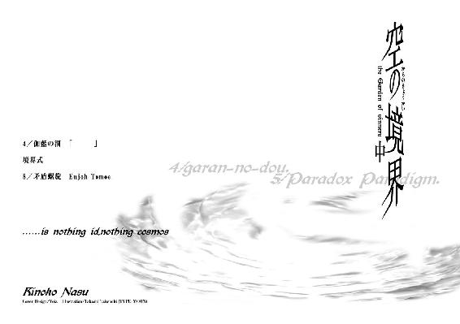
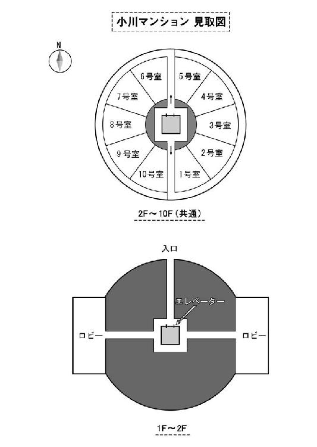

| 空の境界（中） (講談社文庫) | |
| 奈須きのこ | |
| 講談社 (2007) | |
空の境界（中）
奈須きのこ

──and she said
なにもかもを受け入れるのなら
傷はつかない。
自分に合わない事も。
自分が嫌いな事も。
自分が認められない事も。
反発せずに受け入れてしまえば
傷はつかない。
なにもかもをはねのけるのなら
傷つくしかない。
自分に合ってる事も。
自分が好きな事も。
自分が認められる事も。
同意せずにはねのけてしまえば
傷つくしかない。
ふたつの心はガランドウ。
肯定と否定の両端しかないもの。
その中に、なにもないもの。
その中に、私がいるもの。
／伽藍の洞
「ねえ、三階の個室の患者さんの話、聞いた？」
「あったりまえでしょう。そんなの昨日のうちに知れ渡ったわよ。冗談一ついわない脳外科の芦家先生からして取り乱したんじゃ、こっちにだって筒抜けになるわ。信じられないけど、あの患者さん回復したんですってね」
「違う違う、そうじゃないの。ま、確かにあの娘の話なんだけど、それって続きがあるのよ。あの患者さん、昏睡から回復するなり何をしたと思う？ 驚くなかれ、自分で自分の目を潰したんだって」
「───なによそれ、ほんとのはなし？」
「うん。院内じゃタブーになってるみたいだけど、芦家先生に付き添ってた子から聞いたんだから間違いないわよぉ。先生が目を離したすきに、手の平で瞼の上から目を圧迫したんだっていうんだから、ホラーよね」
「待って。あの子、二年間寝たきりだったんでしょ？ なら、満足に体が動くはずないじゃない」
「そうなんだけどぉ。あちらのお家ってお金持ちでしょ？ 入院中あたしらが丁寧にリハビリテーションしてあげてたから、関節とかは固まってなかったんだ。でもまあ、本人が動かしてたワケじゃないからいまいちうまく動けなかったみたい。そのおかげで両目潰しは未遂に終わったんだけどさ」
「───それでもすごいわよ。横臥は楽な反面、体がもっとも弱りやすいって習ったでしょ？ 二年間も眠ってたら、ほとんど人間として機能しないでしょうに」
「だから先生も油断してたんでしょうね。ほら、なんていったっけ。白目が出血するケース」
「球結膜下出血」
「そう、それそれ。普通は自然治癒するらしいんだけどさ、緑内障一歩手前まで眼球を圧迫したとかで、今は目が見えない状態なんだって。本人の希望で目だけを包帯でぐるぐる巻きにしてるって話」
「ふぅん。じゃあ、あの患者さんは目が覚めてから一度も日の光を見てないのね。......闇から闇か。ちょっと普通じゃないな」
「ちょっとじゃないよぅ。それにさ、問題はまだあるんだ。どうもさ、失語症？ そんな感じなんだって。うまく会話ができなくて、先生は知り合いの言語療法士を招くって。うちの病院、そういう人いないじゃん」
「荒耶先生は先月辞めてしまったものね。
でも───そうなると、その患者さんは面会謝絶になるのかな」
「そうみたいよ。精神状態が安定するまで、ご両親も少ししか会えないんだって」
「そっか。そうなるとあの男の子、可哀相ね」
「誰、男の子って？」
「知らない？ 患者さんが運ばれてから毎週土曜日に見舞いにくる子がいるのよ。もう男の子って歳じゃないんでしょうけど、あの子には会わせてあげたいわ」
「あ、例の子犬くんね。へえ、まだ通ってたんだ。今時には珍しく真摯じゃない」
「ええ。この二年間、あの子だけが患者さんを見守ってた。だから───患者さんが回復した奇蹟の何分の一かは、あの子のおかげなんじゃないかなって思う。......何年もこの仕事やってて、そんな夢を口にするなんてわたしもどうかしてるとは思うんだけど、さ」
其処は暗く、底は昏かった。
自分の周りにあるのが闇だけと知って、私は死んでしまったのだと受け入れた。
光も音もない海の中に浮かんでいる。裸で、何も飾らないままで、両儀式という名前の人型が沈んでいく。
果てはなかった。いや、はじめから墜ちてなどいなかったのかもしれない。
ここには、何もないから。光がないんじゃなくて、闇さえもない。何もないから、何も見えない。墜ちていくという意味さえない。
無という言葉さえ、おそらくはありえまい。
形容さえ無意味な「 」の中において、私の体だけが沈んでいく。裸のままの私は、目を背けたくなるほど毒々しい色彩をしている。ここでは「ある」ものは全て毒気が強すぎる。
「───これが、死」
呟く声さえ、たぶん夢。
ただ、時間らしきものを観測する。
「 」には時間さえないけれど、私はそれを観測できてしまう。
流れるように自然に、腐敗するように無様に、時間だけを数えていた。
何もない。
ずっと、ずっと遠くを見つめていても、何も見えない。
ずっと、ずっと何かを待ちつづけても、何も見えない。
とても穏やかで、満ち足りている。
いや───あらゆる意味がないから、ここではただ「ある」だけで完璧なんだ。
ここは死だ。
死者しか到達しえない世界。生者では観測できない世界。
なのに、私だけが生きているなんて───
気が、狂いそうだった。
二年間。私はここで死という観念に触れていた。
それは観測ではなく、むしろ戦いの激しさに近かったと思う。
朝になって、病院はにわかに騒がしくなってきた。
廊下を行く看護婦の足音や起きだした患者達の生活音が幾重にも繰り返される。夜中の静けさに比べると、朝の慌ただしさはお祭りみたいに感じられた。
目が覚めたばかりの私には、その賑やかさは大きすぎる。幸い、私の病室は個室だった。外は騒がしいが、この箱の中だけは静かで落ち着ける。
ほどなくして、医師が診察にやってきた。
「気分はどうですか、両儀さん」
「───さあ。よく、わからない」
感情のない私の返答に、医師は困ったふうに黙り込む。
「......そうですか。ですが、昨夜よりは落ち着いているようですね。辛いでしょうが、現在の貴女の状況をお話しします。気分が悪くなったのなら遠慮なく言ってください」
医師の言葉に私は無言を返答にした。そんな、わかりきった事なんて興味はなかったから。彼はそれを承諾の意と勘違いしたようだ。
「では、簡単に説明します。今日は九八年の六月十四日です。貴女───両儀式さんは二年前の三月五日の深夜に交通事故によって当院に運ばれました。横断歩道上での、乗用車との接触事故です。覚えがありますか？」
「............」
私は答えない。───そんな事は知らない。
記憶という引き出しから取り出せる最後の映像は、雨の中で立ち尽くすクラスメイトの姿だけだ。どうして自分が事故に遭ったのか、なんて事は覚えていない。
「ああ、思い出せなくても不安がることはありませんよ。両儀さんは乗用車と接触する寸前、それに気がついて跳び退いたようなのです。それが幸いしたのか、身体面での傷は重くなかった。
けれど、その反面で頭部に強い衝撃を受けたようです。当院に運びこまれた時点で意識は昏睡状態でした。ですので、記憶が思い出せないのは二年間の昏睡状態による一時的な意識の混乱でしょう。昨夜の診察では脳波に異状は見られませんでしたからね。記憶はおいおい回復されるでしょうが、絶対とは言いきれません。なにぶん昏睡からの回復そのものからして前例がないのです」
二年間と言われても、私にはあまり実感が湧かない。眠っていた両儀式にとって、その空白は無に近しい。
両儀式という人物にとって、昨日とは間違いなく二年前の雨の夜の事だろう。
けれど、私にとってはそうではない。
今の私にとって、昨日はそれこそ「無」だ。
「また、両目の傷も重いものではありません。圧迫による傷は眼球の障害でも軽いものですからね。昨夜は貴女の近くに刃物がなくて幸いでした。包帯もじきとれるでしょう。外の景色を見るのは、あと一週間ほど我慢してください」
医師の台詞には、どこか非難がましい響きがあった。彼は私が自分で目を潰そうとした事に迷惑しているのだろう。昨夜もどうしてそんな事をしたのか問い詰めてきたが、私は答えなかった。
「これからは午前と午後に身体のリハビリテーションを行なっていただきます。ご家族の方との面会は日に一時間程度が適切でしょう。体と心のバランスが整えばすぐに退院できます。辛いでしょうが頑張ってください」
予想通りの台詞に興醒めする。
私は皮肉を口にするのも疲れて、自分の右手を動かしてみた。......体は、そのどれもが自分の物ではないようだった。動かすのに時間がかかるし、関節や筋肉がばりばりと破けていくように痛む。二年間も使っていなかったのだから、それも当然なのだろうが。
「では、今朝はこれで。式さんも落ち着いたようですから看護婦はつけません。何かご用の時は枕元のボタンを押してください。隣室に看護婦が控えています。些細な事でも遠慮なく使ってやってください」
やんわりとした台詞。
目が見えていたのなら、私は医師のインスタントな笑顔を見ていた事だろう。
去っていく医師は、最後に思い出した、とばかりに一言つけたして言った。
「ああ、そうでした。明日からカウンセラーがこられます。両儀さんにわりと近い年齢の女性ですから、気軽に会話してください。今の貴女には、会話は回復に欠かせないものですから」
そうして、私はひとりになった。
病室のベッドの上で横になって、自ら閉ざした瞳を抱えて、ぼんやりと存在する。
「自分の名前────」
乾いた唇で、言った。
「両儀、式」
けど、そんな人間はここにはいない。
二年間の無が私を殺したから。
両儀式として生きてきた記憶は全て鮮明に思い出せる。でもそれがなんだっていうのだろう。一度死んで、生き返った私にとってそんな記憶が何になるというのか。
二年間の空白は、かつての私と今の私の繫がりを完全に断ってしまっている。
私は間違いなく両儀式で、式以外の何物でもないのに───かつての記憶を、自分の物と実感できない。
こうして蘇生した私は、両儀式という人間の一生を映像にして見ているだけなのだ。映画の登場人物を、私は私と思えない。
「まるで、フィルムに映った幽霊みたい」
唇を嚙む。
私は、私がわからない。
自分が本当に両儀式なのかさえあやふやだ。
私が、なにか得体の知れない者のように思える。
体の中身は空っぽで、洞窟みたいだ。空気でさえ風みたいに通り過ぎる。
理由はわからないけれど、本当に、胸に大きな穴が開いてしまっているようだ。
それがとても不安で───とても淋しい。
欠けたパズルのピースは心臓。その空隙に、軽い私は耐えられない。
空っぽすぎて、生きる理由も見当たらない。
「それが───どうしたっていうんだ、式」
言葉にしてみれば、どうという事はなかった。
不思議な事に───胸を搔き毟らなければならないほどの不安や焦燥を、私は苦しいとも悲しいとも感じない。
不安はある。痛みもある。
でもそれは、あくまで両儀式だったものが抱くものだ。
私は無感動だ。二年間の死からの蘇生にも興味はない。
ただユラユラとここにいる。
自分が生きているなんて、とても実感できないままで。
次の日になった。
光を捉えられない今の自分にも朝の到来が判るのは、ちょっとした発見だ。
そんなどうでもいい事がやけに嬉しい。なぜ嬉しいのかと考えているうちに朝の診察が始まり、いつの間にか終わっていた。
午前中はあまり静かではなかった。
母と兄が面会に来て、話をした。
まるで他人のようで、会話は嚙み合いもしない。仕方なく式の記憶通りの対応をすると、母は安心して帰っていった。
芝居をしているようで、気が滅入るほど滑稽だった。
午後になって、カウンセラーがやってきた。
一応言語療法士だという女性は、底抜けに明るかった。
「はぁい、元気？」
なんて挨拶をする医師の話を、私は聞いた事がない。
「へえ。やつれてるかと思ったけど、肌のつやとかキレイなのね。話を聞いた時はね、柳の下にいる幽霊みたいなのを想像しちゃってあんまり気乗りしなかったんだけど。うん、私好みの可愛い娘でラッキーじゃん！」
声の質からして二十代後半らしき女性は、私が眠るベッド横の椅子に座り込む。
「はじめまして。貴女の失語症の回復を助けにきた言語療法士です。ここの人間じゃないから身分証明書はないんだけど、目が見えないならどうでもいい問題よね」
「───失語症って、誰が」
つい言い返すと、女医はうんうんと頷いたようだ。
「そりゃあ、ふつう怒るわよね。失語症ってあんまりいいイメージないし、なおかつ誤診だし。芦家クンは教科書通りの人間だからさ、あなたみたいな特殊なケースには弱いのよ。でも、あなたも悪いわよ。面倒くさがって何も話そうとしないから、そんな疑いをかけられちゃう」
さも親しげに、女性はくすくすと笑う。
───完全な偏見だが。私は、この相手が眼鏡をかけている人間だと決めつけた。
「失語症と、思われてたんだ」
「そうよ。あなたは事故で脳やっちゃってるしね。言語回路が破損してるんじゃないかって。でもそれは誤診。あなたが話をしないのは身体的なものじゃなくて精神的なものでしょう？ だから失語症じゃなくて無言症。そうなると私はお役御免になるんだけど、わずか一分足らずでクビっていうのもイヤな話でさ。ちょうど本業も暇だから、しばらく付き合ってあげるわ」
......余計なお世話だ。
私は看護婦を呼ぶボタンに手を伸ばす。
と、女医はボタンをすばやく私から取り上げた。
「───おまえ」
「危ない危ない。芦家クンに今の話を言われたら、私はすぐさま退場だものね。いいじゃない、失語症だと思わせておけば。あなたもつまらない返答をする必要がなくなるんだから、お得でしょ？」
......それは、たしかにその通りだ。けれどそれをはっきりと口にするこの人物は何者なんだろう。
私は包帯の巻かれた瞳を正体不明の女医に向ける。
「おまえ、医者じゃないだろ」
「ええ、本業は魔法使いなの」
呆れて、私は息を吐いた。
「手品師に用はないよ」
「あはは、確かにそうね。あなたの胸の穴はマジシャンじゃ埋められない。埋められるのは普通の人だけだもの」
「───胸の、穴───？」
「そう。気付いてるんでしょ？ 貴女は、もう一人なんだって事を」
クスリと笑って、女医は立ち上がった。
片付けられる椅子の音と、立ち去っていく足音だけが私に届く。
「まだ早すぎたみたいだから、今日はここまでにしとく。また明日くるから、バイ」
唐突に現れて、唐突に彼女は去っていった。
私は動きにくい右手で、口元に手をあてた。
もう、ひとり。
胸に空いた、穴。
───ああ、なんて事だろう。
なんて事を、私は失念していたんだ。
いない。どこに呼びかけたって、彼がいない。
両儀式の中にいたもう一人の人格である両儀織の気配が、綺麗さっぱりなくなっている────。
式は、自らの内に異なる人格を抱える二重人格者だった。
両儀の家系には遺伝的にふたつの人格を持ってしまう子供が生まれる。世間一般の家庭なら忌み嫌われるそれは、両儀の家では逆に超越者として祀られ、正統な跡継ぎとして扱われていた。
......式はその血を受け継いだ。男子である兄を差し置いて女子である式が跡継ぎになっているのはそのためだ。
けど、本来はこんな事は起こらない。
ふたつの人格───陽性である男と陰性である女の人格の主導権は、陽性である男性のほうが強い。今までの数少ない〝正統な〟両儀の跡継ぎは、全員が男性として生まれ、その内に女性としての人格を持っていた。けれど式は何かの手違いでそれが逆転してしまったのだ。
女性としての式の内に、男性としての織が包摂された。
肉体の主導権を持つのが女性である式───つまり私。
織は私のマイナス面の人格で、私の抑圧された感情を受け持っていた。
式は織という負の闇を圧し殺して生きてきた。何度も何度も、自分という織を殺して普通のふりをして生きていた。
織本人は、それに別段不満もなさそうだった。彼は大抵眠っていて、剣の稽古の時などに呼び起こすと退屈そうにそれを請け負った。
......まるで主人と従者の関係だけれど、本質はそうじゃない。式と織は結局のところ、ひとつなんだ。式の行動は織のもので、織が自身の嗜好を圧し殺すのは彼本人の望みでもあった。
......そう。織は殺人鬼だった。私が知るかぎりでその経験はなかったが、彼は人間という、自分と同じ生物を殺害する事を望んでいた。
主人格である式はそれを無視した。ずっと、それを禁じてきた。
式と織は互いに無視しあいながらも、なくてはならない存在だった。式は孤立していたけれど。織というもう一人の自分のおかげで、孤独ではなかったから。
でも、その関係が壊れる時がやってきた。
二年前、式が高校一年生だった時。今まで肉体を使いたがらなかった織が、自分から表に出たいと願いはじめたあの季節────。
そこから式の記憶は曖昧だ。
今の私では、高校一年の頃から事故に遭うまでの式の記憶が呼び出せない。
覚えているのは──殺人現場に居合わせている自分の姿。
流れでる赤黒い血液を見て、喉をならす自分の姿。
けれどそれより、もっと鮮明に覚えている映像がある。
赤くて、炎えるような夕暮れどきの教室。
式を壊してしまった、あのクラスメイト。
シキが殺したかった、ひとりの少年。
シキが守りたかった、ひとつの理想。
それを、ずっと昔から知っている気がするのに。
長い眠りから目を覚ました私は、彼の名前だけが、まだ思い出せないでいた。
夜になって、病院は静かになった。
ときおり廊下に響くスリッパの音だけが、私は目覚めているのだと感じさせる。
闇の中で───いや、闇の中だからこそ。
何も見えない私は、自分が独りだと痛感する。
かつての式ならその感覚はなかっただろう。
自らの内にもう一人の自分を抱えていた式。けれど織はもういない。いや───私は、自分が式であるのか織であるのかさえ判らない。
私の中には織が無かった。ただそれだけの事で、私は自分が式だと認識している。
「は......なんて矛盾。どちらかがいなければ、自分がどちらか判らないなんて」
嗤ってみたけれど、胸の空虚さは少しも埋まらない。せめて悲しいとでも思えれば、この無感動な心にも何か変化があるだろうに。
自分が判らないはずだ。私は誰でもないから、両儀式の記憶を自分の物と実感できない。両儀式というカラだけあっても、その中身が洗い流されてしまったのでは意味がない。......いったい。このガランドウの入れ物には、どんな物が入るのだろうか。
「───ボ。クガ、ハイ、る。ヨ」
ふと、そんな音が聞こえた。
扉が開いたような空気の流れ。
気のせいだろう、と私は閉ざされた瞳を向ける。
そこに────いた。
白いモヤが、ゆらゆらと揺らめいていた。見えないはずの私の目は、そのモヤの形だけをとらえている──
モヤは、どことなく人間に似ていた。いや、人間がクラゲのように骨抜きになって風に流されている、としかとれない。
気色の悪いモヤは、一直線に私に向かってきた。
まだ体が満足に動かない私は、それをぼんやりと待った。
これが幽霊というモノだとしても恐くはない。
本当に恐ろしいのはカタチが無いモノだ。たとえどんなに奇怪なものでもカタチがあるものなら、私は恐いとは感じない。
それに幽霊であるのなら、今の私も似たようなものだろう。生きていないコレと、生きる理由のない私に大差はないのだから。
モヤは私の頰に触れてきた。
全身が急速に凍えていく。背筋に走る悪寒は鳥の爪めいて鋭い。
不快な感覚だったけれど、私はそれをぼんやりと見つめ続けた。しばらく触れていると、モヤは塩をかけた蛞蝓みたいに溶けていった。
理由は簡単だ。モヤが私に触れていた時間は五時間ほどあった。時刻はじき午前五時になる。朝になったので幽霊は溶けていったのだろう。
眠れなかった分、私はこれから寝なおす事にした。
私が回復してから何日目かの朝がやってきた。
両目はまだ包帯に巻かれたままで何も見えない。
誰もいない静謐の朝。
漣のような静けさは、健常すぎて我を失う。
───小鳥の囀りが聞こえる。
───陽射しの温かさを感じる。
───澄んだ空気が肺に満たされる。
───あの世界に比べて、ここはとても綺麗だ。
なのに、それを喜びもしない自分がいる。
ただ気配だけで感じる朝の空気に包まれるたびに、思う。
───こんなにも幸福なのに。
人間は、こんなにもひとりだ。
ひとりでいる事は何にもまして安全なのに、どうしてひとりでいる事に耐えられないのか。かつての私は完成されていた。ひとりで足りていたから、誰も必要ではなかった。
けど、今は違う。私はもう完全じゃない。
足りない部分を待っている。こうしてずっと待っている。
でも、私はいったい、誰を待っているというのだろう......？
カウンセラーを名乗る女医は毎日やってきた。
いつのまにか私は、彼女との会話を虚ろな一日の拠り所にしているようだった。
「ふぅん、なるほどね。織クンは肉体の主導権がなかったんじゃなくて、使わなかっただけなんだ。ますます面白いな、あなた達は」
相変わらずベッドの横に椅子を寄せて、女医は楽しげに話をする。
どういうわけか、彼女は私の事情をよく知っていた。
両儀の家の者しか知らない私の二重人格の事も、二年前の通り魔事件に私が関わっていた事も。本来ならば隠し通さなければならないそれらの事柄は、しかし、私にとってはどうでもいい事だ。
知らず、私はカウンセラーの軽口に合いの手をいれるように会話をしていた。
「二重人格に面白いも何もないと思う」
「ちっちっち。あなた達のはね、二重人格なんて可愛いものじゃないわ。いい？ 同時に存在して、それぞれが確固たる意志をもって、なおかつ行動が統合されている。こんな複雑怪奇な人格は二重人格じゃなくて、複合個別人格というべきね」
「複合......個別人格───？」
「そう。けど、少し疑問が残る。それなら織クンは眠っている必要なんかないのよ。あなたの話じゃ彼はいつも眠っていたというけど、そこがちょっと、ね」
いつも眠っていた織。......その疑問が分かるのは、たぶん私だけだ。
織は式より───夢を見るのが好きだったから。
「それで。今も眠っているの、彼は？」
女医の言葉に、私は答えなかった。
「そっか。じゃあやっぱり死んだのね。二年前の事故の時、あなたの代わりになって。だからあなたの記憶には欠落がある。織クンが受け持っていた二年前の事件の記憶が曖昧なのはそのせいよ。彼が失われてしまった以上、その記憶は戻らない。......両儀式が通り魔殺人にどう関わっていたかは、これで本当に闇の中に消えてしまったわ」
「その事件。犯人は捕まっていないそうだけど」
「ええ。あなたが事故に遭ってから噓みたいに行方を晦ましたわ」
どこまで本気なのか、女医はあははと笑った。
「でも、織クンが消える理由はなかったのよね。だって黙っていれば、消えていたのは式サンだったんでしょ？ 彼はどうして、自ら消える事を望んだのかしら」
そんな事、私に訊かれても解るものか。
「知らない。それよりハサミは持ってきた？」
「あ、やっぱりダメですって。あなたは前科があるから、刃物は厳禁だそうよ」
女医の言葉は予想通りだ。
日頃のリハビリテーションのおかげか、私の体はなんとか自分で動けるくらいまでに回復した。日に二回、わずか数分だけの些細な運動でこんなにも早く回復したのは私が初めてだそうだ。
そのお祝いをしよう、という女医に、私はハサミを欲しがった。
「でもハサミなんか何に使うの？ 生け花でもする気？」
「まさか。たんに、髪を切りたかったから」
そう。体が動くようになったら、背中にあたる自分の髪が鬱陶しくなったのだ。首筋からざらざらと肩に流れる髪は小煩い。
「それなら美容師さんを呼べばいいのに。言いにくいなら私が呼んできましょうか？」
「いい。他人の手が髪に触れるなんて、想像したくもない」
「そうよねー、髪は女の命だもの。あなたは二年前のままなのに、髪だけは伸びていたのって可憐だわ」
女医が立ち上がる音がした。
「それじゃあ代わりにこれをあげましょう。ルーンを刻んだだけの石だけど、お守りぐらいにはなると思うの。ドアの上に置いておくから、誰にも取らせないように注意してね」
女医は椅子を使って扉の上にお守りとやらを置いたようだ。
彼女はそのまま扉を開ける。
「それじゃあ、私はこれで。明日からは別の人で来るかもしれないから、その時はよろしくね」
おかしな言い回しをして、女医は立ち去っていった。
その夜、いつもの来客は現れなかった。
深夜になると決まってやってくるモヤのような幽霊は、この日にかぎって病室に入ってこなかった。
モヤは毎夜やってきては私に触れていた。
それが危険な事だと判ってはいたが、私は放っておいた。
あの幽霊みたいなものが私に取り憑いて殺すというのなら、それもかまわない。
いや、いっそ殺してくれるのなら、どんなに簡単だろう。
生きている実感の湧かない私には、生きていく理由さえない。なら、いっそ消えてしまったほうが楽だ。
闇の中、瞼を覆う包帯に指を触れさせる。
視力はじき戻ろうとしている。そうしたら私は今度こそ完全に眼球を潰してしまうだろう。今は視えないけれど、治ってしまえばまたアレが視えてしまう。あの世界が見えてしまうぐらいなら、こんな目はいらない。その結果としてこちらの世界が見えなくなったとしても、幾分はましだろう。
......なのに、私はその瞬間まで行動を起こせないでいる。
かつての式なら迷う事なく眼球を破壊しているだろうに、今の私は仮初めの暗闇を得た事で停滞しているのだ。
───なんて、無様。
私は生きる意志もないくせに、死のうとする意志さえない。無感動な私は、どんな行動にも魅力を感じない。誰かの意志を受け入れる肯定しかできない。
だから、あの得体のしれないモヤが私を殺すというのなら止めはしない。
死ぬ事に魅力は感じないけれど抵抗する気もない。
......どうせ。喜びも悲しみも、両儀式だったものにしか与えられないというのなら。今の私は、生きていく意味さえないのだから。
蒼崎橙子が両儀式という人物の話を聞いたのは、ちょうど六月になったばかりの、天気のいい昼下がりの事だった。
彼女が気紛れで雇った新入社員が両儀式の友人で、暇潰しのつもりで彼の話を聞きだしたのがそもそもの発端だ。
話によると両儀式は二年前に交通事故に遭ってから昏睡状態に陥り、生命活動こそ維持しているものの目が覚める見込みはまったくないのだという。それだけでなく、どうも肉体の成長も止まってしまっているらしい。生命活動があるのに成長が止まっているなんて間違いを、初め、橙子は信じなかった。
「......ふぅん。成長しない生物は死んでるものなんだがね。いや、時間の圧力は死人にさえ影響を及ぼす。死体は腐敗という成長をとげて土に還るだろう。動くクセに成長しないなんてのは、この間君が稼働させてしまった自動人形ぐらいのものだよ」
「でも本当なんです。彼女はあれから歳をとってるように見えない。式のような原因不明の昏睡状態って他に例はないんですか、橙子さん」
新入社員の問いに、橙子はふむ、と腕を組む。
「そうだな。あちらさんの国で有名なのがあるだろう。当時結婚したばかりの二十代の女性が昏睡に陥り、実に五十年もの歳月を超えて蘇生したという例だ。知らないか？」
橙子の言葉に新入社員はいえ、と首をふった。
「あの、その人って目覚めた時はどうなっていたんですか」
「いたって正常だったそうだ。五十年の眠りなんて、それこそ無かったぐらいにな。彼女は二十代の心のままできちんと蘇生して、夫を悲しませた」
「───え？ 悲しむって、なんでですか。奥さんが回復したんだから、喜ばしい事じゃないですか」
「だからさ。心は二十代のままで肉体はもう七十歳に老化してしまっていたんだ。昏睡している間にもね。生かすというのは劣化させるって事だから、こればかりは仕方あるまい。
そうして、七十歳の夫人は自分がまだ二十代のつもりで夫に遊びにいこうとせがむ事になる。夫の方は正しく七十年間生きてきたからそれでいい。問題は妻のほうだ。五十年という時間を知らないうちに使いきられた彼女は、どんなに言葉で説明してもその現実を認められない。嫌がって認めないんじゃなくて、本当に真実として認識できないんだ。悲劇といえば悲劇だよ。皺だらけの体を背負って遊び場に行こうとする彼女を、夫は泣きながら止めたという。そしてこう思ったそうだ。こんな事なら目覚めなければよかったのに、と。
どうだ？ 夢物語のような悲劇はね、実はとうの昔に現実の物になっているのさ。参考になったか？」
橙子の言葉に、彼は神妙にうなだれた。
「おや、思い当たる節でもあったか」
「......えぇ、少し。ときどき思うんです。式は、自分から起きようとしないんじゃないかって」
「ワケありのようだな。よし、暇潰しに話してみろ」
本当に暇潰しのために言う橙子に、彼は怒って顔を背ける。
「お断りします。橙子さんの、そういう無神経なところって問題ありますよ」
「なんだ、話をふったのはそっちだろう。いいから話せ。私だって興味本位なわけじゃないんだ。鮮花のやつ、電話口で毎回そのシキという名前を言ってね。どんな人間だったのか知らないと、返答のしようもないだろう？」
鮮花、という名前を出されて彼は眉を寄せる。
「前から尋ねようと思ってたんですけど。うちの妹と橙子さん、どこで知りあったんです？」
「一年前に旅先で。ちょっとした猟奇事件に巻き込まれた時に、不覚にも正体がばれてしまった」
「......まあいいですけど。鮮花は純真なんですから、あることないこと吹き込まないでくださいよ。あいつ、ただでさえ不安定な年頃なんですから」
「鮮花が純真、ね。たしかにありゃあ純真かもしれない。ま、妹との確執は君の問題だから関与しないよ。それよりシキって子の話をしよう」
机に身を乗り出して言う橙子に、彼はため息まじりに話しだした。
両儀式という友人の性格と、その特異な人格の在り方を。
彼と両儀式は高校時代のクラスメイトだった。
入学する前から両儀式という名前に縁があった彼は、彼女と同じクラスになった後に友人になった。あまり友人を作りたがらない両儀式と親しくしていたのは彼だけだったという。
だが、彼らが高校一年生だった頃に起きた通り魔殺人事件以後、両儀式は微妙に変わりだしてしまった。
彼女は自分が二重人格者だという事、そしてもうひとつの人格が殺人を嗜好しているという事を彼に打ち明けたのだ。
実際、二年前の通り魔殺人に両儀式がどう関わっていたかは謎だ。それが明らかになる前に、彼女は彼の目前で事故に遭って病院に運ばれた。
三月の初めの、冷たい雨が降る夜に。
そんな一連の話を、橙子は酒の肴程度にしか聞いていなかったのだが、話が深まるにつれ、その表情から笑みが消えていった。
「以上が僕と式の顚末です。もう、二年も前の話だけど」
「───それで成長が止まってるワケか。命のリザーブなんて、吸血鬼じゃあるまいし。それでさ、その子の名前ってどう書くんだ？ 漢字で一文字だろ？」
「数式の式ですけど、それが何か？」
「式神の式、か。それで名字が両儀ときた。出来すぎだよ、それ」
咥えていた煙草を灰皿に押しつけると、橙子は我慢ならないとばかりに立ちあがる。
「病院は郊外だったっけ。興味が湧いたから、少しだけ様子を見てくる」
返事を待たずに橙子は事務所を後にした。
まさかこんな所でそんな物に関わるなんて、なんて因果だと唇を嚙みながら。
両儀式が回復したのは、それから数日後の事となる。
親族でさえ容易に面会ができない状況は、取りも直さず一般面会の不可能性を示していた。
そのせいだろう。新入社員の彼が人が変わったような陰鬱さでこつこつとデスクワークに没頭しているのは。
「暗いな、どうにも」
「はい。電灯、いいかげんに購入しましょう」
橙子に視線も向けないで答える。
真面目な人間が思い詰めるととんでもない奇行に出る場合がある。この青年もその類かな、と想像して橙子は声をかける事にした。
「そう思い詰めるな。今日あたり不法侵入しそうな気配だぞ、君」
「無理ですよ。あそこの病院、研究所なみの警備システムなんですから」
さらりと返答するあたり、詳しく警備システムを調べあげているのだろう。
せっかくの新入社員を犯罪者にする訳にもいかないか、と橙子は肩をすくめる。
「......黙っておこうと思ったんだが、仕方ないから教えてやる。私ね、ちょっとした代打として今日からあの病院に勤める事になったんだ。両儀式の近況にさぐりを入れてきてやるから、今は大人しくしていろ」
「─────え？」
「だから、医師として招かれている。いつもなら断る所だが今回は他人事ではないのでね。君から無理遣り話を聞き出した手前、これぐらいはしてやろうと思ったんだ」
つまらなそうに橙子はいう。
彼は椅子から立ち上がると、そのまま橙子へと歩み寄って彼女の両手を握った。
ぶんぶん、とふたりの手が縦に動く。......それが感謝の意思表示なのだと解らず、橙子は難しい顔で彼の顔を眺めた。
「奇怪な趣味をしているな、君」
「うれしいんです。おどろきました、橙子さんにも人並みの優しさとか義理があったんですね！」
「......人並みにはないが、そういう事は口にしないほうがいいと思うぞ」
「いいんです、僕が浅はかでした。あ、だから今日はスーツ姿なんですねっ。すごく格好いいです、似合ってます。見違えちゃいました、ええ！」
「......普段通りの服装なんだが、まあいい。世辞は受け取っておく」
何を言っても無駄か、と悟って橙子は会話を手早くきりあげた。
「そういう訳だから、あまり早まった行動はするな。ただでさえあの病院はおかしいんだ。君はここで留守番に専念する事。いいな？」
その言葉で、舞いあがっていた彼はいつも通りの落ち着きを取り戻した。
「───おかしいって、あの病院がですか？」
「ああ。結界らしき物の前準備が施されている。私以外の魔術師が介入しているようだ。ただ、目的は両儀式じゃないだろう。それなら二年間も放ってはおかないだろうしね」
あからさまな噓だったが、堂々と言い切ったので彼は疑いもしなかった。
「......えっと。結界って、このビルの二階みたいなヤツですよね？」
「ああ。結界とはレベル差こそあれ、一定の区画を隔離するものをいう。本当に壁を作ってしまうものから、見えない壁で覆ってしまうものもある。一番上等なのは何もしていないのに誰も近寄らない、という強制暗示。このビルと一緒だ。ここに来る目的がない者には意識できない、という暗示なら、誰にも気付かれずに結界であり続けられるからな。派手に異界を象って周囲に異常を知らしめる結界なんていうのは下の下の仕事だよ」
異常を気づかせない異常、それが彼女の工房の守りだ。
地図にあっても誰もが見落としてしまう結界。卓越した魔術師が巣くう世界とは、何げない隣の家めいたものなのだ。
だが───その結界を、この新入社員は無意識に破った。蒼崎橙子という人物を知っていなければ見付けだせないこのビルを、彼はいともたやすく発見してしまったのである。そのあたりが橙子が彼を雇った理由でもあるのだが。
「......それで、病院の結界って危ない物なんですか？」
「人の話を聞けというんだ。結界自体に害はない。もともとは仏教用語だぞ、結界という単語は。アレはあくまで外界と聖域を隔離するものなんだ。いつからか魔術師が身を護る術の総称になってしまったがね。
いいか、さっきも言ったが一番上等な結界は一般人に異常と思わせない〝無意識下に訴える強制観念〟なんだ。最も高等なのは空間遮断になるんだが、そこまでいくと魔術師ではなく魔法使いの業になる。現在、この国に魔法使いは一人しかいないから、まずそんな結界は張られない。
張られないんだが、あの病院に張られた結界はかなり巧い。私も初めは気がつかなかったぐらいだ。知り合いに結界作りのエキスパートがいたが、そいつと同格の作り手かな。......まあ、結界作りの専門家には哲学者が多い。連中は切った張ったには疎いから、まず安心していいだろう」
そう、結界自体に危険はない。問題は外界と遮断した世界で何を行なうか、という事だ。
あの病院の結界は外ではなく内に向いていた。
すなわち、院内でどのような出来事が起きても誰も気がつかない、という類の。例えば深夜に病室の一つから悲鳴があがっても、誰一人として目を覚ます事はないだろう。
橙子はその事実を口せず、そろそろ時間だ、と時計に視線を投げて歩きだした。
「橙子さん。式の事、よろしくお願いします」
ああ、と橙子は手の平をひらひらさせて答える。振り返りもしない彼女に、彼はもう一つの些細な疑問を投げかけた。
「そうだ。その、知り合いのエキスパートって誰ですか？」
ぴたり、と橙子の足が止まる。
彼女はしばし考え込んでから、くるりと振り返って答えた。
「そりゃあおまえ。結界の専門家っていえば、坊主に相場が決まってるだろ」
橙子が臨時の医師として病院に招かれてから六日ほど経過した。
日に日に回復に向かっているという両儀式の吉報を彼に届ける度に、橙子はある種の不安を持たずにはいられなかった。
すなわち、現在の両儀式と過去の両儀式が他人にとって同一のものなのか、という事を。
「日に二回のリハビリテーションと脳波のチェックが彼女の日課らしい。退院の日ぐらいは面会もできるだろうから、もうしばらくの我慢だな」
病院から帰ってきた橙子は、オレンジ色のネクタイを緩めながら机に腰かける。
夏を間近に控えた夕方。
夕日の赤が、電灯のない事務所を深紅に染め上げていた。
「一日二回のリハビリって、それだけでいいんですか？ 二年間も眠ったままだったんですよ、式は」
「患者が眠っていても毎日関節は動かしてたんだろう。それにリハビリは運動じゃないんだ。日に五分もやれば上等だよ。そもそもリハビリテーションっていうのは医学用語じゃないぞ。あれはね、人間としての尊厳の回復という意味なんだ。だから今まで寝たきりだった両儀式が、自身を人間なのだと実感できればそれでいい。身体の回復は、また別の話」
そこで一息いれて、橙子は煙草に火をつける。
「だがな。問題は身体面ではなく精神面だ。あの子は、以前の両儀式ではなくなっている」
「───記憶喪失、ですか」
覚悟していたのか、彼は恐る恐るそんな莫迦げた事を言った。
「うん、どうだろう。人格自体は以前のままだとは思う。両儀式自身に変化はない。変化があったのは式のほうでね。君にはショックな話かもしれんな」
「そんなの、今までで慣れました。詳しく説明してください。式は......その、どうなってるんですか？」
「ああ。率直に言うとね、彼女は空っぽなんだ。今まで内にもう一人の自分を抱えていた式。けれど織はもういない。いや、彼女には自分が式であったか織であったかさえあやふやだろう。目覚めた彼女の中には、織が無かった。それが失われた事により、彼女の心の中は空白になってしまったんだ。おそらく───あの子は、その空隙に耐えられない。......胸が空いているんだ。穴のように、足りていない。空気さえ風のように通り過ぎる」
「織がいないって───どうして」
「式の身代わりになったからだろ。とにかく二年前の事故の時に両儀式は死んだんだ。なまじ生きているから勘違いしてしまうが、死んだものと仮定してみろ。両儀式は新しい人間として両儀式の肉体に再生した。今の式にとって、過去の式と、それによって派生している現在の式は他人にすぎん。誰だって他人の歴史は実感できない。たぶん、あの子は今も自分が自分でない感覚のままで夜を過ごしているだろう」
「......他人って。それじゃあ式は以前の事は覚えていないんですか？」
「いや、覚えてるよ。今の彼女は間違いなく君の知ってる式だろう。彼女が生き延びられたのは、式と織という個別にして同格の人格を持っていたからだ。両儀式が事故によって精神死した。その時に死ぬ役をかって出たのが織とする。それで彼女は死亡したわけだが、まだ脳内には式が残っているんだ。結果、精神死にはならない。式は両儀式が死んでしまったという事実の為に眠り続けてしまっていたが、死んだのはあくまで織一人で、彼女は生きていた。二年間もの昏睡はそういう事だ。生命活動はあるのに成長しなかった。死んでいるのに生きていたからさ。しかし蘇生した彼女は以前の式とは細部が違う。記憶喪失、というほどでもないが、必要時でなければかつての記憶を思い出したりはしないだろうね。
他人とも別人とも言えないが、今の彼女は今までの式とは違うんだ。式と織という人格が混ざり合った第三の人格とでも受けとめておけばいい」
......だが、本当はそんな事にはなりえない。
式が両儀である以上、半身である織と溶け合う事もないし、織が欠けた空白を式ひとりで埋める事もできないのだから。
その事実を口にせず、橙子は話を続ける。
「だが、たとえ彼女がまったくの他人として再生しても、彼女は両儀式だ。どんなに自身に実感が持てなくても───あの子はやっぱり両儀式なんだよ。今はまだ生の実感さえ摑めていないだろうが、いずれ彼女も自身を式なのだと認識できる時がくる。
薔薇は薔薇として生まれるんだ。育った土と水が変わっただけで違う花になりはしない」
だからそんなことで悩みこむな、と彼女は呟くように付け足した。
「結局、空いた穴は何かで埋めるしかないんだ。彼女は記憶ではなく、今を積み重ねて新しい自分を形成していくしかない。それは誰も手を貸せない伽藍造りだ。他人が口をはさめる事じゃない。ようするに、君は今までどおりに彼女に接すればいいだけさ。あの子の退院、近いそうだよ」
吸いきった煙草を窓の外に放って、橙子は両手を上げて背筋を伸ばした。
ばきばきと豪快に骨がなる。
「まったく、慣れない事はするもんじゃないな。煙草がまずくて仕方がない」
誰に言うでもなく、長く息をはきながら彼女は言った。
いつも通りの朝の診察が終わって、今日が二十日だと知らされた。私が目覚めてから七日経ったという事だ。
身体の方も順調に回復しつつある私は、明日退院する事になる。両目の包帯も、明日の朝には解けるという話だった。
七日......一週間。
その間に私が得たものは、そう多くはない。
失ったものが多すぎて、何を無くしてしまったのかさえ曖昧だ。
両親も秋隆も、たぶん以前のままで変わっていない。けれど私が捉える彼らは別人だ。両儀式という私でさえ変わってしまったのだから、私をとりまいていた全ての事柄が無くなってしまうのは、きっと仕方のない事なのだ。
ふと、両目を覆う包帯に手をかける。
失ったものの代わりに得たモノが、これだ。
二年間───生きたまま『死』という物に触れていた私は、そんなカタチのない概念を見てしまう体質になっていた。
昏睡から目覚めて初めて目にしたものは、驚いて駆けよってくる看護婦ではなく、彼女の首筋に引かれた線だった。
人にも、壁にも、空気にも───凶々しくも清麗な線が見えた。線は常に流動し、一定しない。
けれど確実にその個体のどこかにあって、今にもそこから『死』が滲みだしそうな強迫観念に囚われた。私に話しかける看護婦が、首筋の線からぼろぼろと崩れていく幻視をした。
それが一体何であるか理解した時───私は、自らの手でこの両目を押し潰そうとした。
二年間も動いていなかった両腕は力をいれるだけで激痛を伝えてきたけれど、それでも腕を動かした。不幸なのか幸運なのか、私の腕力はまだ弱くて、両目を壊すという行為は途中で医師に止められてしまった。彼らは意識の混濁からの突発的な衝動だと結論して、私が両目を潰そうとした理由をあまり問わなかった。
「もうすぐ───目が、治るのか」
そんなのは御免だ。あんな世界など、私は二度と見たくない。
何もない世界。そこに『ある』ころは、とても穏やかで満ち足りていた。
───信じられない。目が覚めて思い返せば、あの場所ほどおぞましい世界はないんだ。あの闇が、眠っていた私が見たただの悪夢だったとしても──あそこに墜ちるのだけは耐えられない。
そして、そこに繫がってしまうこの両目も。
私は指先を瞳につきたてる。あとは竹刀を振りおろすような潔さで、この指を眼球につき入れるだけだ────。
「待て待て。思い切りが良すぎるよ、おまえは」
突然、声がした。
私は扉に意識を向ける。
そこにいるのは───何だ？
足音も無く近寄ってくる。
私の横たわるベッドの脇に来ると、その誰かはぴたりと止まった。
「直死の魔眼か。それを無くすのはもったいないぞ式。第一、潰したところで視えてしまうものは視えてしまうんだ。呪咀の類はな、捨ててしまっても戻ってくるものなんだから」
「おまえは───人間か？」
私の問いに、誰かは笑いをかみ殺したようだ。
しゅっ、とライターが火を吐き出す音がする。
「私は魔術師だよ。おまえに、その目の使い方を教えてやろうと思ってね」
聞き覚えのある女の声。......この誰かは、間違いなくあのカウンセラーだった。
「この目の使い方、だって......？」
「ああ。今よりはマシな程度だが、知らないよりはいい。睨むだけで相手の死を具現させる、なんて魔眼はケルトの神さま以来だ。無くすのは惜しい」
バロールと言うんだがね、と女は意味のわからない事を付け足す。
「魔眼というのは自己の眼球になんらかの付属効果をもたらす霊的手術の結果なんだが、おまえの場合は自然に現れてしまったんだな。もともとその素質があって、今回の出来事で才能が開花したという訳だ。聞いたかぎりの話では、昔から式という子は物事の奥を見つめていたようじゃないか」
......見知ったような事を言う。
けれどこの女の言う通り、式は昔から遠くを見つめていた。人を見る時もその人間の表面ではなく、その中にある深部を捉えていたような気がする。式本人は意識していなかっただろうけど。
「それはね、きっと両儀式が無意識に行なっていた制御法なんだよ。おまえは表面を見ようとしては駄目なんだ。
万物には全てに綻びがある。完璧な物体などないから、みんな壊れて一から作り直されたいという願望がある。おまえの目はね、その綻びが視えるんだ。顕微鏡みたいなものさ。霊的な視力が強すぎる。我々では視認できない線が視えて、かつ、死に長く触れていたおまえには、それが何であるか理解できてしまう。結果、脳が死を視てしまっている。そればかりか触れる事もできる筈だ。生物の死線というのは、生きているかぎり絶えずその位置を変える。それを確実に視てしまえる能力は、睨むだけで生命を死に至らしめる魔眼と大差はない。おまえがそれを破壊するというのなら私がもらう。言い値で買い取ってやるぞ」
「......目がなくとも視えてしまうといったな。なら、目を壊す理由なんてない」
「そうさ。おまえは普通には生きられない。悩むのもそこまでにしておけよ、両儀式。いいかげん目を醒ませ。おまえはもともと私側の人間だろう？
なら───人並みに生きようなんてユメなどみるな」
「────────」
......その一言は、ある意味、決定的だった。
でも、それを認めてはいけない気がした。
私は今できる精一杯の反論をする。
「生きる意志なんて───私は、持っていない」
「ふん。心が空だからか。だが死ぬのはイヤなんだろう？ なぜならおまえはあちらの世界を識ってしまったからな。ケテルのカバリストでも辿り着けない深部に居られたというのに、贅沢な女め。いいか、おまえの悩みは簡単だ。他人として再生したからどうだというんだ。単に織がいないだけだろうに。たしかに式と織はセットだった。織がいないという事は、もうそれだけで別人だろう。たとえおまえが式そのものだとしても、以前とは違うのも解る。
だが、それはただ欠けただけの話なんだ。なのにおまえは、生きる意志がまったくないくせに死ぬのだけは御免だという。生きる理由がまったくないくせに死ぬのだけは恐いという。生と死のどちらも選べずに境界の上で綱渡りだ。心がガランドウにもなるさ」
「......知ったような口を、よくも───」
私は女を睨みつける。とたん───たしかに、見えない筈の目が、女の輪郭と黒い線を捉えてしまった。
『死』が、女の線から私自身に絡み付く。
「みたことか。隙があるからその程度の接触に動じるんだ。ここの雑念どもにとってみれば、おまえの体は特上の器だ。目を醒まさなければやつらに取り殺される事になるぞ」
取り殺すとは、あの白いモヤの事か。
だが、あれはもうやってこない。
「雑念というのはな、死んだ後も残ってしまった魂の欠片にすぎない。意志がないから、ただ漂うだけだ。だが欠片である以上、連中は段々と固まりだして一つの霊となる。連中には意志がないが、本能だけは残っている。以前の自分に戻りたい。人間の体がほしい、というな。
病院には雑念が多い。それは浮遊霊となって体を求めている。彼らは微弱だからこそ、一般人には感知されないし接触もできない。形のない霊が関われるのはそれを感知できる霊能力者だけだ。霊視を生業とする術者は彼らに取り憑かれないよう、自我を殻で守るから浮遊霊なぞにつけこまれるケースは少ない。
だが───おまえのように心がガランドウの者は簡単に憑かれるぞ」
侮蔑するように女は言った。
なるほど、あのモヤが私の所にやってきた理由はそれか。だが、それならどうしてアレは私に憑かなかったのか。アレが私の中身になるというのなら、私は抵抗しなかっただろうに。
「───無様だな。ルーンの守護もこれでは無意味だ。もういい、やはり性にあわん。あとは勝手にしろ」
毒のある言葉を吐き捨てると、女はベッドから離れていく。
病室の扉を閉める間際、女は言った。
「でもさ。織は本当に無駄死になのかい、両儀式？」
私はそれに答えられない。
ほんとうに───この女は、私が避けている事ばかりを棘のように残していく。
夜になった。
周囲には昏い闇。今日にかぎって、廊下を行く足音も聞こえない。
穏やかな夜の中で、私はあの女との会話を繰り返していた。
いや、正確には最後の言葉だけを。
どうして織は、式の身代わりになったのだろう。
質問に答える織はいない。
───もういない織。
何のために彼は消えてしまったのか。
何と引き替えにして、彼は消えてしまったのか。
夢を見るのが好きだった織。
彼はいつも眠っていた。その行為さえ放棄して、あの雨の夜に彼は死んだ。
もう会えない自分。はじめから会えなかった自分。
織という、本来自分だったもの───。
意識は沈む。
彼が到達した結論に辿り着こうと、ただ思い出を逆行した。
ぎぃ、と病室の扉が開く。
遅くて、緩慢な足音が近付いてくる。
看護婦だろうか。いや、時刻はすでに午前零時を過ぎている。
来訪者があるとすれば、それは───。
その時、人間の手が私の首に絡み付いた。
冷たい掌は、そのまま私の首の骨を折らんとばかりに力をいれた。
「あ────」
首にかかる圧迫に、式は喘いだ。
呼吸ができない。喉が締め付けられる。
これでは呼吸困難の前に首がねじ切られる。
式は見えない目でその相手を凝視し、
『......人間じゃ───ない』
緩慢に、その異常を受け入れた。
いや、カタチは人型。けれど彼女にのしかかって首を絞めている人間は、すでに生きてはいなかった。
死人が、ひとりでに動いてベッドの上の式を襲っている。
首にかかる力は休まない。
式は相手の両腕を摑んで抵抗するが、力の差は歴然としていた。
第一───これは、自分が望んだ事ではなかったか。
「──────」
呼吸を止めて、式は両腕を死者の腕から離す。
このまま殺されるのなら、それもいいと諦めて。
だって生きていても意味がない。
生きている感覚がないのに存在しているのは、それこそ苦行だ。消えてしまうのが自然の摂理にさえ思えた。
力がかかる。
実際にはまだ数秒も経っていないだろうに、時間はとても緩やかだ。
ゴムのように間延びしていく。
死者が生者の首を絞める。
体温のない材木めいた指が喉に食い込む。
この殺人行為には容赦などなく、初めから意志さえない。
首の皮膚が裂けた。
流れる血は生きている確かな証だ。
死んで──織と同じに死んで──それを捨てる。
捨てる......？ その単語に、式の意識は引き戻される。
ふと疑問が生まれた。
はたして───彼は、喜んで死んだのだろうか。
......そうだ、それを考えていなかった。
理由はともかく、そこに彼の意志はあったのか。
死にたかった筈はない。
だって──死は、あんなにも孤独で無価値なのに。
死は、あんなにも黒くて不気味なのに。
死は、どんなものよりも恐かったのに────！
「────御免だ」
瞬間、式は体に活をいれた。
両腕で死者の腕を摑み、下になったまま片足を相手の腹にそえて───
「私は、あそこに墜ちるのだけは嫌だ───！」
───力のかぎり、この肉塊を蹴り上げた。
ずるり、と皮膚と血をぬめらせて死者の両手が首から離れる。
式はベッドから立ちあがる。
死者は式へ跳びかかる。
両者は明かりのない病室の中で組み合った。
死者の肉体は成人の男子のものだ。式より頭ふたつ分も大きい。
どうあがいても式は組み伏されてしまう。
両腕を摑まれたまま、式はずるずると後退した。
狭い個室は、すぐに壁に突き当たる。
だん、と壁に押しつけられて、式は覚悟を決めた。
式は意図的に自分の背中に窓がくるように逃げた。
こうやって組み伏せられるのは承知の上だ。
問題は───ここが地上何階かという事で。
「───迷うな」
自身に言い付けて、式は死者を押さえる両手を離した。
死者が首筋めがけて手を伸ばしてくる。
それより早く───彼女は、自由になった手で窓ガラスを開け、両者はもつれるように外へ落下した。
落ちていく一瞬。
私は死者の鎖骨を摑んで、上下を反転させる。
くるりと死者を地面に、自分はその上に乗る形になると、あとは勘だけで跳躍した。
すでに地上は目の前だったようだ。死者の体が地面に叩きつけられ、私の体は叩きつけられる前に地面と水平に跳んでいた。
ざああ、と病院の中庭の土を崩しながら両手両足で着地する。
死体は病棟の花壇に落ち───私はそこから大きく離れた中庭に滑り落ちる形になった。道場でもやった事のない神技めいた着地をしても、三階分の高さの重みは私の四肢を麻痺させている。
私の周りは中庭にある木々と、こんな事になっても物音ひとつしない静かな夜だけだった。
私は動けずに、ただ喉の痛みだけを感じる。
ああ───自分は、まだ生きている。
そして───あの死者も、まだ死んではいない。
死にたくないのなら、やる事は明白だ。
殺られる前に殺る。そう思っただけで胸の空虚さは消え失せた。同時に、様々な感情も薄れていく。
「なんて、こと」
呟く。
こんな事で、私は目覚めた。
そう───悩んでいた私は莫迦みたいだ。
答えは、こんなにも簡単なのに───
「驚いた。猫か、おまえは」
辛辣な声は式の背後から。
式は振り向かず、着地の衝撃を懸命に堪えている。
「おまえか。何でこんな所にいる」
「監視していたからな。今晩あたりだとヤマをはっていた。そら、休んでいる暇はないぞ。さすがに病院は活きのいい死体がある。連中、霊体では入り込めないものだから実力行使にでた。死体に取り憑き、肉としておまえさんを殺してから乗り移る気だよ」
「それもこれも、おまえのおかしな石のせいだろ」
地面に這ったままで式は言う。そこに、今までのような迷いは微塵も見られなかった。
「おや、知ってたのかい。うん、たしかにこれは私のミスだ。霊体が入れないようにと病室に結界を張ったが、それを破る為に体を得てからやってくるとはね。普通、連中にそんな知恵はないのに」
くっく、と魔術師は愉快げに笑う。
「そうか。なら、おまえがなんとかしろ」
「承知」
ぱちん、と魔術師が指を鳴らす。
見えぬ式にはどう映ったか。魔術師は煙草の火で中空に文字を刻む。文字は投影されたように死者の体に重なった。
直線のみで形成された遠い国、遠い世界の魔術刻印。ルーンと呼ばれる回路が働き、とたん───地面に倒れこんでいた死者の体が燃えだした。
「む───手持ちのＦでは弱すぎたな、これは」
魔術師がぼやく。
炎に包まれた死者は、ゆっくりと立ちあがった。完全に折れている両足で何故動けるのか、筋肉だけで動くようにずるずると式に向かってくる。
炎は、ほどなくして消えた。
「おい───この詐欺師」
「そうがなるな。人間大の物体の破壊は難しいんだ。生きているなら心臓を燃やせば終わる。だが死者はそうはいかん。死んでいるから、腕がなくなろうと頭がなくなろうとおかまいなしだ。殺すのと壊すのは別物だと解るだろう？ アレを止めたければ火葬場なみの火力を持ってくるか───徳の高い坊主でも連れてくるしかあるまい」
「能書きはいいよ。要は、おまえじゃ無理なんだ」
式の発言に、魔術師はいたくプライドを傷つけられたようだ。
「君でも無理だ。死者はすでに死んでいるから殺せない。あいにくと手持ちの武装では人を殺す事はできても消す事はできないんだ。ここは逃げよう」
魔術師は後退した。けれど、式は動かない。
三階からの落下で足が折れてしまった訳でもなく。
彼女は、ただ嘲っていた。
「死んでいようがなんであろうが、アレは〝生きてる〟死体だろ。なら──────」
這っていた体があがる。
それは背をかがめて獲物に襲いかかる、肉食獣の在り方に似ていた。
つう、と彼女は自らの喉に触れる。血が流れている。皮膚がさけている。絞められた跡が残っている。────でも、生きている。
その感覚に、恍惚とした。
「───なんであろうと、殺してみせる」
はらり、と瞳を覆っていた包帯がほどける。
闇の中、直死の魔眼がそこにある──────
細い両足が地を蹴った。
走りくる式に、死者は両腕を突きだして迎え撃つ。それを紙一重でかわして、彼女は瞳が捉える線をなぞるように、片手で死者を引き裂いた。
右の肩から袈裟斬りにするように、左の腰まで式の爪が突き立てられる。
彼女の指の骨はそれで砕けたが、死者の傷はそれを遥かに上回っていた。
だらり、と操っていた糸が切れた様に、死者は地面に倒れこんだ。
それでも片腕だけは糸が残っているのか、這いつくばったままで死者は式の片足を摑み───その腕を、式はためらわずに踏み潰す。
「死の塊が、私の前に立つんじゃない」
言って、式は声もなく嗤った。
生きている。今までの心が噓だったように、こんなにもはっきりと生きている。
「式！」
魔術師は少女の名を呼び、一振りのナイフを放り投げた。
式は地面に突き刺さったナイフを引き抜き、いまだ動いている、不出来な死者を見下ろす。
そのまま、彼女は死体の喉へナイフを突き刺した。
死者はピタリと停止する。───だが。
「馬鹿者、やるなら本体を刺せ！」
魔術師の叱咤より早く、その異変は現れた。
式が死体を刺した瞬間、死体からモヤが飛び出したのだ。
モヤは逃げ込むように必死に、式の肉体へと消えていく。
「───────」
がくん、と式の膝が落ちる。
今まで式の意識があったからこそ取り憑けなかった彼らは、式が殺人による高揚を得て忘我している瞬間を狙って彼女の中へ侵入した。
「詰めを誤ったか、たわけ」
魔術師が走りよる。
それを───式の体は片手で制した。
近寄るな、という意思表示。
式の体はナイフを両手で握って、その切っ先を自身の胸に向けた。
虚ろだった瞳が、強い意志を取り戻す。
硬かった唇が、ぎり、と歯を嚙んだ。
ナイフの切っ先が、胸に触れる。
彼女の意志も肉体も───亡霊などには冒されてはいなかった。
「これで、逃がさない」
呟きは誰彼へではなく、ただ、自己に宛てられた。
式は自らの内側に蠢くモノの死を直視する。
貫くのは両儀式の肉体だ。けれど、それは在る事もできない粗雑なモノを殺すだけのこと。自分自身には決して傷などつかないと確信する。
そうして、彼女は力を込めた。
「私は、弱い私を殺す。おまえなんかに────両儀式は渡さない」
ナイフは滑らかに、死にたくないと認めた、少女の胸を突き刺した。
銀の刃が引き抜かれる。
血は出ない。彼女にあるのは、胸を刺したという痛みだけ。
ぶん、と式はナイフを振るう。刀身についた、汚れた霊を祓うように。
「......おまえ、言ったよな。オレにこの目の使い方を教えてやるって」
彼女の口調が定まっていく。
魔術師は満足しながら頷いた。
「条件付きだがな。私はおまえに直死の使い方を教える。おまえは見返りとして私の仕事を手伝う。使い魔をなくしてしまってね、ちょうどいい手足がほしかった所なんだ」
式は魔術師に振り向きもしないで、そう、と静かに言葉を漏らした。
「それ、人は殺せる───？」
魔術師でさえ、戦慄する呟きで。
「あぁ、無論だ」
「ならやる。好きに使え。どうせ、それ以外に目的がないんだ」
哀しげな式は、そのままゆっくりと地面に倒れこんだ。今までの疲れからか───それとも自らの胸を貫くなどという荒事のためか。
魔術師は彼女の体を抱き起こすと、瞑目した寝顔を見つめた。眠りなどでは生温い───死者そのものの凍った顔。
それを長く、魔術師は眺め続ける。
やがて言葉が漏れた。
「目的がない、か。それも悲惨だがね、おまえはまだ間違えたままだ」
穏やかな式の姿。
憎むように、魔術師は言った。
「伽藍洞だという事はいくらでも詰め込めるという事だろう。この幸せ者め、それ以上の未来が一体どこにあるというんだ」
呟いて、魔術師は舌打ちした。
心からの言葉なんて物を口にした自らの未熟さを。
......本当に。そんな物は、久しく忘れていたというのに。
夢に墜ちて、意識を沈めた時の続きを思う。
いなくなってしまった織。もうひとりの自分。
彼は何と引き替えに消えて。
彼は何を守るために消えたのか。
両儀式の記憶を遡って、それが分かってしまった。
おそらくは───織は自らのユメを守ったんだ。
幸福に生きるという彼のユメ。
それがあのクラスメイトだったのか。
それとも彼が成りたかった男としての人間が、あの少年だったのか。
それはもう分からないけれど。
織は、彼と式を無くさない為に消えていった。
私に、こんなにも深い孤独を残して。
朝日が差し込む。
視力を取り戻した私の瞳は、その温かさで眠りから瞼を開けた。
私はベッドの上で眠っていた。昨夜のあの出来事は、あの魔術師がうまく取り繕ったに違いない。
いや。今はそんな瑣末事より、彼の事を考えよう。
私は横になった姿勢のまま、首さえ動かさないで朝の空気を受けとめた。
光で目が覚めるのは、どのくらい久しぶりなんだろう。
淡くもつよく。ただ鮮やかな陽射しに、ココロの闇が塗りつぶされていく。
いま手に入れた仮初めの生と───
もう戻らない別のわたしが、溶けあって、光の中に消されていく。
両儀織の存在と。彼がユメ見ていたものが消えていく。
泣けていたのなら、私は涙を流してやりたかった。
けれど瞳は乾いている。泣くのは一度きりと決めていたし───この事柄で涙するのは間違っている。
もう戻らないものだからこそ、私は二度と悔やまない。
朝日に照らされ薄れていく、この闇のように。
潔く消えていくことを、彼は願ったはずなのだから。
「おはよう、式」
傍らで声がした。
首だけを横に動かす。
そこにいるのは、ずっと昔に見知った友人だ。
黒ぶちの眼鏡も、飾らない黒髪も、本当に変わっていない。
「僕のこと、わかる......？」
声は微かに震えていた。
......ああ、知ってた。おまえがずっと式を待って。おまえだけがずっと、私を守っていてくれたことを。
「黒桐幹也。フランスの詩人みたいだ」
呟いた声に、彼は破顔した。
まるで一日ぶりに学校で会った時のような、ありきたりの笑顔をする。
そこにどれほどの努力が隠されているのか、私には分からない。
ただ───彼も、あの約束を覚えていたんだ。
「今日が晴れてよかった。退院にはもってこいだ」
できうるかぎりの自然さで彼は言う。
ガランドウの私には、それは何より温かかった。
泣き顔より笑顔である事を、この友人は選んだ。
孤立である事より孤独を認める事を、織は選んだ。
──私は、まだどちらも選べないけれど。
「......ああ。無くならないものも、あるのか」
柔らかな陽射しと合一していきそうな彼の笑顔を、私はぼんやりと眺めた。
飽きるまで。
───そんな事で胸の穴が塞がりはしないと分かっていても、今はそうする以外に何もしたくない。
柔らかな彼の笑顔。
それは、私の記憶の中にある物と同じ笑顔だった。
／伽藍の洞・了
いつもと何も変わらない、変わるはずのない病室のベッドの上で、彼女は衰弱した体をびくんと震わせた。
面会人など迎えるはずのない扉が開く。
足音も立てずに、けれどこれ以上ないというほどの存在感をもって、その人物はやってきた。
来訪者は男性だった。長身で、がっしりとした体格をしている。その表情は険しく、永遠に解けない難問に挑む賢者のように曇っていた。
おそらくは───それがこの人物の変わることのない貌なのだろう。
男は険しく厳しい眼差しで彼女を見据える。
その、恐ろしいまでの閉塞感。
病室が真空になったのではないか、と錯覚するほどの束縛。死ではなく束の間の生だけを怖れる彼女でさえ、この人物に死への畏れを感じるほどの。
「おまえが巫条霧絵か」
重い声は、やはりどこか苦悩の響きがあった。
彼女───巫条霧絵は視力のない瞳で男に応える。
「あなたが、父の友人ですか」
男は答えもしなかったが、巫条霧絵には確信があった。家族がいない自分に、ずっと医療費を与えていたのはこの人物に違いないと。
「何をしにきたの？ わたしは何もできないのに」
震えながら霧絵は言う。男は眉さえ動かさない。
「おまえの望みを叶えにきた。自由になるもう一つの体、欲しくはないか」
その、ひどく現実性からかけ離れた言葉には魔力が籠もっていた。少なくとも巫条霧絵にはそう感じられた。何故なら何の抵抗もなく、この男にはそれが可能なのだと受け入れてしまったのだから。
わずかな沈黙の後、喉を震わせて彼女は頷いた。
男は頷く。その右手があげられる。
霧絵の長年の夢と、
ずっと続く悪夢を同時に与えられる。
だがその前に───彼女はひとつだけ問うた。
「あなた、なに？」と。
その質問に、男はつまらなげに答えた。
廃墟になった地下のバーから解放されて、彼女は弱々しい足取りで帰路についた。
呼吸のリズムがおかしく、目眩がする。
何かにより掛かっていないと、巧く前に進めない。
おそらく、原因はさっきの凶行によるものだろう。
いつも通りに彼女を凌辱しようとした五人の少年のひとりが、何を思ったのか野球のバットで背中を殴りつけたのだ。
痛くはなかった。いや、もとから彼女に痛みはなかった。ただ、重くて。背中からこみあげる悪寒が彼女を苦悶させ、背中を打たれたという事実が彼女の心を歪ませる。
それでも涙は流さず、彼女は凌辱の時間を耐えて、こうして学生寮へ帰ろうとしている。
けれど、今日はその道が果てしなく遠かった。
巧く体が動いてくれない。
ふとショーウインドウを見れば、自分の顔色が蒼白になっている事が判った。
痛みのない彼女には、どんな傷を負っていようと、それがなんであるか判らない。背中を殴られた事も、ただそれだけの事実だ。その事実によって背骨が折れかかっているなど気付かない。
そんな彼女でも、自分の身体が苦しんでいる事だけは読み取れた。
病院には行けない。両親に内緒で通っている町医は遠すぎるし、電話で呼び付けても何故こんな傷を負ったのかと質問されるだろう。噓が下手な自分では、医者の追及を誤魔化す自信はなかった。
「───どうしよう。わたし、どうしよう───」
喘ぐ呼吸のまま、彼女は地面に倒れこむ。
それを───太い、男の腕が引き止めた。
驚いて彼女は顔をあげる。そこにあるのは、険しい表情をした男性だった。
「おまえが浅上藤乃か」
男の声は否定を許さない。
彼女───浅上藤乃は全身が凍りつくような畏れを、この時初めて体験した。
「背骨に亀裂がある。このままでは家に帰れまい」
家に帰れない、という単語が手品めいた鮮やかさで藤乃の意識を縛る。
それは、嫌。家──寮に帰れないのは厭だ。今ではあそこだけが、浅上藤乃の休める場所なのだから。
助けを請う瞳で藤乃は男を見上げる。男は夏だというのにコートのような上着を着ていた。上着も中着も、全て黒色。翻るマントめいた上着と男の厳しい眼差しは、なぜか───藤乃にお寺のお坊さんを連想させた。
「治してほしいか」
催眠術じみた魔をもった声がする。
藤乃は、自分が頷いている事さえ気付かなかった。
「承諾した。おまえの体の異常を治そう」
表情を変えず、男は右手を藤乃の背中に当てる。
だがその前に───彼女はひとつだけ問うた。
「あなたは、何ですか......？」と。
その質問に、男はつまらなげに答えた。
だがその前に───彼はひとつだけ問うた。
「あんた何者だ」と。
黒い外套の男は眉一つ動かさずに答える。
「魔術師────荒耶宗蓮」
言葉は神託のように、重く路地裏に響き渡った。
幼いころ、その小さな金属片が自分の宝物だった。
いびつで、小さくて、ただ機能美しかもたない。
銀色の鉄は冷たくて、つよく握ると痛かったのを覚えている。
かちゃり、と一日の始まりに半分まわす。
かちゃり、と一日の終わりに半分まわす。
幼い自分はその音を聞くたびに誇らしい気持ちになった。
なのに、その音を聞くたびに泣きそうになる自分がいた。
かちゃり、かちゃり。始まりに一回、終わりに一回。
一日はきちんと円を作って、それを毎日繰り返した。
まわるまわる、飽きもせず懲りもせず。
喜びも悲しみも半分ずつ。くるくると変わらない日々は、床屋の看板みたいだ。
けれど、つきる事のない螺旋の日々は唐突に終わってしまった。
銀色の鉄はただ冷たいだけで。────嬉しくもない。
強く握ると血がにじんだ。─────悲しくもない。
あたりまえだ。鉄は鉄にすぎない。そこに幻想はない。
現実を知った八歳の時、鉄は以前のように眩しい存在ではなくなった。
その時に悟った。大人になるという事は、幻想を賢さと取りかえる事なんだ、と。
早熟と思う愚かさゆえに、俺は、その事実を誇らしげに受け入れたのだ。
／矛盾螺旋
今年の秋は短かった。
十一月を前にして季節が冬へと変わろうとしていた頃、警視庁捜査一課の秋巳刑事はおかしな怪談に出合った。
職業柄、病院の次に人死にの多い彼の職場では怪談に季節外れも何もない。春夏秋冬、いつでもその手の話には事かかないのが常である。
自然、並大抵の与太話では眉一つ動かさなくなっていた秋巳刑事だったが、その話は今までの物とは毛色が違っていた。なにしろ正規の報告書に堂々と怪談としか思えない出来事が記録されているのだ。本来なら誰も目を通す事のない一派出所の報告が彼の元に流れてきたのは、署内でも有名になった彼のミステリ好きが原因だろう。
その事件は、狂言強盗の一つとして処理されていた。
内容は単純である。十月の初め、都心からわずかに離れた団地の一角で強盗事件があった。家人の留守中を狙った空巣泥棒というヤツで、被害にあった家は十以上あるマンションの中でも一際高級なマンションの一室だったという。
犯人は前科のある常習犯で、計画的に犯行を重ねるタイプではなく、突発的に空巣を行なうという愉快犯だった。犯人はいつもの通りにぶらりと初めて見るマンションの中に入りこみ、適当に留守の家にあたりをつけて侵入した。
問題はこの後で、数分後に犯人は最寄りの派出所まで駆け寄り、助けを求めたというのだ。犯人は錯乱していて会話は要領を得なかったが、どうやら忍びこんだマンションの一室、その家族全員が死体のまま放置されている、という事だった。居合わせた警官は犯人をともなって現場に駆けつけたが、犯人の言葉とは裏腹に家族は全員健在で、幸せな夕食の最中だった。
犯人はますます困惑し、それを不審に思った警官が問い詰めてみれば、男が空巣狙いでマンションにやって来ていた事が露見し、未遂として逮捕したとの事だ。
「はあ？ なんだこりゃ」
報告書にざっと目を通すと、ぎしぎしと音のなるパイプ椅子に背を預けて秋巳刑事は声をあげた。
おかしな話といえばおかしな話だし、気に留める話かといえば別段そうでもない。
犯人はアルコールも薬物も服用しておらず、精神状態に問題はなかったと報告書には記されている。狂言犯罪で逮捕される空巣強盗は、確かに珍しいといえば珍しい。
こんな瑣末な、しかも終わってしまった事件（そもそも事件と呼べるのかさえ疑問だ）に口をだす暇はない。
今の彼は三年前のように忙しい。いや、あの事件の再来ではないのかと疑いたくなるほど、巷では行方不明者が相次いでいるのだ。表沙汰にはなっていないが、十月から始まってすでに四名の行方不明者が出ている。被害者の親族の口に蓋をしておくのもそろそろ限界だろう。
その状況下においてこんな狂言に付き合っている暇はない。ないのだが、どうしても後ろ髪を引かれている。
「くそ」
こぼして、受話器を手に取る。ダイヤルは報告のあった派出所だ。相手はほどなくして電話をとり、秋巳刑事は事件の詳細を訊いてみた。
犯人の言っていた〝死体が放置された家族〟の部屋の周囲の人間に確認はとったのか、犯人が説明したという死体の描写に矛盾はなかったのか。
答えは予想通りで、左右の家にはもちろん調査に当たり、犯人が口走っていた死体の状況は狂言にしては克明すぎた、という事だった。
礼をいって受話器を置く。と、背後から声がかかった。
「何やってんだ大輔。急げ、二人目の遺体が出たそうだ」
「もう出ちまいましたか。その言い分だとまた食い残しで？」
ああ、と頷く声がする。
秋巳刑事は椅子から立ち上がると、綺麗に思考を切り替えた。この報告書がどんなに気にかかろうが、所詮は終わった事件。優先すべき事ではない。
こうして一課随一の物好きと言われる秋巳刑事でさえ、このおかしな事件の追及を綺麗さっぱり切り捨てた。
十月になったばかりだというのに、街は冷えこんでいた。
時刻は午後十時少し前。
風は冷たく、夜の闇は鋭かった。
本来なら街はまだ十分に明るい時間帯であるのに、今夜にかぎっては時計の針が一時間ばかり遅れているのでは、と訝しむほど街は陰鬱としていた。雪が降りだしてもおかしくない寒空は、早すぎる冬の到来を思わせる。
そのせいだろう、いつもは人混みで賑わう駅前にも日常の華やかさがない。
駅から出てくる人影はそろって上着の衿を高くして、寄り道もせずに自分の家へと帰っていく。家というものは、どんなに小さくても暖かい安息の地だ。こんな寒い日では誰もが自らのホームに帰ろうと足を急がせるのだろう。
流れていく人々。停滞しない熱気。いつもより闇の濃い街並み。
そんな光景を、少年はただ眺めていた。
駅前から離れた大通りの外れ、缶ジュースの自動販売機の横。そこに隠れるように座り込んでいる少年の視線は、普通ではなかった。
膝を抱えて座り込む少年は、一見性別が判らない。
繊細な顔立ちに華奢な体。髪は赤く染めていて、くせっ毛なのかまとまりがよくない。年齢は十六、七歳という所だろうか。焦点の合っていない瞳は細められ、女の格好をしていれば、遠目からなら女性と間違われるだろう。
かちかちと歯を鳴らす少年は、服装もどこかおかしい。汚れたジーンズのズボンに、群青色をした大きめのブルゾンを羽織っているだけ。上着の下は裸である。
少年は寒さか──それとも別の何かに耐えるように、ただ歯をかちかちと鳴らしている。
どれほどの時間、彼はそうしていただろうか。駅から出てくる人影もまばらになった頃、いつのまにか少年は何人かの若者にとり囲まれていた。
「よう、トモエ」
どこか蔑むような気軽さで若者の一人が言った。
声だけが流れる。赤毛の少年は反応しない。
「......臙条。テメエ、無視してんじゃねえよ」
若者は乱暴に少年の上着を摑み、少年を立ち上がらせた。
声をあげたのは少年とほぼ同年輩の人間だ。彼の周りには同じ年頃の少年が五人ほど集まっている。
「なんだよ、学校辞めたらもう他人ってわけか？ そうか、トモエちゃんは社会人だから、ボクたちみたいなお子さまとは付き合えないっていうんですか？」
あはは、と笑い声があがる。
けれど少年───巴は何の反応も示さない。
ふぅん、と男は巴の上着から手を離すと、少年の頰を殴りつけた。がん、という衝撃。ちゃりん、と何かが路面に落ちる音。
「──────」
「寝てんな、馬鹿」
なぶるような男の声に、また周囲が笑いだす。
その音で少年───臙条巴はショック状態から蘇生した。
「......えんじょう......ともえ」
自分の名前を呟く。思考が停止していた巴は、自分が何であるかさえ忘れていた。己の名前を口にする事は、その名称の活動を再開させる駆動式のようなものだ。
正気に戻って、巴は目の前の男を睨みつける。
かつての同級生と、その仲間達。
彼らの事は覚えている。普通の学生にも、さりとて不良にもなりきれず、自分のように弱い者だけを付け回すハンパな連中だ。
「相川か。おまえ、こんな時間に何やってんだ」
「そりゃあこっちのセリフだぜ。オレはてっきり、おまえが体売ってんのかと思って心配したんだぜ？ なんたってトモエちゃんはかよわい女の子だからさ」
なあ、と男が周りの仲間たちに振り返る。
もちろん巴は女の子ではない。まだ巴が高校生だった頃、華奢な体とその名前のおかげでそう馬鹿にされていただけだ。
巴は何も反論せず、ひょい、と空き缶を拾いあげる。
「相川」男の名前を呼ぶ。
あん？ と巴に向き直るそのニキビ顔に、巴は空き缶を突き入れた。
男の口に空き缶がねじ込まれる。そのまま巴は手の平で空き缶を殴りつけた。
「ごっ......!?」
たまらず男は倒れこむ。咳き込んで吐き出した空き缶には、赤い血がべったりと付着していた。
男の仲間たちはあっけにとられて、まだ動けない。
彼らは単に、高校を中退して働いているという元クラスメイトを見かけたので奢ってもらおう、と考えていただけなのだ。こちらからの暴力はあっても、まさか巴からの暴力があるなどと夢想だにしていなかった。だから、仲間が殴り倒された事を、そもそも理解できなかった。
「相川。おまえ、相変わらずアタマ悪いな」
言って、臙条巴は倒れている男の頭を蹴りつけた。サッカーボールでも蹴るように、爪先で思いっきり。淡々とした口調とは裏腹に、殺しかねない激しさだった。
男はそれきり動かなくなった。失神したのか、それとも首の骨が折れたか。
───単に痛みですぐに立ち上がれない程度か、と確認して、巴は走りだした。
人通りの多い駅前へではなく、さびれた路地裏へ。
巴が走りだしたのを見て、彼らはようやく現状を把握した。
金を奪い取るだけの相手に、仲間が殴られ、逃げられた。殴られた仲間は口から血を流して倒れこんでいる───
「あのヤロウ、ふざけやがって───ブッ殺してやる！」
誰かが叫ぶと、激情は残った五人全員に感染した。彼らは逃げ出した雌鹿を捕まえ、報復する為に走りだした。
ブッ殺してやる、か。
連中の大声を聞いて、俺はつい笑ってしまった。
奴らはそれを本気で言っている。そのくせ、その言葉の意味合いを真剣に考えていない。その覚悟がない者が、たった今その経験をしてきた相手に「殺す」と告げるなんて、なんて軽率さだろう。
───俺は、さっき人を殺してきたのに。
かちかちかち。人を刺す時の感触が蘇って、あやうく胃の中のモノを吐き出しそうになった。
思い返すと震えがくる。歯は壊れたようにかちかちと鳴って、頭の中は嵐が飛び込んだようにぐちゃぐちゃになる。
殺すという事がどれほどの事か、あいつらは解っていない。解っていないから、そんな言葉を口にできる。
────なら、俺が教えてやる。
ひどく乾いた心で俺は口元を吊り上げた。
......別段、自分は凶暴な性格ではないと思う。やられたらやりかえすのが信条だが、さっきのように殴られただけで相手を悶絶させるような倍返しは今日が初めてだ。今夜の俺はおかしかった。......いや、それとも。単に、おかしくなりたがっているだけなのか。
───このあたりでいいか。
建物と建物の隙間にある、道とも呼べない路地裏に入りこむ。
ほどなくして、俺は奴らに追いつかれた。
いや、正確には追いつかれてやった。
人目につかない路地裏で立ち止まり、やってきた人数が五人と確かめて、俺は先頭の相手へ殴りかかった。
手の平で相手の顎をうつ。素人同士の殴り合いは殴って殴られての繰り返しだ。先に根負けしたほうが、後は一方的に殴られる事になる。殴り合いになれば自分に勝ち目はない事はよく解っている。だから───やるのなら、本当に殺す気でやる。
容赦なんてしない。相手が殴りかかってくる前に、連中に取り囲まれるより早く、一人一人始末するしかない。
殴りつけたヤツが殴り返そうとしてくる。それより早く、俺はそいつの左目に指を突き入れた。
硬いゼラチンに指をねじ込む感覚。
「ひ───いゃあぁぁぁぁあ！」
痛みの悲鳴があがる。その隙にそいつの顔を摑むと、渾身の力を込めて後頭部を壁に叩きつけた。
べこん、という音がして、先頭の男がずるずると座り込む。片目からは血の涙。後頭部からは血の跡を壁に残していく。
───これだけやっても、まだ死なない。
目を背けたくなる惨状に、やってきた残る四人は愕然と立ち尽くしていた。
殴って血を見る事ぐらいはあるだろうが、死ぬか生きるかの瀬戸際の流血を見るのは初めてだろう。
その隙に、俺は一番近い相手へと襲いかかる。
手の平で殴りつけてから、髪を摑む。そのまま頭を下げさせ、蹴り上げるように膝を打ちつけた。膝の骨に、べしゃりと鼻を砕く感触が伝わる。この一撃で相手は反撃の意志をなくした。
そこからさらに三回ほど膝を顔面に叩きつけてから、ぐったりとした相手の後頭部に思いっきり肘をたたきこむ。
衝撃に、びぃぃん、と腕の骨が軋んだ。
二人目が倒れこむ。
顔面を蹴り続けた俺の膝は返り血で濡れている。
「臙条、てめえ────！」
二人。二人も再起不能にされて、ようやく奴らは覚悟を決めたようだ。残った三人は理性も統率もなく、一斉に殴りかかってくる。
そうなれば、あとの結果は明瞭だった。
一人である自分が、三人もの人間を相手には出来ない。
殴られ、蹴られて、俺はあっけなく壁に追い込まれ、地面に座り込んだ。
力任せに頰を殴られる。腹を蹴られる。それでも俺がしたほどの暴力を奴らが加えない事を、冷めた目で観察する。
───三人で無抵抗の人間を袋叩きにするだけ、か。
それは明確に『殺す』意志のない暴力だ。それでも、このままならいずれ自分は死ぬだろう。致命傷にならない衝撃でも、繰り返せば心臓に届く。それまで殴られ続ける痛みに耐えなければいけないのが、苦痛といえば苦痛だった。
───見ろ。殺す気なんかなくても、人は簡単に人間を殺してしまえるんだ。
それは罪か。自分のように明確な殺す意志があっての殺人と、彼らのように目的もなく結果として犯してしまった殺人。
そのどちらが、より重い罪になるのだろう。
そんな事を胡乱な頭で思いながら殴られ続ける。
顔も体も痣だらけで痛みにも慣れた。たぶん連中も、殴り続ける事に慣れてしまって止まらないのだ。
「カワイイ顔してやってくれたじゃねえか、臙条ぉ！」
ダン、と一際激しく胸を蹴られて、咳き込んだ。殴られて口の中が切れたのか、それとも内から出てきたのか。咳には血のようなモノが混じっていた。この三人にその気がなくとも。これがあと数秒も続けば、臙条巴は死んでしまうだろう。......それで、ようやく気がついた。俺が、俺の命をどうでもよく思っているのだという事を。
奴らの拳が片目に当たって、瞼が切れる。瞼が腫れあがって視界が途切れるのと同じように、意識も途切れようとする。その直前────
からん。
綺麗な音がした。
人を殴りつける鈍い打撃音に比べてとても小さい、鈴のような音。
三人は動きを止めて、音のした方向......自分達が入ってきた路地裏の入り口へ振り返る。
腫れあがった瞼を開けて、俺もその相手を見た。
「──────」
意識が、凍った。
そうとしか思えないほど、俺はその相手から目を離せなくなってしまった。
それほど────路地裏の入り口に立つ人影は、常軌を逸していたのだ。
そいつは、この寒空のもと素足で丸っこいゲタのような物を履いていた。漆塗りの黒と赤い紐が、白い素足をよけいに際立たせて、言葉を失うほど印象的だ。
いや、胸をつくほどの特異さはそれだけじゃない。
その人物は橙色の和服を着ていた。豪華な晴れ着ではなく、祭りの日に見かけるような簡素な着物だ。その上に、あろう事か赤い革製のジャンパーを羽織っている。
からん、ともう一度音がした。
ゲタが地面を蹴る音。一歩ずつ近寄ってくる。
ゆれる髪、すれる衣の音───自分の目が、この人物のどんな些細な動きさえ見落とさないようにしているのが分かる。俺の───臙条巴の意思とは無関係に。
人影は、まるで何事も起こっていないような自然さでやってくる。
黒い、墨をおとしたような黒髪は肩口までもない。乱雑に切られた髪は、けれどこの人物には似合って見えた。
細い体と輪郭。白い肌と───こちらの魂を見据えるような玄い瞳。薄汚い路地裏には不釣り合いな幽美な立ち姿。
ソレは、どうやら女のようだった。
......いや、年齢は俺たちと大差がないから少女と言うべきか。あまりに整った顔立ちの為、性別はどちらにもとれてしまう。もちろん、そのどちらでも寒気がするほどの美形である事は間違いない。けれど俺は、この相手が女であると理解出来てしまっていた。
「おい」
和風と洋風を混合させた少女が、ぶっきらぼうに言った。
少女は不機嫌そうな表情でこちらを眺めると、無遠慮に近寄ってくる。
俺を囲んでいた三人は戸惑ってから、少女を囲みはじめた。暴力に麻痺していた奴らは、麻痺しているからこそやってきた女が欲しくなったのだ。普段の奴らでは出せない、抑圧された感情を剝き出しにして少女を威圧する。
「オレ達に何か用か」
じりじりと近寄りながら奴らは言う。すでに逃がさないように囲んでいるあたり、三人の心は一つのようだ。ゲスめ、と罵りながらも、俺は何もできない。殴られた手足は痣だらけで力が入ってくれない。
あの着物の少女が、こんなニセモノみたいなガキに汚されるのは我慢ならない。いや───だが、アレがこんな連中に汚されるなんて事があるのだろうか？
「何か用かって訊いてんだよ。耳ないの、あんた？」
連中のひとりが近付きながら怒鳴る。
彼女は答えず、無造作に片手を差し出した。
......そこからの出来事は、本当に魔法みたいだった。
少女の細い腕が、取り囲む若者の腕を取る。軽く引き寄せる。体重がなくなったかのように、男はくるんと縦に回って、地面に頭から倒れこんだ。
柔道でいう所の内股というヤツだろうか。一連の行為はとても迅いのに、そのあまりの自然さで逆にスローモーションのように見えた。
残る二人が着物の少女に襲いかかる。その一人の胸元に掌を押しつけると、それだけで相手は地面に崩れ落ちた。人間一人を気絶させる為にこっちはあれだけの暴力を振るったというのに、少女は必要最小限の動きだけで二人もの人間の意識を落としてしまった。時間にしたって五秒もかかっていないだろう。
その事実に俺が戦慄したように、残された一人もこの相手が普通ではないと理解したようだ。
うわあ、と声をあげて逃げ出す。背を向けて走りだすその頭を、少女は蹴った。鮮やかな回し蹴りは、音さえ立てずに最後の一人を昏倒させてしまった。
「ちっ、いしあたまな石頭」
舌打ちしながら、少女は乱れた着物の裾をなおす。
俺は言葉もなく、ただその姿を眺めていた。
───街の灯りも、月の光さえも届かないこのゴミ溜めの中で。彼女の頭上にだけ、銀色の光芒が降り注いでいるみたいだった。
「おい、おまえ」
少女がこちらに振り向く。俺は何か言おうとしたのだが、口の中が傷だらけで言葉をひっこめてしまった。
少女は革ジャンのポケットに手をいれると小さな鍵を取り出して、こちらに投げてよこした。地面に座り込む俺の前に、見覚えのある鍵が落ちる。
「落としもの。おまえのだろ」
声は、脳の奥のほうで響いた。
......鍵。ああ、さっき殴られた時に落としたのか。もう、今になってはどうでもいい家の鍵。これを届ける為にこの女はやってきたのか。
と、少女はそれで用は済んだとばかりに背を向けた。
さよならの言葉も、いたわりの言葉もない。
やってきた時と同じように、散歩めいた足取りで去っていく。......俺の事などどうでもいいというように。
「────ま」
て、と手が動く。
何を引き留める？ どうして引き止めようとする？
俺だって───臙条巴だって、あんなイカレた女はどうでもいい。
けど───けど、今こうして置いていかれるのはたまらなかった。誰にでもいいから、捨てられたくなかった。自分には何の価値もないのだ、本当に偽物にすぎないのだ、という衝動に耐えられなかった。
「ちょっと待て、おまえ！」
叫んで、立ち上がる。......いや、立ち上がろうとしたが、うまく立てなかった。体の節々がうずいて、壁に手をかけてようやく中腰の姿勢がとれるだけだ。
着物の少女は立ち止まると、ぞっとするほど冷たい視線で振り向いた。
「なんだ。ほかに落としものはないぞ」
平然と言う。その足元に五人もの人間が倒れこんでいるのに、こいつは何も感じていない。
「おい、まさかこのままにして行く気じゃないだろうな」
息も絶え絶えに言うと、彼女はようやく周囲の惨状を見渡した。
倒れている連中の中には、俺が傷つけて血を流している二人もいる。不細工な暴力の結果だ。
ふぅん、と少女は俺を上目遣いで見た。
「安心しろ、そっちのヤツの目はダメだけど、この程度じゃ死なないよ。初めに目が覚めたヤツがどうにかするさ。それでも今すぐ助けがいるのか？」
女の物としか思えない細く高い声で、男そのものの台詞を言う。
俺はそうだ、と頷いた。
「そっか。でもこういう場合、どっちを呼べばいいのかな。警察？ それとも病院？」
本気で、どこかズレた事を訊いてくる。
俺は病院しか考え付かなかったが、これをあくまで正当防衛として考えるのなら警察を呼んだほうが早いかもしれない。だが───
「───警察は、ダメだ」
どうして？ と女の視線が言う。
......何故だろう。俺は、決して口にしてはいけない秘密を、切り札を差し出すような決意で告げた。
「俺は、人を殺したんだ」
わずか。時間が、止まった気がした。
少女は興味を持ったのか近寄ってくると、必死に壁にもたれかかっている俺をしげしげと観察した。
「そうは、見えないけどな」
訝しげに言う。が、難しそうに唇に手をあてて悩みこんでいるあたり、コイツにも確証はなさそうだった。俺は熱にうかされたように、自虐的な告白を続ける。
「本当だぜ。ついさっき殺してきた。包丁でハラん中ぐちゃぐちゃにして、首かっ切ってやったんだ。アレで生きてるはずがあるもんか。......へへ、今頃うちじゃポリ公どもが集まって俺を血眼になって捜してる事だろうよ。そうだ、夜が明ければ俺は一躍有名人ってワケさ───！」
気がつけば、俺は自嘲ぎみに笑っていた。つまらない自分の声を聞く。......どうしてか、それは泣いているような声だった。
「そう。ならホントウなんだろうな。じゃあ病院にも連絡はやめておけ。そのまま鉄格子に直行する事になるぞ。......ああ、服は返り血を浴びたんで脱ぎ捨てたのか。てっきりそういうのが流行なのかと思った」
冷たい手が、俺の胸をなぞる。
「────な」
息を呑んだ。この女の言う通り、着ていた服は血に濡れてしまったから脱いだのだ。ズボンだけはそのままで、上半身裸のままブルゾンを羽織って逃げてきた。
......理解ている。この女は俺が殺人者だと分かっているのに、どこにも驚いている素振りがない。それが───逆に、俺を不安にさせた。
「おまえ恐くないのか。俺は人を殺してきたんだぞ。一人殺すのも二人殺すのも一緒だ。事情を知ったおまえを、このまま行かせると思うのか？」
「───一人殺すのと二人殺すのは違うよ」
不愉快そうに目を細めて、着物の少女はいっそう顔を近付けてきた。
......俺の方が頭一つ分高いというのに、下から覗き込む彼女に威圧されてしまう。
黒い眼に見据えられて、俺はごくりと喉を鳴らした。
息を呑むのは、威圧されてのものではない。
ただ、見惚れていた。
俺は今まで、人間というものに感じ入った事がなかった。十七年間生きてきて、ここまで何かに魅了される事はなかった。ここまで我を忘れて感動する事はなかった。
───そう、ここまで。
人間を、美しいと感じた事はなかったんだ。
「本当に───俺は人殺しなんだ」
そんな事しか言えない。
少女は顔を伏せると、くすり、と笑った。
「知ってる。オレだってそうだから」
布のすれる音がする。
少女はこれで本当に興味をなくした、とばかりに離れた。
去っていく。からからと音をたてて。
......その背中を、俺は逃がしたくなかった。
「ま、待てよ、自分もそうだって言ったな、おまえ！」
駆け寄ろうとして、地面に倒れこむ。それでもなんとか立ち上がって、俺は振り返る女の顔を睨んだ。
「なら助けろ。似た者同士なんだろ、俺達」
いつもの自分からは考えられない勝手さで叫んだ。必死になって、恥も外聞もない。脈絡も理由もない俺の声に、少女は目を点にして驚いている。
「似た者同士......うん、たしかにおまえは空っぽだ。けど、助けるって何をだ。人を殺した罪からか。それともその体の傷を治せって事か。あいにく、どっちもオレには専門外だ」
───ああ、そうだ。
俺は、何から助けてもらいたいんだろう？
助けてほしい。そう思うだけで明確に何から助けてほしいのか、俺はうまく考えられない。......それが何より大切な事だと、臙条巴の心に刻まれているというのに。
「───ここはそのうち人目につく。その前に、俺を匿え」
でも、とりあえずはそれが最優先だ。
女は難しそうに、今までの無感情さとは正反対の、人間らしい仕草で考え込んだ。
「匿うって、隠れ家を提供しろって事？」
「そ、そうだ。人目につかない所まで手を貸してくれればいい」
「人目につかない所なんて、この街にはないぜ。他人に見られないのは自分の家の中だけだろ」
難しい顔をして言う。そんな事は俺だってわかってる。
殴られた痛みのせいで短気になっていたのか、俺は怒鳴り返した。
「それがダメだから言ってるんだよ！ それともおまえの家にでも匿うっていうのか、この馬鹿女！」
くそ、と悪態をつく。と、少女は納得したように頷いた。
「いいぜ。オレのとこでいいなら勝手に使え」
「────え？」
「簡単なヤツだな、そんな事が助けてほしい事なんて」
歩き始める。俺に手も差し出さなければ肩も貸さないで。
それでも、少女の背中がついてこい、と告げていた。
俺は───自分でも不思議に思うぐらいの力強さで、その後をついていった。
そうしているだけで殴られ続けた体の傷も、人を刺した時の心の痣も、きれいさっぱり忘れられた。
超然と歩いていく背中を、ただ追いかける。
あの少女は一人暮らしなのかとか、まだ名前さえ聞いていない事とか、尋ねなくてはいけない事が山ほどあるというのに、何も考えられない。
......そう、たぶん。今まで信じた事もなかったけど、これが運命というヤツなのかもしれない。
だってとうの昔に。俺の目は、もうあの女しか見えなくなっていたんだから。
がたり、と音がした。隣の部屋からだ。
時刻はそろそろ十時になるのだろうか。仕事で疲れきった体を布団に預けてから、数分と経っていない。浅い眠りから起こされて、俺はゆったりと微睡んでいた。
隣の部屋からした物音は一度きりだ。
襖が開く。隣の部屋に通じる襖。電気を消した暗い俺の部屋に、四角い光が入りこむ。母親だろうか？ 俺は薄目でそちらを眺めて──
───いつもここで思う。
こんな光景、見なければよかったのにと。
襖を開けたのは母親だ。逆光になって、立っている事しか判らない。俺にはその姿より、襖から覗ける隣の部屋の惨状しか見えなかった。
安物の卓袱台の上に倒れ伏している、父親の姿。
茶色のはずの卓袱台は真っ赤に染まって、倒れ込んだ親父は畳に赤い血を流し続けている。......どこか、壊れた水道管みたいだった。
「巴、死んで」
立ち尽くす影が言った。
その影が母親であった事は、自分の胸を刺されてから思い出した。母は俺の胸に何度も何度も包丁を突き刺すと、最後には自分の喉に包丁を突き立てた。
悪夢といえば悪夢だ。
俺の夜は、いつもこんな風にして終わってしまう。
かちかちかちかち。
......耳の奥から響いてくるような音で目を覚ますと、両儀はもう出かけていた。
俺は殴られて痣だらけの体を起こすと、部屋の中をぐるりと観察する。
ここは四階建てアパートの二階の隅にある、着物の少女の家だ。いや、家というよりは部屋といったほうが正しいか。玄関から居間に続く廊下は一メートルほどで、その途中、風呂場に通じるドアがひとつあった。
居間は寝室と兼ねているらしく、さっきまで女が寝ていたベッドがある。隣にもう一部屋あるのだが、必要ないので使っていないのだそうだ。
───昨日の夜。
あの女の後を一時間も歩いて着いたのがこの部屋だった。アパートの入り口にあったポストの表札には両儀と書かれていたから、女の名字は両儀というのだろう。
女───両儀は俺を部屋に連れこむと、何も言わずに革ジャンを脱いでベッドに横になってしまった。
無関心にもほどがある。俺はいい加減あたまにきて、襲ってやろうと本気で考えた。考えたが、そこで大声をだされて人を集められるのも困る。散々迷ったあげく、床に転がるクッションを枕にして寝る事にした。
そうして、目が覚めればあの女の姿がなくなっていたというワケだ。
「───何なんだ、あいつ」
思わず呟く。冷静になって思い返してみれば、両儀は俺と同い年ぽかった。女、というより少女という形容の方がしっくりくる。
十七歳といったら学生だ。という事は高校に行ったのだろうか。いや、それにしてはこの部屋は殺風景すぎる。部屋にあるのはベッドと冷蔵庫と電話機、それと上着掛けに吊された革ジャンと、洋服入れらしい簞笥だけだ。テレビもオーディオもない。読み捨ての雑誌もなければテーブルさえなかった。
ふと、昨夜のあいつの台詞を思い出す。
人殺しだという俺の言葉に、両儀は自分もそうだと答えた。......現実味のなかった両儀の言葉は本当なのかもしれない。だってこの部屋は逃亡者のそれだ。生活感というものが病的なまでに欠けている。
そこまで考えたらぞくり、と背筋に悪寒が走った。俺はスペードのエースを引いたつもりで、本当はジョーカーを引いていたのかもしれない。
......何にせよ、長居する気はなかったんだ。礼の一つぐらいは言っておきたかったが、本人がいないのでは仕方がない。俺は盗みに入った泥棒みたいに慎重な足取りで、見知らぬ少女の部屋から出ていく事にした。
外に出て、目的もなく歩き回った。
初めはびくびくと住宅街の道を歩いたが、世間はこちらの事情とは関係なくいつも通りなのだ。時計の針と同じに、変化なくクルクルと日常を繰り返している。
結局そういう事か、と俺は自棄になって大通りに出た。
街はいつも通りだ。臙条巴を捜し回る警官の姿もなければ、俺を人殺しと蔑む視線もない。どうやら死体はまだ発見されていないようだ。
そう、俺みたいな半端者がやった行為で、世間がすぐさま変わる訳はなかったんだ。俺はまだ追われる立場じゃない。だからといって、自分の家に帰る気にはなれないが。
昼が過ぎて、俺は犬の銅像がある広場までやってきていた。適当なベンチに腰を下ろして、ビルに作られた大きな電光掲示板を見上げる。
そのまま、ぼんやりと何時間も過ごした。
平日だっていうのにここは人通りが激しすぎる。歩道には人が溢れ、横断歩道が青になれば、車を塞き止める勢いで人波が流れていく。
人波の大部分は俺とそう違わない年齢の人間だ。皆大抵は笑顔か、訳知り顔で前へ前へと歩いていく。そこに迷いはない。いや───迷いなんて考えた事もないんだろう。連中の顔には思案のシの字もなくて、叶えたい夢、信じている未来の為に今を生きている顔付きにはとても見えない。
誰も彼も、解っているような顔で行く。でもその中に、どれだけの本物がいるのだろう。
全員か、それとも一握りの数だけか。
本物と偽物。融けこむ事のできない人群れの中から本物を見付けようと睨み続けてみたが、てんで判別がつかない。
当たり前か───そもそも、そんなのは自分本人にしか分からない事なんだから。
俺は人の波から目を背けて、空を仰いだ。
そうだ。───少なくとも、俺は本物じゃなかった。本物だと思っていたのに、あっけなく地金をさらしてしまった。
......高校に入学するまで、臙条巴は陸上界では名前の通ったスプリンターだった。中学時代では負け知らず、一度だって他の選手の背中を見た事はなかった。タイムはまだまだ縮められる確信があったし、才能だって疑いもしなかった。
それに何より───俺は、走るのが好きだった。それだけは、俺の本当だった。どんな障害にも負けないという心もあったんだ。
なのに、俺は走る事を止めた。
もともと、俺の家は裕福じゃなかった。小学校の頃から父親の仕事がなくなり、家庭は荒んでいく一方だった。母親は名家の出で、父親とは実家と縁を切って結婚したのだという。
職をなくして働かなくなった父親と、世間知らずで何もできない母親。
ただ壊れていくだけの家庭の中で、俺は他のガキどもより早く知恵をつけていったと思う。気がつけば年を誤魔化して働いていたし、学費だけはなんとか自分で払っていた。
家の事は知らない。俺は、俺の事だけで精一杯だった。
自分で働いて、学校にいって、自分の力だけで高校に入学した。もう親とも思えない両親と、生きていく為の金の問題。その二つの苛立ちを抱えていた俺にとって、走る事だけが救いだった。
だからどんなに疲れていても部活だけは続けたし、高校にも入学できた。
けれどすぐに、親父が事故を起こした。車で人を撥ねたのだ。それだけじゃない。最悪な事に、父親は運転免許なんて持っていなかった。
相手への賠償金は、母親が実家に頭を下げてどうにかしたらしい。俺は、その間はダメになって何も考えられなかったから、よく知らない。
もめ事が終わった後に待っていたのは、周囲の変化だった。あの両親と俺はもう無関係なのに。その子供だという事だけで、学校側の態度は急変した。
今まで協力的だった陸上部の顧問は、あからさまに俺を無視した。期待の新人なんて持てはやしていた先輩達は、部を辞めるように圧力をかけてきた。
でもそんな事は慣れていたから、問題じゃなかった。
問題は家の話で。事故のせいで、今までかろうじてあった収入をなくした父親に、家庭を維持していく力はなかったのだ。母親が慣れないパートをはじめたとしても、そんな物は光熱費程度にしかならない。
父親が数年前から定職についておらず、あげくに無免許で車を乗り回して人を一人殺してしまったんだ。その噂は尾ひれをつけて近所に知れ渡り、父親は家から外に出なくなった。母は陰口を叩かれながら働いていたが、一つの職場に長くはいられなかったようだ。しまいには歩いているだけで出ていけと蔑まれた。
......周囲のイヤがらせは日増しにエスカレートしていったが、俺はそれに怒りは感じなかった。だって親父がした事は本当のコトだ。差別も侮蔑も当然の反応だと思えた。悪いのは世間ではなく俺の父親なんだから、と。
そうは言いながらも、怒りの矛先は両親に向いていたというワケでもない。
俺は、その時なにもかもがイヤになったのだ。俺を取り巻く様々なしがらみが、本当に面倒になった。何をやったって、どんなに頑張ったって、どうせ結果は同じになるんだ。どんなに速く走っても、家族という厄介事がついて回るというのなら、将来なんてタカがしれている────。
俺はきっと、その時抗う事を止めてしまった。
世間一般でいう当たり前の生活を求めるから苦しい目にあう。自分の人生はこんなものなんだ、と受け入れてしまえば自分が不幸だと思う事もない。子供の頃と同じだ。幻想を賢さと取りかえて、俺は自分一人で生きていく事に決めた。
そうなると馬鹿らしくなって学校は辞めた。いや、一日全部を働く事にしなければ、家族を養っていけないからだ。年齢が若ければ経歴がなんであれ働き口はいくらでもある。半端に良心なんてものを持っている俺は、家族を見捨てる事が出来なかった。といっても、高校を辞めてからは両親とは話をした事さえない。
そうして───気がついた時には、俺はアレほど好きだった走る事を、綺麗さっぱり忘れていた。
あんなに好きだったのに。あれだけが救いだったのに。
それなりの不幸が起きただけで捨ててしまえる程度の物だったと気付いて、愕然とした。
誉めてくれた人間が消えて。走る時間がなくなってしまって。そんな言い訳みたいな出来事に、好きだという気持ちが負けたんだ。
本物なら───走るという事柄が俺にとって掛け替えのない、臙条巴という人間の〝起源〟であったのなら、そんな事にはならなかったはずだ。
......子供の頃。両親に連れられて牧場で馬を見た。名前も知らないその馬を見て、俺は泣いた。ただ走るだけのその姿を見て、涙があふれて止まらなかった。前世というものがあるのなら、俺は彼らだったのだろう。そう信じてしまったぐらい、走るという行為そのものに感動した。
けれど、俺はニセモノだった。
そう。本物のような確信を持っただけの、まがい物にすぎなかったんだ───。
「───あげくに、人を殺しちまったんだもんな」
くく、と笑ってみる。
ちっとも楽しくないのに笑えるあたり、人間は故障だらけだ。
空を見上げる事にも飽きて、街を眺める。
......人波は相も変わらず途絶える事がない。
笑い顔やすまし顔で行く連中が、本物であるはずがない。何かを目的として生きるのなら、こんな遊び場にいられるものか。いや、遊ぶ事こそが連中の目的だとしても───そんな〝本物〟を、俺は認めない。
......かちかちかちかち。
ふと、そこで正気に戻った。俺は───こんな独善的な考えをするほど、主義主張なんてなかった筈だけど。
時計を見ると、じき夕方にさしかかろうとしていた。
何時間もここにいる訳にもいかない。俺はあてもなく、人込みの奔流を後にした。
見知らぬ住宅地の道を、街灯の弱々しい光が照らす。
秋の陽が落ちてから三時間は歩いた。
どこで夜を明かそうかと悩んで、気がつけば、俺は両儀のアパートの近くまでやってきていた。
人間、堕ちればここまで女々しくなるのかと呆れる。
俺の───臙条巴というヤツの長所は感情の切り替えの速さだと自負していたのに、これじゃあ速いも遅いもない。全然、未練が断ち切れていないじゃないか。
見上げれば、両儀の部屋には電気がついていない。彼女は留守のようだった。
「───いいさ、ついでだ」
誰もいないから中に入れない事は分っているのに階段を上がっていく。シビアな現実に直面する事で、唯一の救いにしがみつく自分に引導を渡してやりたかったのだ。
カンカンと音をたてる鉄の階段を上がって、二階の端にある部屋の前についた。
今朝、俺が出る時には差し込まれたままだった新聞がない。両儀は一度帰ってきたようだ。ドアをノックしても、何の反応もない。
「ほら、いない」
俺は立ち去ろうとして、ドアのノブを回してみた。
───動く。
ドアはすんなりと開いた。
中は暗い。俺はノブを手にしたまま凍りついて、頭が真っ白になってしまった。
もしかするとこのまま何時間もつっ立っているのだろうか、と思った瞬間───俺はドアの隙間へ身を滑り込ませ、中に忍び込んでしまった。
「─────」
ごく、と喉がなる。
信じられない信じられない、こんな事をやるなんて信じられない！
そりゃあ俺はアウトローをきどっていたけど、犯罪めいた事は嫌っていたんだ。卑怯な事は子供の頃から嫌なんだ。だっていうのに、人殺しの次は家宅侵入をやらかしている。───いや、これは不可抗力だ、それにあいつだって言っていたじゃないか、勝手に使っていいって！
かちかちかちかち。
内心で支離滅裂な言い訳をしていながら足を進ませる。玄関から廊下へ、廊下から居間へ。
電灯がついていないから、部屋は真っ暗だ。闇の中、息を荒くして足を忍ばせる。くそ、これじゃあ本当に泥棒だ。電気。電気だ。暗いから怪しくなる。あ、でもスイッチってどこだ？
蛍光灯のスイッチを求めて、壁を手探りで調べていく。
と───その時、玄関のドアが開く音がした。
両儀が帰ってきた、と身構えるより早く、この家の主人は電気をつけて部屋のドアを開けた。
開けて、ぼんやりとした目で不法侵入中の俺を見つめる。
「───なんだ、今日もきたのか。何してるんだ、電気もつけないで」
同級生を非難するような冷たい口振りをすると、両儀は部屋のドアを閉めて革ジャンを脱ぐ。そのままベッドに腰を下ろすと、片手に持っていたコンビニのビニール袋にがさがさと手をつっこんだ。
「食うか？ 冷たいの嫌いなんだ、オレ」
ぽい、とアイスのカップを放ってくる。銘柄はハーゲンダッツのストロベリー。俺という侵入者を気にしていないのも謎なら、嫌いな物を買ってくる所も謎だ。
俺は冷たいカップを両手に持って、理性を総動員させた。
この女は、俺の事をなんとも思っていない。俺が人殺しだという事を......どこまで本気かは知らないが......分かっているくせに。なのに隠れ家として自分の部屋を提供するという事は、こいつ本人も警察に追われている人間なんだろうか......？
「......おい。あんた、ヤバイ人間なのか？」
自分の事を棚にあげて訊くと、着物の少女はあははは！ と大声で笑いだした。
「変わったヤツだな、おまえ。へえ───ヤバイ、ヤバイときたか！ そりゃあいい表現だ、ぐっときたぞ、まったく！」
両儀は真剣に笑っている。バラバラに切られた黒髪が乱れて、俺には本当にヤバイ人間にしか見えなかった。
「はは、あはははは、は───うん、そうだな。この界隈じゃオレぐらい物騒なヤツは二人といないぜ。でもおまえだって物騒なんだろ？ ならどうでもいいじゃんか、そんなの。話はそれだけ？」
含み笑いをして、着物の少女が俺を見上げてくる。......どこか危うい穏やかさを持った貌は、新しい玩具を手に入れた子供に似ていた。
「いや......もう一つ。あんた、何で俺を助けたんだ」
「助けてくれって言ったじゃないか。他に目的もなかったから助けただけだ。おまえ、寝るトコないんだろ。しばらくここ使っていいぜ。どうせ当分幹也は来ないんだし」
......他にやるコトがなかったから助けた？
なんだそれ、いくら何でもそんな馬鹿みたいな理由があるものか。たしかに俺の神経はまいっちまってるが、それを鵜呑みにするほど壊れちまってる訳じゃない。その証拠に、こいつが噓を言っているかどうかぐらい見抜いてみせる。
俺は着物姿の少女を睨む。彼女はそれをまるっきり気に留めない。無視するのとは違う、堂々とした自然さだ。
.........信じられない。困った事に、両儀がまったくの本音で話しているって事だけは疑うまでもない。
それとも。もしかして、この相手には一般的な理由は必要ないのだろうか。友達だからとか、金になるからとか、そういう解りやすい繫がりをこの少女は考えていないとしたら。
でも、それにしたって───
「おまえ本気かよ。何の見返りもなしに俺みたいな怪しいのを匿うのか？ まさか危ないクスリでもやってるんじゃないだろうな」
「失礼なヤツだな。薬は嫌だし、オレはいたって正気だよ。警察にもチクらない。おまえがチクってくれっていうのなら、やるけど」
ああ、俺だってそんな心配はしていない。だいたいこいつが警察に連絡するシーンなんて、どうやって想像しろってんだ。俺が心配しているのは、もっと根本的な事だった。
「あのなあ。俺は男で、おまえは女だろ。見も知らずの野郎を泊めるっていうのはそういう事だぜ。それがいいのかって言ってんだ、俺は！」
「え？ 女を抱きたいなら別の所に泊まるんじゃないのか、男って？」
きょとん、とした顔で返答されて、俺は言葉を失った。
「いや、だから───」
「あぁもう、うるさいな。ここが気に入らないなら他の隠れ家を探せばいいだろう。なんでわざわざオレの機嫌をうかがってるんだ、おまえ」
ぴしゃり、と言いきって少女は再びコンビニの袋に手を入れる。取り出したのは三角形のトマトサンドだった。......ほんとうに、俺の事なぞ眼中にないらしい。
「じゃあ俺はここを寝床にするぞ。それでいいんだな！」
カッとなって怒鳴っても、両儀は顔色も変えずに頷きやがった。
「ああ。邪魔なら邪魔だっていう」
ぱくぱくとサンドイッチを食べながら両儀は言う。
俺はそれで気が抜けてしまって、床に座り込んだ。
そのままで時間だけが流れていく。
とにかく、と俺は開き直る事にした。感情の切り替えの速さが臙条巴の長所なんだ、という自負を取り戻すかの勢いで今後の事を考える。
しばらくの寝床は確保できた。食費は手持ちの三万円で一ヵ月は保つだろう。その間に、俺は警察に捕まらずに生きていける方法を探さないといけない。
「────ん？」
ふと、疑問に思った。どうして今晩、この家の鍵はかかっていなかったのだろうか、と。
「おい。なんで鍵をかけてなかったんだ、あんた」
「そんなもの、ないからに決まってるだろ」
「─────あ？」
話を聞いて、俺は卒倒しそうになった。
この両儀という女、家の鍵を持っていないというのだ。鍵をかけるのは自分が眠る時だけで、出かける時はドアを閉めるだけ。本人曰く、留守中に泥棒に入られても自分に害がないから、だそうだ。
俺が侵入できたのは偶然でもなんでもない。この部屋に何もないのは、常連になっている泥棒がいるからじゃないのか、ほんとに。
「このバカ、鍵ぐらい持っとけ！ ないならないで大家から合鍵を借りてくるもんだろ、普通は」
「合鍵も無くしたよ。いいだろ、別に。おまえが困るわけでもないんだし、あんなの荷物になるだけだ」
......くそ、こう言えばああ言うヤツだ。現実問題として、鍵が無いって事は俺が安心できない。自分の身の安全もあるけど、それ以上に両儀の生活に問題があるじゃないか。俺はさっきまで抱いていた両儀へのなんともいえない反発心を忘れて、本気でこの世間知らずを心配した。
「バカいうな、鍵がない家なんて家じゃねえんだ。待ってろ、こうなったらドアノブごと新品にかえてやる」
「......いいけどさ。金あるの、おまえ？」
「なめるな、そのぐらいテメエで出来る。今晩中にやっとくから、明日からは鍵をちゃんとかけるんだぞ！」
言って、俺は立ち上がった。
こちとら引っ越し業者で働いてたんだ。部屋の改装は一通りたたき込まれているから、アパートの部屋程度なら修理できない所はあまりない。二日前まで勤めていた会社の倉庫なら、ドアノブの在庫ぐらいあるだろう。
自分でもよく分からない勢いで、俺は夜の街へ駆け出していた。
いつ警察に追われるかもしれない身だというのに、どうやって会社に忍び込もう、なんて真剣に悩んで、自分がひどく危険な冒険をやろうとしている事に気付く。
......まったく、両儀の事は言えないか。
まだ名前さえ確かじゃない女のために、勤めていた会社に忍び込もうなんて、俺もずいぶんと常識ってものが薄れてしまっているんだから。
両儀の部屋で寝泊まりするようになってから、一週間近くが経った。
俺も両儀も昼間は出かけているので、夜に眠る時だけ顔を合わせるというおかしな生活が続いている。それでも一週間も経てばお互いの名前ぐらいは知らないと不便なわけで、俺達は互いに名前を教えあっていた。
あいつのフルネームは両儀式。驚いた事に本当に高校生だった。それ以外の事はとんと判らない。
両儀は俺の事を臙条と呼ぶ。そのせいか、俺も両儀の事は両儀と呼んだ。両儀本人は名字で呼ばれる事を嫌うのだが、俺はどうしてか式と呼び捨てにはできなかった。
理由は簡単だ。単に、俺にはそれだけの覚悟がないのだ。いずれ永遠に別れてしまう相手とは、必要以上に親しくなりたくない。式と名前を呼んでしまったら、きっと俺は、この少女から離れがたくなってしまう。いつ警察に捕まるか分からない俺には、そういう関係は邪魔なだけだと思うのだ。
「臙条、おまえって女いないの？」
いつも通りの夜、両儀はベッドの上であぐらをかいたまま、何の前触れもなくそんな事を訊いてきた。
両儀の質問は、いつもこうやってトウトツに繰り出される。
「女って......そりゃあ、いればこんな所に転がり込んできてねえだろ」
「そうなのか。おまえ、もてそうな顔してるのにな」
「感情のこもってない声で誉められても嬉しくない。それに女には懲りてるんだ、俺」
「───へぇ、なんで？」
興味を持ったのか、両儀は床に寝っころがっている俺へと顔を突き出してきた。ベッドの真横で寝ている俺から見ると、顔だけひょこっと出てきたように見えて、どこか可愛らしい。
「ゲイなのか、臙条は？」
......前言は撤回する。こいつが可愛いなんて、気の迷いに他ならない。
「ワケねぇだろ。たんに面倒くさいだけだ。実際に付き合ってみたら、あまり面白くもなかった」
そもそも、俺は異性があまり好きではなかった。高校の頃三ヵ月ばかり付き合ってみた事があったが、アレは甘い関係なんてものじゃなく、ひどい鬩ぎ合いだった気がする。
いつのまにか、俺はトツトツと思い出話を始めていた。
「俺だって何も高望みしてたわけじゃないんだぜ。っていうのに相手は俺に高望みしてきやがる。初めはまあ、そんなもんかと我慢していたんだ」
そうだ。あいつの欲しがっていたモノは買ってやったし、格好良くしてくれと言われればしてやった。およそ、あいつの高望みに追い付かなかった事はなかっただろう。相手はその度に喜んだが、俺はその反面冷めていった。セックスも皆が捉えているほど上等なものでもなかったし。
......両儀は、俺の独り言をちゃんと聞いているようだ。
「そのうちにさ、イヤになった。まわりの環境だけじゃない。時間も、金も、感情でさえ、他人に分けてやるのが億劫になった。それなりに好きだったけどさ、性欲の処理なら独りでできるわけだし。
──俺がノーマルな学生だったら、時間なんて有り余ってたんだろう。けど俺には自由になる時間はなかった。アイツといる時間が多ければ多いほど、睡眠時間が減っていくって計算だ。余分な時間のない俺には、初めから恋愛なんて無理だったんだろ」
それでも、俺は別れようとはしなかった。
俺は幸せそうなアイツにこれっきりだ、なんて絶縁状を叩きつけて泣かせたくなかった。......人を傷つけて、自分が傷つくのもバカらしい。
「でも別れたんだろ。どうやってふったんだ、おまえ？」
「あのな、俺だけを悪者にすんな。ふられたんだよ。ホテルでさ、やる事やってから唐突に言われた。あなたはわたしを見てくれてなかった。わたしの外見ばかりで、心を見てくれなかったのよ、ってさ。正直、わりとショックだったぜ」
肩をすくめて話のオチを言うと、両儀は失礼な事に笑いだした。
「すごいな、心を見てくれていなかった、か！ はは、そりゃあ厄介な女にひっかかったな、臙条！」
ベッドのスプリングが軋んでいる。こいつ、ベッドの上で笑い転げてやがる。
「なんだよ、今の話のどこがおかしいんだ。青春のほろ苦い思い出だろうが」
頭にきて立ち上がる。と、両儀はぴたりと止まって俺を見つめてきた。
「だっておかしいじゃないか。人間が見れるのは外見だけだろ。それを見てやったおまえはいらなくて、心なんて見えもしないモノを見てくれなきゃイヤだ、なんて女は普通じゃない。普通じゃないって事は異常ってこと。ほら、おかしい話じゃないか。そいつもさ、心を見てほしかったら紙に書けばよかったのにね。臙条。おまえ、そいつと別れて正解だよ」
冷静に侮辱しながら、両儀はベッドにこてん、と横になった。そのまま猫みたいにじーっと俺の顔を眺めると、両儀は言いにくそうに口を開いた。
「......ま、オレが言える事じゃないけど。そういう〝見えない〟不安って口にしたら噓になるだろ。わからないまま信じるのが恋愛なんだ。恋は盲目って、そういう意味じゃないの？」
人の受け売りだけどさ、と付けたして両儀はそのまま眠ってしまった。
いつもと同じ竹を割ったような会話の終わりに、オレもしぶしぶと横になる。
電気を消して、眠りにつく静けさの中で思った。
〝女〟なんていう情の深い相手はこりごりだけど、この少女ならそんな一方的な押しつけはないのだろう。いや。両儀が相手だったのなら、そんな厄介事も笑って受け入れられたんじゃないだろうか、なんて事を。
二週間目の夜。
鍵を開けて部屋に入ると、両儀はすでにベッドで眠っていた。......俺を猫か何かだと思っているのか、物音に気付いても起きる素振りさえない。
だが、今日はそれが幸いした。
俺は殴られた頰を隠しながら床に座り込む。
かちかちがちかち。
ベッド脇の時計がまわる。時計の針は両方とも12を指していた。
......なぜか、俺は時計盤が嫌いだ。デジタル表示の方がいい。まわる時計の中には自分の居場所がないような気がして、恐くなる。
「痛っ」
蹴られた足がうずいて、声をあげてしまった。
両儀は死んだように眠っている。起きる気配はない。
その横顔を、俺は目的もなく眺めた。
───二週間も暮らしてきて、判った事は一つだけ。
こいつは、まるで人形だった。
いつもこのベッドの上で死人のように眠っている。こいつは朝になるから起きるんじゃなくて、やる事があると死人から生者へと蘇生するのだ。
初めは高校に行くためかと思っていたが、どうもそれは違うようだ。きっかけは電話で、どこからか掛かってくる電話を受け取ると、両儀は生気を取り戻す。
それがヤバイ内容だという事は、薄々感付いていた。
でも、それを両儀は待っている。それがなかったら、この女はここでずっと人形のままなのだ。
かちかちがちかち。
その有様を、俺は美しいと感じた。悲しみなんてなかった。両儀は自分のやるべき事のみに歓喜して、生き返る。
それは余分なモノのない完璧さだ。俺は初めて、居やしないのだと決めつけていた〝本物〟に出会えた。俺がそうだと信じていたもの。俺がなりたかったもの。自分だけがあれば他が何をしようと気にもかけない、純粋な強さ。
「────式」
口から、両儀の名前が漏れた。
囁きよりも小さかったはずの、吐息みたいな一言。
なのに、両儀はきっかりと目を覚ましてしまった。
「───なんだ、おまえまた痣だらけじゃないか」
ぱちりと目を開けるなり、両儀は眉間に皺を作った。
「仕方ねえだろ。向こうから勝手にケンカ売ってきやがるんだからよ」
事実で俺は言い返した。今日、帰りぎわに見知らぬ二人組にからまれ、殴り合いになったのだ。当然ぶち倒してやったが、こっちは素人なので向こう傷も多くなってしまうのだ。
「おまえ何かやってるんだろ。そのくせ弱いぞ。殴られるの、好きなのか？」
ベッドから身を起こして両儀は言う。
何かやってる、とは空手とか柔道とか、そういう物か。
「勝手に決めつけんな。俺は武道に関しては素人だぜ。ケンカなら、まあ人並み以上にはやってるけどな」
「そうか。殴る時に掌を使っているから、てっきり違うと思ってた。───なら、なんで掌なんて使うんだ？」
ああ、なるほど。そういえば一度、その事で誉められた事がある。人を殴る時、拳を鍛えていない人間が殴ると自分の拳を痛めてしまって、数回も殴ると自分の骨がいってしまうのだそうだ。だから素人は掌を使って殴ったほうがいい。いや、むしろ掌のほうがより実戦的だという武術もある。
もちろん、俺はそんな物はまったく知らない。
「掌の方が硬いだろ。空き缶をつぶす時、みんな掌じゃないか。拳でやるやつはそういないぜ」
「それは掌の方がやりやすいからだろ」
冷静に答える両儀は、けれど本気で感心しているようだった。
まじまじと俺の顔を見る。照れくさくなって、俺は強引に話を続けた。
「そういう両儀こそ何かやってるだろ。合気道か？」
「合気はたしなむ程度。ガキの頃からやってるのは、一つだけある」
「子供の時からか。どうりでお強いはずで。逃げる相手の後頭部にハイキックだもんな、やる事が違うと思ったんだ。で、あれか。やっぱり必殺技とかあんのか？」
我ながら頭の悪い事を訊く。と、両儀はうーんと真剣に悩みこんだ。
「そういう型っていうのはあるだろ。みんなそれで倒す事を前提にして鍛えるわけだから、必殺といえば必殺の技だ。けど、オレん所はそういう型ってないよ。もともと自己流だしな」
鍛えるのは心構えなんだ、と両儀は続ける。
「体を作り直すんだ。それを持つだけで全てを変える。呼吸から歩法、視界、思考。そういったものを戦闘用に作り直せるように。筋肉の使い方まで変えるから、別人になるって感覚かもしれない。
戦いが起きたら心と体を引き締めて戦う、っていうのが武道の入り口なんだろうけど。うちはそれだけを追求して、結果として行きすぎちまった」
自分自身を軽蔑するような台詞に、俺は首を傾げるしかない。
「なんだよ、強いんだからいいじゃねえか。俺みたいに殴られるなんてヘマもないしな。三人の男を一瞬で片付けられるんだ。すごい自己流だったぜ、アレ」
こいつと出会った時の鮮やかさを思い出して言うと、両儀は微かに驚いたようだ。
「ありゃあ違うよ。見様見真似ってヤツ。第一、オレはまだうちの流派ってやつを使った事がないんだ」
しれっと恐ろしい事を言うと、両儀はばたんとベッドに倒れこんで眠ってしまった。
......どこかで蒸気があがっている。
しゅごー、しゅごー、と絵本にあるような音がする。
灯りはなく、部屋は暗い。
ここは、熱い。
鉄板の焼ける音と、そのマグマみたいな光だけが頼りだった。
周囲の壁に、大きな壜が並んでいる。
床には細長いチューブがちらばっている。
誰もいない。
ただ蒸気の音と、水の泡立つ音だけが.............................................................................................................................................................................................................................................夜になって、俺はふと目を覚ました。
いやな夢を───見たからだ。
かちがちがちかち。
時計を見るとまだ午前三時をまわったばかりで、目覚めの時間にはほど遠い。
ベッドに目をやると、両儀の姿はなかった。
......あいつは、ときおり夜中に散歩に出かける事がある。にしたって、草木も眠る丑三つ刻に出歩く事もあるまい。
迎えに行ってみようか───互いのプライベートには極力関わらないのがここを寝床にする為の暗黙の了解だと分かっていたのに、そんな事を思った。
さんざん迷って、よし、と立ち上がった。
いくらデタラメに強いといっても、両儀が同い年の少女である事に変わりはない。それにあいつのあの格好は、夜中にたむろするバカどもを惹き付けるのに十分すぎる。
決意をかためて俺が廊下に出た時、音もなく玄関のドアが開いた。
着物姿に革ジャンという、普段通りの少女がそこにいる。
両儀はやはり音もなくドアを閉めた。
「なんだ、帰ってきたのか」
なんとなくおあずけをくらった気がして、俺はつい話しかけた。
ちらり、と両儀がこちらを見て────
瞬間。殺されるかと、思った。
電気の消えている廊下は暗い。その中で、両儀の目だけが青く輝いてる。
何も出来ない。息する事も出来ず、まともな考えさえ浮かばず、俺はただ立ち尽くした。
「───おまえでも、ダメだ」
声がした。気がつくと両儀はするりと俺の横を通り抜け、苛立たしげに革ジャンをベッドに投げ捨てていた。
両儀はベッドの上に座ると、壁に寄りかかって天井を見つめる。
俺は背中に残る悪寒を堪えながら部屋に戻って、床に座った。
そのまま、意識を失いかねないほどの無言の時間が流れる。
不意に───少女が喋りだした。
「人を殺しにいってたんだ、オレ」
その言葉に、どんな返答をしろっていうんだろう。俺はそうか、と頷くだけだった。
「でもダメだな。今日も殺したい相手が見つからなかった。さっき廊下におまえがいた時、おまえなら満足できるかと思ったけど、やっぱりダメだ。やっても意味がない」
「......俺は完全にやられる、と思ったぜ」
素直に言うと、両儀はだからダメなんだ、と言う。
「オレは生きてる実感がほしい。けど、人を殺すだけじゃ意味がない。目的も見つからずに夜歩いてる。これじゃまるで幽霊だ。いつか───意味もなく人を殺す」
両儀は臙条巴に話しかけているようで、その実誰にも話しかけていない。......禁断症状の麻薬中毒者のようにぼんやりとしている。
こんな事は、今までなかった。俺が出会った頃の両儀は、夜に出歩く事はあってもあんな殺気を持って帰ってくる事はなかった筈だ。
「おい、どうした両儀。らしくねえぞ、しっかりしろ！」
おかしな事に───俺は今まで触れた事もなかった少女の肩を摑んでいた。
信じられない。この、なによりも超然としていた女の肩が.........こんなに、細かったなんて。
「......オレはしっかりしてる。
夏にだってこういう感じはあったんだ。あの時だって───」
何かよくない事に気付いてしまったのか、両儀は言葉を切った。
俺は両儀から手を離してベッドから下りる。
両儀は壁にもたれかかるのを止めて、ベッドに寝っころがった。
「なあ、両儀」
声をかけるが応えはない。あいつは以前言った。心は見えないものだ、と。だから、見えない物の悩みなんて、決して他人に打ち明けたりはしない。
そう───両儀は独りだ。
俺だってそうだったけれど、気を紛らわす為に軽く付き合える友人は何人も作った。けど、こいつにはそんな人間はいないだろう。俺と違って細部まで完璧なこいつは、そんな物を必要としないから。
「───なあ、両儀。おまえ、友達っているか？」
俺は少女の顔を見ないように、ベッドに背を預けて尋ねた。両儀は少し考えてから、いる、と答えた。
「え、いるのか？ おまえに!? 友達が!?」
驚く俺とは逆に、両儀は冷静にああ、と頷く。
「なら話は早い。落ち込んでる時はな、意味がなくてもいいから、そいつらに面倒を押しつけちまえばいいんだよ。その場しのぎでもけっこう楽になるぜ。こっちの悩みなんてほっといて、くだらない話をするだけでいいんだ」
「───今はいない。遠くへいった」
少女の言葉に、俺は何も言えなくなった。両儀の声がひどく淋しそうに聞こえてしまって。けれどそれは俺の気のせいだったのか、両儀はダン、とベッドを殴りつけて独りでに怒りだしてしまった。
「だいたいあいつは勝手だ！ 好きかってうちにやってくるかと思えば、オレに教えるのは電話番号だけときた。夏の時だって一ヵ月も寝込みやがって、なんだってそんな事でオレが苛々しなくちゃいけないんだ！」
ばたばた、と暴れる音がした。
今度こそ、ほんとうに、信じられない。
あの両儀が、ベッドの上で手足をばたつかせて暴れている───。
いや。実際はそんな生易しいものじゃなくて、枕にナイフでも突き刺しているのかもしれない。何しろ音がバタバタからザクザクというものに変わりだしている。
真偽を確かめるのが恐くて、俺は両儀に振り返るのだけはやめておいた。
少々暴れると両儀は静かになった。
ともあれ、両儀をここまで狂わす友達とやらが羨ましい。
俺は、そいつの事を訊きたくなった。
「なあ両儀」
「...............」
まだ機嫌が悪いのか、両儀は応えない。俺はかまわず続けた。
「その友達ってどんなヤツだよ。高校の知り合いか？」
「──ああ。高校の知り合いで、詩人みたいなヤツ」
感情が空っぽな呟きで両儀は答える。
どこらへんが詩人みたいなのか、同い年なのか男か女なのか、なんて事は訊かない事にする。俺が知ってもさしたる意味はあるまい。
「で、おまえが夜出歩くのって、そいつが原因なのか」
両儀は少しだけ考え込んだ。
「違うよ。夜歩くのはオレの趣味だし、殺人衝動もオレ一人のものだ。誰も関係はない。問題はオレ個人のものだから、今の自分がどんな状態なのかも分かってる。......ふん。ようするにさ、おまえを不安にさせるぐらい、今のオレは地に足がついてないってコト」
淡々と、まるで他人事のように両儀は言う。
「不安って───別に俺は不安になんか......」
「オレに殺されると思ったって、言ったクセに」
綺麗な声が、首の後ろにかけられる。
......冷たい蛇が首をなぞっていくような感覚。俺は自分の背後で寝そべる相手が本当に人間なのか、ほんの一瞬だけ、疑問に思った。
「ほら、今もそう思った。でもそれは見当違いの不安だよ。オレが殺人をするのは生きてる実感が湧かないからだ。おまえは対象にならない」
......どういう意味だろう。俺───臙条巴を殺しても、両儀は楽しくないって事なんだろうか。
「でも───そうだな。やっぱりおまえは新しい隠れ家を探すべきだ、臙条。オレは生きてる実感が湧かないだけだけど───きっと、両儀式は人殺しが好きなんだ」
ぽつり、と告白するような神妙さで両儀は呟く。
落ちた声のトーン。心情の不安を吐露する、とぎれそうな声。......ちくしょう。ただでさえ遠い女が、よけい遠くに感じられちまった。
それで悟った。俺はこいつを怖れているのと同じぐらい───いや、それ以上に惹かれているんだって。
「───ばかヤロウ、そんな事あるか」
とにかく両儀の言葉を否定したくて、言葉を繫げる。
「おまえは情緒不安定なだけだ。さっさと友達とやらを呼びつけて、無理難題でもふっかけやがれ。友人なんてのはその為にいるんだし、そうしないと離れていっちまうものなんだからな────」
そこまでまくしたてて、言葉を切った。さっきの両儀と同じだ。感情にまかせて思いを口にして、気が付いてはいけない事に気が付いてしまった。
「───そういう事だ。俺は寝るぞ」
苦虫を嚙み潰すように吐き捨てて、床に寝そべった。
両儀が何か言っていたが、無視して眠る事にする。
今夜はこれ以上、両儀とまともに話が出来る自信がない。
......理由は簡単だ。自分の言葉に胸を衝かれた。
そう、どうしたって。
俺には、その友達の役がまわってこない。
その日、俺は両儀と初めて出会った路地裏にいた。
昼間だというのに人通りもなければ、街が持つ様々な雑音すら届かない。あの時の血の跡も綺麗になくなったそこで、俺はひとり白い息を吐いて立っていた。
がちがちがちかち。
十月も終わろうとしている。俺が家も仕事も、何もかもを捨てて逃げ出してから一ヵ月が経過しようとしている。
なのに、警察が俺を捜し回っている気配はなかった。そればかりか、毎日律儀にデパートに通ってはテレビのニュースをチェックしているのに、俺がやった殺人事件は報道されていないのだ。新聞だってそれなりに目を通しているが、やはりそんな記事は見当たらない。
あの事件は、そんじょそこらの通り魔事件とは系統が違う。間違いなくテレビの視聴者受けする話題なんだ。簡単に事故として処理されるはずがない。
「───まさか───まだ、発見されてないのか」
呟いた自分の声に、俺は胃の中のモノを吐きそうになる。
あんな奴らどうだっていいのに───ただ、死体のまま一ヵ月も見つからずに放置されている光景を思っただけで、ひどい憂鬱に襲われた。
見に行ってみようか────いや、それこそ無理だ。そんな勇気はないし、警察が見張っているかもしれない。
どちらにせよ、俺にできる事はこうやって外から様子を見るだけなのだ。
───ただ一回。
一回でいいからテレビで事件として報道されれば、俺もケジメがついて両儀の前から消えられる。臙条巴が殺人犯として世間に知れ渡れば両儀に迷惑をかけるから、俺は未練を断って、この街を離れられるのだ。
「くそ、なんだって、俺は───」
両儀から、離れられないのだろうか。
がちがちがちかち。
風が強くなってきた。冷たい北風に追い立てられるように路地裏から歩み出る。
そのまま街を歩いていると、遠くの横断歩道に両儀の姿を見かけた。着物姿に革ジャンなんていうスタイルは、あいつの他にはありえない。
俺はそれを遠くから見ていて───見覚えのある顔を見付けた。
俺と両儀が会った夜、その原因を作った連中の一人だ。そいつは慣れた足取りで、ごく自然に両儀の後をつけていた。
かち、がちがち、がち。
───なにか、ヤバイ。
俺は人込みに紛れながら、両儀を尾行する男を尾行する。
そいつはしばらく両儀を付けまわすとどこかに行ってしまった。その後、交替役としてあの時のメンバーの一人が両儀の尾行を引き継いでいく。
連中は両儀をどうにかするつもりではなく、ただ尾行しているだけのようだ。それにしても───あいつらにしては、舌を巻くほど動きが組織的で無駄がない。
一時間も連中を監視していて、俺は交替して去っていったヤツが何処に行くのか知るべきだと思いたった。
ちょうど両儀にハイキックを食らって悶絶した野郎が、尾行を終えて去っていく。
早足で追いかけるとそいつは、さっきまで俺がいたあの路地裏へと入っていった。
────罠だ。
何の為にかは知るものか。それでも、これは間違いなく不吉な意味合いを持っている。
俺は路地裏へ続く、細い線のような道の入り口で立ち止まると、その奥を凝視した。連中が何をしているか、ここからなんとか探れないか。
目を凝らすと、誰かが立っていた。
ワインレッドの、長いコートだ。
スラリとした長身の人影は男性だろうか。
髪は長く、金色をしていた。傍らにはまっ黒いシェパード。遠目からでも、人を見下すようなキザったらしい顔立ちが判る───。
ところで───あいつは、一体誰だったか。
「■■■■■■────────」
耳元に流暢な発音が流れていく。
ハッとして振り返っても、そこには誰もいない。
急いで路地裏に向き直ると、コートの男も消えていた。
冷たい北風が吹く。
がたがたと、体が震える。
俺は、臙条巴の意思とは無関係に震える体を抱いて、
訳もなく泣きだしそうになる気持ちを必死に堪えて、
秋の終わりと、俺そのものの終わりを感じていた。
夜になって、俺は両儀に尾行されている事を教えてやった。あの夜の連中が本格的におまえを監視しているんだ、と。
けれど、両儀の答えはいつも通りの簡潔さだった。
「へえ、そう」
それで？ と濁りのない瞳が問いかけてくる。
俺も、今度ばかりは理性の箍が外れた。
「それで、じゃねえだろ。監視してるのは連中だけじゃないんだ！ 赤いコートの外人に覚えはないか？」
「そんな愉快な知り合いはいないよ」
両儀はそれきり、この話には反応しなくなった。
興味をなくしたのだろう。こいつは両儀式本人にどんな影響を与える出来事でも、両儀本人がつまらない事だと判断すれば何だって放っておくのだ。冤罪で殺人犯にされても気にしない。大事なのは外の評価ではなく自分の気持ちだけだろうから。
......ああ、俺だってそうであろうと望んでいたし、それが自然ですらある両儀を気高いと思っている。だが今回ばかりは例外だ。
あいつらは───いや、あいつは本物だ。
俺や連中のようにニセモノ、作り物の危険性じゃない。両儀と同じ、混ざり気のない空恐ろしさを持っていたんだ。
「話を聞け！ これは他人の事じゃない。他ならぬおまえ本人の事なんだぞ！ 少しは心配する俺の気にもなってみろ！」
怒鳴る俺が煩わしくなったのか、着物の少女は器用にベッドの上であぐらをかいて見上げてきた。
この時。俺は、本当にムキになっていたと思う。
両儀があんまりにも無関心だからじゃない。理由はもっと単純だ。それは───
「うん。そりゃあ確かに他人の事じゃなくてオレの事だ。でも、なんで臙条がオレの事で心配するんだ？」
だから、それは───
「この馬鹿、心配するに決まってんだろ。俺はおまえにケガなんかしてほしくないんだ。俺は───おまえに、惚れてるから」
鬩ぎ合っていた空気が、ぴたりと止む。
......言った。もうじき消えるべき俺が、口にしてはいけない事を口にしちまった。
この言葉は何より───俺自身の為に、形にしてはいけなかったのに。
両儀は不思議なものでも見るような目で、俺を見ている。
数秒ほど経って、着物の少女は笑いだした。
「ははは、何いってるんだ臙条！ おまえがオレに惚れるなんてあるもんか。その赤いコートの男に催眠術でもかけられたか。よく記憶を確かめてみる事だ、きっとおかしな音がまざってるぞ！」
両儀───式は、笑って相手にしない。
どのような確信があるのか、彼女は本当にそんな事はないと断言した。
俺はもちろん、そんな事は認めない。
「違う！ 俺は本気だ。おまえを見て、初めて人間を美しいと感じたし、ようやく近い人間に会えたと思った。おまえは本物だ。俺はおまえの為なら、何だってやってやる────」
座り込んだ両儀の肩を摑んで正面から睨む。
両儀は笑うのを止めて見返してきた。
「ふぅん、そっか」
乾いた声。
両儀の手が俺の衿元を摑む。と───俺はくるん、と紙にでもなったみたいな軽さで回転して、ベッドに仰向けに倒れこんでしまった。
その上に、ナイフを手にした両儀がいる───。
「なら、オレの為に死ねる？」
喉元に、刃が触れる。
両儀の目は、どうという事はない。
いつも通り無関心にナイフを下ろして、無関心に俺を殺すだろう。
両儀は自分の為に何かをやって死ねるか、と訊いているんじゃない。
自分の快楽の為に殺すよ、と言っている。今のはそういう意味の言葉だ。
───こいつは、そんな事でしか愛情を知れない。
死ぬのは恐い。今も身動きできないほど恐ろしい。けど、自分はどうせ長くないのだ。人殺しをした俺は、いずれ警察に捕まって二度とこちら側に戻ってくる事はない。なら────
「......いいぜ。おまえの為に死んでやる」
言った。
両儀の目が、人間らしい色を帯びていく。
「好きにしろ、どうせ先は短いんだ。俺は親殺しだからな。下手すりゃ死刑さ。それなら───絞首台より、おまえのほうが巧そうだ」
「親殺し？」
ナイフを俺の喉元で止めたまま、両儀が繰り返す。
俺は今まで隠していた記憶を、殺される直前に語りだした。それはきっと───死ぬ前に、一度ぐらいは懺悔の真似事をしてみたかったからだろう。
「ああ、俺は両親を殺したんだ。ダメな親でさ、俺の目を盗んでは借金をして遊びまわる。俺もいいかげん面倒みきれなくなって、何度も何度も───何かの間違いで死にそこなわないように何度も───包丁で内臓をかきまぜた。俺の家は暖房もねえからな。あの夜は寒かっただろ？ 吐く息も白くてさ、人の臓物のほうがあったかいんだ。人間のハラん中から湯気がたちのぼるなんて、一生に一度見れるか見れないかだぜ！ へへ、まったく───何もかも痺れて俺は馬鹿になってたんだろうよ。指は包丁を放さねえし、腕はいつまでもハラワタァかきまぜやがる。そのうちさ、俺は親を殺す為に刺したのか、ハラをかきまぜる為に刺したのか分からなくなっちまって、それが人間だったかどうかさえ分からなくなっちまって───」
泣くかな、と思ったが涙は出なかった。
むしろ妙な清々しささえある。俺はあの不出来な親を殺して、本当に自由になったんだ、と。
「───巴。おまえ、どうして殺したんだ」
目の前の女が、尋ねた。
考える。俺はどうして殺したんだろう。
憎かったのか。煩わしかったのか。違う、そんな綺麗な感情じゃない。
俺は─────恐かったのだろうか？
「俺は、恐かった。夢を───見るんだ。
仕事から帰ってきて、布団に入る。しばらくすると隣から母親と父親の言い争う声が聞こえて、襖が開く。父親が血塗れになっていて、母親が立ってた。母親はそのまま俺を刺し殺すと、自分の喉を刺して死ぬ。初めは、俺はそのまま死んだかと思った。でも違う。朝になって目が覚めれば、そんな事はない。夢だ。つまらない夢だったんだ。
俺はきっと、両親を殺したくて、でも出来なくて、そんな夢を見たんだろうよ。それから──その夢を毎晩見た。毎日毎日、その夢を繰り返した。夢といっても毎日だぜ。いいかげん耐えられなくなる。俺は、俺が殺される夜が恐かった。もうあの夢を見たくなかった。だから───もう見ないように、殺される前に殺しただけだ」
そうだ。あの夜。何かの用事で襖を開けた母親を、隠していた包丁で滅多刺しにした。何度も殺されたんだ。今までの鬱憤を晴らすように、念入りに殺してきた。俺は自由だ。あんな不出来な両親にも、あんな不気味な夢にも、もう縛られる事はない。ざまあみろ。清々する。夢にまで見た、いや、夢にさえ許されなかった自由！ これでもう何に怖がる事もなくて───くそ、なんて───汚れた、自由。
「───莫迦だな、おまえ」
本気で両儀は言う。その遠慮のなさは、逆に俺をスカッとさせた。
本当に、まったくその通りだ。俺は頭が悪いから、それ以外の逃げ道を考えつかなかった。だが後悔はしていない。結果として警察に捕まるにしても、あの日々よりは幾分はましだろうから。
......ただ、ひとつ。自らの罪を口にして気がついた。
俺は自分の事だけを決めてきた人間だ。そんなヤツがたとえ本当だとしても、他人に惚れているなんて口にしてはいけなかった。......そんな資格さえない。両儀が笑って相手にしなかったのも当たり前だ。けど......こいつを守りたいという気持ちだけは本物なんだ。ニセモノだった俺にある唯一の本物なのに。薄汚い人殺しの俺では、その思いさえ汚れている。───悔やむといえば、今はそれが後悔だ。
それが判ってしまった途端。さっきまで俺をかりたてていた熱病は、新品に取り替えられて捨てられた旧型のテレビみたいに、急速に冷めていった。
「それでも───」
俺は、あの殺人を後悔などしていない。
あの殺人はしなくてはいけない事なのだと、心の底で巴が言っているんだ。
両儀は遠い眸をしていた。
臙条巴という俺の中心を見透かすような、一点の曇りもない観察。
「───ひどい間違いだ。我慢するのがおまえの長所だったのに、結局、辛いほうを選んだんだな。初めて会った時、臙条巴は臙条巴をないがしろにしていた。未来をなくして空っぽになったおまえは、今みたいに死にたかったのか」
......俺を気紛れで殺そうとする少女。
......俺が殺されてもいいと思った少女。
そのふたつが問いかけてくる。
......どうだろう。
あの夜、俺は俺をどうでもよく扱っていた。相手を殴り殺してもいいと思ったし、逆に殴り殺されてもいいと思った。けど、死にたくもなかった。あの時は、そう......ただ生きるのが難しかっただけだ。
目的もなく生きている、ニセモノみたいな自分が無様だった。死にたいと思うクセに自殺もできない自分が醜くて、居たくなかった。
こうして両儀に自らの罪を明かしている今だって死ぬのは御免だ。
───でもどうせ、人間は最後には死ぬ。俺はそれが人より少し早くて、人より無様で、人より価値がないだけだ。
......そうか。それが、きっと耐えられない。
無価値な、つまらない死に方。
そんなふうに死ぬのなら、いっそ────
「───おまえの為に死んだほうが、よっぽど本物らしくていい」
「お断りだ。おまえの命なんて、いらない」
ナイフが外れた。
興味をなくしたネコのように、両儀は俺から離れていく。
何処に行くというのだろう。両儀は革ジャンを手にとって出かける支度をする。
俺は、それを見つめる事しか出来なかった。
「なあ臙条。おまえの家って、どこだ」
両儀の声は、初めて出会った時のように冷たい。
......俺の家は借家を転々と渡り歩いた。半年もすれば家賃を払えなかったり、借金の取り立てがひどくて追い出されたからだ。俺はそれがイヤで───子供の頃からイヤで、普通の家がほしかった。
「聞いてどうする。どこぞのマンションの４０５号室だよ」
「そういうことじゃない。おまえの帰りたがってる家の事だ。わからないのならいいさ」
両儀が部屋のドアを開ける。
去りぎわ、少女は振り返らずに言った。
「じゃあな。気が向いたらまた使え」
両儀は消えた。
一人だけ残されるとここは殺風景すぎて、色が白と黒しかないみたいだ。
俺はなにもかもモノクロづいた、錆びついた心の有様で一ヵ月過ごした部屋を見つめ、去ることにした。
冬が来た。
僕にとって今年の夏が短かったように、街にとっても今年の秋は短かったようだ。
事務所の窓から見渡せる街並みは、今にも雪が降りだしそうな寒空をしていた。例年にない異常気象は、四季の四文字の中から秋という言葉だけ抹消したのかもしれない。そう思わせるほど、日々に秋の面影は残されていなかった。
そう。九月の終わりから十一月七日である今日までのわずかな期間、秋は生き急ぐ競走馬のように走り抜けた。
その間の僕はというと、十月の初めあたりから親戚が経営している自動車免許の教習所に通っていた。この教習所は長野の田舎にある寮制の学校で、生徒を三週間ほど合宿させて一般の教習所の課程を手早く済ませてしまうというものだ。
一ヵ月近くこの街を離れる事に気乗りしなかった。けれど親戚の勧めは断れず、職場の所長である橙子さんもこの合宿には賛成だ、という事で止むなく合宿に行く事になった。そうして教習所なんだか収容所なんだか分からない三週間が終わって、生まれ育った街に帰ってきた訳である。
「......ええっと。氏名欄は、黒桐幹也」
手にした免許証を意味もなく読み上げてみる。
小さな免許証には、きちんと自分の名前が印刷されていた。その他には本籍、生年月日と今の住所、おまけに顔写真まで付いている。本当に最小限のパーソナルデータを記しているだけなのに、一個人が所有できる身分証明書の中では一番汎用性に富んでいるという一品だ。───そのあたりが、どうにも不思議で仕方がない。
「この免許って何の資格なんでしょうね、橙子さん」
同じ部屋の片隅、ベッドの上で眠っている橙子さんに話しかける。もちろん、応えなんて期待していない。
「───契約書だろ、それは」
なのに、橙子さんは律儀に反応してくれた。
この人は質の悪い風邪にかかってもう一週間近く寝込んでいたりする。さっきまで三十八度の熱に負けて寝込んでいたのだが、たったいま目を覚ましたみたいだ。
理由は───たぶん、お腹が減ったからだろう。
だって、時刻は正午に差しかかろうとしているんだから。
今、僕は会社の事務所にいる。
正確には事務所のあるビルの四階の、普段は滅多に入らない橙子さんの私室だ。僕は窓際に椅子を移動させて取ったばかりの免許証を眺めており、橙子さんはというとベッドに横になっている。
......これは別段色っぽい事情ではなく、単に橙子さんが風邪をこじらせて寝込んでいるだけだった。合宿から帰ってきた僕を待っていたのは無言で何かを非難してくる式と、風邪でダウンしてしまった会社の所長だった訳である。
この二人は僕がいない間により親しい仲になったというのだが、式は橙子さんの看病はきっぱり断って、あまつさえそのまま脳が蕩けてしまえ、とまで言ったらしい。......相変わらずの冷血ぶりを発揮する式は、僕とは高校時代からの友人だ。フルネームは両儀式。性別は女の子。口調が乱暴なので勘違いする人がときたまいる。
一方、目の前で額を濡れタオルで冷やしている女性は蒼崎橙子という人で、僕が勤めている会社の所長だ。社員は僕しかいないので、会社と口にするのは少し抵抗がある。
この人は天才肌の人間で、そういった人の例に漏れず知人が少ない。風邪を引いても何もせず、一日中寝ていたのだそうだ。本人曰く、今年の風邪に対する免疫が今の体にないのだからどうしようもない、と開き直っていたらしい。
......免疫がないのならそれこそ眠っている場合ではないと思うんだけど、魔法使いである橙子さんはお医者さんの世話になる気はないのだろう。きっと、プライドあたりが邪魔をしているに違いない。
そういった事情があって、僕は一ヵ月ぶりにホームに帰還していながら式とはあまり会えず、橙子さんの看病をするはめになっていた。
契約書、と気のない応えを返すと、橙子さんは枕元の眼鏡を手に取った。
普段は険が強すぎて美人である事が判らないが、風邪でまいっている今の橙子さんは別人かと思うほど穏やかで、綺麗だった。まだ眠りから目覚めきらない意識を明瞭にする為だろう、橙子さんは話を続ける。
「あれはね、運転技術を習得しましたっていう契約書なの。
大事なのは学んだ事なのに、目的が入れ替わっちゃってるでしょ、この国って。中身があるのなら証拠なんて要らないのにね。学んだ結果で資格を得るんじゃなくて、資格を得る為に学んでる。これだけ学びましたっていう証拠になりさがった資格なんて、契約書みたいなものでしょう」
意味による堂々巡りの鬩ぎ合いよね、なんて事を付け足して橙子さんは体を起こした。
「でも、資格ってそういうものなんじゃないですか。誰だって目的があって勉強するわけですし」
「もちろん逆もあります。堂々巡りなんだから目的と結果、行動と過程は入れ替わるものです。免許をとってしまったから車に乗るようになった人もいるでしょう。自動車免許をとる時、教習所に行かずそのまま試験を受けにいく人だっているわけですし」
眼鏡をかけている橙子さんは優しい口調になるのだが、今日は風邪引きという事でさらに親切な言葉遣いをしていた。
余談ではあるが、この人は唐突に試験センターにいって学科試験と実技試験で文句のつけようのないほどの成績をだし、試験官に睨まれながら自動車免許をとったという。
「教習所に通わないで免許をとれるって事は聞いてましたけど、橙子さんはぶっつけ本番ですか。......そうですね、所長が教習所に行ってる姿なんてとても───」
───恐くて、想像できない。呑み込んだ言葉の後が気に障ったのか、橙子さんは細い眉を寄せてこちらを睨んできた。
「失礼ね幹也くん。その頃の私はまだ学生だったから、教習所にいっても場違いなんて事はなかったわ。そこらへんにいる大学生みたいなものです」
不満だ、とばかりに目を閉じて橙子さんは言う。
......なるほど。言われてみれば、橙子さんだって十代の頃があったんだ。まだ学生だったという彼女の愛らしい少女像を想像して、僕はつい息を呑んでしまった。それが、心臓が締め付けられるぐらい強力な精神攻撃だったからだ。
「......そっちの方が遥かに異次元めいてますね、所長」
「───病人が相手だと本音が出るのね、君は」
もちろん。普段いじめられているんだから、こういう時ぐらい反撃しておかないとバランスが悪くなる。
タオルでも交換しようと席を立つと、橙子さんはおなかがへった、と実にストレートな欲求を示してきた。困った事に作り置きのお粥は今朝で底をついている。
「店屋物でも取りましょうか。昏月の月見うどんとか」
「だぁめ、食べ飽きちゃいました。ねえ幹也くん、なにか作ってくれない？ 一人暮らしなんだからたいていのモノは作れるでしょう？」
......一人暮らしだから自炊できる、というのは一体誰が撒き散らした通説なんだろう。橙子さんの期待のこもった視線に肩をすくめながら、僕はいささか残酷な事実を、しかしきっぱりと宣言した。
「すみません、僕が作れるものは麵類だけです。最低ランクがカップにお湯をそそぐ、最高ランクがパスタを茹でるという調理ですね。それでいいなら台所を借りますけど」
予想通り、橙子さんはあからさまに嫌な顔をしてくれた。
「じゃあ今朝のお粥はどうしたの？ コンビニものとは思えない味だったけど」
「あれは式ですよ。本人は滅多に料理はしないんですけど、和風のご飯ならすごい腕前なんです、なぜか」
へえ、と橙子さんは意外そうに目をしばたたく。その意見には僕も同感なのだが、本当に式は板前さんも真っ青なぐらい料理上手なのだ。両儀の家は名家なので、式はもともと舌が肥えている。本人はなんでも食べるのだが、それは自分が作っていないからたいていの味でも許せる、というものらしい。式が料理する、という事は本人が納得するレベルの料理をするという事で、結果として調理の腕前が上がるのは当然といえば当然なのだ。
「───驚いた、式が私に何かしてくれるなんて。でもまあ、そっか。刃物の扱いは慣れてるものね、あの子。......仕方ない。机の上に錠剤の入った壜があるから、全部持ってきてくれない？」
食事にありつけないと知って、橙子さんはまたベッドに横になる。
橙子さんの机には三つの薬壜があって、それを手に取る時───一枚の写真が目に入った。外国の風景だろうか。石造りの道と、映画にでも出てきそうな時計塔。今にも雪が降りだしそうな曇った空の下、三人の人物が並んでいる。
二人の男性に、一人の少女。
男達はどちらも長身で、一人は日本人のようだった。もう一人は地元の人間らしく風景に溶け込んでいて、違和感がない。いや───日本人の男性の印象があまりにも強すぎるのだ。昏い表情で佇む日本人の存在感は、強烈すぎて風景から浮き彫りにされている。胸が苦しくなるほどの重苦しさ。それを、僕は以前間近に感じた事がある。
......あれは、そう。忘れようのない、あの雨の夜に感じたものではないだろうか。それを確かめるために写真を凝視すると、より印象的なモノを見てしまった。
黒い和服のようなコートを着た日本人の男性と、赤いコートを着た金髪碧眼の美男子。その二人の間に問題の少女はいた。黒い、日本人の男が着ているコートが薄く見えるほどの黒檀の黒髪。腰より下まで伸びている髪は、長髪というより何か別の、美しすぎる飾り物のようだ。
まだ十代のあどけなさを残した静かな面立ち。少女は、写真越しにでも魂を抜き取られそうなほど華麗だった。日陰の花めいた美しさをもつ日本の幽霊と、外国の童話に出てくる妖精が融け合えるとしたら、こんな人間になるんじゃないだろうか。
「橙子さん、この写真────」
知らず、僕は呟いていた。
横になった橙子さんは眼鏡を外しながら、
「うん？ ああ、それは昔の知り合い達だよ。顔を思い出せなくなったんでね、アルバムからひっぱりだしたんだ。───ロンドンにいた頃の、ただ一度の不覚というヤツさ」
眼鏡を外した橙子さんは、その口調が豹変する。
以前、友人である両儀式はどこか曖昧な二重人格者だったが、蒼崎橙子という人は本当に人格がカチリ、とスイッチが入ったように切り替わる。本人に言わせると人格ではなく性格を切り替えているだけ、という話なのだが、僕からみればどちらも大差ない問題だ。
眼鏡を外した橙子さんは、一言でいうと冷たい人間だ。冷たい言動、冷たい思想、冷たい理論───それらで象られた人間像が、眼鏡を外した橙子さんなのだ。
「さて、何年前の話だったかな。妹が高校にあがろうとしていた頃だから、かれこれ八年以上前か。人の顔を覚えるのは得意なんだが、思い出すのはどうも苦手だ。無駄な行為だから、カタチよく整理する気にもなれない」
橙子さんは横になったまま、物思いにふけるように喋っている。......橙子さんが自分の昔話を口にするなんて、ちょっと考えられない。風邪というものを引いたのは初めて、というのは本当みたいだ。こういうのを鬼のかくらんと言うのだろう。
「ロンドンって──その、イギリスの首都の、ですよね？」
三つの薬壜を橙子さんの枕元に置いて、近くの椅子を引っ張りだしてベッド脇に座る。橙子さんは薬壜から錠剤を取り出して呑み込むと、やっぱり横になったまま話しだした。
「そうだよ。当時、祖父の元から飛び出してしまった私には住処がなかった。一から工房を作れるほどの技術も資金もなかった新米魔術師は、大きな組織の下に入るしかないと打算したのさ。大学と一緒だ。機構自体は古び、磨耗し、衰退しているが施設そのものに罪はない。大英博物館の裏側には古今東西の研究部門があった。流石は現在の魔術師達を二分する協会だ。アレは、私が望む以上の秘蔵量だった」
熱に浮かされたように独りごちる橙子さんの顔色は青くなる一方だ。
さっきのクスリは薬ではなく毒だったのではないか、と危惧する僕を、橙子さんは毒じゃないぞ、と言って止めた。
「いい機会だからもう少し話をさせろ。......まだ二十歳そこらの小娘が協会に留学するのは難しい。なおかつアオザキは異端者扱いだったからな。入る為に私はルーン魔術を専攻する事にした。当時、ルーンは人気もなく学ぶものが少なかったからね。協会側も研究員は欲しかったんだ。そうしてあちらでルーン文字を安定させるのに二年、トゥーレ協会にあるオリジナルに近付けるのにもう数年。それでようやく自分の工房を持てた頃だったか。
目的である人形作りに没頭していたある日、私はその男に出会った。もとは台密の僧だという変わった遍歴の持ち主で、地獄のような男だった。強い意志、鍛え上げられた自己の殻は、一途なまでに燃え盛る業火に似ていた。
......地獄のような、というのはね、黒桐。もし地獄という概念が意志をもって人間としてのカタチを持ったとしたら、という仮定だ。それほどにヤツは他人を受け入れず、その苦しみだけを吸い続けていた。魔術師としての能力は穴だらけだったが、ヤツの自己の強さは何者をも凌駕していた。
───私は、そんな不器用なヤツが気に入っていた」
自ら語る思い出の男性を睨むように、橙子さんは目を細める。それは憎しみとも哀れみともとれる、難解な眼差しだった。話の内容もよく解らず、そうですか、と僕は相づちをうつ。病人には逆らわないのが看病のコツだと思う。
「はあ。橙子さんの人形作りは、外国仕込みなんですね」
明らかに場違いな質問に、そうだよ、と橙子さんは真面目に頷いた。......ダメだ、冗談も通じない。
橙子さんの独り言を聞くのはいいのだけれど、その意味が解らないのは聞き手として申し訳ない。だからこういう話は式か鮮花にしてほしいのだが、熱に浮かされた橙子さんはますます話に没頭していく。
「私が人形作りに取りつかれたのはね、完璧なヒトの雛型を通して『 』に到達する為だった。
ヤツは反対に肉体ではなく魂、ようするに測定できない箱の中の猫のような『有る』が『無い』ものを通して『 』に到達しようとしていた。肉体は明確な形があるが故に透けこめない。だが形のない魂は透けている。どこぞの心理学者が唱えた集合的無意識というヤツだ。その連鎖を辿っていけば中心があると考えたのだろう。
まあ、ようするにだ。私もヤツも原作を求めていたんだ。大元になる一、人間のオリジナルとでもいえばいいのかな。今の人間は分かれすぎて、すでに測定不可能なほどの属性と系統になってしまった。大元には到達できない。属性と系統。言い換えれば宿命か。数式と同じで、そういう能力と役割を与えられて、そうした結果を出す人生。そうした結果しか出せない人生。当たり前だ、遺伝子にはそういった能力しか賦与されていないんだから。それを宿命だというのなら宿命だろうさ。
霊長は複雑になりすぎた。万能を求めるあまり、色々な能力を付属させた結果だ。人間を構成する情報である遺伝子は、たった四種類の塩基にすぎない。けれどその四種類の塩基が折り重ねる単純な螺旋が、際限なく積み重ねられる事によって計測不可能になる、なんていう矛盾に陥ってしまった。故に解析する事はできない。大元に辿り着く事は、現代の人間からでは不可能なんだ。
なら、私は自分で造るしかないと考えた。結果は無惨だったがね。どう死力を尽くしても、できるのは完璧な私ばかりだ」
薬が効いてきたのか、橙子さんの顔に赤みが戻ってきた。
宙を睨む瞳も、段々とぼやけていく。
「だが───ヤツはまだ続けているのだろう。
ヒトの〝起源〟を見るヤツは、魂の雛型を求めて師から破門されたという話だからな。......まったくなんて因果だ。今になってこんなモノに関わってしまうなんて。いいかい黒桐。君はぬけているから予め注意しておく。何があっても、写真の男には近付くな」
最後の力を振り絞るように言うと、そのまま橙子さんは目を閉じてしまった。
女性らしい胸が上下して、静かに呼吸を繰り返している。きっと薬が良く効いて眠ったのだろう。僕は橙子さんの額に載ったタオルを取り替えると、彼女の眠りを妨げないようにと部屋を後にした。
隣の事務所には誰もいない。
ただこのビルの周囲にある工場から、甲高い音が響いてくるだけだ。
その残響を肌で感じながら、独り呟いた。
「───近付くなって、駄目ですよ橙子さん。だって僕はその人と、二年も前に知り合ってるんですから」
その事実がどんな意味合いを持つものなのか、自分には分からない。そもそもあの時自分を助けてくれたのが印画紙に写っている人物だったかも定かではない。
僕の中ではあの写真の人物は不確かで、熱に浮かされた橙子さんの話もパズルのピースみたいにバラバラだった。不確かな物が不確かな言葉を呼び出した。ただそれだけの事なのに、さっきまでの平穏な空気が薄れて酸欠になりそうだ。
言葉にできない不安だけが、背中を震わせていた。
一夜明けて十一月八日の昼。
天気は昨日とさして変わらない曇り模様で、電灯のない事務所は廃墟みたいに薄暗かった。
この事務所は僕と橙子さんだけでは広すぎる。机だってちゃんと十人分は並べられているし、来客用のソファーだってある。あいにく床はコンクリート打ちっ放しという荒々しさで、壁には壁紙さえ貼っていないが、人数さえ揃えばそれなりの職場に見えるはずだ。なのに、今ここには自分を含めて三人しかいない。
窓際にある所長の机に、橙子さんの姿はない。昨日の薬が効いたのか、今朝になって風邪が治ると何処かに出かけてしまったからだ。
所長のいない事務所の中、僕は来月から始まる美術展の会場作りの、資材の発注や価格調べなんかをやっていた。橙子さんの設計図を片手に、工程に見合うような資材を安価に購入する為である。あの人は出来ればいい、という人なので、こういった面倒で地味な努力はしてくれない。結果、社員である僕がやるしかない訳だ。
資材屋のリストとにらめっこして、これはという所に電話をかけて交渉し、また次の資材屋に移る。忙しいんだか充実しているんだか分からない僕の他には、あと二人の人物がいた。
一人は、来客用のソファーに腰を下ろしてぼんやりとしている着物の少女。言うまでもなく両儀式で、彼女は何をするでもなく行儀正しい姿勢で座っている。
もう一人は、僕とは一番離れた机に座ってなにやらやっている、黒い制服の女学生。式とは対照的な長髪を背中に流しているそいつは、黒桐鮮花という。
名字が僕と一緒という事は紛れもなく肉親という事で、妹である鮮花は高校一年生だ。妹は体が弱く、十歳の頃都会の空気は体によくない、と親戚の家に預けられ、それからはたまにしか会わなくなった。たしか最後に会ったのは僕が高校にあがった後の正月だったと思う。あの時は幼さを残した年相応の女の子だったのだが、今年の夏に再会した鮮花にはちょっとびっくりした。久しぶりに対面した妹は、うちの遺伝じゃないんじゃないか、と思うほどのお嬢様ぶりだったから。
生まれた家と環境が違うだけで、人間というのは綺麗に育ってしまうらしい。物腰も凜としていて、以前の弱々しさはまったくない。十歳から十五歳という成長期に居合わせなかった事も原因だろうけれど、僕はしばらくこいつが妹の鮮花だと実感できなかったぐらいだ。
ちらりと遠くの机に座った鮮花を見る。広辞苑より厚い本を何冊も重ねて熱心、かつ静かに写し書きをしている。......橙子さんが去りぎわに鮮花に残した課題だ。
昨日の橙子さんとの重い会話も心持ちを陰鬱にさせてくれるのだが、目下の所、僕にとって最大の心配事はコレなのかもしれない。
「兄さん。私、橙子さんに弟子入りしてますから」
何を思ったのか、ひと月前に鮮花は僕にそう告げた。もちろん反対はしたけれど、妹は頑として聞き入れなかった。......まったく。どうして当たり障りのない平凡なうちの家系から、魔法使いなんておかしなものが出現しなくちゃいけないんだろう？
「鮮花」
電話が一段落ついたので、対面の妹に話しかける。
鮮花は写している文章を最後まで書き留めてから、さらりと黒髪を揺らして顔をあげた。勝ち気なくせに物静かげに品のある瞳が、なんでしょうか、なんてふうに行儀良くこちらを見る。
「学校が創立記念日で休みなのは知ってる。けど、なんだってこんな所にいるんだ、おまえ」
「兄さん、たまには家に顔をだしてね。学生寮は火事にあって、今は閉鎖中なの。実家が近い生徒は出来うるかぎり一時的に寮から退去をしてほしい、と学院側からの要請があった話、母さんなら知ってるから」
高校時代の委員長を思い出させる、落ち着いた声と瞳で言い返された。
「火事って───寮が全焼するほどの？」
「東館だけです。一年生と二年生の宿舎の半分が焼かれたの。学院側でもみ消したからニュースにはなってないでしょうけど」
あっさりとした調子で、鮮花はすごい事をいう。
たしかに有名なお嬢様学園である礼園の学生寮が焼かれた、なんて事は真偽を問わずスキャンダルになる。大学並みの敷地を誇る礼園だからこそ、火事を秘密裏に処理する事ができたのだろう。
しかし、学生寮が火事になるなんて物騒な話だ。今の鮮花の口振りからそれが放火───しかも生徒によるものだとは容易に想像できた。
「兄さん。余計な事、考えてません？」
こちらの心を読むように、鮮花はじろりと睨んできた。
......夏の一件から、妹は黒桐幹也が厄介事に首をつっこむ事を嫌っている。こうなるとしばらく無言の暗闘が続いてしまうので、会話を切り替える事にした。
「それより。おまえ、何やってるんだ」
「兄さんには関わりのない事です」
こちらの言いたい事が解っているのか、鮮花の返答はにべもない。
「関わりはあるぞ。実の妹が魔法使いをめざしているなんて、父さんになんて説明すればいいんだ」
「あら、家に顔を出してくれるんですか？」
......う。こいつ、こっちが両親と口ゲンカして絶縁状態にある事を知ってるくせに。
「それにね、兄さん。魔法使いと魔術師は別物です。橙子さんの下にいるのに聞いてないの？」
そういえば、橙子さんはときたまそういう事をいう。便宜上、素人さんには魔術師より魔法使いといったほうが希望通りのイメージが伝わりやすいから名乗るだけだが、この二つの呼称はまったくの別物なんだ、とかなんとか。
「ああ、たしかに聞いた事はあるよ。けど大差なんてないだろ。どっちもあやしげな魔法を使うんだから」
「魔法と魔術は違います。
魔術っていうのは、たしかに常識から乖離した現象よ。けどあれは、たんに常識で可能な事を非常識で可能にしているだけなの。たとえば、そう」
鮮花は橙子さんの机まで歩いていくと、そこにあるペーパーナイフを持ち出した。銀製の、細工もすばらしい橙子さん愛用の逸品だ。鮮花は不要になった書類を見付けると、そこにナイフでなにやら書き込む。途端───書類はぶすぶすと煙を吐き出して、ゆっくりと燃え尽きてしまった。
「.....................」
僕は声もなく、その一部始終を眺めていた。以前、橙子さんも似たような事（あの時は規模がもっと大きかったが）をしたけれど、実の妹にそういう事をされると何と口にしていいか分からなくなる。......いや、橙子さんに弟子入りするっていうのはそういう事で、自分なりに想像はしていたんだけど。
「───勘弁してくれ。それ、種も仕掛けもないのか」
「もちろんあります。知らない人にはそう見えるだけで、実際は大した事じゃないから、どうって事ないわ。だって、今はこんな業は芸にもならない。物に火をつけるのなら百円のライターで事足ります。ライターでしようが、指先でしようが、火をつけたという事実は変わらない。そんなもの、全然神秘じゃないでしょう？ いいこと兄さん。魔術っていうのは、こういう事よ」
淡々と鮮花は続ける。魔術とは、ようするに文明の代用品みたいなものらしい。いや、追い付かれてしまった、というほうが正しいのか。
「例えば雨を降らせるにしたって、魔術も科学も同じ事でしょう。ただ方法が違うだけで、その為にかかる苦労は同じなの。魔術は一瞬で行なうように見えて、その前の下積みと準備はたいへんなものなんです。時間と資金で換算するのなら、科学的に雨雲を作る事とまったく同じ。
たしかに、一昔前ならそれは奇跡の類だった。けど現代では奇跡でもなんでもない。かつては町一つを灰にする魔術師は魔法使いともてはやされたけど、今はお金さえあれば誰だって出来てしまう。ミサイルをちょっと飛ばせばいいんだから」
むしろそのほうが遥かに効率的で早いでしょうね、なんて事を鮮花は付け足す。
「魔術は今できる事を、個人の力で気が遠くなるぐらいの時間を費やして可能にする事にすぎない。学問として見てもそうでしょうね。真理を得る為に何十年と瞑想するのなら、月にいって瞑想したほうが至るのは早いかもしれない。残念だけど魔術は秘儀、禁忌の類であれ奇跡にはなりえない。───奇跡っていうのは、人間の手では出来ない事を言うんでしょう？ 今の地球上でいかなる資力を尽くしても出来ない事。それを可能にするのが魔法使い。つまり魔法という事ですね」
人間にはまだ出来ない事。それが魔法と呼ばれる事なのだと、鮮花は言った。
「じゃあ、昔は魔術師より魔法使いの方が多かったんじゃないのか。昔の人はライターもミサイルも持ってなかっただろ」
「そうね。だから過去において魔法使いは怖れられたのだし、職業として成り立った。けど今は違うでしょう？ はっきりいって必要ないのよ、魔術なんてもの。現代においては、魔法そのものも少なくなってきている。人間に不可能な事なんて、もう数えるほどしかないでしょう？ なんでも今じゃ魔法使いは五人ぐらいしかいないんですって」
......なるほど。たしかにそういう意味なら、魔法使いと魔術師は別だろう。
今の人類にできない事といえば、時間と空間を操る事ぐらいだ。未来視も過去視も完全ではないが可能になりつつある時代なんだから、不可能なんて本当に数えるぐらいしかない。
いつか───人間は魔法そのものを排除してしまうだろう。幼い頃、不思議に思えた様々な出来事に惹かれて科学者になった青年が、研究を重ねるうちにその不思議自体をただの現象に引きずり下ろしてしまうみたいに。
「ふぅん。そうなると最後の魔法っていうのは、みんなを幸せにする事ぐらいになっちゃうな」
うん。よくは、わからないけど。
「─────────」
鮮花は、なぜか黙ってしまった。意外なものを見るような顔でこちらを見ていたと思ったら、とたんに顔を背けてしまう。
「......魔法は、到達できないものだから。それに私は魔法使いになりたいわけじゃない。あくまで目的の為に魔術を習っているだけです」
「そっか。魔法はダメだけど、魔術なら習えるって事だもんな。今、鮮花がやったみたいにさ」
結論に達したのでそうまとめると、鮮花はいえ、と首を横に振った。
「何を聞いてたんですか、兄さん。
魔術だってかつては魔法だったんです。ただ、簡単に人類の文明に追い付かれてしまうものだから、努力すればなんとか習得や使用が可能になるだけ。
......悔しいけれど、私には魔術師の家系のような積み重ねた歴史がありません。魔術師という人達は、血と歴史を積み重ねる家系なんです。彼らだって初めの人はただの学者だった。彼らは学んだ神秘、得てきた力を次代の子孫に伝える。子孫はさらに研究を重ね、さらに子に伝える。───そうして魔法に近付こうとして、果てのない繰り返しを行なうのだとか。橙子さんは六代目らしいんですけど、三代目の跡継ぎがものすごい天才だったとかで、掘りあててしまったとか。ですから橙子さんの才能も血の濃さ故のものだと思います。私のように、これから魔術を学ぶ者はそう簡単に魔術師には至れません」
「ふぅん。なんかタイヘンそうだね、色々」
うん、なんとなく納得できた。
血の濃さ───血族の力。たしかにそれはどんな家でも同じだ。僕らにとってそれは親類の多さだったり、受け継がれた財産だったりする。
けど、それって、ようするに────
「おい。それじゃおまえは何してるんだ。うちは普通の家だぞ。誰も魔術はおろか仏教にはまった事もないんだ。魔術なんて身に付かないんじゃないのか？」
「それはそうですけど、才能はあるそうです。師に言わせると、発火の組み立ての巧さは希有のものだと」
拗ねるように鮮花は言う。......ったく、火がつけられるからどうしたっていうんだ。案外、学生寮の火事っていうのもこいつが原因なんじゃないだろうか。
「一代かぎりの才能はダメだって自分で言っただろ。なら何をやっても無駄じゃないか。魔法使い───じゃなくて、魔術師を目指しても仕方がない。まともな道に戻らないと、働き口がなくなるぞ」
それでなくとも昨今の就職事情は厳しいんだ。
鮮花はすぐに反論してこようとする。
その前に───より攻撃的な台詞が、足音と共に事務所に飛び込んできた。
「いや、就職率はいいぞ。鮮花の歳でそれだけの事が出来るのなら、あと二年もすれば引く手数多だ。表向きだって一流のキュレイターとして雇用される」
ばたん、とドアの開く音とともに、橙子さんが帰ってきた。
病みあがりの橙子さんは、それを感じさせない確かな足取りで所長の机まで歩いていく。上着をかけて椅子に座ると、自分の机を見て眉をよせた。ペーパーナイフの位置がさっきとは違うせいだろう。
「鮮花。人のモノを使うなと言ってるだろう。道具に頼ると腕が鈍るぞ。大方黒桐の前で失敗するのが嫌だったからだろう、ええ？」
「───はい、その通りです」
橙子さんの詰問に、鮮花は頰を赤らめながらもきっぱりと答えた。......そういう所は妹であろうと尊敬してしまう。
「で、めずらしい話をしていたじゃないか。黒桐は魔術に関心はなかったんじゃないのか？」
「そりゃあないですけど............あの、橙子さん。昨日の事覚えてます？」
あん？ と眼鏡を外した橙子さんは首を傾げた。......そもそもの原因である昨日の意味不明な会話を、言い出した本人が覚えてはいなかった。
橙子さんは煙草を口にして一服する。
「しかしな、鮮花。なんだって黒桐にそんな話をしたんだ。隠す事、隠匿することが魔術の大前提だぞ。......まあ黒桐相手なら問題はないだろうが」
「僕が相手なら何がいいんですか」
「言っても解らないだろ。秘密が漏れる事もない。おまえは相手によって話す内容を選ぶからね、まっとうな人間にこんな話はしないさ」
「それはそうですけど......やっぱり他人に知られるとまずいんですか、魔術師って」
「そりゃあまずいさ。社会的にはどうでもいいがね、魔術のキレが落ちる。黒桐、ミステルの語源を知ってるか？」
橙子さんは机に身を乗り出して尋ねてきた。
「ミステルって、その、ミステリーの事ですか？」
「そうだよ。別に推理小説じゃなく、神秘という意味のミステール」
「はあ。もとはギリシャ語ですよね、英語なんですから」
「......まあそうだな。ギリシャ語で閉ざすって意味。閉鎖、隠匿、自己完結をさす。神秘はね、神秘である事に意味があるんだ。隠しておく事が魔術の本質だ。正体の明かされた魔術は、いかなる超自然的技法を用いていたとしても神秘にはなりえない。ただの手法になりさがる。そうなるとね、とたんにその魔術は弱くなるんだ。
魔術とて、もとは魔法だった。源である根源から引いている、決められた力には違いない。浮遊する神秘、というものがあるとするだろう？ これには十の力がある。知っている人間が一人だけなら、十の力全てを使える。けれど知っている人間が二人なら、これは五と五に分けられて使用される。ほら、力が弱くなった。言い方は違えど、この世のすべての基本的な法則だと思うがね、これは」
橙子さんの言う事の全体像は相変わらず摑めないが、言いたい事はなんとなく解る。隠すこと、閉ざすことが魔術というものの在り方だというのなら、魔術師という人達が人前で魔術を披露しないのも頷ける。
「じゃあ、人目につかない所では好き勝手やってるんですね、橙子さんは」
「いや、やんないよ」
じゅっ、と煙草の火を灰皿でもみ消しながら言った。
「魔術師同士の戦いになったら仕方がないが、それ以外では一人の時でも使ったりはしない。次の段階に進む為の儀礼、儀式の時ぐらいしか魔術的な技法は持ち込まない。中世の頃からか、協会と呼ばれるものが出来た。連中の取り締まりがまた病的でな。協会は早くから魔術師が衰退する事を予期していた。彼らはその組織力をもって魔術そのものを決して明かされないモノにした。目に見える神秘を、誰も知らない神秘にまつりあげたのさ。結果、社会から神秘は薄れていく事になる。
これを徹底する為に協会は様々な戒律を作り上げていった。
例えば、魔術師が一般人を魔術的な現象に巻き込むと、その魔術師を罰する為に協会から刺客がくる。魔術師という群体に害をなす一要因として抹殺する為だ。......魔法使いが一般人に正体を見られると力を失う、という逸話のもとはこれだろうな。
協会は隠匿性をより強固にする事で魔術の衰退を防ごうとし、その結果、協会に属する魔術師は滅多やたらには魔術を行使しなくなった。
その律を嫌って野に下る魔術師も多いが、協会が所有する書物や土地は莫大なものだ。魔術師が魔術師として生きていく為に必要なものは、大方協会が制圧している。協会に所属しない、という事は村八分にされるのと同じ事さ。実験をしようにも地脈の歪んだ霊地は協会が所有しているし、魔術を学ぼうにも、教本が押さえられているのでは学びようがないだろう？ 故に協会に所属しない魔術師は、したくても魔術の実践が出来ない。組織の力だな。そのあたりは大したものだと称賛できる」
「あの、橙子さん。そうなると私も協会に所属しないといけないんでしょうか......？」
おずおずと口を挟む鮮花の声は、どこか不安げだった。
「しなくてもいいが、したほうが便利だぞ。別に協会に入ったら出られないというワケでもない。あそこは辞めるのは自由なんだ。大義名分として支配者ではないと称しているからな」
「それでは隠匿性を死守する意味がありません。学んだ者を外に出しては、魔術が広まってしまいます」
もっともな鮮花の意見に、ああ、と橙子さんは頷いた。
「そうだね。事実、協会に留学してから力をつけ、野に下ろうと考える輩も多い。けれど十年も経てばそんな考えはなくなるのさ。なぜって、魔術を学ぶのなら協会は最高の環境だからだ。魔術師として最高の環境が揃っているのに、わざわざ何も無い野に下るなんて馬鹿な考えは起こさない。魔術師は魔術を学ぶのが最優先事項。学んだ知識や力を使おうなんて事は考えない。そんな時間があるのなら、さらに上の神秘を学ぼうとするだろう。だが鮮花は初めから目的が私達とは違うからな、協会に入ってもあそこの毒に冒される事はない。上を目指したいのなら一度は足を踏み入れるべきだよ」
鮮花は困ったように眉を下げる。どうも、本人にその気はまったくないようだった。妹がそんな訳の分からない所に留学するのは御免被るので、鮮花のためらいは僕としてはありがたい。
「......一つ訊くけど。その協会の中でも秘密は守られているってコト？」
その時。唐突にソファーから声がした。
そこにはさっきから黙って座っている式がいる。彼女は興味のない会話にはまったく参加しない性格で、今まで窓の外の風景を眺めているだけだったのに。
「───そうだ。協会の中でも魔術師は自分の研究成果を誰にも明かさない。隣り合った者達が何を研究して、何を目指して、何を得たのかも謎だ。魔術師が自己の成果を打ち明けるのは、死ぬ前に子孫に継承する時だけだからな」
「ただ自分の為だけに学ぶくせに、自分の為に力は使わない。そんな在り方に何の意味があるんだ、トウコ。目的が学ぶコトなら、その過程も学ぶコトか。最初と最後しかないのなら、そんなのはゼロと同じじゃないか」
......相変わらず、式は細く透き通る女性の声で、男のような喋り方をする。
式の辛辣な追及に、橙子さんは微かに苦笑いをしたように見えた。
「目的はある。だが、おまえの言う通りでもあるな。魔術師はゼロを求めているんだ。初めから無いものを目指している。魔術師達の最終的な目的はね、〝根源の渦〟に到達する事だ。アカシックレコードとも呼ばれるが、渦の一端にそういう機能が付属していると考えたほうがいいだろう。
根源の渦というのはね、たぶんすべての原因だ。そこからあらゆる現象が流れだしている。原因を知れば終わりもおのずとはじき出される。有り体にいえば〝究極の知識〟か。は、究極なんて基準を作って結局有限なものにしているから、この呼び方も正しくはないのだがね、一番解りやすいからそういう事にしているのさ。
もともと世界に流布しているあらゆる魔術系統は、この渦から流れている細い川の一つにすぎん。各国に類似した伝承や神話があるのはその為だ。もとの原因は同じもので、細部を脚色するのは〝川〟を読み取った者の民族性だ。アストロロジー、アルケミー、カバラ、神仙道、ルーン、数え上げたらきりがない研究者達。彼らは元が同じだからこそ、結局同じ最終目的を胸に抱く。なまじ魔術という根源の渦から分かれた末端の流れに触れてしまった彼らは、その先───頂点にあるものが何であるか、想像できてしまったからだ。
魔術師の最終的な目的は真理への到達に他ならない。人間として生まれた意味を知る、なんて俗物的な欲求もない。ただ純粋に真理というものがどんなカタチをしているかを知りたがる。そういったものの集合体が彼らだ。自己を透明にし、自我だけを保った者達───永遠に報われない群体。世界は、これを魔術師という」
淡々と語る橙子さんの眼差しは、今までのどんな時より鋭い。琥珀色の瞳が、火がついたように揺らめいている。
......なんだけど、申し訳ない事に僕には話の半分も理解できなかった。
解ったのは一つだけだったので、とりあえずそれを尋ねてみる事にする。
「あの、いいですか？ 目的があるんなら学ぶ事にだって意味があるでしょう。報われないなんて事は......って、そうか。まだ誰も辿り着いていないんですね？」
「辿り着いた者はいるさ。行った者がいるからその正体が解ったんだ。現在にまで残されている魔法だって、辿り着けた者達が残したモノさ。
だが───あちら側に行った者は帰ってきてはいない。過去、歴史に名を残すような魔術師達は到達した瞬間に消失した。......一人ほど例外である半端者もいるが、こいつは半人前なんで無視しよう。
あちら側はそんなに素晴らしい世界なのか、それとも行ってしまったら帰ってはこれない世界なのか。それは分からない。行ってみない事にはな。だが、そこに辿り着く事は一代程度の研究では不可能だ。魔術師が血を重ね、研究を子孫に残すのは自己の魔力の増大が目的だ。それはいつか根源の渦に到達できる子孫を作り上げる行為にすぎない。魔術師はね、もう何代も根源の渦を夢見て死に、子孫に研究を継がせ、その子孫はやはりまた子孫に継ぐ。果てがないんだ。彼らは、永久に報われない。仮に到達できる家系が現れたとしてもおそらくは不可能だろう。───邪魔者が、いるからな」
憎むような口調とは裏腹に、橙子さんはくすりと乾いた笑いをこぼした。その邪魔者という人がいる事を喜ばしく思っているような、そんな仕草で。
「ま、どっちにしたって無理な話という事だ。現代の魔術師には渦に到達して新しい秩序───新しい魔術系統を作る事はできない」
これで長い話は終わりだ、とばかりに橙子さんは肩をすくめて言った。
僕と鮮花はそれで何も言えなくなったけれど、式だけが無遠慮に橙子さんの話の矛盾を追及した。
「ヘンな奴らだな。無理ってわかってるのにどうして続けるんだ、おまえ達は」
「そうだな。魔術師を名乗る連中は大半が〝不可能〟なんて混沌衝動をもって生まれたか、あるいは諦めの悪い莫迦ばっかりなんだろう」
あっさりと肩をすくめて橙子さんは答える。
それに、なんだ分かってるじゃないか、と式は呆れて呟いた。
話が終わって一時間もすると、事務所はいつも通りの静けさを取り戻した。
時刻も午後三時になろうかというので、一服とばかりに人数分のコーヒーを淹れにいく。鮮花の分だけは日本茶にして配り、自分の席に着いた。
仕事も全体の目処がつきそうだし、この分なら今月の給料は安泰だな、と安心してコーヒーに口をつける。
静かな事務所に、飲み物をすする音が響く。
そんな平穏な静寂を破るように、鮮花はとんでもない事を式に向けて言った。
「───ねえ。式って男なんでしょう？」
......カップを落としそうになるぐらい、それは地獄的な質問だったと思う。
「───────」
それは式も同じで、手に持ったコーヒーカップから唇を離して、不愉快そうな、けれど悩んでいるような顔をしてしまう。うちのばか妹に対する反論は、今の所ない。
それを勝機とみたのか、鮮花はなお続ける。
「否定しないっていう事はそうなのね。あなたは間違いなく男なんだわ、式」
「鮮花ッ！」
しまった、たまらず口を挟んでしまった。こういう質問は無視するに限るのに、事が事だけについ気が動転してしまった。
勢い立ち上がってしまったものの、気の利いた台詞も浮かばずに無言で椅子に座りなおす。......なんだか敗残兵のような気分だった。
「つまらない事にこだわるな、おまえ」
ものすごい仏頂面になって、式はそう言い返す。片手で額を押さえているあたり、怒りを堪えているのかもしれない。
「そう？ すごく重要な話よ、コレ」
外見はあくまでクールな式と同じように、鮮花もあくまでクールに応える。机の上に両肘を立てて指を組んでいる姿は、議事をすすめる委員長みたいだった。
「重要な話、か。オレが男だろうが女だろうが大差ないだろ。鮮花には何の関わりもない。それとも何か、おまえオレにケンカうってんのか？」
「そんなの、初めて会った時から決まってるでしょう」
二人はお互いの姿を見ていないのに、睨み合っているようだった。......僕としては何が決まっているのかが知りたいのだが、今はそれを問いただせる雰囲気じゃない。
「......鮮花。なんで今になってこんな言葉を繰り返さなければいけないのか不思議なんだけど、最後になる事を祈ってもう一回だけ言うよ。あのね、式は女の子だよ、ちゃんと」
鮮花の無礼をかばいつつ、式の不機嫌さを収めるはずの会心の一言は、なぜか二人の神経を逆撫でしてしまったみたいだ。
「そんなのはわかってます。兄さんは黙ってて」
わかってるならなんでそんな事訊くんだ、おまえはっ。
「私が訊きたいのは肉体面での性別じゃないんです。精神面での性別がどちらなのか明確にしたいだけ。まあ見たかぎり、式は男の人のようですけど」
ですけど、のドの部分を強く発音して鮮花は式を流し目で見る。
式はますます不愉快になっていく。
「体が女なら性格がどちらでも変わらないだろ。オレが男だったらどうするっていうんだ、おまえ」
「そうですね、礼園の友人でも紹介しましょうか？」
「────」
鮮花のもはや皮肉でもなんでもない、ただの挑戦状になった台詞を聞いて僕はようやく呑み込めた。鮮花のやつ、まだ二年前の事をひきずっているのか。
高校一年の正月、僕は式と初詣にいって、その帰り、式を家に招いた事がある。
ちょうど田舎から冬休みの間だけ帰ってきていた鮮花は、式と対面して軽いショック状態に陥った。それも当然で、あの時の式は織というもう一つの人格を持っていたのだ。今の式より元気があって少年そのものだった式の仕草と口調に、鮮花はまる一日寝込んでしまったという始末だ。
に、しても今のは言い過ぎだ。式に殴られても文句は言えない。
「鮮花、おまえね」
再度立ち上がって鮮花を睨むのと、式がソファーから立ち上がるのは同時だった。
「お断りだ。礼園の女にはろくなヤツがいないからな」
式はふん、と鼻をならして言うと、そのまま事務所から立ち去っていった。
藍色の着物が、音をたてて視界から消えていく。その後を追おうか迷ったが、かえって式の不機嫌さに油を注ぐ結果になりかねない。
僕は何事も起こらなかった奇蹟に感謝して椅子に座り、冷えてしまったコーヒーを一気に飲んだ。
「残念、結局はぐらかされたか」
ち、と舌を鳴らして鮮花は姿勢を崩す。あいつも今まで臨戦状態だったようで、背もたれに体を預けて伸びをしていた。
......いつも思うのだが。どうして鮮花は式と話す時だけ態度がガラリと変わるんだろう？ これは、ちょっと言ってやらなければなるまい。
「鮮花。今の、なに？」
「何って、式と兄さんがはっきりしないからでしょう。それとも考えた事がないの？両儀式が女として兄さんと付き合っているのか、男として付き合っているのか」
口調こそきっぱりしているくせに、鮮花は顔を赤らめている。そのアンバランスさのおかげで、妹の言わんとする事が解ってしまった。
「鮮花、そういうのを下衆の勘繰りって言うんだ。式が男だろうが女だろうが、僕らが話題にする事じゃないだろ。だいいち式は初めから女の子なんだから、考え方が男性のものでもあまり大差ないじゃないか」
鮮花はキッと目を細めて睨みつけてくる。
「───そう。兄さんは女であるのなら他の問題は瑣末だというのね。転ずると同性同士の繫がりはおかしいと思ってる。なら答えてもらおうじゃない。
ここに性転換して男になった女の人と、性転換して女になった男の人がいるとするわ。この二人が本気で兄さんが好きだっていう場合、兄さんが相手をするのはどっち？ 性別は男だけど心はずっと女の人、性別は女性だけど心はずっと男の人と。さあ、答えてみてよ」
......鮮花の質問は、難しい。
よく考えれば考えるほどどちらも選べない状況になってしまう。
たしかに、さっと考えるのなら元々女性として生まれついた人になるけど、性別が男性に変わってしまっているなら、性別が女性の人を選ぶ。けどその人の心は男のままなんだから、つまり男として男性である黒桐幹也を好いている事になる。
恋愛に性別は関係ない、なんて達観を、僕はまだ得ていない。でもそれじゃあ僕は外見の性別だけで男女の区別をしているわけで、なんかひどく自分が醜く思えてしまう。そもそも同性同士の結びつきがダメなら、男の人が男の人として黒桐幹也を好いているのはダメなんだ。そうなるとあくまで女の人として好いてくれる前者になるんだけど、その人の性別は男性なわけで───ああ、なんでこんな事で悩みこまなくちゃいけないんだっ！
......いや、待てよ。これ、なんか前提からして矛盾してないか？ 同性同士の恋愛を認めないクセに、どちらを選んでも同性という落とし穴があるんだから。それに気がついて顔をあげると、橙子さんだけが愉快そうに笑いを嚙み殺していた。
「汚いぞ、鮮花。これって『同時に真と偽が成立している命題』じゃないかっ！」
「ええ、そうです。有名なエピメニデスのパラドックスね」
「そうだな、黒桐にとっては致命的な矛盾の追及だ。まったく、おまえ達は退屈させないな。黒桐の家系って全員がこうなのか、鮮花？」
まだ笑っている橙子さんとは反対に、鮮花は真剣な顔でこちらを見ている。......そっか。こいつはこいつなりに僕の事を心配してくれてるんだ。なら式が明確にしなかった分、せめて自分だけでもはっきりと口にしないと。
「たしかに鮮花の言いたい事もわかる。ただ、僕は式がどちらにしたって関係ない。たとえ式が織でも、自分の気持ちは変わらないと思うよ」
照れ隠しに頰をかきながらそう言うと、鮮花は愕然として椅子から立ち上がった。
「───相手が織でも、好きだっていうの？」
「............うん。まあ、たぶん」
とたん、何か分厚いものが僕の顔面にヒットした。
「なんて、不潔────！」
だだだ、と駆け出していく音。
さっきまで鮮花が読んでいた本を顔に投げつけられたんだな、と意識が戻った頃には、事務所には僕と橙子さんしか残っていなかった。
式は鮮花に怒って退去し、鮮花はたったいま外に駆け出してこれまた退去。
僕はひりひりと痛む顔に手を当てながら、一人で笑い続けている橙子さんを睨みつけるのだった。
それから二時間ほど経って退社の時間になった。
式も鮮花も戻ってくる事はなく、僕は退社前のお約束となった最後のコーヒーを二人分淹れて、これから式のアパートに寄ろうか寄るまいか考えていた。
「ああ、そうだ黒桐。悪いが残業を頼めるか」
コーヒーを飲みながらの橙子さんの一声によって、そんな悩みも消えてしまう。
「残業って、別件で仕事でも引き受けたんですか？」
「いや、そっちの仕事じゃない。金にはならないものだ。今朝はそれで出かけていたんだがね、懇意にしている刑事から面白い話が聞けたんだ。黒桐、茅見浜の小川マンションを知っているか？」
「茅見浜って、あの埋め立て区に出来たマンション地帯ですよね。近未来モデル地区とかいう」
「ああ。ここから電車で三十分ほどかな。都心では考えられないほど贅沢に土地を使っている街だ。そこにね、昔建築に関わったマンションがあるんだが、妙な事件が起きたそうなんだ。
昨夜の午後十時頃、二十代前半の会社員が道端で襲われたらしい。被害者は女だから、暴行まがいの通り魔だ。ただね、不運な事に被害者は刺されてしまった。通り魔はそれで逃げ出してしまったが、被害者はそうはいかない。腹部を刺された被害者は携帯電話を持っていなかった。そして、現場は例のマンション地帯だ。周囲に店などないし、夜の十時ならもう人通りはない。彼女は血を撒き散らしながら最寄りのマンションに入っていって、助けを呼ぼうとした。
だが、そのマンションの一階と二階は使われてなかったんだ。人が住んでいるのは三階からでね。エレベーターで三階まで昇った時点で体力の限界だった。彼女はそこで十分ほど助けを大声で呼んだというのだが、マンションの住人は誰一人気がつかず、午後十一時に彼女は死亡した」
......悲惨な話だ。
現代のマンションは大きくなればなるほど隣との付き合いがなくなる。むしろ無関心である事が礼儀正しいのだという暗黙のルールが都会にはある。
今のと似たような話を、僕は友人から聞いた事さえあった。夜中に下の階から悲鳴が繰り返しあがっているのに誰一人として助けに行かず、朝になってみるとその家の子供が両親によって殺されていたという。他の住人達は聞こえていたのに何かの冗談だと思って無視したのだそうだ。
「問題はこの先でね。その被害者の助けを呼ぶ声は、隣のマンションに聞こえていたというんだ。悲鳴ではなく、助けを呼ぶ人間の声だぞ。隣のマンションの人間はそれだけの大声だからすぐにそのマンションの人間が駆けつけると思い、無視したんだそうだ」
「そんな───そのマンションの住人は気がつかなかったんですか」
「ああ、そう証言している。誰一人の例外もなくいつも通りの夜だった、と。まあこれだけならそうおかしな話ではないんだが、このマンションには以前にもう一つ、おかしな出来事があったらしいんだ。詳しくは聞き出せなかったんだが、とにかく異常事態が二つ続くのは何かおかしい、と刑事さんに相談されたわけさ」
「......ようするに、僕にそこを調べろって言っているんですね、所長は」
「いや、現地には二人で行こう。黒桐は不動産屋をあたって早いうちに住人達のリストアップと、過去どこに住んでいたかを出来うるかぎり調べてくれればいい。金にならない仕事だからゆっくりでいいぞ。締め切りは十二月だ」
わかりました、と答えてコーヒーを口に運ぶ。
......なんだか。また、おかしな事件に足をつっこみそうな予感がしてきた。
「ところでさ、黒桐」
「はい？」
「おまえ、本当に式が男でもかまわないのか？」
......これで相手が学人だったら、僕はためらわずに口に含んだコーヒーを吐き出していただろう。
「......そんなわけないでしょう。そりゃあ式は好きですけど、欲を言うなら女の子は女の子の方が、いいです」
「なんだ、つまらん。それなら問題はないじゃないか」
がっかりだ、と橙子さんは肩をすくめてコーヒーカップに口をつける。
.........それなら、問題は、ない？
「ちょっと待ってください。問題ないって、どういう事ですか。それって、ようするに────」
「そうだよ。式は間違いなく精神面での性別も女性の物だ。そもそも陽性である織がいないんだから、男であるハズがないだろう」
それは───そうなんだけど、ならあの口調はなんなんだろう。以前の式は、女の子の言葉遣いだったじゃないか。
「あのなぁ。そもそも男性を陽性、女性を陰性と例えたのは式だろう？ なら話は簡単なんだ。この陰陽の考えは太極図からくるものだ。韓国の国旗を知っているだろう。知らない？ 巴紋に似ているヤツだが」
巴紋、というと......あの、円形の中に波みたいな線をひいて円を半分に分けた図か。ただしあれは半月、というものではなく二つの人魂が互いの尻尾に食らい付いているような歪な半月だ。文字でいうのなら「の」という文字が辛うじてニュアンスが近い。
「太極図だと半分が白、半分が黒になる。そしてそのどちらにも逆の色の小さな穴が穿たれている。白い半月には黒いポッチが、黒い半月には白いポッチが、とな。
わかるだろう。黒い方が陰性、つまり女だ。この図は互いに絡み合いながら相克する図───黒と白の螺旋なんだ」
「相克する───螺旋？」
その言葉を、僕は以前聞いた事がある。
「そう。陰と陽、光と闇、正と負といってもいい。根源である一つの物から二つに分かれた状態を指している。これをね、陰陽道では両儀というんだ」
「───両儀って、それは」
「そう、式の名字だね。あれが二重人格だったのは、遥かな過去から定められた事実なんだろうさ。両儀の家系だから二重人格になったのか。それともいずれ式が生まれるという事が解ったから両儀という名字にしたのか。おそらくは後者だろう。
両儀家は浅神や巫条といった旧い家柄の一つだ。彼らは人間以上の人間を作ろうとする一族で、それぞれの方法と思想で跡継ぎを産み出した。自分達の家の〝遺産〟を継承させる為にな。
とりわけ両儀の家はおもしろい。彼らは超常的な能力ではいずれ文明社会から抹殺されると解っていた。だから表向きは普通の人間として生活できる超越者を考えた。──なあ黒桐。プロフェッショナルと呼ばれる人間は、どうして一つの分野でしか頂点に立てないんだ？」
突然の質問に、僕は答えられない。
今日は本当に長い一日で、入ってくる情報が自分の限界を超えている。それに───式が、そんな家に生まれたなんて、どうして───
「それはどんなに優れた肉体・素質を持っていても、一つの人間には一つの事柄しか極められないからだ。高所に行けば行くほど、それ以外の山は登れなくなる。
両儀家はそれを解決した。一つの肉体に無数の人格を与える事によってな。パソコンと同じだ。式というハードウェアに幾数幾百というソフトを入れれば、あらゆる分野でのプロフェッショナルが誕生する。だからアレの名前は式なんだ。式神の式。数式の式。決められた事だけを完璧にこなすプログラム。無数の人格を持ち、道徳観念も常識も人格ごとに書き換えられるカラの人形───」
式は、それを知っていたのだろうか。......ああ、きっと知っていた。だからこそ彼女は頑なに僕らとの関わりを避けていたんだ。自分が普通でないこと、自分が異常な家に生まれた事を認めて、ただひっそりと生きようとしていたのか───。
「太極図の続きだが。混沌である『 』から二つに分かれたものが両儀。そこからさらに安定する為、種別を増やす為に四象に分かれ、さらに複雑化する為に八卦、と二進法で分かれていく。これも式の機能を表しているな。
だが、これはもうない。完璧なプログラムはバグってしまったんだ。今の式は、まあ多少の問題はあるだろうがきちんとした自我を持つ、普通の人間だよ」
かちり、とライターの火が点る。
橙子さんの言葉に、僕はえ？ と問い返していた。
「何て顔をしているんだ。壊したのはおまえだろう。異常者はな、自分を異常者とは夢にも思わないから破綻しない。式もかつてはそうだった。だが黒桐幹也という人間が気付かせてしまったんだよ。両儀式という在り方は異常なんだ、と。
ああ───そうだな。救ったといえば、おまえはもう二年も前に式を救っていたんじゃないのか？」
ほら、と橙子さんは煙草を差し出してきた。
煙草は吸わないけれど、僕はそれを受け取って火をつけてもらった。
......生まれて初めての煙草は、とても、曖昧な味だった。
「おっと、論点がずれた。両儀に関しては語る気はなかったんだが、ここのところ何かに急かされているようだ。つい口が軽くなる。案外明日あたり死ぬのかもな、黒桐は」
「──恐いですね。車には気をつけときます」
「ああ、それがいい。それでな、太極図の話だ。両儀にはそれぞれポッチがあると話しただろう？ 白の中の黒、黒の中の白だ。これを陽中の陰、陰中の陽という。
これは、男の中にある女性的な部分と、女の中にある男性的な部分を指している。男の口調をしているから陽性、というのは早計だ。どんな人間だって異性的な嗜好は持ち合わせている。女装趣味なんてのはその最たるものだよ。今の式は陰性の式に他ならない。男口調なのは、死んでしまった織の為に彼女が無意識で行なっている代償行為。せめて、おまえには織の事を覚えていてほしいんだろうな。まったく可愛いじゃないか」
「───」
......ああ、言われてみればその通りなんだ。式は男の口調になったけど、二年前みたいに男そのものといった行動はとらない。あくまで仕草も行動も女の子の物なんだから。
織という半身をなくした彼女は、今とても不安定で弱い状態なんだ。
それを強く思い知って、僕は胸が締めつけられた。二年間の眠りから目覚めた彼女は以前よりしっかりしているから、見誤っていた。けど式は孤独なままで、今も、いつも怪我をしそうで危うかったあの頃と変わっていない。
僕だって変わっていない。今も、そんな式を放っておけないと思っている。
......そう。二年前は何も出来なかったけれど。
もし次があるのなら。僕は、今度こそ彼女を助けきらなければいけないのだ。
次の日、目を覚ますと時刻は午前九時を回っていた。完全な遅刻である。
手荷物というには重すぎる包みをもって事務所に辿り着くと、待っていたのは橙子さんと式という組み合わせだった。
「すいません、遅れました」
持ってきた剣道の竹刀袋みたいな包みを壁に立て掛けるとようやく一息つけた。
マラソンのあとのように、大きく呼吸を整える。一メートルもない包みは鉄でも入っているかのように重くて、家を出る時はそう重荷ではなかったのに、百メートルも歩くと腕が棒になってしまったのだ。
肩で息をしながら両腕の筋肉を自分でほぐしていると、式がとことこと歩み寄ってきた。
「やあ。おはよう式、いい天気だね」
「うん。しばらく晴れるって話だな」
今日は何か用事でもあるのか、式は真っ白い和服を着ていた。
ソファーに投げ捨てられた赤い革ジャンとの組み合わせは、白色と赤色の浄くて鮮明な配色になるのだろう。普段は模様の入った帯を好まないのに、やっぱり今日に限っては落ち葉のような模様入りの帯をしている。見れば、着物の裾にも三葉だけ、赤いもみじが散っていた。
「幹也。それ、誰の仕業だ」
つい、と白い指を伸ばして式は言う。
彼女の指先は、壁に立て掛けた荷物に向けられていた。
「ああ、それは秋隆さんからの届け物。式、昨日の夜出かけてただろ。帰りに寄ったら式が留守で、玄関の前で秋隆さんが待ってたんだ。久しぶりなんで一時間ぐらい話し込んでたんだけどね、式は帰ってきそうにないからお互い退散したんだ。その時に預かったのがそれ。銘がないとか、兼定らしいが真偽がはっきりしないとかなんとか」
「兼定って、九字を入れる兼定!?」
珍しく顔を輝かせて、式は壁に立て掛けた荷物を手に取る。僕にだってそれなりに重かった荷物を、式は片手で持って荷物をくくる紐を解きはじめた。
バナナの皮を剝くみたいに、ぺろり、と布の頭がめくれる。現れたのは細長い金属板だった。いや、金属というより古びた鉄とか、銅みたいな質感をしている。包みの上の部分しか布をめくっていないので全体像の一割ほどしか見えないが、この荷物が棒らしきモノだという事は明白だ。
竹刀袋の中の鉄は、さらに真綿らしき物で包まれている。鉄は細長い定規を二回り大きくしたような鉄板で、小さな穴が二つほど開いていた。ざらついた表面には漢字が彫られている。......なんだろう、あれ。
「秋隆のやつ、こんなものを持ち出して......」
困ったもんだと式は言うが、目は喜びを隠しきれていない。滅多な事ではほくそ笑みさえしない式が、正体不明の鉄板を手にしてくすくすと笑っているのは、いいようがなく不気味だった。
「式、それなに？」
あんまりに式がおかしいので問いただす。
すると、式はくるりと振り返ってにやりと笑った。
「見るか？ ちょっとお目にかかれない業物だぜ、こいつは」
嬉しそうに竹刀袋から中の物を出そうとする式を、今まで黙り込んでいた橙子さんが制止した。
「式、それは古刀だな。五百年も前の刀なんてここで取り出すな。結界がまるごと切られたらどうしてくれる」
言われて、むっと式は動きを止める。橙子さんは刀だというが、あの鉄定規が大きくなったような、およそ物なんか切れそうにない鉄板が刀なんだろうか......？
「おまけに九字まで入っている。兵闘ニ臨ム者ハ皆陣列前ニ在リ、か。あいにくと私程度の結界では五百年クラスの名刀には太刀打ちできない。それをここでさらして見ろ、下の階のモノが溢れだすぞ」
いつになく危機感のある橙子さんの言葉に、式は驚いて竹刀袋を戻しはじめた。......この二人、僕が留守にしている間に色々と妖しい事をやっていたというのは本当らしい。
「───そうだな、剝き出しの日本刀を幹也に見せてもつまらない。柄を用意してないなんて秋隆もボケたかな」
式はうわのそらでそんな事をいう。
......彼女が十歳の頃からの世話係である秋隆さんをつかまえてボケたか、とはあんまりだ。それに秋隆さんはまだ三十路前で、その有能ぶりにはますます磨きがかかっているっていうのに。
式は名残惜しそうに包みをソファーに寝かす。
......これは後で知った事なのだが、この時の刀に柄は付けられていなかった。時代劇とかで見る日本刀はすでに柄ありの状態で、剝き出しの刀はカッターの刃のように飾りがない。開いていた二つの穴は、そこを通して柄を取り付ける為の物なのだそうだ。ちなみに古刀っていうのは平安中期から慶長以前の刀の事を言って、間違いなく重要文化財である。
「いいか式。歴史を積み重ねた武器はそれだけで魔術に対抗する神秘になるんだ。この先、間違ってもそんな物をこのビルに持ち込むな。何が起きても責任は持てないぞ」
ともすれば国宝にも届かんという有り難い品物をそんな物扱いして、橙子さんはふう、と息をつく。
「それで黒桐。今朝の遅刻の理由はなんだ？」
「すみません、調べ物に手こずってしまったもので。一応、例の小川マンションの住人のリストとあらかたの情報は集めてきましたけど」
───そう、昨夜から例のマンションを調べはじめて、気がついたらもう夜が明けていたのは不覚だった。
最近はネットが普及してしまった為、昼夜問わずに調べ物が可能となってしまう。今までみたいに夜は皆眠っているからお休みしよう、なんて区切りがつかない。結果、大輔兄さんに話を聞いたりネットサーフィンして細かい話を収集、選別したりとかで大がかりな仕事になってしまった。
「......十二月まででいいと言っただろうに。まったく黒桐は貧乏性だな。いいよ、聞こう」
「はい。小川マンションは茅見浜一円のマンション地帯の中でもとりわけ高級志向の建物ですね。形も珍しいものですから、後で設計を見てください。建設期間は九六年から九七年。工事は三社合同です。橙子さんは東棟のロビーを受け持ったんですね。一応、建設に関わった作業員達の名前もリストアップしておきました。詳しい建設スケジュールもありますからどうぞ」
プリントアウトしたばかりの資料を鞄から取り出して、橙子さんの机に並べる。
なぜか橙子さんは目を白黒させて黙り込んでいた。
「見てもらえば解るんですけど、このマンションというのが二つのマンションが隣り合わせになっている形なんです。
きれいな半月形をした十階建ての建物が二つ、向かい合って建っているわけです。航空写真を見ると驚きますよ。本当に円形をしていますから。もともとは社員寮を目指したとかで、一階と二階はリラクセーション用の施設になってます。現在は使われていません。不景気なんで、そんな無駄な電力は使えないんでしょう。
各棟は十階建てで、部屋数は各階に五つ。東西合わせて十部屋です。部屋は３ＬＤＫの洋風と和風の折衷で、水道管の配置が割と粗雑。十年ぐらいで下の階に水漏れしちゃいますね、ええ。駐車場はマンションの敷地に四十台、地下にさらに四十台。住人の数に対して足りませんけど、現状は敷地の分だけで足りてます。
そもそも社員寮にしようとした会社自体が縮小してしまって、途中でオーナーが変わっています。新オーナーの方針で社員寮から一般用に切り替えたとか。住人の入居は九八年、今年からです。三月まで募集したらしいんですが、半数分の入居者しか集まっていません。西棟は近いうちに造り直す話も出ています。はい、設計のコピーです」
ばさり、と次の資料を机に置く。橙子さんはさらに難しい顔をして、顔をしかめてしまった。
「マンションは東棟と西棟に分かれていますけど、一階のロビーは共通ですね。エレベーターも一つだけです。こんだけ広いのに手抜き建設ですよ、これ。機能性より外見をとったんでしょうけど。そのエレベーターにしても当初は故障続きだったそうです。関係者がこぼしてますね、五月ごろまでエレベーターさえ使えなかったって。
部屋数は各棟五つで、六時の方角から反時計回りに一号室、二号室、と区別されます。東棟は一号室から五号室まで。六号室から十号室までは西棟になります。屋上は立入り禁止です。
三階の住人は園田、空き部屋、渡辺、空き部屋、樹、竹本、空き部屋、杯門、空き部屋、桃園寺。
四階の住人は空き部屋、空き部屋、笹谷、望月、新谷、空き部屋、空き部屋、辻ノ宮、上山、臙条。

五階の住人は奈留島、天王寺、空き部屋、空き部屋、白純、内藤、榎本、空き部屋、空き部屋、戌神。
六階の─────」
「いい、わかった。おまえから手綱を放すとどれだけ暴走するのか、よくわかった」
こちらのリストの読み上げを、橙子さんはため息まじりに制止した。
「リストを見せてみろ。家族構成から勤めている会社、前の住所まで網羅されていても驚かないから」
「そうですね、僕も読み上げるのは疲れます」
そうしてリストを手渡すと、橙子さんはうわあ、なんて似合わない悲鳴をあげたりした。
「くそ、本当に調べあげているとはな。......黒桐、本気で探偵でもやってみないか？ すごく受けるぞ、きっと」
「ダメですよ。今回だって半分程度の住人しか調べられませんでした」
そう、残念といえばそれが残念だった。結局五十世帯もの入居者の中で、跡を辿れたのは半数の三十だけだ。他は入居者の名前と家族構成ぐらいしか遡れなかった。
橙子さんは無言でリストをめくっている。
ふと式に振り返ると、彼女は険しい顔をして考え事をしていた。睨むように眉を寄せるその顔は、凄味があるのに恐いというより美しい。
「トウコ、今のリストちょっと」
橙子さんの後ろに歩いていって、式はリストに視線を送る。
「......だよな。こんな珍しい名前、二つとない」
ち、と式は舌を鳴らす。
「先に帰る。トウコ、足になるような物あるか？」
「ガレージの端に２００のバイクが余っているが」
「おまえな、着物でバイクにまたがれっていうのか」
「ツナギがロッカーに入ってる。私のだから大きいかもしれないが、着物よりマシだろう。っと、くれぐれもハーレーはだすなよ。サイドカーの取り外しがまだ済んでないんだ」
ああ、と頷いて式は革ジャンを羽織ると、竹刀袋に包まれた日本刀を手に事務所を後にしてしまった。白い着物が、蛇みたいに不吉な衣擦れの音をたてる。
「────式！」
......なんだろう。何か、言いようのない後味の悪さを感じて、僕は式を呼び止めた。式は革ジャンの背中を見せたまま、顔だけを振り向かせる。まるで覚えのない悪戯を注意されて不思議に思っているような、素朴な疑問を含んだ瞳。
「？ 何だよ幹也。オレ、なにか悪いモノでも憑いてる？」
本当に、ちょっと買い物に行ってくるような気軽さの彼女に、僕は何を言うべきか───何を言おうとしているのか解らなかった。
「いや......なんでもない。夜に行くから、話はまたその時にしよう」
「なんだ、ヘンな奴だな。でもまぁ───いいか。夜だろ、その時間なら部屋にいるぜ」
じゃあな、と片手をあげて式は出かけていった。
式が橙子さんのバイクを借りて出かける、なんて珍しい出来事から一時間ほどして、僕と橙子さんは直接小川マンションを見に行く事となった。
マイナー１０００とかいう、ミニクーパーみたいな橙子さんの愛車に乗って都心のビル街から離れる事三十分弱。ほどなくして僕らは港地区に到着した。
茅見浜と呼ばれるそこは、とにかく広い。土地があり余っているのか、広大な平面にときたま高層ビルが建っているだけで、一昔前のポリゴンゲームのフィールドを連想させる。
件のマンションは、確かにマンションが乱立する地域の中にあった。周囲には同じ造りの巨大マンションしかなく、遠くに円形の塔が見えているのに到達するのに時間がかかってしまった。
ほとんどのマンションが豆腐みたいに四角い中、そのマンションはただ一つ、法則に逆らってそびえ立っている。
十階建てにしては高い。本当に円形のマンションで、敷地のまわりにはブロックを積み上げた塀がある。敷地からマンションへと伸びる道は一本だけで、タージ・マハールに続く道みたいだった。ただ一本の道は、そのままマンションのロビーへと伸びていた。
「なんだ、地下駐車場なんてないじゃないか」
運転席でそう愚痴ると、橙子さんは車を路上に駐車させた。
「じゃ、行こうか」
くわえ煙草をして橙子さんは歩きだす。その横に付いてマンションの敷地に踏み入った時、くらりと目眩がした。今日の強い陽射しのせいだろう。塔のようにそびえるマンションを見上げていたから、立ち眩みがしただけだ。
スタスタと先に行く橙子さんを追って、マンションの中へと入る。
───とたん、吐きそうになった。
マンション内のロビーの壁はクリーム色で統一されており、この上なく清潔だ。なのに歯を食いしばっていなければ倒れてしまうほどの悪寒がした。
いや、これは嫌悪に近い。気持ちが悪くて暴れだしたくなる。
外の空気はあれほど冷たかったのに、マンションの中の空気は生暖かかった。暖房の効きすぎなのだろうが、これでは人の息みたいだ。生温くて、肌にまとわりついて、なんだか───生き物の胎内にいるような。
「黒桐、それは気のせいだ」
耳元に囁かれた橙子さんの声で、ようやく僕は妙な悪寒から救われた。
気を取り直して周囲を観察する。
ロビーは、二つの建物を繫ぐ唯一のスペースだった。
このマンションはちょうど円を半月の形にぶった切ったような建物が向かい合わせで建っている。二つの建物を繫ぐのは中央のスペースだけで、三階から上は東棟から西棟へは直接行けない。絶対に中央のスペースに戻って、ロビーを通過しないといけないのだ。
ロビーには管理人室がない。円形の空間の中心には、マンションの背骨ともいうべき巨大な一本柱がある。これが一階から十階までを移動するエレベーターで、柱の横には階段らしき物もあった。エレベーターと階段を壁で囲ったら柱になった、という感じの柱で、なんとも不気味だ。
「───イヤな建物ですね、ここ」
「幽霊屋敷みたいだな。隠しきれずに、不吉な物が気配になって漂っている。そういう建物はわりと多いよ。人を狂わす建物というのは簡単に作れるからな。壁の色、階段の位置を変えるだけで人間は不調をきたす。それが毎日使う住人なら、よけいに酷くなるだろう」
橙子さんはまずエレベーターに乗った。
「何階がいい、黒桐？」
「いえ、何階でもいいです。......しいていうなら四階ですけど」
「なら四階でいいよ」
橙子さんはエレベーターの中をしげしげと見渡しながら言う。
エレベーターは、微かに湾曲した円形の、捻れた柱みたいな作りだった。
Ｂから10まであるボタンから四階を押す。
おーーーーーーーーーーーーーん。
やけに、不自然なまでに大きい、駆動音がした。
体は上に昇っていくのに、地の底に落ちていくような感覚がする。
ほどなくしてエレベーターの扉が開いた。四階のロビーも円形。エレベーターを出てすぐ目の前には西棟へ続く通路がある。マンションの入り口は北向きだから、十二時の方角に通路が伸びているのだ。
この通路は外まで通じていて、外壁まで突き当たるとくるりと九時の方向へ半回転して、西棟のマンションの外壁を回っている。マンションの各部屋の入り口は、やっぱり外側にあった。
「今、四階ですからそこが４０６ですね。そこから４１０まで続いて、行き止まり。東棟にはどうやって行くんでしょう？」
「エレベーターの裏側に回るんだ。エレベーターから出てすぐ正面である北側の通路は西棟へ、エレベーターの裏にある南側の通路は東棟に繫がっている。本当に二つに分かれているんだな、このマンション」
「ヘンな作りですね。外周を繫げばそんな事にはならないのに」
「それじゃあ味がないだろう。ここまで凝った作りなんだ、きちんと白と黒に分けるさ。で、黒桐。四階に何の用事があるんだ？ 死んでいるハズの家族の部屋でも訪ねるのか？」
言われて、僕はどきりとした。
橙子さんの声はクリーム色のロビーに反響する。磨き上げられたロビーの床に電灯のあかりが反射して、なんだか───今が、真夜中のように錯覚した。
そうだ、どうして気がつかなかったんだろう。......このマンションに来てから、まだ人に出会っていない。いや、それどころか────人の気配というものがない。
「所長。その話を、どこで」
「だから懇意にしている刑事からだよ。空巣に入ったら一家全員が死んでいたという話だろう。その部屋と家族の名前までは聞き出せなかったがね。だが、おまえなら調べがつくだろうと思っていた」
その通りだ。昨夜大輔兄さんに電話をしたのは、それを確認する為なんだから。
「どうする？ 確かめてみるか、黒桐」
「そうするつもりでしたけど、今はちょっと.........」
白状すると恐い。来る前までは確認する気でいたけど、ここは本物だ。居るだけで震えが来る。恥ずかしい事に、真っ昼間だっていうのに僕は事件のあったという家族を訪ねるのが恐かった。
「行ってみろ。私は一人でエレベーターを使ってみたい。そうだな、この上の階で落ち合おう。そこの階段を使って上がってこい。おそらく螺旋階段だろうが、目を瞑ったほうがいいぞ」
じゃあな、と残して橙子さんはエレベーターに乗り込むと、上の階へ昇っていってしまった。ランプは十階まで上がっていく。
───僕はそれを呆然と見送って、一人になったという事に思い至った。
ロビーには僕しかいない。
自分の息遣いしかしない世界。
昼間なのか深夜なのか、判別のつかない巨大な密室。
まるで部屋全体が真空パックされたような、重苦しすぎる圧迫感。
知らなかった。マンションという建物が、これほど不気味で外界から遮断された異界だったなんて。
「ちくしょう、絶対に降りてきてくれないんだろうな、橙子さん」
独り言を言って活をいれたが、まるで逆効果だった。反響する自分の声が他人の声のようになって耳元に伝わってくる。......夜の墓場だって、ここまでは不気味じゃないと思う。
とにかくだ。ロビーにいるかぎり、密室という圧迫感が付きまとう。覚悟を決めて４０５号室に向かう事にした。
外に出ると、ロビーほどの圧迫感はなかった。外をぐるりとまわる廊下からの景色は面白みがない。何しろ四方はみな同じようなマンションなのだ。
それを横目に眺めながら突き当たりまで進む。東棟を最後まで歩いて、四階の五号室に辿り着いた。
───九日前の夜。この部屋に押し入った空巣は、そこで複数の死体を見て逃げ出した。そのまま混乱して警察に届けた空巣は、もう一度訪れた時には普段通りに生活している家族と対面して、ますます混乱したという。
空巣は幻でも見たのか。それとも、何かの手違いがあったのか。
よせばいいのに、僕はここまで来たという勢いもあってチャイムを鳴らした。
ぴんぽーん、という明るい音。
しばらくして───マンションの部屋の扉は、ぎい、と音をたてて開いた。
部屋の中の闇がこぼれだす。
そこから、何かが出てきた。
まず、人の腕。
それから、頭。
「はい、臙条だけど。......あんた、誰？」
ドアを開けたいかつい顔をした中年の男性が、さも面倒そうにそう言った。
───結局、あの話はただの与太話だった。
事件があったという五号室の臙条家に異状はなかった。
ロビーに戻ると、エレベーターはまだ十階で止まったままだ。ボタンを押せば降りてくるのだろうが、その中には橙子さんが乗っている。恐くなって階段を使わなかったのか、と責められるのは目に見えていた。
仕方なくエレベーター横の階段へと足を運ぶ。
ロビーに充満する空気の重さは依然としてあったけれど、臙条家が普通だった事でゆとりが出来ていたのだろう。
どこか薄暗い、赤みがかった電灯で照らされた階段を僕は登りはじめた。
階段は直角に曲がっていくタイプで、エレベーターのまわりに絡み付くようにとぐろを巻いて上へ上へと伸びている。橙子さんの言うとおり、たしかに螺旋階段だ。
各階につくと階段の途中にぽっかりと穴が開いて、ロビーに出るような作りになっている。
......クリーム色の壁は、赤っぽい電灯に照らされて、中世の城の階段みたいだった。電灯の明かりが、どことなく炎の揺らめきに感じられる。明かりは暗く、階段の隅まで届かず、一段登るごとに気持ちを陰鬱にさせていく。
曲がりくねる階段の先、壁の向こうに何かが佇んでいるような恐ろしい錯覚と闘いながら階段を登りきり、五階のロビーに辿り着いた。......いや、脱出したという表現のほうが正しいか。
五階のロビーは、四階のロビーとまったく同じ作りだった。
マンションなのだから各階ごとの変化はないのは当たり前だが、それにしてもまったく同じ作りで寒気がする。
「来たね。じゃあ降りよう」
ロビーには橙子さんが待っていた。
何も言わずにエレベーターに乗る彼女に付いていく。エレベーターに乗ると、橙子さんは各階に対応するボタンの前に立って、振り向かずに言った。
「黒桐、下を向いてろ。ちょっとしたクイズだ」
「え？ はあ、下を向いてればいいんですね」
エレベーターが閉まる。また、大きな駆動音。
下におちていく時間は三秒もなかっただろう。マンションという巨大な密閉の中の、もっとも小さな密閉の箱が停止する。
「さて問題だ。ここは何階でしょう」
言われて顔をあげる。エレベーターは開いていて、ロビーが見えた。さっきの階とまったく同じロビーの壁には、５の数字のプラスティックが嵌められていた。
「あれ......五階のままだ」
でも、エレベーターは確かに動いた。となると、間違っているのは僕のほうだ。
少し考えて、当然の結論を口にする。
「じゃあ、さっきのは六階だったんですね」
「正解。黒桐は一階登ったつもりで二階登ってしまったんだな。間違いやすい階段の設計だが、まあそれはおまけみたいなものだ。
ところでさ、マンションというのは奇怪だろう？ 自分の住んでいる階を確認する手段が、ロビーにあるあんな小さな文字だけなんだから。高い階になればなるほど、エレベーター内の感覚は解りづらくなる。これでエレベーターのスイッチに細工して、各階の数字を取り替えてしまえば、住み慣れていない者なら確実に四階だか五階なのだか解らなくなるだろう。機会があったら近くのマンションで試してみればいい。時間は深夜がいいな、気分が俄然もりあがる」
それだけ言うと、橙子さんはエレベーターを閉じた。
ほどなくして一階に到着すると、僕らはロビーに出た。
「そうだ、ちょっと東棟のロビーに行ってみよう。たしかどちらの棟にも一階にはロビーがあるんだろう？」
「ええ。ちょうど二階の施設とつながっていて、吹き抜け構造になっています。ちょっとしたホテルのロビーみたいな感じでしょう......って、東棟のロビーを設計したのは橙子さんじゃないですか」
そうだっけ、なんて適当に答えて、橙子さんは歩きだす。
一階のロビーは、ようするに円の中心だ。
この中心から細い線のように東西に通路が一本だけ伸びていて、各棟の一階にあるロビーにつながっている。各棟のロビーは、どちらかというとラウンジだろう。
東棟のロビーにはすぐに着いた。
ちょっとした広さの、何もない広場。二階までの吹き抜けで、階段は大きなものが一直線に二階の踊り場まで伸びている。
映画でよく見る、洋館の大広間みたいな感じか。半円形のラウンジの真ん中から二階へと続く武骨な階段だけがある。周囲はクリーム色の壁だけで、床はマーブル模様の大理石だった。
「仕掛けるなら、まあ、ここかな。万が一の為の逃走経路ぐらいは作っておこう」
言いながら、橙子さんは大理石の床に膝をついて座り込む。そのまま、化石を探す学者みたいに床を手でぺたぺたと触っていった。
「───あの。何してるんですか、所長」
「用心用心。ところでさ、階段を使って気がつかなかった？ 動かした跡があっただろ、アレ」
「？」
階段を、動かした......？
あの箱の中に詰め込んだような階段を動かすって事は、あのエレベーターがある中心の柱を動かすって事だ。
そんな馬鹿な事、なんで。
「柱じゃない。階段だけだ。壁の隅とか見なかったのか。壁に擦り傷があっただろう。ああ、そうか。恐くてそこまで気が回らなかったのか」
床に手を触れさせたまま、振り向きもしないで橙子さんは言う。
......たしかに、そこまで気が回らなかった。いや、階段は暗くて端っこまで明かりが届いていなかったから、気がつくハズがなかったというべきか。
「......でも、階段を動かすなんて不可能です。あの柱を動かすって事は、このマンションを壊すって事でしょう？」
「だから階段だけだと言っている。ロケットペンシルなんだ、ようするに」
「ろけっとぺんしるって、何ですか？」
ぴたり、と橙子さんの手が止まる。
と、彼女はすっと立ち上がった。
「知らないのか。一本の鉛筆の中に、十個程度の鉛筆の芯が入っているんだ。小さなミサイルみたいなのがつまっている。拳銃の弾倉に似てるな。鉛筆の中で縦に連なっていて、芯が減ったら古いミサイルを抜いて、一番後ろに入れなおす。と、次には新しいミサイルが出てきて、芯を削る手間をかけずに書き物ができるという品物だ。......今でも売ってるのかな、イメージ的にはトコロテン」
納得いかない、とばかりに橙子さんは言う。
彼女のいうミサイルペンシルはイメージできないけれど、トコロテンという表現でぴんときた。つまり、下から階段だけをズラしたのか。
「螺旋階段を下から押し上げたって言うんですか。ピストンかなにかで」
「だろうね。はじめから半階分余分に作ってあったんだろう。エレベーターが使用できるようになったのと同時に、下から押し上げたんだ。一階分増やす為じゃない。螺旋の出口をズラす為だ。そうすれば北と南が逆になる」
さあ帰ろう、と橙子さんはまた歩きだした。
中央のロビーに戻って、この円形のマンションから出る間。所長は、納得いかないとばかりにぶつぶつとこんな事を呟いていた。
「......本当に知らないのかなぁ、ロケットペンシル。私が学生の頃は流行ってたんだけどなぁ、アレ」
最後のオチとして、路上駐車していた車には駐車違反のキップがきられていた。
見ればマンション前の道路は広いくせに車の行き来がなく、駐車している車は橙子さんの自動車だけだったので目立ったのだろう。
その夜。
仕事が終わって調べ物の続きを済ませると、僕は式のアパートへ向かった。
十一月九日の午後八時過ぎ。
それから日付が翌日に移り変わっても、式は帰ってこなかった。
......がち。がち。がち。がち。
気がつくと、俺は両儀の部屋にいた。あいつに両親を殺した事をバラした夜から、決して足を踏み入れなかったこの殺風景な部屋に。
外は陽が落ちようとしている。あいかわらず癇に障る時計の針は、じき六時をまわろうとしていた。
────頭がいたい。
両儀と縁を切ってから九日ほど経ったのだろうか。俺は十一月になったばかりの街の中で浮浪者のように生活していた。メシも食わず、ただ両親の死体が発見されるニュースだけを探していたと思う。
無理な、人間として最低の生活をしていたせいか、頭痛は日に日に強くなっていた。それだけではなく、体のほうもガタがきている。不養生が祟ったのか、関節という関節が重かった。
「......何やってるんだ、俺」
膝を抱えて呟く。
二度とここには来ないつもりだった。
けれど今は───ただ、両儀の声が聞きたかった。
がたがたと歯の根が合わない。俺は怯えていて、助けを求めるように、いつのまにかここにやってきていた。
明かりをつけない暗闇の中でどれぐらいそうしていただろう。
世界は、唐突に光に満たされた。
「なにやってんだ臙条。電気をつけないで待ち伏せするの、好きなのか？」
白い着物と赤い革製のジャンパーを着た少女が言う。俺がいる事を不思議にも思っていない。
肩口までの黒髪も、黒く深みのある目も、男のような口調も。
何一つ以前と変わらず、当たり前のように両儀は部屋に入ってきた。
「それにしてもタイミングがよすぎるな。出来すぎてる」
両儀はそんな事を呟きながら、手に持った包みをベッドに置いた。そのまま使っていないハズの隣の部屋に入ると、包みと同じぐらい細長い木箱を持って出てくる。
「ちょっと待ってろ、組み上げちまうからさ」
両儀は包みをほどく。中は、剝き出しの刀だった。
着物の少女は手慣れたふうに木箱を開けて刀の鞘らしき物や柄、大きな小判のような鍔を刀に装着していく。
「ありゃ、はばきが小さすぎた。鎬造りのくせにどうして合わないんだ、くそ。......まいったな、はばきはこれしかないっていうのに」
不満そうに言うと、両儀は剝き出しの刃から立派な日本刀に変貌をとげた刀をベッドに置き去りにして、こちらに振り向いた。
「いいぜ。話があるんだろ？」
言葉とは裏腹に、両儀の顔は相変わらずの無関心さだ。
俺は───何をどう口にしたものか考えてもいなかった。ただ、誰かに助けてほしいと思っただけで。
......変わってない。俺は両儀と初めて会った時も、何から助けてほしいかすら思い出せなかったんだから。
「────わからない。俺は、どうかしちまってる。自分に自信が持てないんだ」
両儀は何も言わずこちらを見ている。
俺は、ただ有りのままを喋るしかなかった。
「今日、街で母親を見かけたんだ。はじめはよく似たヤツかと思った。けど......間違いなく母親だった。後をつけたらさ、とんでもねえ事に──あいつ、あのマンションに帰って行きやがった───」
体の震えを止められず、そうまくしたてる。
───と。
両儀はそうか、と言って立ち上がった。
「ようするに両親が生きてたんだろ。ニュースにもなっていないんだから、そう考えるのが普通なんだ」
「そんなワケあるか！ 俺は確かにお袋を殺した。親父だって死んでた。それは絶対なんだ。間違ってるのは生きてるほうだっ！」
そうだ。なのになんで、普段通りに生きているのか。
なんで普段通りに自分の家に帰っていくのか。
あの、血にまみれた地獄のような家に、どうして────
「へえ、間違ってるんだ。じゃあ確かめにいこう」
「───な、に？」
「だからさ、そのマンションに行って確かめればいいじゃないか。本当に臙条の両親が生きているのか死んでいるのか。そのほうがはっきりするだろ」
決まりだ、とばかりに両儀は動きだす。革ジャンの内ポケットに長いナイフを入れて、帯の後ろ腰にも二本目のナイフを挟む。
そんな物騒な支度をしていながらも、ちょっとそこまで煙草でも買いにいこうか、なんて簡単さで、白い着物の少女は歩きだした。
両儀は一人でも行く気らしい。乗り気ではなかったが、こいつを一人で行かせるわけにもいかず、俺は同行する事にした。
「臙条、バイクの運転できる？」
「......人並みには」
「じゃあそうしよう。さっきまで乗ってたヤツがあるから、それで行く」
両儀は地下の駐車場へ移動した。
こんな小さなアパートが地下に駐車場を持っている事も驚きだが、両儀の用意したバイクも驚きだった。ハーレーなみの大型バイクの横にはサイドカーが取り付けられている。両儀はためらう事なくサイドカーに乗った。
俺はもうヤケクソで大型のバイクにまたがって、一ヵ月前まで暮らしていた港地区のマンションを目指した。
慣れない大型バイクのせいで、マンションに到着したのは夜の七時過ぎになってしまった。
十一月とは思えない寒空の下、月に届けとばかりに円形の建物が建っている。周囲の四角いマンションとは一線を画する建物。このおかしな建物は変わった造りをしていて、東棟と西棟とに分かれている。俺の家は西棟の四階。話によると入居希望者は山ほどいたのだが、マンションのオーナーが人見知りするとかで全体の半分ほどしか入居させなかったという。......こんな高級志向のマンションにうちがあるのは、親父とオーナーが知り合いだからだそうだ。
「ついたぜ、ここだ」
サイドカーに座り込んでいる両儀に話しかける。
両儀は、何か幽霊でも見るような目付きでマンションを見上げていた。
「なんだ、これ」ただ、そう口にする。
俺はバイクを道に停めるとマンションの敷地に入った。
ブロック塀に囲まれた敷地は、下手な小学校の敷地より広い。建物自体は円形なので幅をとらないが、まわりの庭はなかなかのものだ。
その庭を一刀両断するように、舗装された道がマンションへと伸びている。
俺は黙りこくっている両儀を連れてロビーに入った。
ロビーをしばらく歩いて、マンションの中心にある大きな柱に到着する。柱の中はエレベーターになっていて、その横には滅多に使われない螺旋階段がある。
俺はボタンを押してエレベーターを呼んだ。
がち、がち、がち、がち。
......イヤな気分だ。
心拍が普段より速い。息が上手くできない。
それも当たり前か。今から、自分が殺した連中の死体がある部屋に、行こうっていうんだから。
エレベーターが来た。
中に入る。両儀も続く。扉が閉まる。
おーーーーーーーーーーーーーん。
聞き慣れた駆動音をたてて、エレベーターは上がっていく。
「────捻れてる」
ぽつり、と両儀は呟いた。
エレベーターが四階に着いた。俺はエレベーターからおりてすぐ正面に続く、北に向いた通路へと歩きだした。
そのままマンションの外側に出ると、道は直角に左に曲がる。東棟の外周をまわる廊下だ。左側にはマンションの部屋が並び、右側は外に面している。四階から下に落ちないように胸元あたりまでの柵がある。
「この突き当たりが俺の家だ」
歩きだす。あいかわらず静かなマンションで、部屋から人の声はするが廊下で出会う事はまずない。
突き当たりの部屋の前に着いて、俺は止まった。
───ホんトウに、入ルのか。
腕が動かない。目が、ぼやけてしまって、ドアノブが摑めない。いや、そうだ、その前にチャイムを鳴らさないと。
たとえ家の鍵を持っていても、チャイムを鳴らしてから入らないと母親が怯えてしまう。一度借金の取り立てにきた野郎がいきなり家に押し入った事があって、それ以来チャイムを鳴らして入らないとお袋は怯えてしまうんだっけ。
指がインターホンのボタンに伸びる。
それを両儀の指が止めた。
「チャイムはいい。中に入ろう、臙条」
「───何言ってるんだ。勝手に入るつもりかよ」
「勝手も何も、もとからここはおまえの部屋だろ。それにスイッチは入れないほうがいい。カラクリがわからなくなる。カギ持ってるだろ。かせよ」
両儀は俺から家の鍵を受け取ると、がちゃりと回した。
ドアが開く。......中からはテレビの音。
誰か、いる。
感情のこもっていないカタチだけの家族の話し声がする。
今の生活を母や世間のせいだとグチる親父の声。
それを黙って聞き流して、ただ頷くだけの母親の声。
「──────」
それは、間違いなく臙条巴の日常だ。
両儀は声もあげずに中に入る。俺も───その後に続いた。
廊下を抜けて、居間に通じるドアを開ける。
立派な部屋には不釣り合いな安物のテーブルと小型のテレビ。ろくに掃除もされていないゴミだらけの汚い部屋。そこにいるのは、間違いなく俺の両親だった。
〝おい。巴はまだ帰ってこないのか。もう八時だぞ、仕事が終わって一時間も経ってるじゃないか。まったく、何処を遊び歩いているんだ、あいつは！〟
〝さあ、どうでしょうねぇ〟
〝あいつが親を親とも思っていないのはおまえが甘やかすからだぞ？ くそ、金なんて返さなくていいものを返して、オレにビタ一文もまわしゃしねえ。誰のおかげで暮らしていけると思っているんだ、あいつは！〟
〝さあ、どうでしょうねぇ〟
───なんだ。
なんだ、これは。
両親がいる。小心者のくせに自分を大物なんだと疑わない親父に、それに合わせるだけの母親。
殺したハズの二人が、変わらない日常で生きている。
いや、そうじゃない。
こいつら、どうして入ってきた俺達に振り向きもしないんだ────!?
「臙条が帰ってくるのはいつも何時なんだ？」
耳元で両儀が訊いてくる。俺は九時頃だと答えた。
「あと一時間か。それまで待っていよう」
「なんだよコレ。いったいどうなってるんだ、両儀ッ！」
あまりに平然とした態度にハラを立てて詰め寄ると、両儀は面倒くさそうに俺を一瞥する。
「チャイムもノックもしなかったから、お客さんに対応しないだけだろ。決められたパターン以外の行動に対応する為のスイッチを、オレ達は押さなかった。だから客は来ていないってコトで、臙条の両親はいつも通りの生活をしているだけ」
言って、両儀は堂々と居間を横断して隣の部屋へ移動した。......そこは俺の部屋だ。俺は散々ためらった後、両親から目を背けながら自分の部屋へと入っていった。
そのまま、ただ立ち尽くす。両儀も壁にもたれ掛かってぼんやりと待っていた。
電灯の点いていない部屋の中、俺と両儀は待ち続けた。
何を？ ハッ、決まってる。そんなの、日常通りに帰ってくる臙条巴しかいないじゃないか。
俺は、かつて殺人を犯した場所で、俺自身を待ち続けた。
それはおかしな時間だった。永遠にも一瞬にも感じられる責め苦。現実感というものが蕩けてしまって、時計が逆に回っている。
果たして、俺は帰ってきた。
やっと帰ってきてくれた。
もう帰ってきてしまった。
二つの感情が入り交じる中、巴は両親とは何も話さず、無言で部屋の中に入ってきた。クセのある赤毛。華奢な体。中学の頃まで女扱いされた細い顔つき。世を拗ねた目つきの巴は、一度だけ深いため息をついた。
......深呼吸に似ている。まるでそうする事で今日一日の辛かった事が帳消しになると信じるような、それは、精一杯のささやかな儀式だった。
その巴さえ、この巴に気がつかない。
俺と両儀は幽霊になったみたいだ。
やがて、巴は布団を敷いて眠りにつく。
しばらくの時間。俺は、この先の展開を知っているクセに何も考えられず、臙条巴を見つめていた。
居間から口論の声が聞こえた。
親父の声と、初めて聞く母の感情的な声。
金切り声をあげて母親は親父にくってかかっている。
それは吠えまくる犬みたいで、人間じゃないみたいだ。
エタイのシレナイ金星人だったのかもしれない。......女のヒステリーってのはジャンキーみたいに暴れだすものだと初めて知った。なんて間の抜けた、どうでもいい真実の体験だろう。
ごん、というイヤな音。
母らしき人間の激しい息遣いが、襖越しに聞こえてくる。
がち、がち、がち、がち。
「......やめろ」
呟いても、何も変わらない。
だって、これは。
がち、がち、がち、がち。
襖が開く。巴が目を覚ます。立ち尽くす母親の手には、大きな包丁が握られている。
〝巴、死んで〟
何かが切れてしまったような、感情のない女の声。
がち、がち、がち、がち。
巴には逆光で見えなかっただろう。
母は、本当に。
悲しそうに、泣いていた。
が、ち。
母が巴を滅多刺しにする。腹、胸、首、腕、足、腿、指、耳、鼻、目、最後には額まで。包丁はそこで折れて、折れた刃で母は自らの首元をぶった斬った。
───部屋に響く、ばずん、という鈍い音。
がちがち。がちがち。
がちがち。がちがち。
がちが、ち。が、ぢが、ぢがぢ。
..................がチがチがチがチがチ！
ああ、なんて─────
「───ひどい、ユメだ」
現実になっている、俺の悪夢。
これがどんな現象なのかなんてどうでもいい。
ただリアルすぎて、俺は吐き気を堪える事しかできなかった。
さらり、と白い着物が動く。
両儀は部屋から立ち去ろうとしていた。
「気が済んだなら、出よう。ここにもう用はない」
「......用がないって、どうして！ 人が───俺が、死んでるのに」
「なに言ってるんだおまえ。よく見ろ、血が一滴もこぼれてないだろ。朝になれば目を覚ますよ。朝に生まれて夜に死ぬ『輪』なんだ。そこで倒れているのは臙条じゃないぜ。だって、いま生きてるのはおまえじゃないか」
両儀の言葉にハッとして惨劇の現場を振り返る。......たしかに、あれだけの凶行だというのに血が一滴もこぼれていない......。
「な、んで───」
「知らないよ。こんなコトをする意味がまるで分からない。とにかくここはもういいんだ。さ、早く次に行こうぜ」
すたすたと両儀は歩いていく。
たまらなくなって、俺はその背中に問いかけた。
「次って────他にどこへ行くっていうんだ、両儀！」
「決まってるだろ。おまえの本当の住処だよ、臙条」
あっさりと──まるで俺の混乱という憑き物を落とすように両儀は言った。
中央のロビーまで戻ると、両儀はエレベーターには乗らずにその裏側に回った。エレベーターの後ろ......南の方角には東棟へ通じる通路がある。
東棟は、西棟とまったく同じ造りだった。
このマンションの性質上、西棟の者は東棟には入らない。半年以上も暮らしていたというのに、俺はこんな当たり前の事実に今になって気がついた。
渡り廊下を歩いていく。
時間も十時をまわって、風は刺すように冷たかった。
......東棟の住人は少ない。
その為か、電灯も最小限しか点けられておらず、並んでいる部屋からも明かりというものが皆無だった。
月明かりだけが頼りの、冬の闇。
そんな無人の廊下を両儀は突き進んでいく。ひとつ、ふたつ、みっつ、よっつ。......行き止まりにある最後の部屋に着くと、ぴたりと足を止めた。
「オレがおかしいと思ったのはさ、些細なコトなんだ」
不意に、両儀は扉を睨みながら喋り始めた。
「おまえは４０５号室だと言ったじゃないか。なのに幹也はおまえの名前を最後に言ったんだ。あの几帳面なヤツが何の理由もなく順序は変えない。そうなると臙条って家族は四階の最後の部屋、ようするに４１０号室にいないとヘンなんだよ」
「────なんだって？」
「あのエレベーターはしばらく動かなかったんだろ？ 入居者がそろって、みんなこのマンションに住み慣れた頃にやっと動きだした。それが始まりの合図だったんだ。全部、北と南を逆に入れ替える為のカラクリなんだよ。エレベーターが円形だったり音がでかかったり、すごいはったりだ。二階が使われていないのもその為だけ。乗っている人間に気付かせないように半回転させるには、最低限一階分の距離は必要だったんだろう」
北と南の出口が───入れ替わる......？
そんな子供の遊びみたいな仕掛けが、本当にあるっていうのか。だが、本当にあるとしたらどうだろう？
エレベーターから出て正面にある道が西棟に続く通路だ。それは当たり前すぎて住みなれた人間にとって疑いようがない事実。
なら───エレベーターが半回転しているコトにさえ気がつかなければ、エレベーターから出て目の前にある通路に行くのは日常だ。
もし本当に知らずのうちにエレベーターが回転して出口が北ではなく南に向いてしまっていたとしたら、俺は今まで東棟に向かっていた事になる。このロビーの南側と北側の作りはまったく同じだ。各棟に通じる通路はどっちだって直角に左に曲がっているから、間違いには気がつかない。
「じゃあ───こっちが、俺の家だって言うのか」
「うん。正確には入居して一ヵ月間だけいた家。エレベーターが稼働するようになってからはさっきの家だ。ナンバープレートを入れ替えて、きっと階段もエレベーターの稼働に合わせてずらしたんだろうな。階段の出口も逆にしないと話にならない。ここの階段って螺旋状になってないか？」
ああ、まったくその通りだ。俺は頷くコトもできなかった。
「だけどウソだぜ。普通は気付くだろ、こんなの！」
認められず反発するが、両儀はやっぱり平然とした目で俺の言葉を否定した。
「ここは普通じゃない。異界だ。周囲はおんなじような四角いマンションばかりで、風景に大差はない。マンションの中は壁でしきられてる。クリーム色の壁の所々には怪しげな模様が混ざっていて、無意識のうちに網膜に負担をかける。───トウコじゃないけど。ほんと、手のこんだ結界だ。細かい異常が何一つないから、大きな異常に気付かない」
両儀はドアノブに手を伸ばす。
「開けるぞ。半年ぶりの我が家だぜ、臙条」
両儀は嬉々として言う。
俺は────それを、開けてはいけない気がした。
十号室の中は、ねっとりとした闇だった。
闇しかなかった。
かちかちかちかち。
耳の奥で、そんな音がする。
体が、関節が、重い。
「電気は────これか」
闇のなか両儀の声がする。
ぱちりと明かりがともった。
「───────」息を呑む。
でも、驚きはしなかった。ソレがある事は、とっくの昔に分かっていたんだから。
「死後半年ってところだな」落ち着いた両儀の声。
ああ、そうだろう。
俺達が入りこんだ居間には、人間の死体が二つあった。
薄汚れた人骨と、かすかに付着した肉らしきもの。どろどろに腐食した肉は床にこぼれ、積もって、なんだか分からないゴミのヤマみたいになっている。
臙条孝之と臙条楓────俺の父と母の死体だ。
俺が一ヵ月前に、自分が殺される悪夢を見たくなくて殺してしまった両親の死体。でも半年前の死体。今も生活している東棟の臙条という家族────。
それらの矛盾を、俺はこれ以上考えられない。
やる事もなく立っているだけの両儀と同じように、俺は何の驚きもなく、落ちていく砂時計を眺めるような考えない心で、死体を見ている。
さっきの光景───俺が毎晩見ていた悪夢の再生映像だった出来事にくらべれば、こんな、済んだ後の死体は不気味なだけだ。別段ショックでもない。
とっくの昔にくたばった人間の死体。
誰であるかも判別不能な、骨の山。
目があった部分は暗い洞窟のように穴があき、ただ虚空を睨んでいる。
......無価値だ。
これほど無意味で、報われない、馬鹿みたいな死が、両親だったもの。
周囲からの迫害に耐えられず、かといってそれを自分のせいではないと居直る夫にも逆らえず、繰り返す毎日のすえに親父を殺して、自らも殺した母親。
「──────────」
なのに、それだけなのに、俺はそれから目を離す事ができなかった。
これはなんだ。
俺はどうしたんだ。
───父も母もいらないと。
あれほど嫌悪していた人間が二人死んでいるだけで、どうして俺は、こんなにも木偶の坊になってしまうんだろう────？
その時。玄関から、扉の開く音がした。
「へえ、やる気なんだ」
両儀は笑うように言うと、ジャンパーの内側からナイフを取り出す。
ゆっくりと誰かが居間に入ってくる。
声もあげず足音もたてずに現れた人影は、どこにでもいそうな中年だった。顔には表情がなくて、虚ろな視線が逆にはっきりと危険な物を感じさせる。
どこかで見たような男は、そのまま俺達に襲いかかってきた。糸に操られた人形のように、唐突に前触れもなく。
それを、両儀は簡単に殺してしまう。
一人。二人。三人。四人。玄関からわらわらと入ってくるマンションの住人達を、舞うような鮮やかさで殺していく。そこには無駄が一切ない。
すぐに居間は死体で埋まってしまった。
両儀は俺の手を取って走りだす。
「長居は無用だ。行くぞ」
両儀はあくまで両儀だ。
俺は───両親の死体を見てからおかしくなってはいたけれど、それでもこの状況を許せなかった。
なんでこんな、問答無用で人を殺すんだ、こいつ。
「両儀、おまえ─────！」
「話は後だ。それにそいつらは人間じゃない。俺にだって何度死んでるか分からないぐらいなんだぜ。そんなの、人間でも死人でもないただの人形だ。どいつもこいつも死にたがっていて、吐き気がする」
初めて───憎しみに満ちた顔をして、両儀が走る。
俺はわずかにためらってから、両儀に殺された家族らしき集団の死体を踏みつけて廊下に出た。
廊下に出ると、すでに五人ほどの人間が廊下に倒れていた。俺がそれから目を背けている間に、両儀は八号室の前で何人目かの人間を斬り伏せていた。
───強い。
圧倒的でさえある。どうやらこの連中は東棟からやってきているようだが、映画に出てくるゾンビみたいに動きが緩慢なわけじゃない。人並み以上の激しさで襲いかかってくる。
だっていうのに、両儀は眉一つ動かさずにあっさりと始末する。血が出ないのは、両儀が言うとおり連中が人間じゃないからだろうか。
返り血ひとつ浴びずに住人達を殺害し、中央のロビーへの道を開いていく両儀は、白い死神めいていた。
俺は両儀が切り開いていく人の群れの先を見る。
ロビーから電灯の光が漏れている。明かりのない西棟の廊下にかろうじて光を届けている通路の入り口に、黒い人影が立っていた。
意志がない住人達とは違う。
黒い石碑なんじゃないかと錯覚するほどの塊は、黒いコートを着た男だった。
それを見た瞬間、俺の意識は凍りついて、糸が切れた人形のように指先一つ動かなくなった。
見るべきではなかった。いや、違う。俺はここに来るべきではなかったのだ。そうすれば出会ってしまう事もなかった。
あの、静かで凄惨な出来事には相応しい、悪魔みたいな黒い影に──────
男は、暗い渡り廊下で待っていた。
中央のロビーに続く、狭く一つしかない道を塞ぐように。
黒い外套を着込んだ男は月明かりさえ拒んでいて、夜より深い影のようだ。
男はマンションの住人達を斬り伏せていく白い少女を感慨もなく眺める。
その眼差しを感じ取ったのか、立ちはだかる最後の住人を殺して、両儀式は足を止めた。
少女───式は、ここまで近付いてようやく男に気がついた。距離にして六メートルもない。こんな近い間合いまで『敵』を感知できなかった事が、彼女自身にさえ信じられなかった。
いや───そんな事ではすまされない。男の姿を見ているのに気配さえ感じられない事実が、式の心から一切の余裕を剝奪する。
「......皮肉なものだ。本来ならこちらの完成が後になるべきだったのだが」
重い、聴く者を魂から屈伏させる声で、魔術師は言った。
一歩、男は前に出る。
無造作で隙だらけの前進に、式は反応できなかった。
目の前の男が『敵』で、自分と臙条巴を殺す気だという事も分かっているのに、いつものように走り寄る事ができない。
『───こいつ、視えない......!?』
内心の驚きを嚙み殺しつつ、式は男を凝視する。
今まで気を許しただけで視えてしまっていた人の死が、男には無かった。
人間の体には、なぞればそれだけでその箇所を停止させてしまう線がある。
それが生命の綻びなのか、分子の接合点の弱い部分なのか、式は知らない。ただ視えるだけだ。
今まで誰一人、何一つ例外なく『死の線』は有った。
なのに。この男は、その線があまりに微弱だった。
式は強く、今まで行なった事もないほど毅く男を睨む。脳が過熱でもしているのか、意識の大半が真っ白になるまで相手を観察して、ようやく視えた。
......体の中心、胸の真中に穴が視える。
線はぐるぐると子供の落書きのように同じ部分で円を描いて、その結果、穴のように視えていた。
「────知ってるぞ、おまえ」
その、奇怪な生命の在り方をした相手を、式は知っていた。
.........彼女は思い出す。
今の式が思い出せない遠い記憶、
二年前の雨の夜に起きた出来事の断片を。
「左様。こうして会うのは、実に二年ぶりだ」
聴く者の脳を鷲摑みにする、重い声。
男は、ゆるりと自らのこめかみに手を触れた。頭の側面。額から左には、一直線に切られた傷跡がある。二年前、両儀式がつけた深い傷が。
「おまえは─────」
「荒耶宗蓮。式を殺す者だ」
眉一つ動かさず、魔術師は断言した。
男の外套は確かに魔術師めいていた。
両肩から下がる黒い布が、童話に現れる魔法使いのマントに似ている。
そのマントの下から、男の片腕が突き出された。離れた式の首を摑もうとするように、ゆっくりと。
式は両足のスタンスをかすかに広げて身構える。今まで片手持ちだったナイフも、いつのまにか両手持ちになっていた。
「悪趣味。このマンションに何の意味がある」
自らの緊張と───おそらく、初めて体験する畏れという物に耐える為、式は声をあげた。
魔術師は答える。式には、それを聞く権利があるとでも言うように。
「普遍的な意味はない。あくまで私個人の意志だ」
「ならあの繰り返しもおまえの趣味ってわけか」
ぎり、と双眸に敵意をこめて式は男を睨む。
繰り返し───あの臙条家のように、夜に死んで朝に生き返る不可解な現象。
「効果的ではないが。
私は一日で完結する世界を作り上げた。しかしただの生と死の隣り合わせでは両儀にはなりえない。同じ人間達の営みと死去でなければ、おまえを祀りあげるには不十分だ。死亡したのちに蘇生する螺旋では不完全である。絡み合いながらも相克する事が条件ならば、彼らは繫がっていてはいけない。よって陰には彼らの死体を。陽には彼らの生活を用意した」
「は。だからこっちが死体置場で、あっちが日常ってコト？ つまらない事にこだわるんだな。そんなの、何の意味もないじゃないか」
「───意味などないと答えた筈だが」
そして、男は式の背後に呆然と立ち尽くす少年を見つけた。
臙条巴は、荒耶宗蓮という闇を直視して固まっている。
「そう、意味などない。もとより同じ人間が二つの属性に同時に存在する事は不可能だ。死者と生者は相容れない。矛盾しているこの世界に、個人が共通できる意味は皆無だ」
魔術師は少年から視線を少女へと戻す。
もう、臙条巴には意味もないというかのように。
「これは単純な実験だ。人間は、果たして違う死が迎えられるのか試したかった。人は必ず死ぬ。だがその死は各人ごとに定められた死でしかない。一個人が最後に行なう死とは、たった一つのものなのだ。火事で死ぬと定められた者はどのような形であろうと火事に死亡し、家族に殺されると定められた者はどうあがこうと家族によって命を落とす。一度目の死の直面から逃れようと、二度目、三度目の死は必ず決められた方法でしか到来せぬ。
この限られた死に方を、我々は寿命と呼ぶ。
人は死に方さえ定められている。だが同じ結末を何千回と繰り返せば、その螺旋にも狂いが生じるだろう。狂いは些細な事故でかまわない。仕事帰りに車に轢かれるという在り来りの不幸でいい。───にも拘らず、今のところ結果は同じだ。二百ほどの繰り返しでは、人の運命は変わらないとみえる」
つまらなげに、感情もなく男は語る。
それだけで───式は、この男をここで殺さなければならないと直感した。どのような手段、どのような過程を経て男がこんな事を行なっているかは解らない。
ただ一つ確かな事は、男は、自分本人でさえどうでもいいという実験で、臙条巴の家族に毎日殺し合いをさせているということだ───。
「その為に同じ死に方......最後の一日を繰り返させているのか。同じ条件で始まる朝と、同じ条件で暮らしている家族を用意して。それで、夜に死ぬのは臙条のところだけか」
「それでは異界の意味がない。ここに招き入れた家族は、全てが崩壊していた者達だ。もとから壊れていた関係は、ゆとりを無くさせるだけで終着駅に辿り着く。何十年とかかる終わりへの道は苦行だ。彼らは、一月でいずれ至る結末に辿り着いた」
......誇るのでもなく嘆くのでもなく、魔術師は言う。
式は黒い瞳を細めて、黒い男を一瞥する。
「......ブレーキを壊して背中を押した、の間違いだろ。たしかにさ、この建物はストレス溜まるよな。いたる所で歪んでいるんだ。床は海みたいに所々が傾斜してて平衡感覚が狂うし、目に負担をかける塗装と照明の使い方で神経も知らずにまいってくる。何の呪術的な効果もなしで人をここまでおかしくできるんだ。たいした建築家だよ、おまえは」
「ここの設計は蒼崎に依頼した。賛美ならば私ではなく彼女に送られるべきだろう」
男は、さらに一歩踏み込んだ。
話はここまでらしい。
式は男の首筋に狙いを定めて───最後に、本当の疑問を問いかけた。
「アラヤ。どうしてオレを殺す？」
男は答えない。かわりに、おかしな事を口にした。
「巫条霧絵も浅上藤乃も、効果的ではなかった」
「────え？」
予想だにしていなかった人物達の名前に式は息を呑む。
その隙をついて───男はさらに一歩進んだ。
「死に寄り添わなければ生きていけない巫条霧絵は、おまえとは似て非なる属性だった」
......いつ死ぬか判らない病魔に蝕まれた巫条霧絵。
それは死を通してしか生きていると実感できないひとりの女性。死ぬ事でしか、生きている事を感じられなかったひとつの人間。......一つの心に二つの肉体を持った能力者。
そして。
死に寄り添って、それに抗う事でしか生きている事を感じられない両儀式。......二つの心に一つの肉体を持った能力者。
「死に触れる事でしか快楽を得られない浅上藤乃は、おまえとは似て非なる属性だった」
......痛覚がないために外界からの感情を受けとめられなかった浅上藤乃。
それは人を殺すという終極的な行為からしか快楽を得られなかったひとりの少女。人を殺して、その痛がる過程と優越感でしか生きている事を感じられなかったひとつの人間。......能力を人工的に閉ざした旧い血族。
そして。
死に触れて、互いに殺し合う事でしか自分と、他者とを感じられない両儀式。......能力を人為的に開いた旧い血族。
「死の身近にありながら彼女は死を、おまえは生を選んだ。
命を潰しながら彼女は殺人を愉しみ、おまえは殺し合いを尊んだ。
気付いている筈だ。彼女達は同胞でありながら、両儀式とは相反する属性の殺人者なのだと」
式は、愕然と───この言い寄る闇を見つめていた。
見つめる事しか、できなかった。
「二年前は失敗した。ヤツは正反対すぎた。必要だったのは同じ〝起源〟を持ちながら分かれた者達だったのだ。
そうだ、悦べ両儀式。あの二人は、おまえの為だけに用意した生贄だ」
男の声は、笑いを堪えきれない者のように高揚している。なのに顔だけが動かない。変わらない、苦悶に満ちた哲学者の貌。
「もう一つ駒が残っていたが、蒼崎が感付いたのでは仕方がない。臙条巴は拾い物だったぞ。おまえは私の意志とは外れた所で、自分からこの場所を訪れたのだからな」
「おまえが─────」
式はナイフを持つ両手に力を込める。
男は足を止め、式の背後を指差した。
そこにあるのは、たった今彼女が積み重ねた死者の群れに他ならない。
その、圧倒的なまでの罪と、闇の具現。
「無こそがおまえの混沌衝動、起源である。
───その闇を見ろ。そして己が名を思い出せ」
魔的な韻を含んだ呪文が響く。
それに心を摑まれながら、式は必死に頭をふって叫んだ。
「───元凶......！」
迸る叫びと共に、式は魔術師をめがけて飛び出した。極限まで絞られた弓から放たれる矢のように迅い、獣じみた速度と殺意をともなって。
両者の距離は、すでに三メートルほどしかなかった。
細い廊下で対峙する式と魔術師にとって、お互いに逃げ道という物はない。後退など────両者とも、思考の隅にさえ存在しない。
式の体が弾ける。
この距離なら接近に数秒もかからない。一息のうちに男の胸にナイフの刃をねじ込める。
白い着物が闇に流れる。
その前に、魔術師は発音した。
「不俱、」
空気が変わる。
式の体が、突然に停止する。
「金剛、」
片手を中空に突き出し、式に向けたままで魔術師が音を漏らす。
式は、床に浮かび上がる線を視つけた。
「蛇蝎、」
魔術師の周囲から、あらゆる流動が途絶えていく。
大気を流れる様々な現象が密閉されていく。
式は視た。
黒い男の足元から伸びる、三つの円形の文様を。
『───体が、重い......？』
魔術師を守る三つのサークルは、星の軌道を描いた図形に似ていた。三つの細長いサークルが重なり合うように地面と大気に浮かび上がっている。
そのサークルの最も外側の線に踏み込んだ途端、式の体は動力を奪われた。蜘蛛の巣に捕らわれた、脆く白い蝶のように。
「両儀式───その体、荒耶宗蓮が貰い受ける」
魔術師が動く。
式が夜の闇に白い着物を残像させて走るのなら、男は、夜の闇に溶けて獲物へとにじり寄った。
近付く過程さえ視認させない亡霊のような速さ。
立ち止まり、動けない式の真横に魔術師のコートが翻る。
気配すらない魔術師の接近に、式は咄嗟に反応できなかった。
見ていたのに───男が近寄ってくると見ていたのに、男が自分の真横に立っていると知覚できない───
寒気が走る。
ここに至って、彼女はようやく『敵』が正真正銘の怪物なのだと理解した。
魔術師が左手を伸ばす。
万力のように開かれた手の平が、式の顔を握り潰そうと伸ばされる。
「くる......な......っ！」
殴りつけるような背中の悪寒が、逆に彼女の体を静止状態から蘇生させた。
魔術師の指先が顔に触れた瞬間、式は弾かれたように顔を背けた。そのまま体を真横に流しながら、魔術師の腕へとナイフを一閃する。
ザン、という鈍い音をたててナイフは魔術師の左手首を切断した。
「、戴天」
魔術師が発音する。
確実にナイフの刃が通り過ぎた魔術師の手首は、腕から落ちなかった。
刃は大根を切るように綺麗に通ったというのに、魔術師の手は傷一つない。
「、頂経」
右手が動く。死なない左手から逃れた式の動きを予測して放たれた右手は、確実に彼女を捕らえていた。
少女の顔を片手で鷲摑みにして、魔術師は式の体を宙吊りにする。式が少女であるにしても、腕一本で人間を持ち上げる姿は鬼か魔物のようだった。
「あ─────」
式の喉が震えている。
喘ぎにも似た声に、意識はなかった。
男の手の平から感じるものは、圧倒的な絶望感だけ。それは皮膚を貫通して脳髄へと至り、脊髄を滑り落ちて式の全身に浸透した。
彼女は生まれて初めて。このまま、殺されると確信した。
「───未熟。この左手には仏舎利を埋め込んである。いかな直死の魔眼を用いても、死に易い部分など視えまい。単純に断ち切っただけでは、荒耶は傷つかない」
少女の顔を摑んだ手の平で圧搾して魔術師は語る。
式は答えない。顔を締め付ける力が強すぎて、答える余裕さえなかった。
......男の腕は、人間の頭を握り潰す為の機械だった。がっちりと顔に食い込んだ五指は力任せには解けない。下手に体を揺らして反撃をしようものなら、この機械は躊躇なく式の頭を潰してしまう。
魔術師の語りは続く。
「加えて私は死なない。私の起源は『静止』である。起源を呼び起こす者は、起源そのものに支配される。すでに止まっている者を、おまえはどう殺すというのだ」
式は答えない。彼女は一切の感情を切り捨てて、男の体にある微弱な線を探しだす事に全力を傾けた。
全身に巡ってしまった絶望感という麻酔も、顔を締めつける痛みもすべて無視して、唯一の突破口を切り開こうとする。
だがその前に。
魔術師は自らが宙吊りにしている少女を観察し、結論した。
「───そうか。顔はいらんな」
感情のない声で、魔術師は初めて腕に力を込めた。
ビギリ、と骨を砕く音が響く。
瞬間─────
両儀式の顔を握り潰そうとする右腕が、今度こそナイフによって断ち切られた。
「────む」
魔術師がわずかに後退する。
宙吊りにされた姿勢のまま魔術師の腕を肘から断ち切った式は、自分の顔に張り付いた掌を引き剝がして跳び退いた。
ドサリ、と地面に黒い腕が落ちる。
魔術師の三重の円形から届かないぎりぎりの間合いまで離れると、式は片膝をついてしゃがみこむ。
顔を握り潰されそうになった痛みの為か、それとも魔術師の微弱な死の線を視つけようと意識を集中した為か。式は荒々しい息遣いのまま、膝をついて地面だけを凝視する。
二人の距離が、もう一度だけ大きく分かたれた。
「......なるほど、私が迂闊だ。病院の一件で立証済みだったな。生きていようが死んでいようが、動く者ならば動かしている源を断つ。それがおまえの能力だ。私がすでに止まった生命だとしても、こうして存在している以上は存在させている糸がある。そこを断たれては確かに死ぬな。唯一の例外はこの左腕だが、それもいつまで隠し通せるか。いかな聖者の骨であろうと、活動している以上はそれを促す因果があるのは道理である」
断たれた腕など気にもとめずに魔術師は言う。
「やはりその目はいらぬ。両儀式の付属品にしては危険すぎる。だが───潰す前には麻酔が必要か」
魔術師は、三重の結界を維持したまま一歩踏み出した。
式は、その三重の円形を視つめ続ける。
「......ダメだ。おまえは、今ので決めるべきだったんだ」
ナイフを逆手に持って、式は言った。
「オレも結界は知ってるよ。修験道じゃ聖域であるお山に女が入らないように結界を張る。入った女は石になるって話だけど、結界っていうのは境界にすぎないんだろ。円の中が結界なんじゃない。その区切りだけが他者を阻む魔力の壁だ。
なら───線が消えれば、その力は消失する」
そして、彼女は床にナイフを突き立てた。
魔術師のもつ三重の円形の、一番外側の円そのものを〝殺した〟のだ。
「────蒙昧」
魔術師が焦るように前に出た。
さらに一歩、式へと近寄っても式に変化はない。......男の守りは三つから二つに減っていた。魔術師は内心で舌打ちする。式の直死の魔眼がこれほどの物だとは考慮していなかった。まさか形のない、生きてもいない結界という概念さえも殺害するとは、なんという絶対性か────
境界に触れた外敵を律する三重結界の外周、不俱を殺された魔術師は式を仕留めるべく走りだす。
「だがあと二つ残っているぞ」
「それも、遅い」
しゃがみこんだ姿勢のまま、式は背後に手を伸ばした。
着物を締める帯の中には、二本目のナイフがある。
背中の帯からナイフを真横に引き抜くと、式は即座に魔術師へと投げつけた。
刃が、二重の結界を貫通する。
水面を跳ね飛ぶ小石のようにナイフは円の上で二度ほど弾かれて、魔術師の額へ飛んだ。弾丸のような速度だった。
「───!?」
魔術師は咄嗟に避けた。ナイフは男の耳元をかすめて通路の奥へと消えていき、避けた筈の耳元はごっそりと抉られていた。血と肉と砕かれた骨、脳漿がこぼれだす。
「────ぐっ」
声を漏らす魔術師。
それより早く───彼は、自らの体を撃ち抜いた衝撃を感じていた。
だん、と白い闇が魔術師の体軀に炸裂する。
それがナイフを投げた後、即座に自分へと馳せた式なのだと魔術師が把握した時、勝敗は決していた。
肩口から体当たりをしてきた式の一撃は、大砲の一撃めいた衝撃だった。それだけでも骨が数本折れてしまったろうに、式の手には、銀のナイフが握られていた。
ナイフは、魔術師の胸の中心を確実に貫通している。
「ご────ふ」
魔術師が吐血する。血は、砂のように粉っぽかった。
式はナイフを引き抜くと、そのまま魔術師の首筋へとナイフを突き入れる。両手で力の限り。勝敗は決しているというのに、必死の表情で二度目の止めを刺そうとする。なぜなら───
「往生際が悪いな。それでは冥途で迷おうぞ、式」
───敵は、まだ死んではいなかったのだから。
「チクショウ、なんでッ......！」
呪うように叫ぶ式。なんで───なんで、おまえは死なないのだ、と。
魔術師は動かない仏頂面のまま、目玉だけでにやりと笑う。
「確かに、そこは私の急所だろう。だがそれだけでは足りない。いかな直死の魔眼といえど、二百年を生きた我が年月を致死させる事はできない。いずれこの体は途絶えるが、こうなる事は覚悟していた。両儀を捕らえるのだ。代償が自らの死ならば釣り合っている」
魔術師の左手が走る。
......そう。勝敗は、すでに決していたのだ。
強く握られた男の拳は、そのまま式の腹部を殴り上げた。
大木でさえ貫きそうな一撃に、式の体が持ち上がる。その一撃だけで、式は胸と首を貫かれた魔術師以上に口から血を逆流させた。
ばきばきと音をたてて、内臓と、それを守っていた骨が砕かれる。
「─────」
そのまま式は気絶した。いかに直死の魔眼を持ち、卓越した運動神経を有していようと、彼女の肉体は脆い少女の物にすぎない。力を半分ほどに抑えていたにせよ、コンクリートの壁さえ砕く男の一撃に耐えられる筈がない。
魔術師は少女の腹を片手で摑んで持ち上げる、そのままマンションの壁へと叩きつける。式の全身の骨が砕けかねない勢いで行なわれた凶行は、けれど、さらに奇怪な現象となった。......壁に叩きつけられた式の体が、水に沈むようにその中へと呑み込まれたのだ。
ぞぶぞぶと音をたててマンションの壁が式を完全に呑み込むと、魔術師はようやく腕を下ろした。
......その首にはいまだ式のナイフが突き刺さり、目には先程までの威圧感がみられない。
しばしの空白が流れても、黒い外套はぴくりとも動かなかった。
当然といえば当然だ。
魔術師の肉体は、完全に死んでいた。
日付が十一月十日になっても、式は自分の部屋に帰ってこなかった。
式は鍵をかけないで出かける悪癖を持っていたのだけれど、最近はきちんと鍵がかけられている。そのせいで僕は部屋に入れずに数時間待ち続ける事となった。
......そういえば以前は秋隆さんも同じように待ちぼうけをくらっていて、部屋に入れなかった彼は僕に式への届け物を預けていったのだ。
式が夜の散歩にでかけると明け方まで帰ってこない場合も少なくない。普段ならなんでもない事なのに、昨日の式の去り際はどこか不吉だった。それが気にかかって随分と待ってみたけれど、朝になっても彼女は帰ってこなかった。
帰ってこない式を待っているうちに、街は朝を迎えてしまった。
天気は陰鬱な曇り空。
言いようのない不安を胸にしまいこんで事務所に足を運ぶ。時刻は朝の八時過ぎ。机に向かっている橙子さん以外に人影はなく、式が居るかもしれないという最後の期待はあっさりと裏切られてしまった。
いつも通りの挨拶をして机に向かって、とりあえず昨日の仕事の続きをする。
......どんなに暗い不安があっても体はちゃんと活動した。今まで何度も繰り返してきた作業だからだろうか、黒桐幹也本人の心が後ろ向きでも、重ねてきた日常の力はいつも通りの生活を送らせようとする。
「黒桐、昨日の話なんだが」
窓を背にした所長の机から橙子さんの声が聞こえる。
僕ははあ、とぼんやり反応した。
「例のマンションの入居者な。五十世帯のうち三十世帯しか調べられなかったと悔やんでいたが、調査はそれで終わっているんだ。あれは調べられなかったのではなく、初めから記録が存在しなかった。名前と家族構成しか記録に残っていないあとの二十世帯の入居者は架空の家族だよ。あれから調べてみたんだが、四件目まで結果が同じだったんで切り上げた。もう何年も前に死亡している連中の戸籍やら経歴やらを再利用して、居もしない入居者を捏造していたんだ」
僕はもう一度はあ、と生返事をする。
「でっちあげられていたのは揃って西棟の住人だけだ。これがどういう事か────」
言いかけて、橙子さんは眉をひそめた。
何か、体の上にアリの行列が伝っているみたいに不快な表情をすると、侵入者だ、と呟く。
橙子さんは机の中から草で編み上げた指輪を取り出すと、こっちに放り投げた。
「それを持って壁ぎわに立て。指には嵌めないように。すぐに客がやってくるが、徹底的に無視しろ。声もあげるな。そうすれば、客はおまえには気付かずに立ち去ってくれる」
思いっきり不快な表情のままで橙子さんは言う。そこには是非は問うな、という切迫した緊張感があった。不器用に編まれた草の指輪を握り締めて、式愛用のソファーの後ろの壁ぎわに立つ。
と、すぐに足音が聞こえてきた。
工事途中で放棄されたこのビルの、剝き出しのコンクリートの床をあえて誇張するような、甲高い靴の音。それは一度も立ち止まる事なく、一直線にこの部屋までやってきた。
扉の無い事務所の入り口に、赤い影が現れる。
暗めの金髪に碧眼、彫りの深い顔立ちにいかにも品のある立ち居振る舞い。年齢にして二十代前半といった感じのドイツ人。赤いコートを着た、絵に描いたような美男子は事務所に入るなり陽気に手をあげて、
「やあアオザキ！ 久しぶりだね、ご機嫌はいかがかな？」
なんて、親しみに満ちた笑みを浮かべたのだった。......僕には、それが蛇のように悪意に満ちた物にしか見えなかったが。
赤いコートの青年は、橙子さんの机の前で立ち止る。
橙子さんは椅子に座ったまま、明らかに歓迎していない素振りで青年に冷たい視線を送っている。
「コルネリウス・アルバ。シュポンハイム修道院の次期院長がこんな僻地に何の用だ」
「はは、そんなのは決まっているだろう！ 全てはキミに会うためさ。ロンドンでは世話になったからね、昔の学友として忠告をしにきてあげたんだ。それとも私の好意は迷惑かい？」
青年は大げさに両手を広げると、善意に満ち満ちた笑顔をする。橙子さんとは正反対だ。橙子さんは冷ややかな眼差しを崩さない。それを前にしても、青年はにこにこと笑っていた。
「それにニホンはいい所だよ。キミは僻地というが、だからこそ協会の監視もぞんざいだ。この国には独自の魔術系統が存在し、我々の組織とは相容れない。大陸から派生したオンミョウドウだっけか。私にはシントウと区別がつかないのだが、まあ大した問題じゃないさ。彼らの美点はね、自分達の支配圏を侵されなければ手を出してこないという事だ。協会と違って閉鎖的なんだなぁ、事が起こる前ではなく事が起きた後に動きだす。事後処理の達人だよ。ニホン人はみんなそういう人達さ。おっと、これは悪意で言っているんじゃないぜ。私にとっては喜ばしい事なんだ。計画の途中で邪魔が入らないなんて、私の国では考えられない。協会から外れた魔術師にとって、この国は理想郷だよ」
もっとも、私は協会よりの魔術師だから関係ないがね、と付け足して青年は笑った。......彼は橙子さんしか見ていない。本当に僕の事は見えてもいないし、気が付きもしないようだ。
マシンガンみたいに喋る青年を片目で睨むと、橙子さんはようやく口を開いた。
「無駄話をしにきたのならお帰り願おう。人の工房に無断で足を踏み入れたんだ。殺されても文句は言えんぞ」
「なんだ、キミだって無断で私の世界に入ったじゃないか。連れがいたようなので挨拶をするのは止めておいたが、本来ならキミこそ不作法だと罵られるべきだがね」
「ほう、あのマンションはおまえの工房だったのか。あの結界ならざる結界がおまえの手練によるものだとすると、認識を改めなければいけないな」
くく、と意地の悪い笑みをこぼす。
青年はかすかに顔を歪めた。
「我々の工房は現代の中において、有るだけで異界だ。
群れというものは外界の異界は無視するが、内部の異界は病的なまでに排除しようとする。それを免れる為に、魔術師は群れの中において自分を隠すべく結界を張る。そうやって魔術師は住処をさらに異界にするんだ。だが異界を隔離しようとする結界が強くなればなるほど、今度は協会がそれを感知してしまう。───結局、誰にも隠し通せる結界は人間社会では作れない。
究極の結界とは文明社会に感知されず、魔術協会にも感知されないものをいう。あのマンションはまさにそれだ。渾然一体とでもいうのかな、魔術的な実験をしている反面、その異常を外に漏らさないように社会的な仕掛けを施してある。それは魔術師たらんとする魔術師には到底辿り着けない結論だ。私が知るかぎりそんな事を実践するのは一人だけだと思っていたんだがね。そうか、おまえはようやくヤツに追い付けたんだ。おめでとう、コルネリウス・アルバ」
「安く評価しないでくれたまえよ、アオザキ。私は荒耶など問題視していない。人形どもの体を用意し、脳髄だけを生かしておける技術は私だけのものだ。あの異界は私の力なくして成り立たない」
今までの若々しさはどこへいったのか、青年は威丈高そうな老人のように声を荒立てる。
「それはそれは。で、用件はなんだアルバ。まさか自慢話をしにきたわけじゃないだろう？ 学徒だった頃ならいざ知らず、お互い協会から離れた身だ。自分の研究成果なら腐るほどいる弟子相手に披露してくれ」
「フン。相変わらずだね、キミは。解ったよ、つもる話は後にしよう。いずれ私の世界で話し合う事になるんだ。キミの本拠地ではさすがに落ち着けない。楽しい話はくつろげる場所でするものだ。────アオザキ。太極は預からせてもらったぞ」
余裕に満ちた青年の言葉に、橙子さんはかすかに目を白黒させたようだった。
「───太極の中に太極を取り込んだのか。本気で根源に近付こうという心意気は認めるが、抑止力が働くぞ。世界か霊長、どちらが動くかは判らない。だが過去一度として、アレを退けた魔術師はいない。自ら破滅するつもりか、アルバ」
橙子さんは赤いコートの青年を睨みつける。
けれど青年は我が意を得たり、とばかりににやりと笑った。
「抑止力？ ああ、あの邪魔者は働かない。今回は自ら道を創るのではなく、もとから開いている道を辿るだけだからね。反動があるはずもないんだな。だが、それでも事は慎重に運ぶつもりだ。リョウギというサンプルは丁重に扱わせてもらうよ」
──りょう、ぎ？
「式をどうしたっていうんだ、おまえ！」
瞬間、僕は叫んでいた。
二人が一斉にこちらに振り向く。この莫迦、と言いたげに顔をしかめている橙子さんと、呆然と僕を見つめている青年。
しまったと自分を叱るけれど、そんなのは後の祭りだ。
赤いコートの青年は僕を見つけると、楽しくて仕方がないというふうに、にやりと笑った。
「昨日の少年だね。そうか、弟子はとっていないという話だったが、きちんといるじゃないか。嬉しいな、愉しみが一つ増えてしまったじゃないかアオザキ！」
くるり、と橙子さんに振り返って彼は言う。
オペラ歌手のように両手を広げて語る彼は、とても正気とは思えなかった。
「それは弟子でもなんでもない。......と言ったところで無駄か」
橙子さんは頭痛を抑えるみたいに額に指を当てて、ため息をもらす。
「用件はそれだけか。わざわざ報せを持ってきたのには感謝するが、私が協会に知らせるとは考えなかったのか」
「ふん、キミはそんな事はしないさ。仮にしたとしても、連中がやってくるまで六日はかかろう。協会の一団がニホンに上陸するにはこちらの組織と話し合いが必要になるから、さらに二日。ほら見ろ、どこぞの神様なら世界を創っても余裕があるじゃあないか！」
あはははは、と青年は体をくの字にして笑った。
ひとしきり笑うと満足したのか、にこやかな物腰に戻ると青年は踵を返した。
「それでは、また。キミも準備があるだろうが、出来るだけ早い再会を楽しみにしているよ」
最後まで陽気な口調で挨拶を残すと、青年は赤いコートをマントのように翻して立ち去っていった。
「橙子さん、今のはどういう事ですか!?」
「ああ、式が拉致監禁されたという話だな」
赤いコートの青年が立ち去った後、すぐさま所長席にかじりつくと橙子さんはあっさりと答えてくれた。その、あまりに平然とした態度に何を言うべきか戸惑いつつも、自分でも分かりきっている質問を続ける。
「監禁されたって、ドコに？」
「小川マンション。おそらくは最上階。と、あそこに屋上はなかったな。すると十階のどちらかの棟だろう。式は陰性だから東棟か」
橙子さんはあくまで冷静だった。胸ポケットから煙草を取り出して、天井を見ながら一服する余裕すらある。
それに付き合うほど、僕は楽天主義ではなかった。式がさらわれたなんてにわかには信じられないけれど、それがウソだとしても確かめにいかなくちゃいけない。
そうして走りだそうとした矢先、橙子さんが待て、と声をかけてきた。
「───なんです。所長はいつもみたいに我関せずって方針なんでしょう？」
ムッとして言うと、橙子さんは難しい顔をして頷いた。
「基本的にはな。だが今回は他人の事件じゃない。どうやら私にも関係のある事件みたいだ。......もっとも、式に関わると決めた時からこうなる事を予想してはいたけどね」
ほんとう、なんて因果だ、と橙子さんは以前にも漏らした台詞を繰り返す。
「それにね、黒桐。魔術師の根城に行くって事は戦うという事だ。私のこの工房にしろ、アルバのあのマンションにしろ───魔術師にとって城というものは防御の為の物じゃない。むしろ攻撃の為の物、やってくる外敵を確実に処刑する為の物だ。私はともかく、黒桐が立ち入れば玄関口で家鴨にでもされるのがオチだぞ」
そう言われて、僕はようやくあの赤いコートの青年が橙子さんと同類の人間なのだと思い至った。......たしかに、あのちょっとした変人ぶりは普通の人じゃない。
「......でも、昨日は何もなかったじゃないですか」
「昨日は一般人と思われていたからだろ。前に言わなかったか？ 魔術師は魔術師以外には魔術を使用しないんだ。下手に手を出してトラブルが起きれば今までの苦労が水の泡になる。あのマンションが異常であると外に知られるのは、アルバの望む所じゃない」
そうは言うけど、魔術師なら僕程度を簡単にあしらえるんじゃないだろうか。催眠術だって人間の記憶を曖昧にできるのだ。魔術と銘打つ物ならそれ以上の事が出来ると思う。
その疑問を口にすると、橙子さんは頷いてから違う、という矛盾した答えを返してきた。
「そりゃあな、人の記憶に関する事なら幾らでも手は加えられる。ルーンには忘却というまさにその為だけの刻印さえある。
だが、それが通用したのは過去の話だ。昔は記憶を消された人間が一人や二人いても問題にはならなかった。妖精にでもたぶらかされたか、で終わってしまう。けれど現代では違うだろう？ 人ひとりの記憶に異常があれば徹底して調べあげる。調べようとするのは消された個人ではなく、周囲の人間達だ。家族や友人、上役がそれを不審がらない可能性もあるが、そこまで見通して記憶の消去はできない。
結界と同じさ。一つの異常を隠蔽する為に記憶を操作すると、今度はその記憶の操作という異常が露呈する。そこから元を辿ってあのマンションに行き着く可能性はゼロじゃないんだ。記憶を消された本人が唐突に思い出す可能性だって、絶対にないとは言いきれない」
苦々しく煙草を吸いながら橙子さんは言った。
......なるほど、たしかにその通りだ。多少心配性すぎるきらいはあるけれど、今の世の中ではちょっとした不思議さえも無視されずに追究されてしまっている。
いや、あらゆる物事に説明がされてしまっているから、逆に説明されない物が浮き彫りになってしまうのだ。
ならいっそ記憶ではなく、その人間そのものを消したらどうか？ 知性を破壊して廃人にするか、生命そのものを消去して亡き者にするか。死人にくちなし、これなら秘密は漏れる事もないけど......いや、それでも結果は同じなんだ。
周囲は必ずその穴に気がつく。情報化が極限まで進みつつある現代において、消えた人間一人の足取りを追う事は難しい事じゃない。結果として、あのマンションに辿り着いてしまうのだ。
だから───あのマンションを訪れた一般人は何も異常なモノは見ていない。あそこのおかしな建物の造りは、そういった外的要因を何事もなかったように追い返すためのものなんだ。
あのアルバという人が魔術師で、何かよくない事を企んでいる（というか、さっきの話ではそうとしかとれない）としても、彼は黙って見ているしかなかった。本当にとんでもない偶然で空き巣に入った泥棒や、暴漢に襲われて逃げ込んだ女性が警察を呼び込むと判っていても、手を出す事はしなかったのだ。彼らの記憶を操作したり、その、殺してしまったりしたら、逆にそこに関心の目が寄せられる。
あくまで普通のマンションとして、あの運の悪い人たちが起こした事件を受け入れるしかなかった。
いつか、この事務所で鮮花が口にしたパラドックスを思い出す。
現象を消すタメに起こした現象が、結局自己を追い詰める行為になる。けれどやっぱり、初めの現象を残していても追い詰められてしまう。どんなにあがいても〝現象〟という言葉が消えてくれない───。
問題自身が問題を追い詰める。
起きてしまった現象は、違った意味づけで塗り潰すしかない。現象そのものは決して無には帰せないから。
「そういう事だ。あの結界に欠点はなかった。二つの事件さえなければ、私達だって気がつかずに式は消えてしまって、その居場所を特定できなかったろう。ここから得られる教訓はね、黒桐。物事にはつねに邪魔がつきまとうが故に、完璧なものなんてないという事だ」
なかなか穿った事を橙子さんは言う。
......それ自身が完璧でも、外からやってくる予測不能の邪魔もの。あのマンションを襲った邪魔ものとは、偶然に重なったあの二つの事件を言うのだろう。
「あの、さっきの人が言っていた抑止力ってそれの事ですか？」
二人の会話を思い出して訊いてみると、またも橙子さんは苦々しい顔をして頷いた。
「───そうかもしれない。
抑止力というのはね、我々にとって最大の味方でもあり、同時に最大の敵でもある〝方向の修復者〟を指す。
私達人間は死にたくない。平和でいたい。
私達のいる星だって死にたくない。長生きしたい。
抑止力というのはそれだ。霊長という群体の誰もが持つ統一された意識、自分達の世を存続させたいという願望。我を取り外してヒトという種の本能にある方向性が収束し、カタチになったもの。それが抑止力とよばれるカウンターガーディアン。
そうだな、例えばａという優れた人間が独裁を行なったとしよう。彼は正義の人で、その統治は理想的であったとする。人間が人間として見た道徳性の限りでね。しかしａの行動がひとりの人間としてではなく、霊長全体の視点から見て悪、つまり滅びの要因となる場合、抑止力は具現する。
コレは霊長の世を存続させたい、というａさえ含めた人類の無意識下の集合体だ。人類を守る為に人類を拘束するこの存在は、誰も知らないうちに現れ、誰にも観測される事なくａを消滅させる。人々の無意識下の渦が作り上げた代表者は、やはり無意識であるが故に意識されない。
とはいっても、何もカタチのない意識が呪いになってａを殺す訳ではない。抑止力は、たいてい媒体となりうる人間に宿り、敵となるａを駆逐する。媒体になった人間はａを倒す為だけの能力を持つが、それ以上の能力は与えられない。ａにとって代わる事ができないようにね。抑止力という霊長全体の意志を受けとめられる受信者、そういった特殊なチャンネルを持つ人間というのは稀に存在する。歴史は、これを英雄と呼んでもてはやすんだ。
だが近代になってこの呼び名は使われないな。文明が発達して、人間が自分達自身を滅ぼすなんて事は簡単になってしまった。どこぞの企業の会長が全財力を傾けてアマゾンの森林の伐採量を増やせば、一年後にも地球は終わる。ほら、いつでもどこでも地球のピンチだろ？ 抑止力に衝き動かされて誰も知らないうちに世界を救っている、なんて輩はごまんといるんだ。英雄は一世代に一人だけ。世界を救う、なんて程度の事じゃあ現代では英雄とは呼ばれない。また、このａが人間の手におえない場合、抑止力は自然現象となってａもろとも周囲を消滅させる。大昔、どこぞの大陸が沈んだのもこいつの仕業さ。
......こう話すと人類の守護者そのものなんだが、こいつには人間としての感情がない。時には万人を幸せにするという行為の前に立ち塞がる事もある。厄介なのは、こいつが結局人間そのものの代表者だという事だ。
我々がそれを認識できなくても、抑止力は最強の霊長なんだ。過去幾度となく、ある実験に挑戦した魔術師の前にはコレが現れ、魔術師達はことごとく惨殺された」
......橙子さんの話は、とにかく長い。
でもそれと似た話を、僕は高校の授業で聞いた覚えがある。
アレはどの科目の、どんな内容だっただろう。人間はみんな別々だけど、どこかで繫がっているという話だった。
......それとは別に、僕は今の話でオルレアンの聖女を連想した。ただの農民の娘が神の啓示を受けて戦った、という昔話。実際は当時の騎士達が卑怯、下賤と蔑んでやらなかった戦法を採っただけというけれど、それも何かに後押しされた結果ではないだろうか。突然人が変わったように活躍する誰か。その時だけ別人格となって悪者と戦う誰か。それが抑止力という、霊長の守護者というモノ。
「......話は解りました。それで、その実験っていうのが式に関わりがあるんですね？」
僕も橙子さんと付き合いだして、この人の会話の流れは読めてきていた。この人は意味のない事柄は口にしない。後々になって必ず無駄話が関わりを持つようになる。だから───その実験とやらが式がさらわれた理由なのだと感付いた。
橙子さんは煙草の火をもみ消すと、嬉しそうにこちらを見据える。
「───アルバが式をどうするつもりかは知らない。
ただヤツの目的は根源の渦への到達だ。なら式の体を開くだろうが、あいにくとヤツにはそんな勇気はない。期限ぎりぎりまで思案する事だろう。昔からそうでね、赤帽子を生け捕りにしたと喜んだのはいいが適切な解剖法が解らず、結局腐らせてしまった事もあったな。まあ本人もああ言っていたし、式の身体は七日間は無事だろう。もっとも、無事に生け捕りにされていればの話だが」
ものすごく不吉な事を橙子さんは言う。
「───式は無事です。あいつ、預かっていると言ったでしょう。それは生きているという意味を含んでいる言葉だ」
反論する僕は、知らずに橙子さんを睨んでいた。だって、自分で口にして───式が殺されている姿なんかを、イメージしてしまったから。
「───だから、早く助けないと」
呟く。でもどうやって？ こういう時、僕には手段がない。警察を呼んであのマンションを調べてもらう事しかできない。
けど、そんなものは何の効果もないだろう。
あれだけ用意周到な仕掛けを作る相手なんだ。警察が大挙してやってくれば、何の未練もなく式ごと消えてしまうに違いない。
式を助けるのなら、方法は二つぐらいしかない。
あの赤いコートの男を倒すか、気付かれずに式を取り返すか。───僕に可能だとすると、それは後者の方法だ。
......うん、あのマンションの設計図を調べ直してみよう。どこか、作った本人達でさえ気がついていない侵入経路があるかもしれない────。
そう自分の思考に埋没していると、橙子さんが呆れたように声をかけてきた。
「待て待て。なんだって式が絡むとおまえはタガが外れるんだ。病院の時も言っただろう。危険だから黒桐は大人しくしていること。今回、おまえの出番はないよ。
───魔術師の相手は、魔術師がするものだからな」
言って、彼女は立ち上がった。
いつも普段着にしているスーツ姿のまま、上にロングコートを羽織る。
ブラウンの革製のコートは重たげで、ナイフぐらいでは切れそうになかった。
「───アルバのヤツはああ言っていたがね、ヤツの根城に挑む準備に二日も三日も必要ない。望み通り今すぐ行ってやるさ。黒桐、私の部屋のクローゼットに鞄が入っているから持ってきてくれ。オレンジ色のほうだ」
橙子さんの言葉には、感情というものがなかった。
魔術師然とした彼女の言葉に促されて隣の部屋に移動して、クローゼットを開ける。......中には洋服のかわりに鞄が置かれていた。
アタッシュケースをちょっと太めにしたようなオレンジの鞄と、このまま旅行にでも行けそうな大きな鞄がある。
言われた通りにオレンジの鞄を手に取る。わりと重い。作りはシャレていて、鞄の外側には色々とステッカーらしきものが貼られていた。
事務所に戻って鞄を手渡すと、橙子さんは胸ポケットから煙草の箱を取り出して、僕に手渡した。
「預けておく。台湾の不味い煙草でね、もうそれしかないんだ。作った会社は当然のようになく、どこぞの物好きな職人がダンボール一箱分だけ作ったという一品だ。そうだな、今のうちの備品の中で二番目ぐらいに価値のある品物だよ」
おかしな言葉を残して、彼女は背を向けて歩きだした。
......もしかして一番目に大切な備品って自分の事だろうか、と思って尋ねてみると、彼女は顔だけを振り向かせて拗ねた。
「失礼な。いくら私でも人を備品扱いはしないよ」
まるで眼鏡をかけている時の彼女のように唇をとがらせる。
そうした後、いつもの冷淡な顔つきに戻って橙子さんは続けた。
「黒桐。魔術師という輩はね、弟子や身内には親身になるんだ。自分の分身みたいなものだから、必死になって守りもする。......まあそんなわけだから、きみは安心して待っていろ。今夜には式を連れて帰ってくる」
かつかつと歩いていく音。
僕はその後ろ姿に何も言えず、茶色いコートの魔法使いを送り出した。
／螺旋矛盾・上 了
赤い陽射しが、螺旋の塔を照らしあげる。
日没を間近に控えたオレンジ色の世界の中、蒼崎橙子はマンションの敷地へと足を踏み入れた。
蜥蜴の皮を茶色に染め抜いたような革のロングコートは、細い彼女の体には似合わない。外套は、服ではなく鎧の趣さえ漂わせている。
彼女は一度だけマンションを見上げると、オレンジ色の鞄を片手に歩きだした。
緑の芝に覆われた庭をぬけて、マンションの内部へと入っていく。
ガラス張りのロビーは、やはり夕日の赤色に染まっていた。床も、壁も、上の階へと続くエレベーターがある柱も、太陽の中にあるように赤い。
しばしの思案の末、彼女はくるりと行き先を変更した。
エレベーターではなく、そのままロビーを東へと歩いていく。......二つに分かたれたこのマンションは、東と西とに別々のロビーを設けていた。
彼女はそのうちの一つ、東棟の一階にあるロビーへと向かう。
ロビーは、長方形の広い空間だった。
二階を吹き抜けにして繫がっている大広間、といった所だろうか。すでに建物の中であるここでは、夕日のオレンジ色はない。ただ電灯の黄色い光だけが、大理石の床を照らしていた。
「驚いたな。性急なんだねぇ、キミは」
男性にしては高い声がロビーに響く。
橙子は何も答えず、無言で視線をあげる。緩やかな勾配を描いて二階に続く階段。その途中に、赤いコートを着た男が立っていた。
「だが、それは喜ばしい事でもある。ようこそ私のゲヘナに。歓迎するよ、最高位の人形遣い」
魔術師コルネリウス・アルバは楽しげに笑うと、芝居がかった仕草で大げさに一礼した。
「地獄？」
「そうとも。ここはヒンノムの谷にあった火の祭壇の再現だ。人々を焼き、殺し、苦しめ負の想念を集める溶鉱炉さ。あいにくと神殿の主であるモロクは不在だがね、なかなかどうして立派なものだろう？ これほどの異界なら外界の物質法則とは完全に切り離される。道を開く準備はとうに調っているんだ、アオザキ」
赤い魔術師は眼下の橙子を見つめながら得意げに語る。
陽気な青年とは裏腹に、彼女はあくまで感情を圧し殺して返答する。
「アグリッパの直系がユダヤかぶれとは皮肉な話だ。そんなんだから、おまえはここの本質に気がつかない。地獄？ そんなものは地球上のそこかしこに今も存在している。人知をこえた殺戮を見たいのなら戦場へ行け。理不尽なまでの死途を見たいのなら飢餓の国に行けばいい。こんなモノは地獄でもなんでもない。ただの煉獄だよ、これは」
言って、彼女は鞄を床に置いた。
かこん、という乾いた音。
「小罪を犯した為に地獄にも天国にも行けずに永遠に苦しむ魂の在り処。それがここの正体だ。目的があって苦しませるのではない。苦しませる事だけが目的の閉じた輪なんだ。こんなものに、なんら魔術的な効果はない。───少なくとも、部外者であるおまえ自身にはな」
突き刺すような言葉に、赤い魔術師はぴくりと顔をひきつらせる。
彼女は階段に立つ青年ではなく、この建物を相手にするかのように目を細めた。
「太極図の具現はおまえの考えによるものではあるまい？ いいから荒耶をだせ。おまえでは器量不足だし、この先の出来事で利になる事はないぞ。おまえの目的がなんであるかは知らないが、ここにはおまえが求めそうな解りやすい価値はない。先の忠告のお返しとして、それだけは言っておいてやる」
さて、とばかりに橙子は周囲に視線をくばる。こうして対峙しているはずの赤い魔術師には目もくれず、居もしない相手を捜しているのだ。
魔術師は、そんな彼女の姿を見つめ続ける。
今にも泣きそうな、殺意に満ちた瞳で。
「キミは、いつもそうだ」
呟きは、堪え切れずに漏れたものだった。
「そうだ。いつもそうだった。そうやって私を過小に評価する。ルーンだって私が先に専攻していたんだ。人形師としての名誉も私にだけあったんだ。だというのに、おまえのその態度に低能な連中は誑かされた。私を下だと扱うおまえの態度が、連中にそろって私が劣っているのだと認識させてしまった。考えれば判るだろうに！ 私はシュポンハイムの次期院長だぞ？ 魔道を学んだ年月は四十年を超える。その私がなんだって、二十かそこいらの小娘の下に位置付けられなくてはならんのだ......！」
呟きは、いつか激昂となってロビーに満たされていた。
今までの親しみに満ちた態度を捨てて呪咀を撒き散らす相手を、橙子は無関心に一瞥する。
「学問に年齢は関係あるまい。若作りもいいがな、コルネリウス。おまえは外見ばかり気にしているから、中身が追いついてこないんだよ」
冷静な一言は、けれどこの上なく挑発的な侮辱だった。
齢五十歳を超える美貌の青年の顔が、憎悪に歪む。
「────まだ、私の目的を言っていなかったね」
つとめて冷静に、赤い魔術師は語尾を改めた。
「私はね、アラヤの実験などどうでもいいんだ。実のところ根源の渦になど興味はない。あんな有るかどうかも判らない物を追い求めるなんて、ナンセンスさ。神の領域に触れたいのならグノーシスに走ればいいんだ。遡る必要などない」
一歩、彼は後ろに退いた。二階に登ろうとするよう、少しずつ上がっていく。
「キミにリョウギシキの事を知らせたのは私の独断だ。アラヤはリョウギシキを捕らえる為に命を落とした。相討ちだったんだ、アレは。よって、この結界は私の物となった。だがね、私はヤツの実験の後を継ぐつもりなぞない。
あたりまえだろう......？ 私はね、アオザキ。おまえを殺せるというから、こんな僻地にまでやって来てやったのだ！」
喉を壊しかねない勢いで甲高い笑い声をあげて、魔術師は階段を駆け上がる。
魔術師が二階まで上がっていくのを、彼女はただ黙って見つめるしかなかった。
......一階のロビーには、すでに魔術師の悪意の具現ともいえるモノが満ち満ちていたからである。
その時、彼女は今までのどんなコトより侮蔑と憎悪を込めて言った。
「───スライムか、これは」
己の周囲に満ち溢れた異形のモノ達を、蒼崎橙子は簡潔に表現した。
しかし、ロビーの外壁から滲み出てきたそのモノ達は、それほど単純なものではない。クリーム色の粘液は壁からぼたぼたとこぼれだすと急速にカタチを成していく。
あるモノは人型に、あるモノは獣型に。
表面こそケロイド状に溶けだしてはいるものの、たえずカタチを作り直す彼らの外見は、この上なくリアルだった。例えるのなら、本物の人間や獣が永遠に腐敗していっているような、無様さと精巧さを兼ね備えている。
「これだけの場において、こんなモノしか具現化できないとはな。アルバ、魔術師から映画監督に転向するべきだ。おまえならクリーチャーを用意する予算が浮くぞ。安手のホラー専門になるだろうが、なに、おまえには院長などより向いている職業だ」
ロビーを埋め尽くすほどのモノ達に囲まれて、彼女はそんな事をぼやいた。
確かにこの状況はホラー映画じみている。違う事といえば、このモノ達には十字架も散弾銃も効かないという事ぐらいだろう。
そうして、自らの周囲一メートルほどの余地だけ残してスライム状のモノに囲まれてしまったというのに、彼女は眉ひとつ動かさずに胸ポケットに手をやった。
......ち、と舌をうつ。そういえば煙草は幹也に預けてしまったな、と橙子は少しだけ後悔した。これなら日本製の物でもいいから買っておけば良かった、と内心で毒突く。彼女は、まさかこんなに詰まらない出し物になるなんて思ってもいなかったのだ。これでは煙草でも吸わなければやっていられない────。
「いや、監督もいけないか。演出が下手すぎる。この程度じゃあこの頃の客は喜んでくれない。仕方ないな、ひとつ手本を見せてやろうアルバ。怪奇を銘打つのなら、せめてこのぐらいのレベルは維持するべきだ」
かん、と彼女は足元の鞄に足の爪先を打ち付けた。
「────出ろ」
拒否を許さない、威厳に満ちた命令。
呼応して鞄が開く。ぱたん、と開いた鞄の中には、何もなかった。
同時に───ナニか黒い物が、蒼崎橙子という魔術師の周囲を回りだす。
体を持った台風のように。橙子を台風の目にして、ぐるぐるぐるぐると高速で回りだす。
それは、気が狂ったような勢いだった。
数秒を待たずしてロビーには何もいなくなる。ロビーから溢れ出しそうだったモノ達は影も形もない。あるのはただ、蒼崎橙子と閉じてしまった鞄。そして、彼女の前に座るネコだけだった。
「─────な、」
その光景を、アルバは夢心地で眺めていた。
ネコは橙子より大きい。その体は真っ黒で、厚さというものがない。影で出来ている平面の黒いネコ。いや、ネコかさえも判別はつかない。ネコのようなシルエットで、頭の部分にエジプトの象形文字じみた目だけがついている。
「なんだ、ソレは───」
二階から、彼はそのネコを見下ろした。
ネコの絵のような目と視線が合う。と───ネコはにやりと、口元の部分だけを無くして笑いを表現した。
悪夢を見せられているのか、とアルバは息を呑む。
橙子は何も言わない。
どこかで、ジジジジジ、という音だけがしていた。
「話が違うぞ、おまえの使い魔は妹に敗れたというのは偽りか......！」
沈黙に耐えられなくなったのか、アルバは叫ぶ。
彼女はさあ、とだけ答えると黒いネコに視線を移した。
「──不味いモノを食わせたな。だが次は少しはマシだぞ。こんなエーテル塊ではなく本物のヒトの肉。霊的な蓄えも十分にある。私の学友だからといって遠慮する事はないんだ。日頃からちゃんと躾けているだろ？ 敵は食い殺すものだ、と」
とたん、黒いネコは走りだした。
大理石の床を滑るように横断し、階段へと走り行く。
......といってもネコの足は動かない。座り込んだシルエットのまま、目だけを動かして赤いコートの人間へと疾走していく。橙子のいた一階のロビーからアルバのいる二階の踊り場まで十秒もかかるまい。
だが、それを許すほどアルバも常人ではなかった。
彼は、魔術師である。
「Go away the shadow. It is impossible to touch the things which are not visible.Forget the darkness.It is impossible to see the things which are not touched.（影は消えよ。己が不視の手段をもつて。闇ならば忘却せよ。己が不触の常識にたちかえれ。）
The question is prohibited. The answer is simple.（問う事はあたわじ。我が解答は明白なり！）
I have the flame in the left hand. And I have everything in the right hand────────（この手には光。この手こそが全てと知れ。）」
落ち着いた、しかし限界近い速さでアルバは呪文を詠唱する。
───魔術にとって呪文とは、その個人による自己暗示に他ならない。
風を起こす魔術がある。これは一つの武器と同じく、初めから性能が決められた力だ。どのような魔術師が使用しても効力は変わらない。ただ、詠唱だけが異なる。
呪文の詠唱とは自己の体に刻み込んだ魔術を発現させる為のもので、その内容には魔術師の性質が濃く表れる。その魔術の発現に必要となる意味合いと定められたキーワードさえ含まれていれば、詠唱の細部は各魔術師の好みによるからだ。
大袈裟で芝居掛かり、自己に陶酔しやすい魔術師の詠唱は長い。だが長く意味付けをする分だけ、威力が増大するのも事実である。自己にかける暗示が強力であればあるほど、自己から引き出す能力もまた向上するのだから。
その観点で言えばアルバの詠唱は優れている。大がかりな長さではなく、必要最低限の韻を踏み、また、自己の精神を高揚させる言葉を胎み、詠唱そのものの発音に二秒と時間を必要としない。
その事実に橙子はほう、と感心した。
アルバという青年は必要以上に長く、無駄の多い詠唱を好んでいたのだが、ここ数年で確かに成長している。呪文詠唱の組み立てのカタチと速さ、そして物質界に働きかける回路の繫ぎ方が、驚くほど巧い。
彼の詠唱は単純に物を破壊する魔術ならば、間違いなく一流の業だった。
「I am the order. Therefore,（我を存かすは万物の理。全ての前に、汝。）
you will be defeated securely────────!（ここに、敗北は必定なり.........！）」
アルバの片腕が突き出される。
階段の一段目に黒いネコが到達した瞬間、かすかに大気が震動し───階段が燃え上がった。
地面から揺らめき立ち昇る蜃気楼のように、青い炎の海が階段を埋め尽くす。
わずか数秒だけ、炎は階段そのものから出現し、吹き抜けとなっている二階のフロアを貫通して天井へと消えていく。
まるで火山地帯の間歇泉だ。ロビーの酸素を奪い尽くした火の海は、黒いネコだけをこの世界から焼滅させた。それも当然。摂氏にして千を優に超える魔力の炎は、いかなる動物をもバターのように固体から気体へと変えてしまう。液体を経るプロセスなど、コンマの間さえなかっただろう。
だが、アルバは見た。
炎が燃え尽きた後、ひょっこりと姿を現した黒いネコの奇怪な姿を。
「───有り得ん」
碧眼が階段を凝視する。
黒いネコは薄くなってしまった自分の黒い体を残念そうに舐めると、赤い魔術師へ、ぎょろりと視線を移した。
黒い奇怪が疾走を再開する。
アルバにはネコの正体を看破する余裕さえなかった。
「Repeat......!」
切り裂くような鋭さで、アルバは呪文を繰り返した。
階段が燃え上がる。けれど、今度こそネコは止まらなかった。もうこの火には慣れたとでもいうのか、一直線に魔術師へと伸びていく。
「Repeat !」
炎の海が再度噴き上がり、消える。
ネコはすでに階段を昇りきろうとしていた。
「Repeat !」
四度目の炎も、無意味に終わった。
黒いネコは二階に到達すると、アルバへと近寄って口を開けた。人間大ほどのネコの体が、その足元からばくんと開かれる。脳天を蝶番にして開く宝箱に似ている。
厚さのない、平面のはずのネコの中には、さきほど呑み込んだ異形のモノ達の残骸がドロのようにへばり付いている。
アルバはようやく得心した。これがネコに似たカタチをしただけの、口だけの生き物だったという事を。
「Repeat────!」
死を目前にした恐怖が最後の呪文を繰り返させる。
だがその前に、鮫の顎めいたネコの体が魔術師を挟み込む。赤いコートの上から丸呑みに咥えこまれ、アルバは意識を失った。
「、王顕」
不意に、短い韻が流れた。
アルバの体に袈裟に食いついたネコが動きを止める。
事を傍観者のように眺めていた橙子さえ、その声に反応する。
アルバの背後に、男がいた。
たえず苦悩に満ちた厳しい面差しをした男は、黒い外套を着ていた。
男は初めからそこにいたように、現れた形跡というものがない。
黒い男はアルバを片手で摑むと、無造作にネコから引き剝がし床に転がす。ネコは男が連れ歩く三重の結界の一つに触れてしまって動けない。
男は眼下の女へ振り向く。それだけでロビーの空気は一変した。
空気が凍りつくとはこの事か。
先程までの大気の緩みが消えていく。本当の主を迎えて、このマンション自身が緊張しているかのように。
「───久しいな、蒼崎」
「ああ。お互い、会いたくはなかっただろうがね」
一階と二階───天と地とに分かれて、橙子は荒耶宗蓮という名の元凶と対峙した。
「アルバが出すぎた真似をしたようだな。本来はおまえに知られぬ内に事を済ます筈だったが、仕方あるまい。私一人では六十四人もの体を用意できなかった。この街におまえがいた事は偶然だが、必然でもあるという事か」
「どちらが引き寄せられたのかは知らないが、そうだろうね。偶然というのは神秘の隠語だ。知りえない法則を隠す為に偶然性という言葉が駆り出される」
答えながら橙子は壁際へと後退した。
この相手はアルバとは格が違う。能力的には同格なのだろうが、この建物の中においては荒耶宗蓮は誰よりも優れている。壁を背後にして守りを堅め、前方にのみ意識を集中させなくては大きな隙を見せてしまうだろう。
「───それで。このマンションは何の為の装置だ？ まさか生きてはいるが死んでもいる、なんて不確定性を形にした箱というわけでもあるまい。一日で完結する世界を捏造して、死に至る瞬間の魂の炸裂を集める作業は効果的ではない、と何百年も前に結論が下されただろう。何百という死を集めても、おまえの目的は叶えられない」
「無論だ。だがおまえが知りえない真実もある。
確かに、私は死の数ばかりを追っていた。何万という異なる人間の異なる死を経験すれば、その中に根源に通じる魂の拡散があると信じていた。だが、それでは大元には到達できない。それで辿り着けるのはその人間の『起源』だけだ。霊長という総体の起源には辿り着けない。
重要なのは死の量ではない。死の質だ。元を辿れば死に方の種類はより大きく区別される。私は死途を可能なまで大きく腑分けし、結果それが六十四種であると迫った。ここに集まった者達は一人一人がその種の死に方を背負った者。いうなれば世界の縮図だ。私は彼らの苦しみを体験し、彼らの苦しみを内包する。いずれ八卦より四象へと単純化させ、両儀へと至るために」
「......ふん。そんなに一つである事がいいのか、荒耶。光と闇は敵対するべくして分かれたのではなく、それが最も多くの事柄を内包する属性故に分かたれた物だぞ。あらゆるモノは一つでは孤独なんだ。だから多くに分かれようとする。おまえはそれが許せないだけだろうに。様々な人間の死を調べ、その人生を丹念に研究して自己の物として蓄積する。私の死でさえ、おまえは蒼崎橙子という人間の誕生から死去までを知識として脳髄の隅に保管するのだろう。
そうやって人間の価値を検分するのは勝手だがね、それを行なうのは夜摩の役割だ。人の身であるおまえでは、ただ死を吸い続ける地獄でしかありえない」
「───それでいい。地獄であろうと天上であろうと、底に近い事は変わるまい」
荒耶の言葉に迷いはない。
この世には自身しかない、と結論した強い意志。
橙子は思う。
日常という螺旋を繰り返したこの建物には、人間が体験するあらゆる死の原型が渦巻いている。今まで荒耶宗蓮という肉体が行なっていた地道な記録作業を、この建物は継承したのだ。ここは奴そのものであり、荒耶宗蓮という意識そのものである。
『......つまり、私はいま奴の体内にいるわけか』
呟いて、橙子はロビーに満ちた空気を観察する。張り詰めた空気は、荒耶の為の物ではない。むしろ奴に敵対する、この建物に殺された住人達の声にならぬ怨嗟だ。
彼女でさえ圧し潰されそうな怨念の量を、荒耶は一日、また一日と増やしていく。彼の言葉を借りるのなら量ではなく質を増しているのだろう。何百という死は、結局一種類の同じ死に方なのだから。
愛情死、即ち家族、恋人、母性、父性、育児。
憎悪死、即ち家族、恋人、友人、先輩、他人。
様々な理由による様々な死に方。
毎日繰り返され、より確かになっていく同じ結末。
───濃くなっていく、死。
この建物は呪文だ。奴が、荒耶宗蓮の意識を強固な物とするための祭壇。高度な魔術を行なう為には詠唱や自身の魔力だけでなく、生命の犠牲や土地自体の力をも行使しなくてはならない。
荒耶は現代に神殿を造り上げる事で、より高度な魔術を行なおうとしている。いや、魔術ではない。これほどの異界をもちいる神秘はすでに魔術の領域ではない。
これは、そう───今の世界の常識では不可能な領域の神秘。
魔法と呼ばれる、人の手が触れられない禁断の力の行使に他ならない。
「───根源への道を開くのか。
だがどうやってだ。魔術的な結界を張らずに自分が魔術師ではないと証明したところで霊長の意志は欺けない。近代的な技術による結界で誤魔化せるのは同じ魔術師だけだ。たしかにこの建物なら道は開く。太極図の具現だからな、間違いなく穴はできるだろう。だが、その穴から真っ先に出てくるのは霊長の守護者だ。我々は我々である以上、アレには絶対に太刀打ちできない」
「───抑止力は、すでに働いている。おまえがこの街に居た事。何の理由もなく何かに取り憑かれたような偶然をもって盗みを働いた男。過去一件もなかったこの一帯での通り魔殺人に遭った女。これほどまでに私自身が動く事を抑えたというのに、抑止力は三度も働いている。
だがそこまでだ。私は、これ以上根源には近寄らない。数回に亘る失敗は無駄にはしない。抑止力に気付かれずに道を開こうとした事もあったが、アレの目は誤魔化せない。いつか抑止力そのものを倒す手段を調えて挑んだが、アレはそれ以上の力をもって現れる。
結論は一つだ。私には、才能がなかった」
初めて───感情らしき韻を含んだ声が流れた。
黒い男は眼下の魔術師を視界に収める。
「抑止力はこれほどまでに道への到達を阻む。それが人間が手にしてはならぬ力、無への回帰への因となる行為だからだ。
人間という個体が完成してしまえば、生存の意味はなくなる。この火宅からようやく完結できる。だというのに有象無象の人間達は、ただ生きていたいという願望の為に、完成する事を無意識に拒んでいる。すべての人間は、人間であると思考する時点で、獣以下の下衆である。完成する為に生存しているというのに、生存する為に完成を受け入れない。人間の始まりは、そも矛盾から始まっている。
では、ならば何故、根源に到達しえた者がいるのか。答えは単純だ。到達しうる方法があるのではない。単に到達しえる人間がいるだけなのだ。いかなる叡智を学ぼうと、所詮魔術は後から付属した後天的な物でしかない。才能とはそういう事だ。生まれついた時点で持っているか持っていないか。選ばれているかいないかの違いなのだ。生まれついた時からすでに根源と繫がっている人間。複雑化し、種類を増やし、根源である大元から離れすぎてしまった霊長だが、稀に根源から直接生まれついた者がある。「 」に繫がったまま生まれ落ちた無色の魂。それこそが唯一大元へと辿り着ける存在だろう。ならばそれを探しだすのみであり──こうして見付けだすのに、十年の歳月を要した」
「そうか。それで両儀式を破壊しようという結論に達したわけだ」
彼女は両目を細める。
両儀式。両儀家は汎用性を極めた人間を作り出す為、器としての肉体はカラの者を産み出そうと年月を重ねてきた一族だった。カラという事は「 」という事だ。彼らは自分達がどれほど危険な事をしているかも気付かず、式という「 」に通じる肉体を生み出してしまった。
「───それで巫条霧絵と浅上藤乃を使ったのか。
おまえが直接動いては抑止力に気付かれる。あくまで間接的に、おまえの存在を匂わせないように式を破壊しなくてはならなかった。そうだろう？ 式とは正反対のコンセプトを持つ殺人者をぶつける事で、式本人に自分の本質を気付かせた。物事を諭すには教えるより体験させたほうが早いものな。
それで。おまえは何を望んだ、アラヤ。式と織が食い合ってカラになる事か。それとも両儀式に出会いたかっただけなのか」
「───二年前は〝両儀式〟を現す為だった。だが今は違う。結論は出たと言っただろう。式にあの肉体は不要だ。根源に通じる体は、私が貰い受ける」
堂々とした発言に、橙子はへ、と口を開けた。一瞬にして荒耶の言っている事を理解したが故に、彼女の意識は真っ白になったのだ。
「まさかおまえ、自分の脳髄を式の体に移すつもりじゃあるまいな......!?」
信じられない、という橙子の口振りに荒耶は答えない。語るまでもない、という眼差しに、橙子はなんて悪趣味なヤツだ、と呟いた。
「......だがまあ、おまえがその体のままだという事は式は無事という事だな。念の為に訊いておくが、式を返す意思はある？」
「欲しければ好きにしろ」
「はん。戦うしかないってワケか。ったく、私はもともと戦闘要員ではないんだがね。あんなものと関わったばかりにいい迷惑だ」
「私も念の為に訊いておこう。蒼崎。協力する意思はあるか」
敵対の視線、必死させるという意志が変わらないままで荒耶宗蓮はそう問うた。
橙子は答える。
斜にかまえた琥珀色の瞳だけで、断じて否、と。
「......そうか。残念だ。私は、おまえを正しく評価していた。共に根源に至ろうと競い合った事もある。有り体にいえば、好ましくも思っていた」
かつん、と足音を立てて荒耶は前に進む。
一階に続く階段に近寄るように。
「あの学院で、おまえだけは群体ではなかった。私は魂の原型を。おまえは肉体の原型を目指した。私は、先に到達するのはおまえだと確信していた。
だが───おまえは諦めた。なぜだ。今のおまえは、自身が魔術師だという事さえも捨てている。
何の為に学び、何の為に力をつけた。
何を救う為に、何を成しえる為の遍歴だ」
黒い魔術師が吼える。
静かに、普段となんら変わりのない口調で、双眸だけが憤怒に燃えている。
それを受けとめて、橙子は答えた。
「別にたいした理由じゃないさ。理を重ねれば重ねるほど逆説を生み出す事に疲れただけだ。私達は学べば学ぶほど遠ざかっていく。根源の渦とて同じだ。無知という素でなければ近付けないのに、無知のままでは認識できないが故に意味がない。
───おまえと同じだよ。私は認め、おまえは認めなかった。ただそれだけの、けれど決定的な違いなんだ」
哀しい韻を含んだ告白を、荒耶は眉一つ動かさずに受けとめた。
両者の視線が衝突する。
橙子は荒耶に言う。魔術師の本性、賢くなればなるほど愚かになっていく背理を。
荒耶は橙子に言う。魔術師の本質、学べばまなぶほど高みに達していく道理を。
「おまえは、堕落した」
短く、あらゆる感情を込めて、男は告げた。
「ならば何を目指す。何の為に其処に在る」
「......そうだな。私がここにいる理由は、実はあまりないんだ。式の事もあまり関心はない。アレの体はブラックボックスだらけで似た物さえ作れないから」
そう、橙子に明確な理由はない。もしかすると彼女本人も、気付かないうちに抑止力なんていう得体の知れない物に後押しされているのだけかもしれない。
だが、だとしてもかまわない。彼女は、今の蒼崎橙子という生活を受け入れていた。その環境が幾つもの奇跡と偶然によって積み重ねられた、二度とは構成されないものだと知っていた。たとえこの矛盾したマンションのように初めから繰り返しても、今と寸分変わらない生活には成り得まい。
だから───守れるのならば、守ろうと思っただけの話なのだ。
「......ほんと。なんて堕落だ。私は段々と弱くなっていく。
荒耶。私の理想の超越者というのはね、仙人なんだ。卓越した力と知識を持ちながら何もせず、ただ山奥に佇むのみ────。その在り方に、私はずっと憧れていた。けれど振り返ってみたらもう戻れなかった。中に物が詰まりすぎた私は、そこに到達できる日がこない。ずっと、そうだと思っていた。
なあ荒耶。魔術師は生き急ぐ。なんの為だろう。自分一人の為ならば外界とは関わるまい。なのになぜ外界と関わる。なぜ外界に頼る。その力で何を成すというのか。神秘の最奥によって何かを救済しようというのか。なら魔術師になどならず王になればいいんだ。
おまえは人々を生き汚いと言うが、おまえ本人はそうやって生きる事ができまい。醜いと、無価値だと知りつつもそれを容認して生きていく事さえできない。自身が特別であろうとし、自身だけがこの老いていく世界を救うのだという誇りを持たなければとても存在していられない。
ああ、私だってそうだったさ。だがそんな事に意味はないんだよ。───認めろ荒耶。私達は誰よりも弱いから、魔術師なんていう超越者である事を選んだんだ」
魔術師は答えない。
彼は一歩、また一歩と階段へと近寄っていく。
「......根源への道はすでに手に入れた。あと数歩で私の望みが叶う。邪魔をする者、これすべてを抑止力とみなす。蒼崎。おまえも、所詮は人間であったという事だ」
ロビーの空気が張り詰めていく。
空間が凝固し、そのまま魔術師の殺意によって歪んでしまうのではないか、と危惧するほどの圧迫感。
その中で、彼女はかつての同胞を遠く眺めた。
長く別れていた数年を埋める為の、長い問答はここまでだ。
最後に───彼女は、蒼崎橙子という魔術師として荒耶宗蓮に問いただす。
「アラヤ、何を求める」
「真の叡智を」
「アラヤ、何処に求める」
「ただ、己が内にのみ」
迷う事なく男は答える。
足音は、階段の降り口で止まった。
互いの存在をこの世界から排除する為、両者は行動を開始した。
黒いコートの下から、荒耶の片腕が上げられた。
ゆるり、と左腕を肩と水平になるまで持ち上げる。その掌は力なく広げられており、遠くの誰かを呼び止めるような、そんな仕草に似ていた。
彼は片腕を上げて相手と対峙する。
これが荒耶宗蓮という魔術師の戦いの姿勢である。
対して、蒼崎橙子はそんな黒い魔術師の姿を見上げるだけだ。足元に鞄を置いたまま、注意深く敵の行動を眺めている。彼女の使い魔である黒いネコは、今は荒耶の背後で動きを封じられ固まっていた。
橙子は荒耶が自らを中心にして三重の結界を張っている事をすでに看破していた。
不俱、金剛、蛇蝎、戴天、頂経、王顕
地面と空間、平面と立体に張り巡らされた魔術師の蜘蛛の糸。生物であるのなら、あの円を象る線に触れた瞬間に動力を止められてしまう。
......普通、結界というものは動かない物を守る、動く事のない境界だ。それを自分を中心にして連れて歩く、なんて怪物じみた事を敵は行なっている。見えているのに気配さえ感じないのはその為だ。こと接近戦においてならば、荒耶宗蓮は無敵といえる。
だが、逆に言えば荒耶にはそれしかない。
もともと橙子と荒耶は、アルバのように物質界に働きかけて破壊を行なう魔術を修得していない。
橙子が修得しているルーンの魔術にも、攻撃手段は確かにある。ルーンとは力ある刻印を対象に刻む事により、刻んだ文字の意味を現実にする魔術だ。火の意味をもつソウェルを荒耶の体に直接書き込めば、荒耶の体は燃え上がるだろう。
......泣き所は文字を直接書き込まなければならない点で、遠くから文字を重ねるなんて行為は魔術師相手には通用しない。間接的な魔力の働きは、直接的な魔力を体に張り巡らせている魔術師には弾かれてしまうのだ。
学院時代から、両者はこと攻撃魔術に関しては興味がなかった。橙子は人形作りに、荒耶は死の蒐集にしか関心がなかった故である。
ゆえに、荒耶が橙子を消去する方法は近寄ってからの格闘戦になる。荒耶は動乱の時代を生き抜いてきた男だ。体を武器にして戦う事では、今の時代のどんな人間も敵わないだろう。
それを知っていても、橙子は彼がやって来るのを待った。
待つしかなかった。
階段を下り、一階のロビーに荒耶が足を踏み入れた時に仕掛けようと狙っている。
なのに。黒い魔術師は階段の前で立ち止まったまま、前に突き出した腕を微かに動かした。
「───粛」
短い、呟き。
魔術師は開いていた掌をぐっと握る。
それは、何かを握り潰すような動作だった。
同時に橙子の体ががくんと震動する。あらゆる魔術系統の回路を遮断する彼女のコートが、ズタズタに破れて床に落ちた。
攻撃があったのだ。
目に見えぬ衝撃。
全ての方向から全身を等しく打ちのめされて、彼女は床に膝をつく。
今の衝撃が何であったか、橙子は一瞬にして悟った。
......荒耶は、橙子が立っていた空間をそのまま握り潰したのだ。例えるのなら、全身をプレスされたのに等しい。
橙子は信じがたい思いで舌を巻く。あんな僅かな仕草だけで空間に働きかける魔術を、彼女は知らない。
〝......やられた。くそ、何本いった───？〟
口内にしたたる血を飲み込みながら、橙子は自分の肉体の損傷を確認する。肉体を鍛えていない橙子には、式のように自分の骨が何本折れたかを知る術はない。理解できるのは、今のはコートがあったから助かったという事だけだ。
もう一度やられれば、間違いなく潰される。
「────行け！」
ならば、彼女とて容赦はしない。
唐突に────動きを止められていた黒いネコが動きだす。
今までの金縛りは芝居だった。
ネコは安心して背中を見せている荒耶へと襲いかかる。
「なに」
かすかな驚きを漏らして、荒耶は咄嗟に振り返った。
間髪入れず──突き出した掌を広げ、もう一度強く握り潰す。
オン、という震動。
橙子は見た。荒耶の目前の空間そのものが、自ら内へ内へと圧壊していく様を。
黒いネコは圧縮される前に上方へと跳ねていた。
重力が逆さまに働いたように、天井に足から着地して魔術師を睨む。
「そこまでだ」
黒いコートの下に隠れたもう一本の腕が、掌を強く握る。
黒いネコは、天井ごと握り潰された。
ばこり、と天井の一角が外側へと窪み、黒いネコは圧し潰され、目に見えないまでに圧縮され、消失した。
「手駒は消えた。魔術師とは本人が強者である必要はなく、その業で最強のモノを作れば良い......学院時代のおまえの言葉だ。───いかにも。人形師は、人形が敗れた時点で敗北である」
再び橙子へと振り返り、掌を広げて荒耶は語る。
彼女はそれを不愉快そうに受けとめた。
「ああ、その持論はまだ曲げていない。しかし大したものだ。忘れていたよ、ここはおまえの体内だっけね。建物はおろか、空気にまでおまえの魔力が染みこんでいる。それなら空間を潰すのも思いのままだ。私はすでに一つの巨大な魔術の中に飛び込んでいたというわけか。......ふん、それだけの用意があって、なぜ式に殺される寸前まで追い詰められたんだ、おまえ？」
「───生け捕りというものは難儀だ。下手に本気をだせば潰してしまうからな。だが今回は違う。殺すべき相手には、全力をもって相手をしよう」
「それほど式の体が欲しかったのか。おまえにとって式は唯一の道だものな。死なないように殺すのはさぞかし骨が折れただろう。それがアダにならなければいいがね」
倒れかけた姿勢を戻すと、彼女はゆっくりと壁に背を預けた。
「───アルバには言ったんだが。おまえもホラーというものが解っていない。人を恐怖させる物の条件は三つ必要だって知っているか？
一つ、怪物は言葉を喋ってはならない。
二つ、怪物は正体不明でなければいけない。
三つ───怪物は、不死身でなければ意味がない」
「────！」
荒耶が振り返る。
潰したはずの天井には、黒いネコが何事もなかったように存在していた。
「───粛！」
彼は天井に向けて掌を強く握る。
空間がべこり、と圧縮される。
その歪みに揺れながら黒いネコは魔術師めがけて飛び降り、ばくん、と体を開けた。避ける間もなく黒い魔術師は一呑みにされる。
「が───」断末魔らしき鈍い声を、彼は吐き出す。
ぞぶり、という鈍い音。
式の時とは違う。魔術師は反撃の間もなく、肉体の大部分を失った。
ごろん、と顔と肩の部分だけが残された魔術師が地面に落ちる。死してなお苦悩に満ちた貌で、人間だった肉片が階段を転がり落ちる。
その有様を冷静に観察してから、橙子は短く呟いた。
「仕留めるのなら一撃で息の根を断つ。騙し討ちとはこうやるんだよ、荒耶」
さて、と壁から離れて橙子は歩きだす。いや、歩きだそうとし、
───ずん。
音。鈍い音がしたな、と彼女は他人事のように思った。
口から血がこぼれる。臓腑から追い出され、逃げ場を失った血が堪えきれずに吐き出される。
霞んでいく視界をわずかに下げると、腕が見えた。
誰かの腕が、自分の胸から突き出ている。
奇怪なオブジェだ、と蒼崎橙子は思った。自分の胸から男の太い腕が伸びている。腕は、まるまるとした心臓を握っていた。きっと、それは自分の心臓だ。
結論は、すぐに出た。
自分は背後に現れた敵に体を貫かれ、じき死のうとしているのだ───。
「仕留めるのなら一撃か。なるほど、良い教訓になった」
背後から声がする。
憂いも嘆きも憎しみも混淆した重い声。
紛れもなく、荒耶宗蓮という魔術師のもの。
「あれは────人形か」
血を吐き出しながら橙子は言う。
彼女の背後に突如現れた魔術師は無論、と答えた。
「人形作りではおまえにはおよばないがな、私にも先達の業がある。人型作りを行なった妖僧の名、知らぬ訳でもあるまい」
橙子の体を貫き、取り出した心臓を見つめながら魔術師は続ける。
「そして、おまえは本物だ。この心臓の猛りに間違いはない。美しい、見事な形だ。潰すのは惜しいが、仕方あるまい」
ぢゃぶ、と水のつまったビニール袋を地面に叩きつけるような無惨さで、荒耶は彼女の心臓を握り潰した。
「おまえの使い魔のカラクリも読めた。魔物は鞄から出てきたのではない。アレは、鞄が映し出していた映像だな？」
じろり、と荒耶に睨まれて、床に置かれていた鞄が砕け散る。
砕けた鞄の中にはレンズとフィルムを備えた機械があった。それはジジジジ、と音をたて、今も回っている一つの映写機だった。
「影絵の魔物か。なるほど、これならばあらゆる攻撃を無効化しよう。大気に映し出したエーテル体が潰されても、本体である幻灯機が作動しているかぎり何度でも蘇る。......ますます惜しい。これほどの才気を、私は摘み取らねばならないとは」
荒耶の呟きに橙子は答えない。
ただ消えていく前に、自己の問いだけを紡ぎだした。
「......アラヤ。以前した質問をしよう。おまえは魔術師として、何を望むんだ......？」
「───私は何も望まない」
過去に交わしたものと同じ質問、同じ回答。
それに橙子はくく、と笑った。血の跡を引く唇が、壮絶なまでに美しい。
何も、望まない。過去、その質問をしたのは橙子ではなかった。彼女達の師が、弟子達を集めて問うたのだ。
集まった弟子達はそれぞれの魔術理論の完成とその栄光を誇らしげに語った。けれど荒耶だけはこう返答をしたのだ。〝私は、何も望みません〟と。集まった弟子達は彼を無欲な男だと笑いあったが、彼女は笑う事などできなかった。
......その時、橙子が感じた感情は畏れだ。
この魔術師は望みが無い、と答えたのではない。
何も望まない事。この世に一切の、自己の存在すら望んでいない事。完璧な死の世界を、荒耶宗蓮は望んでいる。
だからこそ、彼の望みは何も望まない事なのだ。
そこまでに人間を嫌悪し、自己の殻を作り上げた男。無欲といえば無欲だろう。この男は、些細な幸福さえ必要ないと言い捨てて、人間という矛盾を憎んでいる。
「アラヤ。......最後に、呪いを残してやる」
「聞こう。急げ、あと数秒も保たん」
自分で殺しておいてそれもないものだ、と橙子は毒突く。ともあれ、ここは彼の言うとおりだ。彼女の体は、もう唇しか満足に動かなかった。
「............アカシックレコードに触れようとする事で抑止力が動きだす。おまえのように人間を憎む者が全能となれば、世界の終焉が起きる確率が高まるからだ。この抑止力というものには二種類ある。
一つは霊長である人間が、自分達の世を存続させたいという無意識の集合体。
そしてもう一つは、この世界そのものの本能だ。......この両者は目的が同じだが、その性質は微妙に異なる。世界そのものの本能がアカシックレコードに触れる者を律するのは、たんに今の地球を支配しているのが人間だからにすぎない。人間の文明社会が崩壊するという事は、この天体の〝成長の終わり〟に直結する可能性があるからだろう。故に世界の意志が作り出した救世主は、英雄と並んで人間の世の崩壊を防ぐんだ」
「───それが？」
すでに解りきった事を語る橙子に、荒耶は眉をひそめる。
彼女はひゅーひゅーと息を吐き出しながら、けれどはっきりとした口調で続けた。
「つまりさ、星そのものを生命体と見たガイア論的な抑止力と、我々人間が抱く抑止力は別物だという事だ。......そこでだアラヤ。おまえが生涯の敵として憎んできたのは、いったいどっちなんだろうね」
───ふむ、と魔術師はわずかに思案した。
言われてみれば、確かにそういう見方もある。
荒耶は今まで気が付きもしなかった事柄を考える。......そう。長く、長すぎるほど神秘を学んできた彼が、考えようともしなかったその事柄。
ガイア論的な抑止力。人間の世を存続させようとするコレは、けれど世界が無事ならば人間などどうなってもよい、という結論を持つ。
反して、人間全体が生み出す抑止力は星さえも食い潰して人間の世を存続させようとする。
......答えは、明らかに後者だった。
「語るまでもない。私が幾度となく争ってきた想念、荒耶が敵とみなすモノとは、救いきれぬ人間の性である」
「そちらは地球上すべての人間の意識だぞ。おまえは、たった一人で六十億に近い人の意志に勝てるというのか」
「勝とう」
ためらいもなく、誇張もなく、魔術師は即答した。
様々な人間達の死を集めてきた生きた地獄。
どんなに無価値な死に方をしても、その人間の歴史とその先にあったハズの未来を構想し、我が物として生きてきた魔術師。
橙子は思う。
それは全人類を敵に回しても勝つという、鋼のように鍛えられた極限の自我だ。
それを荒耶宗蓮は持っている。本当にそうであるかは問題ではない。そうであると断言するその意志が真実なのだ。この問い掛けをした時、荒耶宗蓮は明確に六十億もの人間の尊厳と一つ一つ戦う場面を想定したに違いない。
その、極限まで真実に近い仮想をもって、それがいかに苦しいものかを知ってなお、勝とうと荒耶は断言する。
この意志の強さこそが、この魔術師の強さだった。
だが───そこに、最大の落とし穴がある。
彼ほどの魔術師なら真っ先に気づかねばならないその事柄を、ついぞ教えられなかった最大の矛盾と抑止が。
「......哀れだな、アラヤ」
「なに──？」
荒耶は声をかけたが、彼女はすでに生命活動を停止していた。蒼崎橙子の肉体はすでに人として機能しない。
残された死滅は脳髄のみ。血液の通らなくなった脳は、幾ばくかを待たずして破損する。彼女が蓄えてきた知識も技術も、全て失われてしまう。
黒い魔術師は橙子の体から自らの腕を引き抜くと、そのまま彼女の頭に掌を置いた。顔を鷲摑みにして、ばきり、と首の骨を折る。
その後、ずるずると首を体から引き抜くと、首なしとなった体を床に打ち棄てた。
かつての同胞の生首を片手に持ち、魔術師は踵を返す。
やってきた場所───橙子の背後にあった、マンションの壁。橙子が勝利を確信して離れたその壁こそ、荒耶宗蓮が現れた場所である。
橙子は自ら口にしていながら、その意味を最後まで理解していなかったのだ。
このマンションは荒耶宗蓮そのものである。壁も床も、建物としての常識など荒耶本人には通用しない。
マンション内のいかなる場所にも存在でき、いかなる空間をも手に取れる。ここは荒耶宗蓮という異界なのだ。彼はこの敷地の中でなら、どこへでも瞬時にして移動する事ができる。
本体である黒い魔術師は、水に沈むかの如く、マンションの壁の中へと消えていった。
思い出すものは、ただ、一面の焼け野原のみ。
歩けど歩けど続く亡骸。
川べりに敷き詰められた砂利は石ではなく骨の欠片。風が運ぶ死臭は三千世界を満たそうと尽きる事がない。
争いの時代だった。
まだ兵器と呼べるほどの道具がない時代、己の手と手で互いを殺しあう、明日のない今日を生きるものども。
何処へ行こうと争いは在り、人々の死体は例外なく無惨に打ち棄てられた。
弱い村の者達が、強い群れの人間に虐殺されるのは常だ。
誰が、誰を殺したかが問題なのではない。そも戦場に善悪はない。あるのは何人が死に、何人が救えなかったかのみだ。
争いが起こると聞けば、その地に赴いた。
反乱が起こると聞けば、その村へと足を運んだ。
間に合った事もあり、間に合わなかった事もある。
どちらにせよ結果は同じだ。用意された結末は死者の山でしかない。
人間は、どうしようもなく死ぬモノだ。
怨嗟の声をあげて死んでいく男もいた。
ひもじいと笑いながら息絶えた子供もいた。
我が子の明日だけを祈って泣きながら死ぬ女もいた。
死は理不尽に襲いかかる。
積み重ねた善行も過ごしてきた人生も、その前には何の意味も持ち得ない。
ただどうしようもなく、逆らうだけ逆らって無様に死ぬだけが人間の生。
それでも彼らを救おうと全国を行脚した。
見たモノは果てのない焼け野原だけだった。
彼らは救えない。人間は救われない。宗教では、人の救済はありえない。
なぜなら。
人は救うものではなく、終わらせるものなのだから。
絶望を絶望で覆い、昨日の嘆きはさらに濃い今日の嘆きで薄れていく。繰り返される圧倒的な死の数に、私は、自らの矮小さを悟った。
───人間には、誰も救えない。
救えぬのならせめて、その死を明確に記録しよう。
おまえの今までの人生と、その後に待っていたであろう人生を留めてやろう。
その苦しみを、私が生かし続けてやろう。
命の証とはいかに歓んだかではない。
命の意味とは、いかに苦しんだかなのだから。
そうして。
死の蒐集が、始まった。
蒸気の音と、水の泡立つ音の中で彼は目覚めた。
明かりのない闇の中、マンションの住人達に囲まれて荒耶宗蓮は静かに立ち上がる。少し、夢を見ていたようだ。
「......この私が夢とはな。誰彼の未練を見る事はあったが、自らの未練を目の当たりにしたのは初めてだ」
一人、魔術師は語りだす。
いや、彼は一人ではなかった。その傍らには鳥籠大のガラスの容器がある。大きなガラスの容れ物の中には液体と、人間の首が入っていた。
頭だけとなったソレは、眠るように瞼を閉じてふわふわと浮いていた。
言うまでもなく、蒼崎橙子の首である。
しゅごー、という蒸気の音。
部屋の中心に置かれた鉄板だけが明るい。真っ赤に焼かれた鉄の板の明かりだけが、この魔術師の研究室を照らしあげる。
魔術師は、ただ時を待っていた。
両儀式と蒼崎橙子。両名によって、今まで使用していた肉体は完全に破壊された。
今、こうして稼働している肉体は予備として用意していたものにすぎない。馴染むまでには時間がかかる。どの道すぐに両儀式の肉体に移るといえど、その為にうまく動かない体で事をし損じては取り返しがつかぬ。
荒耶はただ待つのみだ。もはや、彼を脅かすものは何処にも存在しない。
「アラヤ！」
唐突に、もう一人の魔術師が現れた。
赤いコートの魔術師は納得いかない、とばかりに荒耶へ詰め寄る。
「何をのんびりしているんだ。やる事はまだ残っているぞ、早急に手を打たなくてはいけないだろう！」
「......事は済んだ。蒼崎の工房に手出しは不要だ。臙条巴も同じである。アレは放っておいても何もできん。それは何よりおまえが承知している筈だ」
「......む。たしかに、そろそろ限界だろうがね。......よろしい、外の事は問題にはならないと認めよう。だがリョウギシキはどうする。アレは今意識を失っているだけだろう？ 目を覚ませばここから逃げ出そうとするのは明白だ。私はこれ以上余分な手間ヒマはかけたくないんだよ。逃げ出そうとする小娘を止めるのも、ましてや始終監視するなんてコトも考えたくはない」
「そちらの危惧もいらぬ。アレはマンションの一室に幽閉したのではない。現界と異界を繫げた無間の中に放りこんだのだ。この歪んだ異界を作り上げた第一の目的は、閉じられた輪を生み出すコト。いかなる手段、いかなる衝撃をもってしても無間の闇からは抜け出せない。いずれ両儀式が目覚めたとしても、アレにはどうする事もできぬ。監視などは不要だ。そも、あの傷では起き上がる事さえ困難だろう。目覚めたとしても体は満足に動くまい」
変わらぬ苦悩の表情のまま語る荒耶に、赤い魔術師は不満げに口を閉ざした。
「......まあいいさ。もとよりリョウギシキに興味はない。私がおまえの誘いにのってやったのは、別の目的だ」
言って、赤い魔術師はちらりと視線を移した。テーブルに置かれた、橙子の首が入ったガラス壜へ。
「約束が違うぞ、アラヤ。君は言ったはずだ。アオザキを殺させてやる、と。あれは噓か？」
「機会は譲った。だがおまえは失敗した。私が蒼崎を仕留めたのは詮方なき事だ」
「仕留めた？ 笑わせるな。そいつはまだ生きている。君ともあろう者が相手を生かしておくなんて、ずいぶんと甘くなったものじゃないか、ええ？」
赤い魔術師の追及に、ふむ、と荒耶は思案した。
たしかに、今の蒼崎橙子は完全には死んでいない。脳の機能は生きている。ただ喋れず、思考できないだけという状況だ。それを生きていると見做すのならば、確かに生きているのだろう。
「ツメをあやまるなよ、アラヤ。アオザキは傷んだ赤色とまで言われた雌狐だ。首だけになっていようが隙あらば反撃してくる。確実に殺しておくべきだ」
「───たわけ。口にしてはならない事を口にしたな、コルネリウス」
「なに？」
赤い魔術師は言い淀む。それを無視して、荒耶はガラス壜に手を伸ばした。
「持っていけ。確かにこれはおまえのモノだ。どう扱おうが私に文句はない」
荒耶はすんなりと橙子の首を赤い魔術師に譲った。
鳥籠大の壜を両手で持ち、赤い魔術師は戸惑ったかと思うと───にやり、と不気味な笑みをもらす。
「たしかに受け取った。これはもう私のモノだ。どう扱ってもかまわないのだな、アラヤ？」
「好きにしろ。どの道おまえの運命は決まっている」
静かに、けれど重く語る荒耶の声も赤い魔術師には届かない。
彼は愉しげに笑いをかみ殺すと、満足そうな足取りでこの部屋から立ち去っていった。
がちり、がちり、がちん、がちん。
......頭痛が激しくなる。体じゅうの痛みも増してきていて、そこかしこにボルトでも打ち付けられているみたいだった。
俺は痛みに耐えて、膝を抱えて丸まっていた。
歯がかちかちと震えて、意識がはっきりとしてくれない。ちくしょう、という単語を一人で繰り返しながら、意味もなく壁を睨んで存在している。
───あれから、どのくらいの時間が流れたのだろう。
両儀が荒耶にやられてから、俺は何もできずに立ち尽くしていた。荒耶は立ったまま死んでいた。当たり前だ。胸と首にナイフを刺され、首のナイフは根元まで刺さっているのだ。生きているほうがおかしい。
だが、荒耶は生き返ろうとしていた。首に刺さったナイフが少しずつ外側へと動いていく。筋肉が押し戻しているのだと分かるまで、俺はそれをぼんやりと眺めていた。ナイフはからん、と音をたてて床に落ちた。止まっていた荒耶の呼吸が再開する。
俺は───その、落ちたナイフの音でようやくモノを考えられるようになった。這いつくばったまま落ちたナイフに駆け寄ると、それを両手でしっかりと握る。見上げると、蘇ったばかりの荒耶の目が、俺を睨んでいた。
たぶん、俺は悲鳴をあげたと思う。荒耶は、とんでもなく恐かった。両儀の仇だというのに刃向かおうなんて思えもせず、俺は夢中で逃げ出した。
逃げられるとは思わなかったのに、とにかく逃げる事しかできなかった。
走って、走って、息が止まるぐらい走って、マンションから逃げ出した。そのまま乗ってきたバイクにまたがって、とにかくあの塔から離れようとした。
......そうして、気が付けばこんな所で震えている。
おそらく、もう主人の帰ってくる事のない両儀のアパート。殺風景なこの部屋で、俺はまた膝を抱えているだけの、くだらない人間だった。
「......ちくしょう」
もう何千回めの言葉が漏れる。
そんな事しかできない。
俺は、最低だ。両儀をおいて逃げ出してきた。目の前で両親の死体を見たっていうのに、罪の意識もない。自分が殺される悪夢を現実として見てきたっていうのに、何の感慨も浮かばない。
少なくとも───アレが何なのかぐらいは整理できるはずなのに、頭がうまく動いてくれない。
「......ちくしょう」
震えが止まらず、まだそんな事を言ってやがる。
大笑いだ。
俺は、今までなんだって一人でやってきたっていうのに。
今、一人じゃ何もできない。
両儀を助ける事も、できない。
「......ちく、しょう............！」
叫んでも頭は壊れたままだった。
両儀を助けるという事は、あの男と争うという事だ。俺は荒耶の姿を思い出すだけで全身が震えてしまって、とても両儀を助けられる状況じゃない。
がちり、がちり。
......時計の歯車が回るような、奇音。
左腕の肘が傷む。逃げる時に打ちつけたのだろう、骨がひび割れているように痛みが響く。
俺は、心身ともに限界だった。
頭痛も止まらず、関節の痛みも消えない。
息をする事さえうまくできなくて、苦しかった。
「........................」
泣いた。泣いていた。膝を抱えたまま、悔しくて泣いていた。自分が一人で、可哀相で、痛くて、泣いていた。
こうして一人、泣く事しかできない自分がニセモノだと思い知った。やっぱり俺は、ほかの連中と同じようにだらだらと生きるだけの偽物だ。両儀のように本物になりたかったけれど、持って生まれた属性は誤魔化せない。
本物......？
ああ、それでも一度、そういうつもりになれた時があった。
あれは───そう、つい最近だ。
俺は膝を抱えるのを止めて、ベッドの上へ視線を投げた。そこにいつも眠っていた両儀はいない。ただ、一本の日本刀だけが投げ出されている。
......人殺しだと告げた俺を信じた女。
......人殺しである俺と当たり前のように接した女。
......俺を、助けてくれた女。
......俺が初めて、一緒にいたいと思った相手。
───どうして忘れていたんだろう。
その気持ちは、偽りじゃない。
俺は本気で───あいつを守ってやりたいと思ったんだ。
「────俺は、何を」
守ろうと、守りたいと、思っていたん、だっけ。
「────────」
よくわからない。けれど一度だって俺は、自分の命が一番大切だなんて思わなかった。何か別のコト。何か別の大切なコトがあって、何かに助けてほしくて、あの日、自分の家を抜け出したのだ。
「────くそ、なんて、女々しい」
〝オレの為に死ねる？〟
そう問いかける両儀に、俺は答えたじゃないか。
何を怖れるものがあるっていうんだ。
やるべき事は決まっていたんだ。だから、誰から見ても格好悪いぐらいのやせ我慢でも、俺は立ち上がらないといけない。
「......そうだったな。ああ、いいぜ両儀。臙条巴は、おまえの為に死んでやる」
呟いて、俺は両儀の残したナイフを強く握り締めた。
その時、部屋の呼び鈴が鳴り響いた。
ぴんぽーん、という明るい音に、俺はバッと身構える。
荒耶が追ってきたのか、それともただの来客か。
両儀の家だから来客ではあるまい。なら相手は荒耶達に違いない。俺は居留守を決め込む事にしたが、すぐに気を変えた。
......こっちは覚悟が決まったんだ。ドアを開けた瞬間に襲いかかって、両儀の居場所を吐かせてやる。
ナイフを持ったまま玄関まで行くと、今開けます、なんて落ち着いた声をあげて扉を開けた。
「どちら様でしょう───」
か、と続けて、俺は相手を力任せに部屋の中へと引きずり込んだ。
だん、と相手を廊下に組み伏せると、踵で玄関を閉める。
相手は不意を衝かれて何もできない。
俺はそいつに馬乗りになって、殴りかかろうとし、寸前で手を止めた。
俺が組み伏せている相手は、一目で人畜無害と判る、およそ両儀の家への来客とも、荒耶の手下とも思えない人間だった。
「......あんた、誰だよ」
俺の呟きに答えはない。
組み伏せた相手は目をぱちくりさせて俺を見る。
そいつは、黒髪に黒ぶちの眼鏡をした、柔い目をした男だった。年齢は俺より幾分上だろう。上下ともに黒い服だっていうのに、怪しい雰囲気はまったくない。
「おまえ───両儀の知り合いか？」
「そうだけど、君は......？」
いきなり部屋に引き込まれ、殴られる一歩手前までいったというのに、男はわりと冷静に言い返してきた。
「俺？ 俺は────」
言われてみると、俺は両儀の何なんだろう。うまい言い分を考え付かなくて、俺は面倒臭くなった。
「どうでもいいだろ、そんな事。両儀は留守だ。さっさと帰ってくれ」
馬乗りを止めて立ち上がる。
男は廊下に倒されたまま、じっと俺の手を見ていた。
「なんだよ。押し倒した事は悪かったが、あいにくあんたにかまってるヒマはねえんだ」
「それは式のナイフだろ。なんで君が持ってるんだ」
油断ならない鋭さで、男は俺が持っていたナイフを見つめている。
「......これは預かり物だ。おまえには関係ない」
目を逸らして答えたが、男は関係あるよ、と静かな声をあげて立ち上がった。
「式はね、自分の刃物は誰にも触らせないんだ。そのナイフなら尚更だ。君がそれを持ってるって事は、式が自分の信条を綺麗さっぱり変えたのか───」
ずい、と男は俺の襟元を摑む。
「───君が、式から奪ったかのどちらかしかない」
男は迫力こそないものの、目を逸らしたくなるぐらい真っすぐな目をしていた。
俺は襟を摑む男の腕を払い除ける。
「そのどちらでもない。コレは両儀の落とし物だ。だから......早く、本人に返してやるんだ」
言って、俺は男に背を向けた。居間で支度を調えなくてはいけないから。
「待って。......君は、彼らの仲間かい？」
俺の背中に男が問いただす。無視するつもりだったが、男の言い回しはどこか気になった。
「彼らって、誰だよ」
「小川マンション」
短く、刃みたいな鋭い声で男は言った。俺はぴたりと立ち止まってしまう。男はカマをかけたのだろうが、俺はそれに嵌まってしまった。
「......そうか。式は本当に捕まったんだ」
そうして、男は玄関のドアに手を掛ける。
俺はなぜか、その時先をこされる、なんて事を思ってしまった。
「おい」
つい、呼び止めていた。よせばいいのに、この男を一人で行かせてはいけない気がしたし......なにより、こいつが同じ目的をもった相手だと気付いて、安心してしまったんだ。
「おい、待て！」
俺はさっきとはまた違った意味で、やってきた男を強引に引き寄せていた。
男は、両儀の高校時代からの友人という話だった。こいつの詳しい話なんて今は興味がない。俺は両儀を助けだすだけだし、こいつは両儀を助けたいだけなんだから。
俺達は互いに名乗りもせず、互いの情報を分け合った。
男の話では、今日の昼間にアルバという赤いコートの男がやってきて両儀を拉致した、と公言したらしい。俺と両儀がマンションに行ったのは昨日の夜。時間的には合っている。
ふと時計を見ると、時刻はちょうど午後七時になろうとしていた。これで、あれから丸一日が経過した事になる。
男はトウコとかいう相手を待っていたらしいのだが、その人物も返り討ちにあったようだ。一人残された男は、明日を待てなくなって行動を開始したのだという。
俺は、昨夜に起こったすべての出来事を話した。
マンションの東棟と西棟のこと。ふたつの俺の家のこと。両儀が、荒耶という化け物に捕まったこと。......俺が、両親を殺して街をさまよっていた時に両儀に出会ったこと。
男は真剣に俺の話を聞いている。
あの怪異の中心にいた俺でさえ、こうやって説明すると噓みたいに思えるっていうのに、こいつは疑うことなく俺の話を聞いてくれた。
「......それで、君はどう思うんだ」
俺の話を聞き終わって、深刻な顔つきで男は尋ねてきた。
「どう思うも何もねえだろ。両儀は今もあのマンションの何処かにいるんだ。助けだす以外になにがある」
「そうじゃないよ。僕が言っているのは君のご両親の事だ。君は、どっちが本物だと思っているんだ」
考えてもみなかった事を、男はとても心配げな目で言う。
俺の両親───俺が殺した臙条巴の育ての親。
「......そんなの、今は関係ねえだろ。後にしてくれ」
「関係あるよ。橙子さんの話じゃあ、あのマンションは作為的に精神異常をきたしやすい構造をしていたそうだ。一家心中をした家庭があるとしたら、その責任は家庭にじゃなく、あのマンションを造った者にあるだろう。君も同じだ。君は殺される夢を見るから、不安になって両親を殺してしまったと言った。けど、それは君本人の意思だったのかな。君は本当にご両親を殺したのか。君が手を出した時、もうとうの昔に、ご両親は死んでいたんじゃないだろうか」
男は沁みいるような眼差しでこちらを見る。
こいつの視線は、鋭くはない。なのに心の中まで入ってくるような力がある。両儀とはまったく正反対の、真実の暴き方だ。
......俺だって、その矛盾には気が付いていた。いや、もう心のどこかではわかっている。俺がこの手で殺した両親の正体を。でもそうなると、一つだけ認めたくない現実が浮かび上がってしまうんだ。俺は、それを否定するしかない。
「......殺したさ。そればっかりは本当だ。今でも母親をやった時の感触は手に残っている。たしかに俺は、一ヵ月前に両親を手にかけたんだ。言い逃れはできない」
「父親はどうなんだ。さっきからの君の話には、母親という単語ばかりで父親という単語が欠けている。君が殺したのは母親だけかもしれない」
「しつこいな。親父だって死んでた。死体を見たんだから間違いな............」
言いかけて、気付いた。
たしかに───親父の死体だってあった。けど、あれは俺がやったものだったろうか？ 母を手にかける所までは覚えているけれど、親父をどう殺したかなんて、俺は全然覚えていない。
親父は、すでに母によって殺されていたから。
半年前の両親の遺体。たぶん、今日の夜にも母親によって死に絶える臙条家の人間。俺が殺した両親は、俺を毎晩のように殺した両親だ。
あの夢は現実だった。
俺は夢から逃れる為じゃなくて────
あの現実から逃れる為に、いっそ、この手で───
がちり、と歯車の音がする。
「───うるさい。両親の事なんてどうでもいい。俺は両儀を助けるだけだ。それ以外の事は知らない」
そうだ、今はそれだけが俺の真実だ。それ以外の事なんて考える余裕も意味もない。
「それで、あんたに案はあるのか。一人で助けるつもりだったなら、何か考えていたんじゃないのか」
睨んで言うと、男はああ、とあまり気乗りしない態度で頷いた。
「案なら一つだけある。けど、君の話を聞いて気が変わった。これは僕達の手におえる話じゃない。警察にまかせるべきじゃないかな」
ぽつり、と神妙な顔で男は言う。
......こいつ、今更なに言ってやがる。連中がアテになるもんか。
「それ、本気で言ってんのか」
男はまさか、というふうに肩をすくめて首を横に振った。
「本気じゃないけど、そういう判断も必要だって事。僕から見ても君は思い詰めすぎている。式は大切だけど、それとは別の問題で自分の命は大切にしないとダメだ」
「うるさい、おまえに俺の気持ちがわかるもんかっ......！ 俺には何もないんだ。誰も守ってくれなかったし、誰も守ってやれなかった。せめて、せめて両儀を助ける事ぐらいしか、俺には残ってない。あいつの為に死んでやるって誓いをはたす事ぐらいしか、何も──────！」
そこまで口にして、胸がつまった。
分かってしまった。あの夜と同じだ。俺は、両儀を助けたいんじゃない。両儀を助ける事で死にたいんだ。
今はもう、苦しすぎて生きていたくない。何も残っていないから、生きていく意味さえない。けど無価値な死はイヤなんだ。それなら───両儀の為に命をかけて死ねば、それはとても意味のある事だ。
惚れた女の為に死ぬなんて、俺には十分すぎる話だし。
......この男は、そんな俺の本心に気が付いたから、痛々しい目で俺を見るのだ。
「───おまえには、わからない」
俺には、そう呟く事しか出来なかった。
男は静かに立ち上がる。
「わかった。僕達だけで式を助けにいこう。でも、その前に寄るところがある。付き合ってもらうよ、臙条巴」
まだ教えてもいない俺の名前を口にして、男は夜の街へと歩きだした。
男の後をついて電車に乗った。
目的のマンションとはまるっきり方角が違う電車に乗って、見知らぬ駅につく。
その町は、都心の喧噪とはかけ離れた静かな住宅街だった。駅前にはロータリーなどなく、小さなコンビニが二つだけある、寂しい賑わいをしていた。
「こっちだ」
男は駅前の案内図をすばやく読み取って歩きだした。
数分も歩けば、周りには夕食を終えて静まり返った家々しかなくなった。道は暗く、街灯の明かりだけが、頼りなげに行く手を照らしている。
狭い道、狭い歩道橋。ゴミ捨て場には野犬がホームレスのように陣取っていて、いかにも洗練されていない。
男は、この町は初めてのようだった。
はじめは両儀を助ける為の前準備なのか、と思っていたが、そうではないようだ。
俺は無言で歩いていく男に付いていきながら、段々と苛立ちが増してきた。俺達にはこんな所を散歩するほどの余裕はない。
「おい、いい加減にしろ。どこに行くつもりなんだ、あんた」
「もう少しだよ。ほら、あそこの公園。隣に野原があるだろ。その横」
男の後について、その公園を素通りする。
夜の公園に人気はない。いや、そもそもこんな公園、昼間にだって人はいないだろう。小さな、ただ地面を平坦にしただけのなんでもない遊び場だ。
すべり台もジャングルジムもない。申し訳程度にある鉄棒は赤錆びていて、もう何年も磨かれていない。
「────え」
ふと、脳裏に何かよぎった。俺は......たしかに、この公園を知っている。
幼い頃、もう思い出す事も、思い出す必要もないぐらい子供の頃、ここで遊んだ記憶があるのだ。
立ち尽くして公園を眺めていると、男はかなり先のほうまで行ってしまった。
隣にある野原の、さらに隣の一軒家の前で立ち止まっている。俺は男へと小走りに近寄った。
男は無言でその家を見ていた。俺が近寄ると、そのまま俺へと視線を返す。ひどく哀しそうな目だった。
俺は、その瞳に促されてさっきまで男が見ていたモノへと顔を向ける。
───くらり、とした。
.........家がある。平屋の、小さな家だ。
門は半分以上が朽ち果て、庭は荒れ放題。伸びた雑草やらなにやらが家の壁まで侵食している。壁は所々が剝げ落ち、家というよりくたびれた老犬みたいだ。
人が住まなくなってからどれほど経っているのか。
すでにこれは家ではなく、ただの廃墟にすぎなかった。
「..............................」
声が、でない。
俺は食い入るように廃墟を見つめて、知らず、泣いていた。
悲しくも悔しくもないのに、ただ、涙が溢れて止まらなかった。
俺はこんなもの知らない。見た事もない。
けど、魂が覚えている。臙条巴がきっと忘れ去らせない。
大人になった俺が捨て去ろうとも、巴はずっと、この場所を覚えていた。
────俺の、家────。
自分が八歳の頃まで住んでいた場所。とうの昔に忘れてしまった思い出の日々。
〝......臙条。おまえの家って、どこだ？〟
その質問に答えると、少女は気難しい顔で首を振った。
〝おまえの帰りたがっている家の事だ。わからないのならいいさ〟
......これの事か、両儀。
でも今更、こんな所に何があるっていうんだ。崩れて、壊れて、見る影もなくなった廃墟に用なんてない。
家には辛い思い出ばかりだ。働かなくなって俺に八つ当たりする親父は、家の中では暴君だった。母親は親父の言いなりになってハイハイとしか返事をしない木偶の坊。
満足な食事も暖かい服も、俺には与えられなかった。
俺にとって、両親なんてのはただの厄介事にすぎない。だから両親が死んでいる事より、俺には両儀の事が大事なんだ。
大事の、筈なんだ。
なのにどうして───俺は、こんなにも泣いているんだろう。
両親の白骨を見た時もそうだった。何かが痺れて、動けなくなる。大切な事を忘れてしまって、切なくなる。
「......なんだよ、これ」
呟いて、俺は廃墟の庭にわけ入った。
庭は狭い。一家三人が住むには丁度よかったのだろうが、今の俺はもう大人だ。ガキの頃より庭は狭苦しく感じられた。
......覚えている、この庭を。
幸せそうに笑って、俺の頭を撫でた逞しい父の腕を。
幸せそうに微笑んで、俺を見送っていた優しい母の姿を。
信じられない。そんな夢みたいな幸福な日々が、俺にもあったのだろうか。
そんな当たり前の幸福を、俺は持っていたというのだろうか。
〝───巴〟
声がした。振り向くと、精悍な顔立ちの青年がいた。
〝大事な物を預けるから、こっちに来なさい〟
青年の足元に、小さな子供が走り寄っていく。
赤毛のくせっ毛をした、少女みたいな子供だった。
〝お父さん、コレ、なに？〟
〝家のカギだ。なくさずに持っていなさい。巴も男の子だからな、それでお母さんを守るんだぞ〟
〝カギで、まもるの？〟
〝そうだ。家のカギはね、家族を守る大切なものなんだ。きちんと戸締まりができるし、お父さんやお母さんが留守でも大丈夫だろう？ カギはな、家族の証なんだぞ〟
......まだ幼い子供が、父の言葉をどれほど理解できただろう。
それでもがっちりとカギを握り締めて、子供は顔をあげて答えた。
〝うん、わかった。大事にする。安心して、お父さん。ぼくがおうちをまもるよ。一人でも、ちゃんとやっていけるから────〟
がくん、と足から力が抜けて、俺は庭に尻餅をついた。
立ち上がろうとしても、うまく立ち上がれない。
過去の思い出が鮮明に焼き付いてしまって、今の肉体をうまく動かせない。
......そうだった。俺にとって家の鍵っていうのは、家族を守る為のものだった。家族の証である宝物みたいな物だったんだ。
その家庭は壊れて、昔の面影さえ微塵もない。
俺はそれを呪って、この今が厳しすぎて、昔の事など忘れてしまった。
......昔。まだ家族が平和だった頃の記憶。優しい母。誇らしい父。我が子の成長を第一にしていた両親。それは本物だった。月日が経って、それが失われてしまったぐらいで偽物と決めつけた自分が馬鹿だった。
両親は、こんなにも優しかったのに。
明日は、こんなにも輝いて見えていたのに。
俺は今しか見ないで、両親にダメな人間という評価を下して隔離したんだ。
救いを求める声を無視して、俺は彼らに止めをさした。
物事は───永遠でなければいけないのか。
違う。永遠を望むほうがいけないんだ。両親の気持ちは本当だった。それを忘れて───俺は、本当の被害者を加害者にして逃げていた。
......周囲から迫害を受けて、働きたくても働けなかった父。
パート先で陰口を叩かれながら、それでも我慢して働いていた母。
あの二人にとって、俺だけが救いだった。
俺が仕事から帰ってくると、決まって母親が待っていた。母は何か言いたそうにしていたけれど、俺は両親の声なんて聞きたくもない、とばかりに背中を見せ続けた。苦しいのは俺だけじゃなかったのに。母は俺以上に辛かった筈だ。
話し相手もおらず、親父に殴られ、黙々と働いていた母。
彼女の心が壊れたのは当たり前だ。俺は───俺がただの一回でも振り返っていれば、あんな事には、ならなかった。
「───なんて───馬鹿だ」
涙が止まらず、俺は顔を覆った。
両親を殺したのは夢のせいだとか、マンションのせいだとか、そんなのはどうでもいい。
悪いのは俺だ。被害者は母さんだったのに。俺はさらにそれを責めて、振り返る事さえしなかった。両親を殺したのは俺だ。俺がなにより、あの人達を助けなければいけなかったのに。
その償いを、今、しなくちゃいけない───。
座り込んだまま、庭の土をつよく握り締める。
涙は止まっていた。
泣いていたのは、そう。さっきのように悔しいから泣いていたんじゃない。
悲しいから────両親が死んでしまったという事実が重すぎるから、俺は涙を流したんだ。初めて......両親が死んでから半年も経ってようやく流した、別れの儀式。
でもそれもここまで。いつまでも、こんな寄り道はしていられない。俺はようやく、スタートラインに戻ってきた。
───風は止んだし、合図も鳴った。
さあ───そろそろ本気で走りはじめなくちゃ───
......気が付くと、男はずっと俺の背後にいた。
何も言わずに、庭でうずくまっている俺を見ている。
認めるのは癪だが、たしかに俺はここに来なくちゃいけなかった。けど泣き顔なんかを見られた俺は、どうも素直じゃなかった。......いや、きっとこの相手には、俺は最後までつっぱったままだろう。だって、俺には恋敵と仲良くする趣味なんてない。
「くそ、満足かよ」
振り向かずに毒突く。
男は、つらそうに頷いた。
「......すまない。僕は君の不幸を知っているのに、何の言葉も浮かばない」
ああ、そうだろう。俺の痛みが分かるのは俺だけだ。
同情家ぶられて、他人に痛みの解説なんてされるのは真っ平だ。その点でいえば、こいつはしごく気持ちのいい事を言う。
「僕は幸福な家に生まれて幸福に育った人間だ。だから、何も言えない」
......ああ、こいつはいい奴だ。
今の俺相手には、慰めの言葉さえ噓になってしまう。人の同情は嫌いだが、人の同情をつっぱねた代償は結局自分に返ってくるコトを、俺は知ってる。こいつは俺に、そんなイヤな気分をさせたくないんだ。
「───ちぇ。わかってるなら黙ってろ、馬鹿」
「でも言葉にしなくちゃわからないだろ。今まで何番目だったかは知らないけど、何も残っていないのなら───今の君にいちばん大切な物は君自身だ。それを蔑ろにするのは、絶対に間違ってる」
月明かりの下、男はそんな事を言った。
他の何よりも、大事なのは自分自身。
人を欺いてまで守るものは、臙条巴というこの命。
───ああ、たぶんそれが一番純粋な真実。
にせものじゃない、飾りのない、剝き出しの本性だ。
それを醜いと思うのは、きっと自分が弱いからで。両儀の為に死んでやると告げたあの夜、式が俺を侮蔑したのもそうなんだ。
......たいしたもんだ。こんなにも違うタイプの人間が、結局は同じ事を俺に諭すっていうんだから。
しゃがみこんだまま、俺はくすくすと笑った。
そこへ、男の手が差し伸べられる。
「ひとりで立てないのなら、手を貸すよ」
......俺はそれを眩しそうに眺めて、ゆっくりと振り払った。
体中の関節がぎちぎちと悲鳴をあげるけれど、これは、俺が死ぬまで張り通さないといけない意地なのだ。
臙条巴は立ち上がった。
「よけいなお世話だ。いつだって俺は、一人でやってきたんだから」
それも、ひとりよがりの思い込みだったけれど。
男はああ、と素っ気なく笑う。
「うん。君なら、そう答えると思った」
不思議と、こっちも笑い返したくなる笑みだった。
男の立てた計画は単純だった。
両儀はマンションの西棟十階のどこかに囚われているという。正面のロビーから入ってエレベーターに乗っても、すぐに相手に気付かれてしまうだろう。そこで、男は自分が囮になるからと俺に両儀を助ける役目を振り当てた。
あのマンションの住人である俺が歩き回るより、部外者である男が歩き回ったほうが荒耶達も注意を払う、と男は確信をもって言う。
「でもよ、俺だって結局は気付かれるんじゃないのか？」
「君には地下から侵入してもらう。これ、あのマンションの見取り図。地下駐車場があるだろ。マンションから離れたマンホールから下水に入って、そこから中に潜入できる。あのマンション、地下駐車場は使われてないだろう？」
男の言葉はいちいちもっともだった。こいつの言うとおり、あのマンションの地下駐車場は開放されていない。エレベーターだってＢのボタンはあるものの、地上から地下には行かないのだ。
「たぶん、そこが彼らの工房って所だと思う。地下駐車場とは考えたもんだ。あそこなら音も外にもれないし、全然怪しくない」
言いながら、男は下水から駐車場に上がるとき用に、とジャッキやらドライバーやらが入った革袋を押しつけてきた。
男の運転する車は、そうしてマンションがある埋め立て区に到着した。
俺達はマンションから一キロほど離れた道路に車を停めて、降りる。
時刻は午後十時。人通りはすでにない。
「ほら、そこがマンホール。そこから西方面の下水路に行って、七つ目のマンホールが駐車場だ」
「ったく、簡単に言ってくれるぜ」
文句を言いつつ、俺は支度を調える。
工具の入った革袋に、両儀の残したナイフ。
それと......念の為に、両儀の部屋から日本刀を拝借しておいた。荒耶に見つかった時、武器は多いほどいいからだ。
「それじゃあ時計は合っているね。半になったらマンションに入るから、君もその時間に合わせて駐車場に侵入すること」
男は慣れた感じでそんな指示をだす。
俺は、かねてから疑問に思っていた事を訊く事にした。
「......俺はこういうのは慣れてるけど。あんたはなんでここまでやるんだ。両儀のためか？」
俺の質問に、男は困ったふうな顔をするだけで答えなかった。
「おい。死ぬかもしれないんだぜ。恐いとか思わねえのか？」
「恐いのは当たり前。本来、自分はこういう役回りじゃないからね」
目を閉じて男は語る。まるで自分自身に言い聞かせているような、静かな話し方だった。
「自分でも驚いてる。これは僕にとってはものすごい冒険だ。......けど、ちょっと前にさ、未来視っていう、少し先の現実を視てしまう子と知り合ったんだけど」
「は？」......突然、訳の分からない事を言い出す。
「その子の話じゃ、式と関わっていると命を懸ける出来事に遭うって言われたんだ」
本気で男は言っている。俺は話を合わせる事にした。
「ああ、そりゃあ今だぜ、きっと。で、結果はどうなるんだって？」
男は首をふって肩をすくめた。
「なんでも───死ぬ事はないってさ」
それが無茶をする後押しだよ、と男は付け足した。
なんとも曖昧な、それでいてこいつらしい理由を聞いて、俺は荷物を背負った。
こうやって日常の中にいるのは楽でいいけれど。
......本当に、そろそろ走りださないといけないから。
「礼は言っとくぜ。っと、そうだ。まだお互いに名前を教えてなかったな。俺は臙条巴。あんたは？」
......相手が俺の名前を知っている事は分かっていたけど、俺はあえて自分から名乗りなおした。
男は黒桐幹也という名前だった。......いつか両儀が口にしていた名前だな、と納得する。
「そっか。ほんとに、どっかの詩人みたいな名字してるんだな、あんた」
そして、俺は男の手を摑んで鍵を握らせた。
もう俺には必要のない、両儀の家の鍵。
────とおいむかし。
たからものだと思っていた、小さな小さな金属片。
「これは？」
「いいからとっとけ。これからは、あんたが守らなくっちゃいけないんだからさ」
俺は綺麗に笑おうと、努力した。
うまく笑えたかはわからない。
「事が終わったら、俺達は二度と会わないほうがいい。捜すのもなしだ。同じ女に惚れた同士、すっぱり別れようぜ」
なぜ？ と言いかけて、男は顔をしかめてしまう。
......パッと見、のんびりしているようでこの男は頭がキレる。俺の言いたい事を、本当に瞬時に理解するんだから。
「そういうこった。俺はおまえなんて知らない。だからおまえも俺の事なんて気にするな。どっちかの責任でどっちかが死んじまった、なんて寝覚めが悪くなるだろ。だから───もう会わないって約束したほうが、いいんだ」
そして、俺は一歩踏み出した。
男は何も言わずに俺を見送る。
走りだしながら、さよならと片手を振った。
「じゃあな！ 全部終わったら、俺は一からやりなおすんだ。両儀の事は愛してるけど、あいつには俺は不必要だ。おまえは両儀とは合っていないけど、だからこそいいんだろう。......俺はさ、両儀に同じ物を見て安心していただけだったんだから。俺とかあいつみたいな人間にはさ、あんたみたいに呆れるほど害のないヤツの方がいいんだよ────」
そうして走った。
二度と、後ろには振り向かなかった。
人気のない、機械が生活しているようなマンションに、黒桐幹也は足を踏み入れた。緑の匂いを感じさせない庭を抜けて、人工の明かりに満ちたロビーへと入っていく。
ロビーには物音さえない。
クリーム色で統一されたロビーは、ひたすらに清潔だった。電灯の光は反射する事もなく床や壁に吸い込まれ、ここには明暗というものがない。
以前、彼が昼間に来た時───このマンションには生暖かい悪寒が満ちていた。しかし今は違う。夜中に訪れた今、この異界に充満するものは息苦しいまでの静謐だった。
足音は小さく響いて、一秒も待たずに抹殺されていく。
冷たい。空気でさえぴったりと役割が定められているようで、歩く度に息がつまる。自分がこの異界において完全な異分子なのだと、黒桐幹也は痛感する。
それでもこのまま帰るわけにはいかない。水をかき分けるように幹也はロビーを進んでいく。
「とりあえず三階からか」
階段は使わず、エレベーターで上がろうと考えた。
エレベーターのボタンを押す。
大きな駆動音がして、五階からエレベーターが降りてきた。
扉が、音もたてずに、開いていく。
「────え」
そこに居るモノが何なのか瞬時に理解できず、幹也は息を呑んで、わずかに後じさった。
「やあ、来たね。丁度よかったな、これから行こうと思っていたんだ」
エレベーターに乗っていた赤いコートの青年が、笑いながらそう言った。
幹也は喉までせりあがった吐き気を、片手で必死に押しとどめる。
数歩、よろよろと後ろに歩いて、怖れるような、それでいて泣きそうな顔で、青年を見つめ続けた。見なければいいと解っているのに、どうしてもソレから目が離せなかった。
「いい出来だろう？ 私も気に入っているんだ、本当さ」
愉しげに笑って、青年は片手に持ったソレを掲げる。
幹也がどうしても目が離せないソレ。
赤いコートの青年は、片手に、蒼崎橙子の首を持っていた。
橙子の生首は、とても良い出来だった。
生前となんら変わる所のない色と質感。眠っているように瞼を閉じた素顔は、一枚の絵画のように美しい。
彼女は、寸分違わず生前のままだった。
ただ一つ、首から下が失われているというだけで。
「あ─────」
口を片手で押さえて、幹也は嘔吐感を必死に堪える。もうそんな事しか出来なかった。呆然と立ちつくし、自分の口からこぼれだそうとする様々なモノを抑える事しかできない。
「師の仇討ちに来たんだね？ 殊勝な心がけだ、アオザキはいい弟子をもっている。羨ましいかぎりだよ」
赤いコートの青年がエレベーターから出る。青年の笑顔はいびつで、作り物の笑顔が貼り付いているようだった。
「見ての通り、君の師は死んでしまった。でもまだ完全に死んでいるワケじゃないぜ。意識はある。外の音を聴いて、それがなんであるかを理解できるぐらいの機能は残っているんだ。慈悲だよ、慈悲。彼女には色々と手を焼かされたが、死者に対する礼は心得ているつもりだ。彼女にはもう少し、生きていてもらおうと思っている」
赤い、血のような真紅を着て、青年は幹也ににじり寄った。誘惑に耐えて動けない聖職者に言い寄る、悪魔のような自然さで。
「何の為にか、だって？ 簡単だよ、これだけじゃ私の気が晴れないだけさ。ただ殺すだけでは、私が長年受けてきた屈辱の償いにもなりはしない。彼女にはもっと、痛みというものを思い知ってもらわないとね。ああ、いやいや、それでは誤解してしまうか。あのね、痛みといってもこういう痛みを知ってほしいんじゃないんだ。だってほら、首だけの相手に肉体の傷なんて瑣末な問題だと思うだろ？」
言って、青年は手にした生首に指をかけた。そのまま息絶えている彼女の両目に指を突き入れると、生々しい血とともに眼球を抉り出した。
滝のような涙が、血となって彼女の頰を流れていく。
血にまみれた眼球は、生前の彼女の瞳とはまったくの別物だ。そこにあるのは丸いだけの肉片にすぎない。
青年は、動かない幹也にそれを手渡した。
「ほら、こんなのでは彼女は呻き声ひとつあげない！ でも安心してくれ、ちゃんと痛覚は残っている。アオザキは我慢強いから何も言わないけど、目を刳り貫かれるのはどんな感じなんだろうね。痛いかな痛いかな、泣いてしまうほど痛いのかな！ なあ、君はどう思う？ 弟子なんだから、師匠の気持ちぐらい分かるだろう！」
幹也は答えない。彼の神経は焼き切れる寸前までいってしまって、物事を考える余裕などなくなっていたからだ。
赤いコートの青年は、それを満足げに見つめている。
「はは───でもまあ、きっとたいした事のない痛みなんだろうね。それに正直言うと、私は痛がらせるより悔しがらせたいんだ。こうやって首だけになった事も、アオザキには堪え難い屈辱だろう。だが、私ならもうワンランク上の屈辱を用意できる。その為に君が必要だった。ねえ君。自分が手塩にかけたモノを壊されるというのは、どういう気持ちだか分かるかい？ それも目の前で、声をあげる事さえできない無力な自分自身を実感しながらだ。ふふ、私なら耐えられないな。壊してしまった者を殺しても気が晴れないだろう。分かるかい？ 私を無視し続けたこの女が、私を殺したいと思うほど憎むんだ。素敵だ、これ以上の復讐がどこにある！ 直接の殺害はアラヤに横取りされたが、こればかりは譲る訳にはいかないよ」
赤いコートの青年は、眉一つ動かさない彼女の首に話しかけ───唐突に、血の涙を流す首を両手で摑んだ。
「アオザキに弟子がいると知った時、私は嬉しくてたまらなかった。あの時から、私は君に目をかけていた。恨むのなら私ではなく師を呪うのだね。安心したまえ、君だけを地獄に落とすような真似はしない。───この首。こんなのでも、彼女は生きていると言ったろう？ けどね」
青年はにやりと笑うと、万力でもかけるように、両手で首を押し潰した。
リンゴか何かのように、蒼崎橙子だったモノが、砕けて、地面に落ちていく。
「ほら、これで死んだ」
ロビーに満ち溢れるばかりの勢いで、青年は笑いだす。
幹也は声もあげずに走りだした。目の前で橙子だったものが肉片に変わった光景が、かろうじて残っていた理性を焼き切ったのだ。
幹也は外にではなく、東棟のロビーへと走っていく。そこが行き止まりである事も、今の彼には思い出せない。
ただ───悲鳴をあげなかった分、彼は立派だったと言えるだろう。
「さて、幕だ。待っていろ、すぐに後を追わせてやるよ」
青年は高笑いを止めて、ゆっくりと彼の後を追いはじめた。血にまみれた両手もそのままに、床に赤い雫をこぼしながら。
地下の下水は迷路のようだった。
明かりなど当然無く、汚水の流れる音だけが時間の経過を感じさせる。
それでも臙条巴は幹也の用意した下水の見取り図を片手に、目的の位置に辿り着いた。天井へ通じる細い穴。点けていた懐中電灯を消して、壁に作られたはしごを上っていく。
数メートルも上ると天井に突き当たった。天井となる蓋に覆われたマンホールの隙間にドライバーを差しいれ、大きくした隙間にスパナをねじ込む。後はそのまま、力任せに蓋を押し上げた。
がらん、と丸い鉄の蓋が床に転がる音がする。
地下駐車場の様子は、暗くてまるで判らない。
巴は工具の入った革袋を先に駐車場へ放り投げると、式のナイフと刀を背負ってはしごを上がった。
「..................」
駐車場に明かりはなく、巴は静かに周囲を見渡す。
......何か、おかしな気分だった。
忍び込んでいるというのに、見つかる事への危機感がまるでない。
地下駐車場がどれほどの広さなのか、巴には見当もつかない。明かりはなく、ただ蒸気の音だけが響いて、広いのか狭いのか判らないのだ。
「蒸気の、音......？」
呟いて、巴はくらりと目眩を覚えた。
この暗闇。この空間の匂いを、巴は知っていた。
いや、知っていたのではない。今も、身近に感じている。
───俺は............帰ってきた............？
がたがたと体が震える。
かちかちという奇音が、脳髄の中を駆け回る。
臙条巴は、知らず、周囲を見渡した。
明かりはなく、部屋は暗い。
ここは、熱い。
ただ鉄板の焼ける音と、そのマグマみたいな光だけが頼りだった。
周囲の壁に大きな壜が並んでいる。
床には細長いチューブが散らばっている。
誰もいない。ただ蒸気の音と、水の泡立つ音だけを..........................................................................................................................................................................................................................................いつも、彼は感じていた。
「──────」
巴は声もあげず歩きだした。
体が重い。限界が近付きつつある。
部屋の中心にある鉄板は、火によって焼かれていた。定期的に鉄板の上には水が撒かれて、水は蒸気になって部屋の天井へと消えていく。
天井には幾重もの管がある。管は蒸気を吸い込むと、壁づたいに周囲の壜へと空気らしきものを送り込んでいた。
「─────はは」
巴は、力ない足取りで壜へと近付く。
壜は無数にあって、ちょうど人の頭ほどの大きさだった。
中には得体の知れない塊が入っていて、ちょうど実験室のホルマリン漬けのように、ふわふわと浮いていた。
どう見ても、人間の脳にしか見えなかった。
壜の下からはチューブが一本伸びていて、それは床を伝わってから壁に伸び、天井を突き抜いていた。たぶんマンションの各部屋に繫がっているんだろうな、と巴は他人事のように思う。
「なんだよ、これじゃあ安物のホラーじゃねえか」
笑って、巴は壁づたいに歩きだす。
......考えてみるべきだった。毎日同じ生活を繰り返す人々は、昨日と同じ今日を繰り返している訳ではないのだ。それでは異常性が外部に露出する。彼らはあくまで、生きている人間として些細な変化のある、けれど大きな変化のない日常という螺旋を繰り返していた。
その為には、人々を殺してはいけないのだ。思考し、肉体を動かす脳髄だけは生きていなくてはいけない。物を考えるだけの物体を生きていると仮定するのは難しいけれど、とにかく、脳だけは機能していなければいけない。毎夜、死んでしまう肉体とは別の所で、夜に死ぬ為だけに日常を過ごす一個人として。
それは、地獄ではないのか。
死んで、生きて、死んで、生きて。ただ、それだけの閉じられた輪。けれど人間はそれだけの閉じられた輪。逃げる事も止める事も、これを疑問に思う事もない、魂の牢獄。
......毎夜繰り返される終わりを、夢と思って目覚める一日。
臙条巴が、毎夜、悪夢として見ていた現実。
「......そっか。ああ、そういう事だよな」
呟いて、巴は壜の一つに指を触れさせた。
───聞こえない筈の声が聞こえる。
ある筈のない意識が、ただ一言を告げてくる。
〝助けて〟と壜は言った。
巴は笑う。
......だって、そうするしかない。
助けてって、何を？ 元の人間らしい姿に戻りたいのか。
それともこの繰り返しから解放されたいだけなのか。
でも、どっちにしたって無理な注文だ。
「───俺には、殺してやる事しか、できない」
だから笑う。悲しくて、悔しくて、滑稽で、笑ってやる事しかできない。
「......俺だってそうだ。助けてほしかった。ずっと助けてほしかったんだ。けど、何から助けてほしかったのか、ずっと分からなかった。......でもそうなんだ。分かっちゃいけなかった。だって、助ける方法なんてないんだから。どんなに意味をすげ替えたって。一番はじめの現象だけは、消す事ができないんだから」
謝りながら巴は探した。
きっとあるはずだ。なければおかしい。意味が合わない。
......荒耶という魔術師は、彼自らがマンションの住人を殺して脳髄を集めたわけではない。住人達が自ら殺しあった後に、その最後の一日を繰り返させる為に脳髄を回収したんだ。
だから───あるはずだ。自分が、臙条巴があの夜を毎晩繰り返した原因。半年前に起きてしまった現実が。
それは、程なくして発見できた。
でも、それだけはあってほしくなかった。
「はは────」
慈しむように、巴はその壜に触れた。
鏡で自分を見るように。彼は肉眼で、たったいま思考している自分自身を見つめていた。
チューブは二本ある。一本は天井へ。もう一本は途中で切られていた。まるで廃棄処分にするかのように、ばっさりとここの日常から外されている────。
カタリ、と音がした。
昨日から傷んでいた自分の左腕の肘。そこから、腕が床に落ちた音だった。
ぽたりぽたり、と血液らしきものが肘からこぼれる。
落ちた腕の断面には、骨とか筋肉らしきモノの他に、歯車みたいなモノが交ざっていた。
かち、かち、がち、かち。
あの夜───自分が何かも分からず、呆然と座り込んでいた時からしていた奇音。
殴られて、自分の名前を呼ばれて───ようやく自分が臙条巴というモノなのだと起動した時から響いていた歯車の音。いつもの繰り返しの夜、殺されるのがイヤで、予定調和の前に母を殺す事で逃げ出した人形───
それが────俺だ。
「くく────あはは」
放心したように膝をついて、巴は笑う。
「ひひ、ひひひ、ひゃははははは！」
気が狂った人間の声が、駐車場に充満する。
───嗤っちまう。
わかってた。初めから自分が偽物だってわかっていたけど、ホントウに作り物だったなんて。
頭は空っぽだ。真っ白で、何ひとつ浮かばない。
なのに。
何も考えられないのに、ただ嗤いだけが止まらなかった。
「......ひひ、ひひ、ひ......あはは─────は」
本当におかしな話だ。
これだけの事が出来るのなら、なんで───俺と、俺の家族はただの一度も悲劇を回避する事ができなかったんだろう。
何十回も何百回も繰り返して───それから逃げる為にやった事が母親を殺す事だったなんて、救われない。
俺は本物の臙条巴じゃなくて、作り物の巴だったから、起きてしまった結末を変える事ができなかったのか。偽物だから、荒耶の思い通りにしかならなかったのか。
偽物だから───あいつは俺には何もできないと知って、俺を逃がしただけなのか。
「───違う」
呟いて、巴は歩きだした。
かちり、かちり。
歯車の音がする。音はここにある人々の声に聞こえていた。助けて、と繰り返す音が、彼に狂いだす事を許してくれない。目を瞑って、現実から目を背ける事を許してくれない。
.........いや───それとも。
巴は鉄板まで近寄ると、もげてしまった左腕の肘を、熱い鉄に押しつけた。
「■■■■■■■────────！！！！！！」
漏れる苦悶。
じゅう、という肉の焼ける音。
切断面からこぼれる血液は、傷口を焼灼する事で止まった。
巴は笑いながら、止血した左腕を鉄板から離す。
.........それとも。彼は、もう、狂っているのかもしれない。
はあはあと荒い呼吸のまま、巴はエレベーターを探す。エレベーターは部屋の隅にあった。一階で止まったままのそれを、ボタン一つで呼びつける。
巴はナイフと刀を持ってエレベーターに乗った。
一度だけ振り返る。
蒸気の音と水の音に包まれた地下は、とても、静かだった。
死んだ事さえ気付かず、今も日常という輪を夢見ている脳髄という魂の安置所。
巴は思う。
永遠に変わらない日々と、永遠に終わらない日々。
そのどちらが螺旋といえるのだろう。このマンションは奇怪ではあるものの、永遠であるという事においては疑いようがない。死んでも───たとえ同じ毎日だとしても、朝になればやり直しができるのだから。
ただ、その輪の中にいるかぎり、螺旋がズレる事がない。
ほんの少し───ほんの少しだけこの輪が狂ってくれたのなら、いつか、臙条巴が母に殺される事もなく、母を殺す事もない日常が生まれただろう。
だがそれも不可能な話か。ズレた輪は、二度と同じ所を回りはしない。死者は死者として終わる事を前提にしなければ、この日常は回ってくれなかったのだ。
それでもと、巴は思ってしまった。
───ああ。
この螺旋が、矛盾していたらよかったのに。
それはありえる筈のない答え、ありえる筈のない願いだ。
自らの肉体の終わりが近い事を感じながら、臙条巴は十階のボタンを押した。
息を切らして、黒桐幹也は走り続けた。
何か、意味のない言葉を叫んで駄々をこねる赤ん坊になれたらどんなに気持ちいいだろう、と取り留めのない救いを求めながら、走る事しかできなかった。
赤いコートの青年から逃れるように、後を振り返らずに走る。走って、外ではなく東棟のロビーについて、呆然と立ち止まった。
「......行き......止まり......」
愕然とロビーを見上げる。
二階への階段はあるものの、ロビーは完全な袋小路だ。
自身が冷静さを欠いている事に、幹也はようやく気が付いた。
「────ちくしょう、なんだって、こんな」
覚悟していた筈なのに、彼は取り乱した自分自身に文句を繰り返す。だが昨日まで親しかった人間の生首を見せられて、それを目前で潰されたのだ。彼の行動は比較的まともだと言える。
がくがくと震える両膝を、幹也は両手で押さえ付ける。
とにかく、今は逃げなくてはいけない。
混乱したままロビーを見渡す。
そこへ────通路から、硬い足音が響いてきた。
「───！」
まずい、と幹也は走りだした。
とりあえず階段を使って二階に上がろう。そう直感して動きだす。だが彼の足が階段を踏みしめる事はなかった。ざん、と勢いよく物を切る音がしたかと思うと、彼の両足は力なく地面に膝をついたからだ。
「あ────」
伸ばした手が、階段の手摺りに触れる。けれど手はそのまま滑り落ちて、彼は階段に倒れこんだ。
段差に伏したまま幹也は自分の足を見た。
......膝の部分から、赤いものが流れだしている。
背後から両膝を刃物らしきもので切られたのだ、と彼は他人事のように把握した。自身が傷ついた、という実感はあまりない。
傷は痛いというより熱く、動かなくなった足は本当に他人の足みたいに感覚がなかったからだ。
「おいおい、そのぐらいで倒れられちゃ困るよ。今のは威嚇のつもりだったんだぜ。あんな魔力をぶつけただけの衝撃を弾けないでどうするんだ、少年」
赤いコートの青年は、演説をするように両手を広げて歩いてくる。
幹也は何も言えず、階段に這いつくばったまま、自身の血を眺めていた。
倒れたコップからこぼれていく水のように、赤い血は流れていく。段々と意識が朦朧としていくのは、その赤色があまりに毒々しいからではなく、単純に生命活動に必要なだけの血液が失われつつあるからだろう。
「それとも君も造るのが専門な訳かな。だが自分の身一つ守れないようでは魔術師とは呼べないぞ。
......ふむ、どうやらアオザキは師としてはあまり優秀ではないようだね。───そう、そもそも彼女は欠陥だらけなのさ。知ってるかい？ 我々の協会ではね、最高位の術者には色を冠した称号が与えられる。中でも原色である三色はその時代最高の証だ。
アオザキはその名の通り青の称号を貰いたかったのだろう。だが協会は与えなかった。自分の妹に家の相続権を奪われ、その復讐の為に協会に入ったような女に純粋な色は似合わない。皮肉な事にね、アオザキはその名に反する赤の位を受けたのさ。自身の名前と同じ俗な色だ。橙色の魔術師に相応しい色！ 原色の赤になりきれない傷んだ赤色さ。くく、なんともあの女にぴったりの称号じゃないか！」
赤いコートの青年は、階段に到着した。
血を流して階段に倒れ伏す黒桐幹也を見下ろして、満足げな笑みを浮かべる。
「師と同じ場所で果てるのも因果だね。アオザキの弟子だというから、何かよからぬ事でもやってくるかと思ったのだが。まったく、とんだ拍子抜けだ」
笑いながら青年は手を伸ばす。ゆっくりと、倒れこんだ少年の顔を摑もうと身を屈める。
そのゆったりとした動作とは正反対に、突如、黒桐幹也の体が跳ね起きた。
「むっ────!?」
驚きのあまり、青年の思考は一瞬だけ真っ白になった。
その隙を衝くように、幹也はザッと上半身をバネのように起こして、体の下に隠していた銀のナイフを青年へと突きいれる。
黒桐幹也は使う事はないだろうと用意していた蒼崎橙子のペーパーナイフを、力任せに青年へと突き刺した。
生まれてはじめての殺意的な行為故か、少年は両目を瞑って、何かに耐えるように歯を食いしばった。
幹也のナイフを持った両手には、確かに何かを突き刺した感触がある。
油断して、何事か判らない文句を口にしていた赤いコートの青年に、この突然の反撃を躱す事は出来なかった筈だ。......ひどい怪我になっていなければいいけど、とおぼろげな意識で幹也は目を開ける。
けれど。
足からの出血の為に白濁していく彼の意識が捉えた最後の映像は、突き出されたナイフを手の平で食い止めている青年の姿だった。
伸ばした腕の手の平に、深々とナイフが突き刺さっている。青年はにやりとした、悪魔じみた貌をしていた。
────────。
───────────────。
─────────────────────。
わずかな、間。
「ひどい事をするな、君は。人を刺すなんて危ないだろ」
言って、もう片方の腕を青年は伸ばす。
腕は黒桐幹也の顔を鷲摑みにすると、そのまま力任せに階段に打ち付けた。
後頭部を、階段の段差の部分に打ち付ける。一度打ち付けた後わずかに持ち上げて、さらに打ち付けた。
何度も何度も、ぜんまいで動く人形のように繰り返す。
「危ないな、危ないな、危ないな、危ないな、危ないな、危ないな、危ないな、危ないな、危ないな、危ないな」
がん、がん、と打ち付ける音と、喋り声だけがロビーに響く。
そうして。黒桐幹也という少年の呼吸がとても小さな物になった事に気がついて、青年はようやく腕を離して立ち上がった。
「ああ、痛かった。どのくらい痛かったかというとね、涙が出るぐらい痛かった。君もね、長生きしたかったら人が嫌がる事をしちゃダメだぜ？」
苛立たしげに手の平に刺さったナイフを引き抜くと、赤いコートの青年は自分の言葉にまったくだ、と本心から感心して頷いた。
「さて───事は済んだ。アラヤの研究成果に興味はあるが、やはり本国に帰る事にしよう。この国の空気は淀んでいて我慢ならない」
動かなくなった黒桐幹也に背を向けて、青年は歩きだす。
中央のロビーに続く、ただ一本の細い通路へ。
けれどその前に、彼は予想だにしていなかった物を視界に収めて立ち止まる。いや、立ち止まってしまった。
かつん、かつん、と何かの足音が通路から聞こえてくる。
青年───コルネリウス・アルバは信じられないモノを見て、よろよろと後じさった。
甲高い足音を響かせてロビーにやってきた人物は、昨日ここに訪れた人物そのものだったから。
信じられん、と青年は息を呑む。
大きすぎる鞄を片手に持って、死んだはずの蒼崎橙子がそこにいる─────。
「おまえは死んだはずだ、なんてお決まりの台詞だけはよしてくれよコルネリウス。器が知れるぞ。あまり、私を失望させないでくれ」
どこか優しさを含んだ声で、静かに蒼崎橙子はそう言った。
赤いコートの青年───アルバは言葉もなく彼女の姿を見つめている。......その体を、怖れで微かに震わせて。
橙子はロビーにまでやってくると、よいしょ、と鞄を床に置いた。......それだけが昨日とは違う。昨日の鞄はアタッシュケースなみの大きさだったが、今彼女が持ってきた鞄は遥かに大きい。旅行にでも出かけるような、人一人は押し込めるほどの大きい鞄だった。
「───急いだつもりだったが、間に合わなかったか。黒桐は私の弟子ではないと言ったがね、アレは訂正させてもらうよ。それに教える事なぞ一つもないが、私の身内である事には変わりはない」
「おまえ───おまえは死んだはずだ。確かにこの手で息の根を止めてやった！」
橙子の声など聞かず、アルバは両手を握り締めて叫んだ。目前の橙子なぞ認めない。これは何かの間違いだ、と駄々をこねる子供のように。
内面の混乱を必死に覆い隠そうとするアルバとは対照的に、橙子はあくまで冷静だった。血走った眼で睨んでくる赤いコートの青年をまるっきり無視して、ポケットから煙草を取り出す。
アルバは、橙子が橙子らしく振る舞えば振る舞うほど、自身の背筋に走る悪寒を止められない。
堪らなくなって、彼は吠えた。
「おまえがここにいる事はありえない。これは何かの間違いだ。迷ったかアオザキ。何が現世に残留しているかは知らぬが、死者は死者らしくあちらに行けっ！」
アルバは血に濡れた腕を横一文字に振るう。
黒桐幹也に刺された手の平から血が飛び散り、それは大気に触れるとガソリンのように燃え上がった。魔術師自身の血と怨念による目に見える呪い。それは火の姿となってありえない筈の敵を包み込む。
だが。一瞬だけの炎は、蒼崎橙子を取り囲みはしたものの、彼女には近寄る事もできずに消えた。
橙子は髪を軽くかきあげると、口にくわえた煙草に火をつける。
「死者はこちらにいてはいけないのか。ならこのマンションはまるごと矛盾に満ちているぞ。生きているのなら死体も何もないと私は思うがね。生者と死者の違いなんてのは、そう。煙草が旨いかどうかの違いだろ」
そう言って、橙子はああ、と大きく頷いた。
「そうか。それはそれで大きな違いだ。こいつに味がないのでは、生きていてもしようがないものね」
くすくすと橙子は笑う。
そのあまりの自然さを前にして、ようやくアルバは理解できた。目の前に立つ女は間違いなく生きていて、以前と寸分も変わらぬ本物だという事を。
だからこそ、彼は同じ疑問を繰り返す。今、自身が前にしている現実を理解できても、その答えがまったく解らないのだから。
「───おまえは、死んだ筈だ」
青年の言葉に、橙子は不愉快そうに眉をよせた。その台詞はいいかげん聞き飽きた、と琥珀の瞳が告げている。
「ああ、たしかに死んだ。肉体は完膚なきまでに破壊され、魂がつなぎ止められている核たる頭部も、おまえの手によって潰された。アレを死と呼ばずして何と呼ぶ」
「ならば、ここにいるおまえはなんだ！」
「決まっているじゃないか。蒼崎橙子の代わりだよ」
すんなりと、彼女は答えた。
青年は相手のあまりの素直さに惚けて、口をだらしなく開けている。
「代わり......？ 貴様、人形か！」
自ら口にして、否、とアルバは思い留まった。
彼とて人形作りに関しては並ぶものがないと称された創造手だ。人間と同じように動く自動人形といえど、人と物の違いは一目で看破できる。
いかに外見を精巧に人に似せようと、中身の構造はごまかせない。作り物の体は、血液の流れから筋肉の繊維にいたるまで不出来なのだ。人間のする事はいくらでも真似できるが、人と同じモノには絶対になれない。
人間を超える人型は造れても、決して人間と同じモノは作れない────それが魔術がもっとも力を誇っていた栄光の時代、中世の時に下された絶対の法則なのだ。
だというのに、目の前の蒼崎橙子は間違いなく人間だった。人形が人形として機能する為の機構は、人形であるがゆえに隠せない。しかしこの橙子にはそんな不出来な部分がまったくない。
結論として。ここに立つ蒼崎橙子は紛れもない本物である。ならば────
「そうか、では殺した方が作り物だったのか......！」
「自分に噓をつくのは良くないぞ、コルネリウス。おまえは作り物を相手に本気を出していたわけではあるまい」
「っ───確かに、アレは本物だった。疑いようもなくアオザキ、キミ自身だった。だがそれでは矛盾する。以前のおまえと今のおまえ、そのどちらも本物だと言うのか。ならば、その矛盾にどう説明をつけると言う！」
アルバは叫び、そして───その解答に辿り着いた。
彼はぶんぶんと首を振る。
信じられない。いや、そんな事はありえない。......しかし、それ以外に説明はつかないし───それならばこの状況が有り得るのだ。
だが、とアルバはもう一度問いかける。
そんな事が、本当に有り得るのだろうか？
「アオザキ。キミは、まさか────」
「ご名答。以前の私もこの私も、同じ作り物さ。私はね、アルバ。私自身でさえ、いつ本物とすり替わったか判らないんだ」
にやり、と。この上なく邪悪な微笑みをうかべて、オレンジ色の魔術師は言った。
「な────それこそ、それこそありえん！ ではおまえは何だ？ オリジナルではないのか？ オリジナルはいないのか？ だがおまえは自身をアオザキトウコだと名乗っているではないか！ 確固たる自我をもつ知能が、自身を偽物と認識して正常に稼働できる筈がない。偽物は、自身を偽物と認識できる知性を持つが故に自己の存在に耐えられず、自我によって押し潰され自滅する。それが道理だ。だというのに、おまえは、自身を作り物と認めているのに......！」
「自身を偽物と知れば崩壊する、か。そんな知能は二流だよ。それにね、おまえの危惧は私には遠い。私の体は作り物だが、蒼崎橙子自身は唯一の存在だ。ふん、あまり時間はないのだがね、土産だ。少し講義をしてやろう」
先程までの穏やかさとは一変した冷たい視線で彼女はアルバを見た。
「いいか、今の私は工房に保管してあったものだ。おまえによって蒼崎橙子が完全に殺された時点で目が覚めた。だから、私は生後一時間という事になる。
蒼崎橙子は人形師だ。私は何年か前、ある実験の過程で自身と寸分違わぬ人形を作り上げた。自分以上の能力を持つわけでもなく、自分以下でもないまったく同一の性能をもった器だ。それを見てね、蒼崎橙子は思ったんだ。これがあるのなら、今の自分は必要ないんじゃないか、とね」
人形師の告白に、アルバは息を呑む。
なんだそれは、と彼は耳を疑う。
それではまるっきり反対だ。自分と同格の人形を作れたのを喜ぶのなら解る。だが、あくまで自分が創造した作り物にすぎぬ人形に、自らの存在を譲り渡してもいいと思うなど──。
「馬鹿な。それはあくまで過程だ。仮に、キミに人間とまったく同一の人形が作れたと仮定してもだ。それが出来たのなら、我々はさらに上の段階を目指すはずだ。魔術師ならば、現状になど満足しない！」
「だからさ。私とまったく同じ人形なら、私がいなくなった後も、私と同じように次の段階へ進むだろう。ほら───私がいなくても、結果は何も変わらない」
青年はただ息を呑む。
彼は長く惚けた後、否、と首を振った。
「それは理屈だ！ 自身を───絶対の自我たる己は、理屈では捨てられない！ 私は、私だからこそ私を残すのだ。私と同じモノがいて、たとえ結果が同じでも、そんな私でないものにコルネリウス・アルバという存在は譲れん！ 歴史に名前が残るのが重要なのではない。歴史に名が残る私を、私が観測できなければ意味がないではないか！」
アルバは自らの胸を抱きながら、目の前の人形師に反論する。......そうしなければ全てが否定されると彼の本能が告げていた。
あくまで自己にこだわる自分と、自己を切り捨て存在を選んだ橙子......その違いこそが凡人とそうでないモノを分かつ絶望的なまでの壁なのだ、と認めるワケにはいかないが故に。
「考え方の違いだな、アルバ。それを責めはしないし、私はおまえが羨ましい。私が、いつそうなったかは判らない。私本人も判らないんだ。今の私は、活動していた私が死亡した時点で目覚めた。さっきの橙子が得た知識は記録されているから、引き継げば以前となんら変わりはない。この後、私は自身とまったく同じ人形を作ってまた眠らせておくのだろう。
同じ人形を作る、という時点で私は間違いなく本物だ。だがね、さっき殺された私は、本当はオリジナルだったかもしれない。いや、オリジナルは私でさえ知らない所で今も眠っているのかもしれない。だが、何もかも同じ器なのだから、それを見分ける方法はすでにない。かもしれない、ばかりさ。けれどそれが真実だ。箱を開けるまで生きているか死んでいるか判らない猫と同じだ。大事なのは今起きている現実だろう？ なら───私は間違いなく蒼崎橙子だ。わかりやすく言ってやれば、私がここに居る以上、さっきおまえが壊したモノは偽物という事だよ」
さて、と彼女は床に置いた鞄に手を伸ばす。
アルバは、愕然と、自分とは遠すぎる相手を見つめていた。
「......そうか。アラヤはおまえを生かしておいたのではない。生きているかぎり、おまえは次のおまえにスイッチが入らないから───」
橙子は答えない。
ただ冷淡な眼差しを赤いコートの青年に向けている。
アルバはもうずっと止まらない悪寒に耐えきれず、自らの両手で自身を抱いた。......寒気は、よけいに強くなる一方だった。
橙子の目は、機械のようだ。何の感情もないくせに、はっきりと殺意を込めてこちらを見つめている。
彼女のそんな眼差しを、アルバは知らない。協会時代にも見た事がない。
不意に───思った。今まで自分が知っていた蒼崎橙子という人間は、本当に本物だったのだろうか。ここにこうして無言で佇む姿こそ、隠しようのない本来の彼女自身の姿ではないのか。
感情もなく自己もなく。何よりも魔術師然とした、存在の一つのカタチ。
そう思った瞬間に、今まで彼が抱いていた蒼崎橙子だったものへの復讐の念が崩れていった。
今まで、自分は一体何に対してあんなにも妄念を抱いていたのだろうか。今までの自分は、本当に蒼崎橙子という人物を憎んでいたのだろうか。......少なくとも、彼の知っていた蒼崎橙子は違う。こんな、魔術師であるならば卓越すればするほど捨てきれない自己という唯一性を、簡単に捨て去るような怪物ではなかったはずだ。
そう、彼が出会っていたトウコはもっと人間らしくて、自分はいつもそんな彼女を意識していたというのに。
「おまえは────本物か？」
アルバは知らず───別れた恋人にすがるような瞳で、震えながら呟いた。
彼女はくく、と笑う。
「おまえさ。この私に対して、その質問になんの意味があるんだい？」
冷たい、玲瓏すぎる美貌のままで。
橙子は指に挟んだ煙草を、もう一度口へと運ぶ。
無駄話はここまでだ、とその瞳が言っていた。
「さて、本題に戻ろうか。いいかげんうちの坊やの命が危ない。おまえが好き勝手いたぶってから、一時間ほど経過してしまったからな」
「な───に？」
あれから一時間───？ そういえば、橙子は首を潰されてから目覚めた、といった。彼女が眠っていたのが自分の工房だとすると、確かにこのマンションを訪れるまでに一時間はかかる。こんなに早く、数分足らずでやってこられる筈がない。
ふと、アルバは階段に倒れ伏す少年を見てみた。
......足の傷は相変わらずだ。しかし、自分が何度も打ち付けた後頭部からの出血はない。
この少年は、純粋に足からの出血によって意識を失っているにすぎない───。
「馬鹿な.........どんな魔法を使った、アオザキ」
力なく青年は問いただす。
彼はすでに活力をなくしていた。魔術師としての違いを見せつけられたアルバに、橙子を攻撃する意志など持ち得る筈がない。
「魔術師が魔術師相手に、無闇に魔法などと口にしてはいけないな。私がこのロビーに来るのは三度目だぞ。ここだけは私が一から建設させた結界だ。万が一の用心に、多少のトリックは用意しておいたさ。たとえば、おまえが黒桐の反撃に驚いて思考を真っ白にしていた時に、軽くおまえの意識に介入してみるとかね」
「あの時、か────」
悔しげにアルバはうなる。確かに少年のナイフを手の平で受けとめた後、言いようのないおかしな空白があった。
あの時から自分は夢でも見せられていたのだろう。ただぼんやりと、術者である橙子が訪れるまで立ち尽くしていたに違いない。
「はは、ははは────なるほど。初めから手の平の上というわけか。さぞ楽しかっただろうね、アオザキ。認めたくないが......やはり、私は初めから道化だったらしい」
「そうでもないさ。私だって殺されるはめになるとは思っていなかったよ。ただ、殺された復讐をしようなんて考えはしない。私がここにもう一度やってきた理由は別のモノだ。黒桐の件はついでにすぎない」
足元に置いた鞄を、橙子はばたりと地面に倒した。
大きすぎる鞄は、倒れてもあまり形は変わらない。ほぼ完璧な立方体の鞄を、アルバは何かに似ているな、と思った。
「......殺された復讐ではない、と言うのか。では何をしにきた、アオザキ。魔術師として、禁断の実験を行なおうとするアラヤを阻止しにきたとでもいうのかね」
「それこそまさかだ。アレはどうやっても成功しない。私はね、アルバ。本当におまえにだけ用があるんだ」
だろうな、と赤いコートの青年は頷いた。
だが解らない。蒼崎橙子は、殺された事による恨みはないと言っている。そして彼らの実験を邪魔する意志もない、と。
なら───一体どんな理由で、この女は自分にこんなにも冷たい殺意を向けるのだろう？
「......なぜだ。私が、君に何かしたか？」
「別に何も。生きていく以上、憎み憎まれるのは覚悟の上だ。実を言うとね、協会時代からのおまえの憎しみも悪くはなかった。それは蒼崎橙子という私が生きている証だから」
「ならば、なぜ」
「簡単だ。おまえは、私をあの名で呼んだ」
ばたん、と音がした。
橙子の足元の鞄が開いた音である。
大きな鞄の中身は、それこそ闇だ。電灯の光も届かない固体としての闇が、鞄の中につまっている。
その中に、二つ、ある。
「協会時代からの決まりでね。私を傷んだ赤色と呼んだ者は、例外なくブチ殺している」
鞄の中には、光る、
─────二つの、目が。
なるほど、とアルバは頷いた。
先程この鞄を見て、自分は何かに似ていると思った。実にシンプルだ。どうして、それに気がつかなかったのか。
鞄というには大きすぎる立方体。それは神話に出てくる、魔物を封じ込めた匣そのものの姿ではないか。
かくして、匣から現れた得体の知れない黒い生き物は茨のような触手を伸ばして、コルネリウス・アルバを摑まえた。
そのまま匣に引き込まれ、足から何千という小さな口に咀嚼されていく。ばりばりと生きたまま食べられていく。消滅の直前、首だけになった彼は超然と見下ろす人形師と目があった。
この、おぞましい死を迎える私を見て、彼女の瞳は嗤っていた。
それだけで、彼は敵うはずがなかったのだ、と後悔した。
アラヤと交わした最後の言葉が思い出される。ヤツは、コルネリウス・アルバがこうなる事を予期していたのだろう。
脳髄の最後の欠片が咀嚼される。
......自分は失敗した。
こんな怪物どもと、関わるべきではなかったのだ。
───それが、赤いコートの魔術師の最後の思考だった。
エレベーターが上がっていく。
誰もいない小さな筐の中で、臙条巴は壁にもたれ掛かって虚空を睨んでいた。
巴の呼吸は荒い。
独りでにもげてしまった彼の片腕。血を止める為に傷口を焼いた事により、神経は気が狂わんばかりの痛みを告げ、頭の中は遠ざけていた真実を目のあたりにし、支離滅裂になって自分が何を思っているのかもあやふやになっている。
心も体も限界を突破しようとしている事ぐらいしか、巴は考えつかない。
上がっていく昇降機の中、呼吸だけは整えようと深呼吸を繰り返す。
今日に限って使い慣れたはずのエレベーターは遅く感じられた。じれったくなるほどゆっくりと、エレベーターは十階を目指していく。
途中───巴は手にした刀を手放した。
からん、とエレベーターの床に日本刀が横たわる。
刀というやつは思ったより重くて、数分も持っているだけで腕が痺れてくる。まだ両腕があった頃なら振り回せただろうが、片腕となった今の巴では鞘から刀を抜く事もできない。片腕の自分にはナイフだけのほうが幾分マシだと、残った右腕でしっかりとナイフを握り締めた。
エレベーターが止まる。
十階に着いたのだ。
両側に開いていく扉を抜けて、巴はロビーに出た。
目の前には西棟......いや、東棟に続く通路があり、死角になっているエレベーターの裏側には西棟へ続く通路がある。
巴は明かりのない、本当の死体が放置されている西棟へと向かう。
エレベーターの裏側にまわって、マンションの外周をぐるりと囲む廊下に出る。
時刻はじき、夜の十一時になろうとしていた。
廊下から見下ろす夜景は静かで、寂しい。マンションの周囲にあるのは同じ形をしたマンションだけだ。マンションとマンションの間にはアスファルトの道路と、緑の庭が点々と広がっている。
その様は、夜景というよりは緑に囲まれた墓標の群れを思わせた。
ふぅ、と深く息を吐く。
彼の意識は眼下の夜景に向けられていたが、たった今そこに現れた人物を確かに感じていた。
大きく呼吸をして、乱れていた意識を一つに纏める。
巴はナイフを握って、なだらかに半円を描く廊下へと振り向いた。
明かりのない闇、月明かりさえ微弱な渡り廊下。
巴から二部屋ほど離れたその場所に、黒い外套の姿があった。
影だけでも判る、がっしりとした骨格と長身。
永遠に消える事はないであろう、貌に刻まれた苦悩の色。
魔術師、荒耶宗蓮がそこにいる────。
魔術師と対峙した瞬間、臙条巴は凍りついた。
あれほど乱れていた呼吸も、あれほど痛かった肉体も、まるで終わってしまったかのように静かになった。
目の前で佇む相手がたまらなく恐ろしくて、意識さえも凍っていく。
何も、できない。
───だが。彼は、それをむしろありがたく思った。先程までは千々に乱れていた心が、何の濁りもなく綺麗に平坦になっていくのだから。
「アラヤ」
荒耶という絶対者を前にして、巴は完全に自由を失っていた。なのに、何も出来ない筈なのに、彼は言葉をあげた。
言葉を交わすという事は、対等であるという証でもある。今の彼は以前のように、荒耶宗蓮を畏れるだけのモノではなかった。
その事実に、魔術師は面持ちをさらに厳しく曇らせる。
「なぜ戻ってきた」
魔術師は、重い声で問うた。
巴は答えられず、ただ、荒耶を見つめ続ける。答える余裕などない。気力を振り絞っていなければ、この魔術師と正面から見つめ合う事などできないのだから。
「ここにおまえの居場所はない。臙条巴の代わりは用意されている。おまえはこの螺旋からはみ出したものだ。再び戻る意味はない」
およそ光というものがない目で、魔術師は問いただす。
......たしかに自分はここから逃げ出した、と巴は思う。
けれど戻ってきた。何の為に？ そう、一度目は両儀に連れられてだ。そして今は、きっと───
「両儀式を救う為か。愚かな。おまえのその心は、臙条巴のものではない。まだ気がつかぬとは、所詮は人形。この螺旋から外れれば正常には機能せぬか」
「え......？」
「確かにおまえはこの螺旋から抜け出した。だがその後、自害することも判っていた。家族によって死亡するものは、家族を因として死ぬものだからだ。おまえは自分の家から抜け出し、自暴していた。あのままに捨ておけば死んでいただろう。だが、それでは外界におまえという異常が漏れる。それならば───私は、おまえに違った役割を与える事で生かす事にした。今夜も死亡したであろう本来の臙条巴とは別の臙条巴として。その役割───解らぬか？」
噓だ、と巴は叫んだ。
けれどそれは声にならず、彼は、ただ立ち尽くしているだけだった。
魔術師は表情を変えない。目玉だけが嘲笑うように歪んでいる。
「そうだ。これは私にとっては重要性の低い賭けだった。いずれ誘い込むつもりだったが、事は神秘のままで行なうのが理想である。私を知らぬおまえ、私とはなんら関連をもたぬ臙条巴が自分から両儀式を連れてくるのならば、それに越した事はない。アテになどしていなかったが、おまえは見事に引きあてた。その報酬として逃がしてやったというのに、もう一度戻ってくるとはな。思い上がりも甚だしい。おまえは自分の意志で両儀式に惹かれたのではない。私が逃げ出したおまえに付け加えた事実はただ一つ。それは両儀式に関心を持つ、という無意識下のすり込みだ」
臙条巴の足元から力が抜けていく。
荒耶の言う事には、反論する術がない。
だってそうだ。今まで他人を本気で好きになった事がない自分が、どうして両儀式にだけ、あれほどの関心を持ったのだろう？ 初めて会った時から、何かが自身に命じていたのだ。あの少女を観察しろ、あの少女と関わりを持て、と。
「理解したか。おまえは何一つ自らの意志で決めたのではない。ただ私の思惑どおりに両儀式を連れて来たのみよ。そも、おまえの肉体にあるのは我が世界で行なわれる一日の記憶だけだ。この一日より以前の記憶も、以後の記憶も存在しない。
おまえの意志は幻想より生じ幻想によって活かされていたにすぎぬ。この世界で最期を迎えた臙条巴は、既にここでしか生きられない。故に、おまえには何もできない。何もできないからこそ、両儀を呼び出す役として遊ばせた。自らの意志で何も出来ない者ならば───何をしても支障には成り得ぬであろう」
魔術師の発言は、それこそ呪文だった。
巴は急速に思い出す。自分が作られたもの、このマンションで起きえた一日分の記憶だけを持って、それを頼りに過去と未来を幻想していただけにすぎない事を。
両儀式への思いも、死んでしまった両親への思いも、全て───今の自分から捏造されたものにすぎない。臙条巴という、生まれてから今までを過ごした人間が思ったものではなく。
ただ、その芝居をしていた一日だけの自分が思った、年月のない薄すぎる思いなのだ。
......はたして、それは本物なのだろうか。
自分は初めからあり得ない者だった。この螺旋からも外れた自分には、どこにも居場所というものがない。
「作り物のおまえは、所詮、まがい物でしか有り得ないのだ。引導を渡してやる価値もない。どこへなりと消え去るがよい」
語るべき事を語り、魔術師はこの臙条巴から一切の関心を無くした。
荒耶は巴から目を逸らす。
けれど───全ての意義を破壊された筈の彼は、笑みさえ浮かべて魔術師を見つめていた。
「......なんだ、荒耶、たいした事ないじゃないか」
それは強がりだったけれど───魔術師の鋼の心に罅を入れるぐらい、このうえなく潔い強がりだった。
「......おまえみたいなのを前にして、やっとわかった。俺は今まで、おまえみたいに弱い部分を認められなかったから、ずっと間違えちまったんだ。
けどな、物事に偽物なんてない。本物も偽物も、結局はあとからくるものにすぎないじゃないか。一日だけだっていうけど───この体は臙条巴である以上、きちんとした過去があった臙条巴なんだ。俺には過去がないけど、こんなにも強い思いが巴にはある。なら、それでいいんだよ」
ぎり、と歯を嚙み締める音がした。それは彼が鳴らした力、立ち向かおうとする強い意志。
「......俺は、両儀が本当に好きだった。理由なんてしらない。あいつと過ごせて、何も残せなかったけど、それだけで楽しかった。だから───きっかけをくれたのがおまえだっていうなら、感謝ぐらいはしてやるさ」
今、本当の意味で魔術師と対峙して、巴はちぇっ、と舌を鳴らした。
......好きだった、か。今でもきっと惹かれてる。ずっと、ずっとこの先もあいつを思えば荒んだ心が癒されるだろう。
こういうのを愛しているというのかな、と思って、巴は舌を鳴らしたのだ。
だって───それでも、こんなにも式を思っているのに、今はあいつが一番じゃないんだから。
ここに来た理由は両儀を助けるためじゃない。
黒桐という男に連れられて、昔の家を見た時に思い出した。自分が知るはずのない過去、臙条巴という魂が忘れさらない日々の事を。
ここにきた理由は、償いのため。臙条巴が当然のようにしなくてはいけない事を、俺はやらなくちゃいけない───。
「わりぃな、両儀。俺は、おまえのために死んでやれねぇわ。俺はさ───俺のために、この命を懸けなくちゃいけねえみてえだ」
呟いて、謝って。
巴は、両儀式という少女の記憶を思考から消去した。
「俺は偽物か、アラヤ」
強い意志がこめられた言葉に、魔術師は眉を怒らせる。
「───すでに、語るまでもない」
あきらかに侮蔑の念をこめて、魔術師は返答した。
巴はそうかもな、と素直に頷く。
そこに迷いはない。
彼は、明らかに魔術師と対等の存在としてそこにいた。
「......人形風情が悟ったつもりか。そんなものは魔境にすぎぬ。明鏡を得ようと止水に至ろうと、所詮その身が作り物である事実は変わりはしない」
「ああ。───それでも、この心は本物なんだよ」
静かな言葉は、風に乗って夜に響いた。
魔術師は片手を上げる。目前に片手を突き出すその姿勢は、荒耶宗蓮という男が相手を殲滅するべきものと認めたものだ。
巴はそれを見て、かちかちと鳴る歯を必死に押さえ付けた。
............きっと殺される、と巴は思った。
それでも、あの相手に一矢報いなくてはいけない。死ぬ為じゃなくて、とにかく、臙条巴は荒耶宗蓮に報復をしなくてはいけないのだ。
今までないがしろにしていた両親の為に。
今も、この世界で死に続けている誰かの為に。
これは玉砕覚悟の特攻なんかじゃない。死にたくはないけれど、それでも、死ぬとわかっていてもやらなくちゃいけない事も、ある。
───俺は巴として、走りだすのだと決めたんだから。
......そう、それがどんなに辛いものでも。
回る時計のように。めぐる季節のように。いつまでも、同じ場所に留まってはいられない。
思いが、ここにちゃんと在るから。
それはこの体が見ていた夢だったのか。それとも俺が見ていた夢だったのか。......この体は偽物だけど。臙条巴が持っていた意志。臙条巴に宿っていた意志は本物だ。
その為に──────
「俺は───荒耶、おまえを殺す」
ナイフを握りしめ、誰の為でもなく、臙条巴は走りだした。
臙条巴の狙いはただ一つ、荒耶宗蓮の中心だった。
以前式が迷うことなく突き刺した、魔術師の胸の中心。そこにナイフを突き刺せれば、あるいはこの怪物を倒せるかもしれない。
そう信じて臙条巴は走る。
魔術師までの距離はあの時の式と同じ、六メートルほど。この距離を全速力で走り抜ける。
床を蹴る足に全神経をかたむけて、何度も何度も校庭で繰り返したスプリントよりもっと迅く、魔術師へと肉薄する。
魔術師の周囲に円形の線が浮かび上がる。
臙条巴を侮っている為か、線は一本しか浮かばなかった。式の時のように三重の線ではない。
線は魔術師の目前、一メートルほどの所に布かれていた。
臙条巴は、それを避ける術を知らない。
正面から立ち向かった。
体ががくん、と止まる。地面を蹴る爪先に、力そのものが入らない。
本当に────何もできない。
魔術師は苦悩に満ちた貌のまま、一歩前進した。
この結果は判りきっていた、と言いたげな緩慢さで、動けない臙条巴へと近寄っていく。
前に突き出した腕が、ゆっくりと、臙条巴の頭を摑もうと伸ばされた。
やっぱりだめか、と臙条巴は目を瞑る。
けれど───視界が闇になった時、記憶が逆流した。本来なら臙条巴が体験しえなかったこの一月ばかりの記憶、その体がトモエとしてここに居た確かなものが、炸裂した。
「ここに──────」
臙条巴の体が力を込める。
地面に張りついた足に満身の気迫を込める。
足が千切れてもかまわない、と彼は思った。
このままでは終われない。
自分は、無価値ではないんだから。
「居たから────！」
弾けた。
片足が、音をたてて壊れた。
そのおかげで────前のめりに崩れ落ちながら、臙条巴は前に進んだ。
伸ばされた魔術師の腕をかい潜り、荒耶の無防備な胸が手の届く距離になる。
トモエは叫ぶ。
「───そりゃあ、うちの家族はろくな連中じゃなかった。でも、こんなふうに殺されるほど、悪いヤツラじゃなかった。こんなふうに死んじまうほど、罪深くはなかったんだ......！」
声は力になって、彼の腕を迸らせた。
ナイフが走る。
銀色の軌跡を残して、刃は、深々と魔術師の胸に突き刺さった。
けれど、ただそれだけの話だった。
「戯け」
声と共に魔術師の屈強な腕が伸びる。
臙条巴は頭を、がっしりと鷲摑みにされた。
「───両儀の魔眼はただ死を視るだけではない。捉えるからこそ意味がある。おまえが我が死を突こうが、視えていないものに死は突けぬ」
めきり、と魔術師の腕に力がこもる。
臙条巴の腕から、ナイフがからりと床に落ちた。
「私がおまえを選んだ理由を、まだ語っていなかったな」
臙条巴は答えない。
魔術師の腕に把握された時から、生きる意志というものが根元から奪い尽くされてしまっている。
「よいか。人間には存在の元となった現象がある。前世からの業ではなく、臙条巴という存在になった因。その混沌の衝動を我々は〝起源〟と呼ぶ。
おまえが母を殺し、自らに絶望した時に私が救ったのは、おまえの起源が実に明確だったからだ」
臙条巴は答えない。
魔術師は彼の体を高々と持ち上げると、あまりにも冷たい声でこう、告げた。
「最後に教えよう。おまえは何も成し得ない。
なぜなら──おまえの起源は〝無価値〟だからだ」
魔術師の腕が振るわれる。
臙条巴という形をした肉体は、その一振りによって完全に消滅した。
粉々になって、首さえも残らず。初めからそうであったかのように、魔術師の言葉通り無価値に、塵となって虚無へと消えていった。
臙条巴だったものを破壊した後、魔術師は何をするでもなく廊下に留まっていた。
頃合いが近い。昨日まで使用していた体から予備である今の体に移って半日。ようやくこの肉体の隅々にまで意識が通じるようになった。
荒耶宗蓮は、どこぞの人形師のように自分とまったく同じモノを用意しておいて死んだ訳ではない。彼は未だ死というものを経験していないのだ。
肉体は長い年月の果てに幾度か朽ち果てたが、そのたびに意識だけを継続して今まで生き長らえてきた。荒耶宗蓮はあくまで一人。この肉体が滅びれば、次こそ逃げ場はない。事は、慎重に行なわなければならなかった。
だが、もはや待つまでもない。荒耶宗蓮という魂が持つ意志が、この何代目かの肉体を完全に支配下においた。肉体を動かす魔術回路の配線は爪先までおよび、魔術師はようやくこの仮初めの肉体を本物の肉体へと昇華したのだ。
魔術師は本来の目的を果たすべく行動を開始する。
けれどその前に、彼はマンション内における異変を感じ取った。
「────敗れたか、アルバ」
感情なく呟いて、魔術師はその双眸を閉じた。
明かりのない廊下の中、深い海の底に潜るように、荒耶は自身を昏睡させた。
眠りについた魔術師の意識は、体を十階に残したまま彼女の前に現れた。
形もなく姿もなく、一階のロビーの様子を一望する。
......一階、東棟のロビーにいるのは蒼崎橙子と黒桐幹也という少年だった。
蒼崎橙子は倒れ伏した少年を看病しており、そこにコルネリウス・アルバの姿はない。
やはりこうなったか、と魔術師は頷いた。
事の顚末を確認して、魔術師は意識を十階にある肉体へと引き戻す。
だが、それを彼女は引き留めた。
「どこへ行く、荒耶。覗き見とは趣味が悪いぞ」
居もしない魔術師の姿を見るように、蒼崎橙子は振り返る。
彼女は階段の下。魔術師の形のない意識は階段の上。奇しくも以前と同じ位置で、二人は対峙する事となった。
〝......なんらかの手段でアルバを処刑する事は判っていたが、もう一つ蒼崎橙子がいたとはな。私が貫いた心臓は紛れもなく本物だった。あれは人工物ではない。ならば、おまえは作り物か〟
声だけが響く。いや、それも音には成り得ていない。荒耶の言葉は蒼崎橙子にだけ届いている。
魔術師の言葉に、彼女は一度だけ息をはいた。
「アルバといいおまえといい、くだらない事にこだわるな。そんな事はどうでもよかろう。初めに生まれたもの、その次に生まれたもの。ようはそれだけの事だ。一か二かの違いにすぎない事を、いつまでも問題にするな」
〝そのへらず口、確かにおまえは本物か。
ならば───もう一度この私と争うか〟
「やんない。このマンションの中では私に勝ち目はないからな」
きっぱりと答えて、彼女は魔術師の意識から視線を外した。
彼女にとっては荒耶宗蓮との問答より少年の傷の手当てのほうが重要らしく、コートの下から取り出した包帯を器用に少年の両膝にあてがっていく。
〝よいのか。匣に潜む魔物ならば、あるいは私を打倒しえるが〟
「お断りだ。こいつは底無しでね、下手に放せばマンションそのものがなくなってしまう。そんな派手な事をすれば協会が黙っていない。今度は私が協会から追われる立場になるだろう。苦労して行方をくらましたっていうのに、自分から連中に発見されるようなマネはやらないよ」
魔術師の声に答えはするものの、彼女はやはり視線を逸らしている。
「私は私が殺された時点で、この件に関しては敗北したんだ。いまさら手を出す気はない。式の脳を取り出すなり、その脱け殻に収まるなり好きにするがいい。......もし阻止するものがいるとしたら、それはきっと私じゃない」
〝この期に及んで抑止力に期待しているのか。だがアレは働かないと言ったはずだ〟
彼女は首を振る。そこには否定より、むしろ哀れみの色が感じられた。
「そうとも、抑止力はもう働かないさ。だから、おまえは今回ばかりは本当に成功するかもしれない。
人間という存在を憎むおまえが根源に触れたとき、どういう結果になるかは知らない。大抵の魔術師なら根源に触れた後はあちらの世界にいって、私達のいる世界の事なんて忘れてしまうだろう。けれどおまえは違う。確実にこちら側に影を残して、結果としてこの国ぐらいは消えてしまうか。人間嫌いのおまえが本気で人間を救おうというのなら、それは苦しみ抜く末に到達する死でしか有り得ないだろうから。
だがな荒耶。おまえは人間を憎んでいるんじゃない。おまえは、おまえの中の人間の理想像を愛しているだけなんだ。だからあまりに醜い苦界の人間が許せない。人を救う？ は、笑わせるな。おまえは人を救いたいんじゃない。おまえは、荒耶宗蓮というものが幻想している、人という形を救いたいだけなんだよ」
彼女の言葉に、魔術師は答えない。
二人の接点は、今度こそ本当に、一点の曇りもなく断ち切られた。
〝......言われるまでもない。救済とは所詮、一つの固定にすぎぬ。さらばだ蒼崎。根源に触れて私が私として残る確証はない。最後に──私を阻んだ者がおまえであった事は、意味があるのだと信じよう〟
魔術師の意識が立ち去ろうとする。
それに目を背けたまま見送ろうとして、彼女は唐突にある疑問に思い至った。
「待て荒耶。一つ尋ねる。このマンションの本来の目的は太極を取り込む為の、太極の体現だったな」
〝いかにも。両儀式を完全に外界から遮断する為に、私はこの異界を作り上げた。他の様々な機能は付属にすぎぬ〟
泰然とした魔術師の答えに、彼女は───ははは、と力なく笑ってしまった。
〝───何か？〟
彼女の笑いに魔術師は声を荒立てる。
蒼崎橙子は、我慢しきれない、とばかりに大きな声で笑いだした。
「そうか、この建物は一つの魔法だったな！ 式を捕らえ、その後に協会にも私にも、そして世界にも気付かせないようにする為の閉じた世界、つまり檻だ。式をおまえのような目的で殺そうとする者が現れれば、世界はかならず抑止力を働かす。式を幽閉しているという事実を隠す為にこの異界は作られた。そこまではいい。そこまでは完璧だ。だが皮肉だな。荒耶、おまえは最後にとんでもない間違いを犯したぞ」
魔術師の声はない。
荒耶宗蓮はここまで言われて、いまだ彼女の本意が摑めなかった。
魔術師は戸惑っている。......彼女が口にするほどの大きな間違いとやらが、どうやっても自身には思いつかないが故。
〝────間違いなど、ない〟
断言するその声に、迷いがないと誰が言おう。
彼女は笑いをかみ殺しながら答える。
「ああ、おまえにはミスなどない。魔術師であるおまえにとって、これは最高の解答だからな。だが、その前提そのものが間違っているとしたらどうだ？ 式を隔離した？ このマンションのどこかの部屋でなく、このマンションそのものに隔離したんだろう？ 空間遮断という、もはや魔法の域に達した結界。結界のエキスパートであるおまえならではの、おまえにしか出来ない神業だ。
閉じられた輪という密閉空間に閉じこめられた者は、中からでは決して外に出られない。どのような物理衝撃をもってしても破壊できない壁で囲まれた閉じた世界は、脱出不可能な檻だ。そこに式を叩きこんだおまえは、それで安心しきってしまった。
確かに、それは完璧だ。けれどそんなものはアレには通用しない。魔術が文明社会において万能であるように、アレは私達のような概念に生きる者と相克する。私達は常識に対して脅威となるが───式は非常識に対しての死神なのだと、おまえは体験している筈なのにな！」
彼女の言葉に、魔術師の意識は凍結した。
確かに死を視るという両儀式は尋常ならざる存在だ。だが、ただ人を殺すだけの能力者などというモノは世界にごまんと存在する。生物を殺すだけの事ならば、文明が生み出した様々な近代兵器に勝てるはずがない。
そう。両儀式が魔術師である彼らにとってさえ異質なのは、そんな事では断じてない。殺せるはずのないモノ、カタチのない概念さえも殺してしまう、究極の虚無こそがアレの本性だ。
〝死に至らしめるモノ〟、それが両儀式の能力である。
出口のない無限に繫がる空間は、あらゆる兵器をもってしても干渉できない密閉世界だ。カタチがないから、形あるものとしか衝突できない物理兵器では触れる事さえできない。しかし───両儀式の力は、そういったカタチのないものをこそ対象とするものなのだ。
ならば─────？
「そう、式を閉じこめるのならコンクリート詰めにでもすれば良いんだ。あくまで少女の腕力しか持たない式なら、単純に鉄の壁に囲まれた密室を用意するだけでいい。
だが荒耶宗蓮。おまえは魔術師であるが故に、魔術を絶対のものとして扱ってしまった。空間を閉じようが意味はない。そんな曖昧なもの、アレはたやすく食い破って出てくるぞ.........！」
顔を背けていた彼女が、魔術師へと向き直る。
その瞳がどんな表情をしているかを知る前に、魔術師の意識は唐突に本来の肉体へと引き戻された。
肉体に戻った魔術師は、自身の肉体の変調を感じとった。
体は冷えており、指先には痺れがある。
額には発汗。
内臓の一部が、機能を停止して危険を訴えている。
〝......斬られた、のか〟
信じられん、と魔術師は微かにうなる。
だが真実だ。
たった今───荒耶宗蓮そのものといえるこのマンションの何処かが、ばっさりと断ち切られた。
バターでも切るようにあっさりと、淀みなく、空間そのものがぱっくりと断ち切られた。
魔術師の意識が肉体を支配しているように、マンションという建物の活動をも、彼は己が意識と同調させていた。
この建物は彼の体内だ。電灯の配線は神経であり、水道の配管は血脈に等しい。その体内を断ち切られた痛みは、無視できるものではなかった。
その証拠に────痛みによって魔術師の意識の集中は途切れ、彼は一階のロビーから肉体のある十階の廊下にまで戻らされた。......巨大な腕に引かれるかのように、抗う事もできず強制的に。
「.........なんだ、これは」
呟いて、彼は片手で額の汗を拭う。
背骨から蜘蛛が伝うような、さわさわと内臓に滲みいる寒気がある。
それが吐き気というものだと、彼は数百年ぶりに思い出した。
「何を畏れる───荒耶宗蓮」
自らの弱気を魔術師は叱咤する。
だが、肉体の異変が止まる事はなかった。
先程までこの体の隅々にまで行き渡っていた力が、今はない。肉体を動かすべく指令を送る魔術回路が、ぶつんぶつん、と指先から断線していく。
───死が、そこまで迫っている。
おーーーーーーーーーーーん。
不意に、音が聞こえてきた。
廊下の先、ロビーから響いてくる振動音は、紛れもなくエレベーターの駆動音だ。
何かが上がってくる。
ほどなくして音はやみ、扉の開く気配がした。
軽い、乾いた音がロビーに響いている。その音は下駄らしき履き物で、硬い床を歩くものだ。
華蘭、と足音が近付いてくる。
魔術師はロビーに通じる方角へ体を向けた。
信じがたいが、荒耶は認めたのだ。じき、ここにやってくる者が誰であるかという事を。
それは、すぐに現れた。
ロビーからの光を背にして、その姿は影にしか見えなかった。
美しい亡霊のような白い着物。
濡れているかのように艶のある黒髪と、蒼く点る純黒の眼差し。
少女は、その手に一振りの刀を持っていた。
夜の闇のなか、鞘に納められた刀がすらりと引き抜かれる。無造作に抜いた刀を片手にさげたその姿は、戦場に佇む侍に似ている。
この上ない静謐と死の気配を引き連れて、両儀式がやってきた。
式はマンションの渡り廊下に足を踏み入れると、そこで歩くのをやめた。
片手で持った刀を床に向けて、遠く離れた黒い魔術師を視界に収める。
両者の距離は三部屋分───距離にして十メートルほども離れていた。
「解せぬ────如何にして破った、両儀式」
苦悩に満ちた顔つきのまま、魔術師は口にした。
それは彼の中で何回も繰り返された疑問だ。黒い魔術師、荒耶宗蓮はその答えが判っているというのに、なお問い続ける。
どうやって幽閉空間から抜け出したかは、彼は十分に承知していた。昨夜───魔術師の一撃によってあばら骨を数本砕かれ、意識を失った少女。
閉ざされた空間、マンションの壁と壁の間にもうけた境界の中で目を覚ました彼女は、その腕でありえない空間の、ありえない壁を斬ったのだ。
無限は、「 」ではない。無限を無限たらしめるには有限を定めなくてはいけないのだ。有限がなければ無限など存在しない。物事には果てがあるから、無限という事柄が観測される。両儀式は放りこまれた無限の中で、ありえない有限を視つけだして断ち切った。
......無論、無限の中には有限などない。存在しないものは斬れないが故に、あの檻は脱出が不可能なのである。しかし──有限がなければ、無限はないのだ。有限の壁が無かったにせよ有ったにせよ、両儀式の前にはそんな果てのない世界など意味をなさない。
有限が本当になければ、それは無限などではなく「 」であり。有限を内包しているのなら、式はそれを視つけだして断ち切ってしまう。
......絶対の筈の黒い穴は、この相手にだけはただの狭い暗室にすぎなかったのだと、魔術師は自身を恥じた。
「だが───原因はあるはずだ。私が与えた傷はいまだ癒えていない。その体でなぜ動く。その傷でなぜ目覚めた。なぜ、あと数分足らずの時間を昏睡していなかったのだ」
苦悩に満ちた表情のまま、魔術師は声だけを荒立てる。
そう──この結界が無意味な物だったとしても、式が昏睡したままなら問題はなかったのだ。
ほんの数分。
式が目覚めるまでにあと数分あったのなら、事は終わっていただろう。
この女は、いま目覚めた。そこに外的要因はない。おそらく、式は眠りから覚めるような自然さで、当たり前のように目覚めたのだ。そして自身が幽閉されていると知り、ためらわずに壁を切り裂いた。
あえて言うのなら、運が悪かったとしか言いようがない。
蒼崎橙子との念話が時間をとらせたのか。いや、あの会話は一瞬のものだった。
ならば───余分な時間は、何処にあった？
魔術師は回想し、不愉快げに眉を怒らせる。
彼は手の平を一瞥した。それは数分前に臙条巴というモノを潰した腕。たった数分、しかし明暗を分けた数分。あれと関わった時間さえなければ、あるいは──
「臙条────巴か」
吐き出す言葉には怨嗟が籠もっていた。
けれど、それを両儀式は否定した。
自分の目覚めに臙条巴は無関係だ、と。
「オレは自分で勝手に目を覚ましたんだ。誰の助けも借りてない。臙条はここに来る意味なんてなかった」
静かな声で式は言う。
夜風が、さらさらと彼女の黒髪を揺らしていた。
「でも、おまえを破滅させたのは臙条だ。それだけは言っておく」
式の言葉に魔術師は瞳を細める。
荒耶宗蓮を破滅させるのは臙条巴だと、式は言った。
そのような事は断じてない。もし仮に自分を破滅させた要因があるとしたら、それは両儀式か蒼崎橙子のどちらかだ。
あの、ただ操られていただけの人形が因などと、断じて。
「妄言を。アレは何も成し得ていない。おまえを連れてくる事さえ、与えられた役割にすぎない。ただの一傀儡にすぎぬ」
「ああ、あいつは何もしてないし、何もできなかった。けどさ、おまえは初めからあいつを傀儡にする気じゃなかっただろ」
む、と魔術師は言い淀んだ。
確かに、と荒耶は思う。
臙条巴が日常から脱出した時、彼はそれを利用できると考えた。予定外のイレギュラーを利用する事で、自身の計画に狂いを生じさせずに続行したのだ。
しかし───それは、初めから荒耶本人が立てた計画ではない。あくまで臙条巴が抜け出したからこそ生まれた二次的な計画だ。
それは、何かを成し得た、という事ではないのか。
本来ならば誰も気がつかないうちに全てを終わらせる筈の計画であったそれを乱した、ほんの些細な出来事であったとしても。
式は言う。
「おまえはあいつという予定のズレを見て、それを利用する事で良しとした。けど、その時点でおまえはもう穴だらけになっていたんだ。
あいつは───臙条巴は、この螺旋から抜け出した時点で、もう十分すぎるぐらい意味があったんだよ」
そして、彼女は一歩だけ前に出た。
その足捌きはあまりに自然で、魔術師は片手を上げる事さえできなかった。
何か違う、と魔術師は白い着物の少女を見つめる。
確かに今の式は昨夜とは心持ちが違っているだろう。臙条巴がすでに破壊されている事を知っている彼女は、荒耶宗蓮を憎んでいるのかもしれない。
だが、そんな変化は瑣末だ。ただの感情の変化などで個人の力量は変わらない。
にも拘らず、いま目前にいる相手は昨夜とは別のモノだと魔術師は感じ取っていた。
少女はさらに歩いてくる。
散歩するように気負いのない、自然な足取り。その中で式はつまらなそうに口をあけた。
「ああ、おまえなんかどうでもいいんだ。だけどこの先煩わしいのも御免だから、ここで殺すぜ」
式は眠そうな、力のない眼差しをする。
「けど初めてだ。オレ、ぜんぜんうれしくない。獲物を前にしても心が弾まない。おまえとならぎりぎりの所で殺し合えるって分かってるのに、笑えない」
かちゃり、と式の持つ刀が鳴る。
ゆるく握っていた刀の柄を強く握り直した音。
歩きながら、式は静かに刀を前に......腰の位置にまで持っていく。
魔術師はゆっくりと片手を上げた。途端、その周囲に三重の円が描かれていく。
「───よかろう。生け捕りなど、初めから望むべきではなかったのだ。事は何も変わってはいない。うまく生き返らぬだろうが、その首をたたき落として自らの首とすげ替えよう。私は死ぬだろうが、根源に触れられるのならばこの命など───」
魔術師の言葉に答えず、式は歩みを止めなかった。
二人の間合いは段々と狭まっていく。
魔術師の三重の結界は直径にして四メートル。その外周にあと二メートルという所まで式は近付いていた。
式から放たれる殺気は、冬の夜気を夏の熱風へと変えていた。
静かに、廊下全てに流れゆく殺気は、魔術師の肌をチリチリと焼くかのようだ。
────だが、それでも。
魔術師は、式に敗れる事がないと判っていた。
彼女が手にしている刀が数百年もの歳月にたえた名刀である事も理解している。それを考慮しても式の戦闘技術は自分には及ばない。生け捕りにする事を考えなければ、荒耶宗蓮は式を近寄らせる事なく始末する自信があった。
式は結界の直前まで歩くと、ぴたりと足を止めた。
今まで片手で持っていた刀の柄に、そっともう一つの手を重ねる。
腰の重心は微かに低く。目前に構えた刀の柄は腹の前で固定し、刀身はゆるりと前方の敵へと傾いている。
構えは正眼───数ある剣術の流派で最も多く扱われ、基本にして最強と称される戦いの体勢。
式はそのままで魔術師と対峙すると、眠たげな瞳をゆっくりと閉じて、なるほど、と頷いた。
「ああ、わかった。オレはおまえを殺したいんじゃない。ただ、おまえが『有る』のが我慢できないだけなんだ」
......それはきっと、巴を殺した相手への感情。
今までただ鋭いだけだった殺気が、明確な刃となって魔術師の全身を貫く。
それが、わずか一瞬だけの攻防となる、戦いの合図だった。
カッ、と式は両目を開く。
魔術師は突き出した腕に力を込める。
この時。
───荒耶は戦意からではなく、ただ純粋に、畏れから式を殺さなければならないと直感した。
「───粛！」
荒耶の怒号は、間を置かずして空間を握り潰す剛魔の腕だ。彼は式の周囲の空間を睨み、そのまま風景ごと握り潰す。そこに一切の時差はない。
叫び、腕を握り締められた瞬間に、式の敗北は決定的である。
だが。
荒耶は見た。
自身の叫びより遅く動きだした少女が、自身の叫びより速く活動するその異様を。
刀を持った両腕が跳ね上がる。それは閃光とさえ錯覚するほどの速度。上段に掲げられた刀は、なおもってそれ以上の素早さで振り下ろされた。
粛、という叫びが、
斬、という刃音に両断された。
式を握り潰すはずの空間の歪みは、彼女の目前で、その歪みごと殺されたのだ。
魔術師は再度腕に力を込める。
ただ手の平を開いて、握る。それだけの行動は、しかし。
両儀式の疾走の前では遅すぎた。
〝──────〟
荒耶は声もなく、思考さえ間に合わず、一撃を受け入れた。
両儀式は、文字通り弾けた。
歪みに一閃した体勢のまま、魔術師を一撃せんと走り寄る。
踏み出す前に、両儀式は刀を横一文字に薙ぎ切った。
魔術師が頼りにしていた結界が霧散する。
......外周だけならば、むしろ一撃のもとに殺されてもよい、と荒耶は覚悟していた。接近されても第二陣を式が殺そうとする隙に、勝負を決しようと考えていた。
だが───彼女は、ただの一振りで間合いの外の結界を二つ同時に消滅させた。
更に一歩踏み出す。
振るった刀が神速ならば、この歩法はいかなる速度か。
両儀式はわずか一歩で、四メートルもの間合いをゼロにした。
流れる体。踏み出した一歩は、同時に必殺の斬撃を繰り出す為の踏みこみとなる。迅すぎる彼女の体は、時間を止めているというより時間を逆行しているとさえ思えた。
斬撃が走る。
魔術師は後方に跳び退く。
両儀式は、刀を振り切った姿勢のままで魔術師を見つめていた。その唇から一筋、鮮血がこぼれ落ちる。彼女自身は傷を受けていない。ただ、昨夜の傷が開いただけだ。数本の肋と内臓の幾つかが破損している両儀式の肉体は、歩くだけで血液を口から逆流させてしまう。
それほどの傷を負って、なお、これほどの斬舞の披露。
跳び退いた魔術師の右腕が落ちる。いや、腕ではない。肩口から斜めに、胸ごと片腕が廊下に落ちた。
魔術師は完全に斬られた後に跳び退いた。本人も斬られたと気がつかぬままで。
「────貴様、何者」
己の傷には目もくれず、魔術師は前方に佇む相手を睨む。
......今の一撃は、まさに致命傷だったろう。式が二度目の斬撃で結界を二つではなく三つ殺していたのなら、荒耶の体は胴体から二つに両断されていた。
魔術師のもっとも身近な周囲を守る第一結界、不俱。その守りで彼女の踏み込みは微かに浅くなり、魔術師は致命傷を免れたのだ。
いや、驚くべきはそんな事ではない。
式は、完全に昨夜とは別物だった。
臙条巴を殺された怒りで本来以上の力を発揮したというのか。否、それは断じて否の筈だ。
魔術師は白い着物の少女を凝視する。
両儀式は姿勢を正すと、両手に持っていた刀を片手に持ち直す。......それだけで、少女は昨夜の少女に立ち戻っていた。
ごほ、と咳き込む口元には血の雫。昨夜の傷さえなければ、彼女は休む事なく魔術師へと斬りかかり、その首を刎ねていたかもしれない。
〝......なんと。武器による違いであったか〟
荒耶は愕然とする。
式が別人となった理由。それは、極限まで鍛え上げられた戦闘意志の制御法に他ならない。
遥かな昔。侍達は刀を抜いた時点で、殺し殺される事を当然のように受け入れたという。それは武士としての心構えからではない。刀の柄を握った瞬間に、彼らは覚醒するのだ。
殺し合う為だけの肉体、生き残る為だけの頭脳に。
試合の前に気を引き締める、などというレベルの話ではない。彼らは刀を抜く事で脳の機能を切り替える。肉体を戦闘用に切り替えるのではない。脳が、肉体を戦闘用に作り変えるのだ。
かくして筋肉は生物が使用するべき方法ではない用途で活動し、血脈は血液の循環ルートを変えて呼吸さえさせなくなる。......そう、戦いに無駄な「人」としての機能は全て排除され、戦闘用の部品に全て切り替えられてしまう。
「───構え。自己暗示による変態とは驚いたぞ」
苦しげな魔術師の呟きに、着物の女はええ、と答えた。
......式が目を開いた瞬間、荒耶に走った畏れの正体がこれだ。魔術師は自らの蒙昧さを呪った。まさか、この業を現代まで伝えている一族があったとは。
荒耶は識っている。過去に存在した古流の剣客にとって、わずか三間程度の距離など無いに等しいという事を。おそらく先程の式ならば五間......九メートル程度の間合いさえ一歩で踏み込んできただろう。
誰もが、彼女の本来の姿を知らなかった。
両儀式は直死の魔眼とナイフによって戦う事が、彼女のスタイルだと決め付けられていた。しかし実際はこれだ。この女は、本来カタナを手にする殺人鬼なのだ。今の彼女に比べれば、普段の彼女など足元にも及ばない。
「......騙されたわ。浅上藤乃との殺し合いは、本気ではなかったという事か」
魔術師の言葉に、両儀式はいいえ、と首を振って否定した。
武器がなんであろうと、自分は常に本気なのだと冷たい瞳が告げている。
その眼差しを受けて、魔術師は気がついた。
今───この女はなんと答えた？
ここにいる器はなんだ？
この相手は───いつからシキでなくなった？
「そうか......ようやく出会えたというわけか......！」
肩の傷口を残った左腕で押さえながら、魔術師は吼える。
白い着物の女───両儀式は、これ以上ないという、女性的な微笑を浮かべた。
そのまま彼女は魔術師へと斬りかかる。
その斬撃を躱す手段を、荒耶は持たない。
だがそれでも────ここは彼の体内なのだ。ここでの敗北は、荒耶宗蓮にはありえない。
たとえこのマンションごと破壊しても、今の両儀式は手に入れなくてはならないモノだ。
勝機を懸けて、魔術師は前進した。
「───蛇蝎......！」
魔術師の声が響く。
彼は残った左腕で、両儀式の刀を防ぐ。仏舎利を埋め込んだ彼の左腕は、この体にも健在なのだ。いかな両儀式といえど、聖人の加護を容易く斬る事はできない。
同時に、斬り落とされた右腕がひとりでに跳ね上がる。腕は蛇のように床を滑り、両儀式の首元へと飛びかかった。
「────っ！」
万力のような腕が、両儀式の首を絞めつける。
そのわずかな隙に、魔術師はさらに後へと退き、左腕を突き出した。
粛、と手の平が空間を圧縮する。
あらゆる方角から全身の骨を砕くかの勢いで、衝撃が両儀式の体に殺到した。
あ、という断末魔の声が漏れる。
白い着物の少女が地面へと崩れ落ちた。
いや、落ちようとした。
───両儀式はあっさりと消えた。
けれど式は、この相手を逃がしたくなかった。
確実に意識が飛んでいる状況で、白い姿が跳ね上がる。
彼女は、ただ、荒耶宗蓮の姿を直死した。
振るわれる一刀。
刀は魔術師の胸の中心に突き刺さる。
ぞぶり、と自らの命を吸われていく感覚を、魔術師は嫌悪した。
「───たわけ！」
同時に、荒耶はあろう事か式を蹴りつけた。
式の腹を踵で蹴るという、槍のような中段蹴り。
それを式は跳び退いて回避する。
刀がずざりと抜け、荒耶は悟った。
この相手を止めるには─────
「我が異界ごと、殺さねばならぬのか......！」
魔術師の左腕が開かれる。
三度目の空間の圧縮。それを一刀のもとに式は切り捨て、愕然と立ち尽くした。
───魔術師の姿が、黒い外套ごと消えていく。
式はそれを止めようとは思わなかった。
いかなる原理で魔術師がこの場から消えようとしているか、どうすれば阻止できるのか。そんな細かい事など、式は考えもしない。
逃げるのなら好きにすればいい、と式は廊下の手摺りへと手をかける。
「────でも、絶対に逃がさない」
そのまま、彼女は外へと跳んだ。
───荒耶は、マンションそのものを圧縮する事にした。
両儀式の肉体はそれで潰れるだろうが、外見などどうでもいい。人間として生命活動が維持される程度に肉体が残っていればよい。初めから頭はいらぬ。頭蓋が砕け脳漿が飛び散ろうと、その部分は自らの首とすげ替えるだけなのだから。大事なのはあの肉体。根源と繫がっている肉体のみだ。
片腕を断たれ、胸の中心まで貫かれたこの体とて、数刻と保つまい。根源の渦という、全ての始まりがある場所に到達できれば肉体など不要になるだろう。要はそれまで、自身の魂と両儀式の肉体が保てばよいのだ。
およそ考えられる限り最悪の形となったが、結局やるべき事は同じ。失敗した時の為の保険がまったく無くなっただけの事。
......どのみち、この方法で至れぬのならば手詰まりなのだ。
荒耶は思う。
失敗を怖れる自身の弱さこそ、最大の敵であったのだ、と。初めから両儀式を殺しておけば、ここまで追い詰められる事などなかったのだから。
ともあれ、これで幕は下りる。
魔術師は自身の体内であるマンションから、体外である庭へと抜け出した。
緑の芝生に囲まれたマンションの庭は、結界の中にあるがマンションという建物の一部ではない。破壊しても、ここだけは影響を受けずに残るだろう。
庭に突如現れた魔術師は、空間転移から休む事なく片腕を突き出した。
夜空を見上げて、円形の塔を握り潰すために手の平を広げる。
瞬間。
彼の体は、肩口から切断された。
瞬間、彼の体は肩口から切断された。
「両儀───式」
夜空を見上げて、魔術師は呟いた。
「貴────様」
ごふ、と魔術師は口から赤い血を撒き散らす。
粉のような血液は、地面に雫る事もなく、彼に斬り付けた両儀式の顔を濡らす事もなく、風に乗って散っていった。
「───まさか、な」
信じられない、と彼は言った。
それも当然。庭に現れた魔術師が夜空を見上げた時、彼の視界にあったのは、十階から飛び降りてきた両儀式だったのだから。
この相手は────魔術師がマンションから庭に空間を接なげて移動しようとした刹那、ためらう事なく十階の廊下から飛び降りたのだ。
そこにどんな確信があっての事なのか理解できない。理解できようはずがない。
たとえ本当に魔術師が庭に現れると予知していたとしても、十階から飛び降りようなどと誰が思おう。
それは無謀を通り越して、奇蹟と呼ばれる類の事だ。
十階から、ただ一人の人間めがけて飛び降りる？ そんなもの、十階から一本の針を落として的に当てるのと何が違おう。
それでも、迷う事なく、この相手は飛び降りた。
まだ魔術師の姿が十階に残っているというのに、いまだ存在しない庭に立つ荒耶宗蓮めがけて飛び降りたのだ。
そうして、魔術師は庭に現れた瞬間、その体を断ち切られた。
マンションを潰す為に突き出した左腕を咄嗟に盾としたが、それごと肩口から腰まで両断された。左腕に埋め込んだ仏舎利の加護といえど、十階分の落下の衝撃をもった斬撃には耐えられなかったとみえる。
式の体は、地上に落ちる事なく静止している。
皮肉にも───魔術師が持つ静止の結界はまだ一つ残っていたのだ。
それに引っ掛かる形で、式は地上への落下の衝撃を受けていない。もっとも高さ四十メートル以上からの落下の圧力は彼女の傷をさらに悪化させただろう。
式は俯いたままだ。
手にもった刀は魔術師の体に食い込んで離れない。
荒耶はやはり苦悩に満ちた表情を変えずに、忌々しげに眉を曇らせる。
「......私を捕らえるのなら、地上への激突はないと覚悟したか。いや、違うな。こんなものがなくとも、おまえならば同じ事をしただろう。───なんという無様さだ。おまえのような未熟者に、荒耶宗蓮は敗れない」
それは強がりではなく、混じり気のない彼の本心だった。
左腕は肩口から切断され、右腕はとうに失われている。
ただ佇むだけの魔術師は、そのまま式を蹴りあげた。
立ったまま天空を打ち抜くかのような蹴りは、式の胸元を強打する。
式の体は、そのまま庭へと弾き飛ばされた。
それでも手を刀から離さない式と、深々と魔術師の肉体に食い込んだ刃。
結果、刀は刀身から二つに折れて、五百年もの歴史に終止符をうった。
式は庭に倒れたまま動かない。
完全に意識を失っている彼女を眺めて、魔術師は不愉快げに呟く。
「そうしておれば、歳相応の少女だろうに」
魔術師は動かない。
苦悩に満ちた顔が、一層、その色を濃くしていく。
もう目の前にあるというのに、魔術師は動けなかった。
今の斬撃は、どうしようもないほどの止めとなった。
まったく───呆れるほど出鱈目な一撃だったが、同時にこれ以上ないほどの一撃でもあったのだ。あれを受けたのでは、たしかに滅びるしかないではないか───。
「またも相討ちになろうとはな」
それが彼らの因であったのか。
目的を前にして動かない自身の体と、飛び降りてきた式の体を止めた自身の結界を顧みて、荒耶は一人、呟いた。
「起源を覚醒したものは起源に縛られる、か。
なるほど────我が衝動は〝静止〟であったか」
誰に聞かせるのでもなく、皮肉げに魔術師はそう言った。
月明かりだけが、生きているようだった。
緑の芝に倒れ伏した式と、両腕を失って立ち尽くす黒衣の魔術師。
そこへ、散歩の帰りのような足取りで、もう一人の魔術師がやってきた。
「今回も失敗に終わったな、荒耶」
橙子の声に、荒耶は答えない。
「ひどい有様だ。人の死を蒐集し、地獄を作り上げ、彼らの苦しみを体験して。そんな事は苦しいだけだろう？ なぜそうまでして自分を追い詰める。なぜおまえは、そこまでして根源の渦なんぞを求めるんだ。まさか本気で、台密の僧だった頃のように人間の救済を夢見ているわけではないだろう？」
「───理由など、とうに忘れた」
答えて、黒い魔術師は自己に埋没した。
遠い昔の噺だ。人間は救いきれぬ。生きていく以上、どうあっても報われぬ者が出てしまう。全ての人間は幸せになどなれぬ。ならば───救われなかった人間とは何だ。その一生は何をもって報われるのか。
答えはない。無限と有限に等しいのだ。救われぬ者がいなければ、救われる者が吐き出されない。ならば──救済など、ただ巡るだけの金貨と同じだ。
人間は救われない。世界に救いなどない。
だから死を記録しようと思った。物事の最後までを記録して、世界の終わりまでを記録して、一から最後までを検分する。その上でなら、一体何が幸せだったのか判別がつくだろう。
報われない者も救われない者も、その全てを一から見なおす事ができるのなら───何が幸福と呼ばれるものかを判断できる。世界が終わった後、この出来事こそが人間の意味だったと解るのならば───無意味に死んでいった者達にも、総じて意味が与えられるのだ。故に世界が果てれば、人は、人間の価値というものを検分できる。
それだけが───唯一、共通の救いである。
..................。
かちり、と音がした。
橙子が煙草に火をつけた音に、荒耶の意識は引き戻される。
「理由も忘れたのか。おまえの望みは無、そして発端さえもゼロ。じゃあ、一体おまえはなんなんだろうね」
「私は何者でもない。ただ結論が欲しい。この、醜く汚く下衆で蒙昧な人間ども。奴らが死に絶えた後、歴史にそれしか残されないのなら───その醜さこそが人間の価値だったのだと結論できる。醜く、救われない存在こそが人間なのだと、私は安心できるのだ」
二人の魔術師は互いの顔を見ずに語り合う。
荒耶は立ち尽くしたまま。
橙子は星空を見上げたままで。
「───だから根源の渦に触れたがるのか。あそこには全ての記録がある。仮になかったにしても、全てを無にする事ができる。おまえはおまえの為に、生き汚い人間をみんな消してしまいたいんだ」
「そうだ。だがあと十歩。あと数歩という所で、またしても世界に邪魔をされた。道を開くのも不可能ならば、もとから道を持つ器を手に入れる事さえ阻止される。なんという────なんという、往生際の悪さ。
誰も世界の危機など知らぬくせに、誰もが無意識下で生き残りたいと願う。誰も壊れていく世界を救おうともせず快楽に溺れているというのに、誰もが無意識下で世界に害をなすモノを排除しようとする。この矛盾をなんという。生きたいと思う心が、生きようとする祈りを汚すのだ。
その邪念こそが、私の敵だ」
声には深い憎しみが込められていた。
橙子はふう、とため息をつく。
「世界───？ 違うよ、荒耶。今回おまえを阻んだのは霊長の抑止力なんかじゃない。おまえは本当にうまくやった。抑止力は働かなかった。荒耶宗蓮を破滅させたのはただ一つ。おまえはさ、臙条巴という、たった一人の人間の、くだらない家族愛に負けたんだよ」
荒耶は認めない。
世界全ての、現存している人間全ての意志を敵にまわしても打ち勝ってみせよう、という自分が、あのような若造につまずいたなどと、誰が───。
「仮にそうだとしても。ヤツを後押ししたのは霊長の世を維持しようとする有象無象の下衆どもだ。本来の臙条巴では、あの行動は不可能だ。ヤツを動かしていたのは家族を思う心などではない。そんなものは人間にはない。ヤツラにあるのは自分が生き残りたいという願望のみだ。ヤツは、その醜い本心を隠す為に、家族愛らしき装飾をかぶっていたにすぎぬ。自分が生きていたいから、他人を守る擬態をするのだ」
アラヤの言葉には、憎しみしかない。
人間を汚いと罵るこの男を、橙子は正しいとは思わない。荒耶宗蓮は長く生きすぎて、もはや一つの概念と化している。思考の方向性が変わらぬものは、すでに人ではない。
無駄と知りつつも、彼女は呪いの続きを口にする。
「───ひとつ、いい事を教えてやろうか荒耶。おまえは知らないだろうけれどね、有名な心理学者が定義した集合的無意識というものがある。全ての人間の意識の最下層はみな同一の湖にいきつくという考え。もと仏僧であるおまえには馴染み深い思想でなくてはいけないものだ。これはつまり、ガイア論的ではない方の抑止力───霊長の無意識下での同一意見だ。
これをね、宗蓮。一般にはアラヤ識というんだ」
な、に、と息を呑む声がする。
橙子はかまわず続ける。魔術師は以前、彼女の問いにこう答えたのだ。自分の敵は霊長の想念、救いがたい人間の性である、と。
その呪いが────今、ここに一つの形を成す。
「おかしいだろう、荒耶宗蓮。おまえはおまえが生涯の敵とみなすモノと同じ姓を持って生まれた。
だというのにおまえ自身は知らず、おまえの周りにいた全ての人間はその事柄を教える事さえなく、その奇跡めいた偶然を守ったまま己の道を定めた。なんていう意地の悪い世界の罠だろうな。いいか宗連。今回矛盾はヤマほどあった───だが、支配者であるおまえそのものが、何より最大の矛盾だったのさ！」
......呪いは凶悪な悪魔のイメージとなって、アラヤの思考を侵食し、侵攻し、彼の存在を打ちのめした。
魔術師は答えない。
ただ、その目の焦点だけが消えていく。
それでも微動だにせず、彼は苦悩の貌をうかべた。その暗さ、その重さは永遠にとけぬ命題を背負った哲学者のそれか。
否定はせず、呪いだけを受け取って、魔術師は呟いた。
「───この体は、限界だ」
「また一から出直しか。それで何回目だ。おまえは懲りないな」
それこそが螺旋。荒耶は最後まで仏頂面を崩さない。
橙子は明らかな軽蔑の眼差しを向けて、指に挟んだ煙草を投げ捨てた。結局、火をつけた煙草を、彼女は一度も口にはしなかった。
軽蔑はするけれど───彼女は、この概念と化した魔術師を嫌悪してはいなかった。一歩間違えれば。いや、一歩間違えなければ、自分とてこのようなモノになっていたに違いない。人間でもなく生物でもなく、ただの現象と成り果てた理論の具現。
それを哀しいと、今の彼女は思えてしまうから。
かは、と荒耶は吐血する。
その体が、残された左半身から灰となって消えていく。
「予備の体は作ってはおらぬ。再会があるとすれば、次世代か」
「そのころには魔術師なんてモノはいないよ。再会はないだろ。おまえは最期まで独りだ。
それでも───止めないというのか」
「無論。私は敗北など認めない」
橙子はただ瞳を閉じる。
長く別れていた数年を清算する、束の間の問答はここまでだ。
最後に彼女は、蒼崎橙子という魔術師として荒耶宗蓮に問いかけた。
「アラヤ、何を求める」
「────真の叡智を」
黒い魔術師の腕が、崩れる。
「アラヤ、何処に求める」
「────ただ、己が内にのみ」
外套は散り、半身が風に舞っていく。
それをずっと、蒼崎橙子は見届けていた。
「アラヤ、何処を目指す」
崩れていく荒耶。口だけになって、言葉は声にならず消えた。
───知れた事。この矛盾した螺旋の果てを───
そんな答えが、返ってくるような気がした。
風に舞っていく灰から目を逸らして、橙子はもう一度煙草に火をつける。
紫煙は、ありえない蜃気楼のように揺れていた。
どういうわけだか、私は街にいた。
今日はとてもいい天気で、見上げれば空はどこまでも蒼い。雲一つない空は優しく、太陽の陽射しもうるさくない。
夢みたいに白くて暖かい陽射しのせいだろう。街はなんとなく蜃気楼のようにぼやけていて、いつもの大通りは砂漠みたいに気持ち良かった。十一月になって毎日が曇りだったけれど、今日は真夏に戻ったように明るい一日だ。
私は下ろしたての臙脂色の紬を着て、喫茶店に入った。
私だって最近は喫茶店ぐらい利用する。
こんな一日のおかげだろう、いつもは陰気なアーネンエルベは混みあっていた。
明かりは窓からの陽射しだけ、というこの喫茶店は、今日のように強い陽射しの日は人気がある。
飾り気のない白いテーブルには、大きな窓から差し込む太陽の白。その他の部分は、店が持つ乾いた影の黒。この二つの明暗が教会じみた荘厳さを見せて、待ち合わせに利用する者が後をたたない。
かくいう私もその一人だった。
テーブルは二つしか空いてなかった。
私は席に座る。
と、同じように待ち合わせなのか、十代の男がもう一つのテーブルに座った。
私は椅子に座って待ち続ける。
私と一緒にやってきた男も、同じように待っていた。
私達は背中を合わせて、暖かな陽射しの中にいた。
───不思議な静けさだ。
私は、ちょっと短気であるらしい。私本人に自覚はないのだが、周りが口をそろえていうのだからそうなのだろう。その私が、不満もなく誰かを待ち続けている。
どうしてこんなに穏やかなのか、と考えて、なんとなく理由が見つかった。
きっと、私と背中を向けて座っている男が待ち惚けをくっているせいだろう。
私は、私と同じように待ち続けている誰かがいる事に安心して、文句もなくあいつを待っていられるのだ。
長い時間が経って、私は窓の外で手を振っている莫迦者を見付けた。走ってきたらしく、息を弾ませて手を振ってくる。怪我をしたばかりの足で走って大丈夫なんだろうか、と私は少しだけ心配した。
ともあれ、こんな気持ちのいい日でも上下黒一色、という服装のセンスはいずれ改めさせなくてはいけないな、と私は胡乱なあたまで思ってもみる。
見ると───外にはもう一人、手を振っている誰かがいた。白いワンピースを着た女だ。
私は席を立つ。
背中の男も、同じタイミングで席を立った。
......安心した。あのワンピースの女は、こいつの待ち人だったらしい。私はなんとなくホッとして、店の出口へと歩いていく。
不思議な事に、店の出口は二つあった。
東と西の両端に、まるで別れ道のよう。
私は西に、男は東の出口へと歩いていく。
私は店から出る前に、一度だけふりかえった。
と、あの男も同じようにふりかえっていた。
赤い髪をした、女みたいに華奢なヤツ。
そいつは私と目が合うと、そっぽを向いて片手をあげた。
見知らぬ男だけど、これも何かの縁だろう。
私も片手をあげて応えた。
私達は離れた出口にたって、そんな挨拶を交わした。
じゃあな、と男が口にしたふうに見えたのだが、声はまったく聞こえなかった。
私もじゃあな、と応えて店を出る。
───外は、今までの事が夢のようないい天気だ。
私はとけこんでしまいそうな強い陽射しのなか、私の為に手を振っている誰かの元へと歩いていく。
なぜか、嬉しくて、どこか、切なかった。
白い陽射しは強すぎて、手を振る誰かの顔は見えないままだ。
私は、あの赤毛の男にもこんなふうに歩いていく場所があった事を、いもしない神さまに感謝した。
ほんと、なんて無様さだろう。
きっとアーネンエルベが教会のようだったから、そんな気紛れを私は起こしてしまったのだ。
ふりかえれば、そこには教会なんてありはしない。あるのは砂漠のように平坦な地平線だけだ。
ほら、何も残らない。でもそれだって覚悟の上だ。
何も残らないのが人生だと、私は思う。
けど誰かは、何も残さないようにするのが人生なんだ、とか言うに決まっている。
ぴんぽーん、と鐘の音が鳴った。
その音を聞いて、私はこれがなんでもない夢なのだと判ってしまった。
砂漠みたいにキレイな街から、するすると、私は眠りから目覚めていった────
何度めかの呼び鈴の音を聞いて、私はベッドから起き上がった。
時計を見ると、時刻はまだ午前九時を回ったところだ。昨夜、例によって夜歩いて眠りについたのが朝の五時。あまり十分な睡眠時間とはいえないだろう。
呼び鈴はまだ鳴っている。
私がいる、という事を確信しているその我慢強さは、間違いなく幹也のものだ。
私はベッドの上で上半身だけを起こして、ぼう、と意識を泳がせる。
......おかしな夢を見たせいだ。
なんとなく、私は幹也に会う気にはなれなかった。
私は枕を乱暴に抱いて、そのまま横になった。
と。呼び鈴は唐突に止んだ。
「───なんだ、あの根性なし」
呟いて、私はブランケットをかぶりなおす。
もう本当に寝なおしてやる気になった。
けれど、相手はとんでもない実力行使をしてきた。
がちゃりと鍵が開く音がする。
驚いてベッドから身を起こすが、間に合わない。
「おじゃまするけど。............起きてるじゃないか、式」
勝手にあがってきた黒桐幹也は、コンビニのビニール袋を片手に持ってそんな挨拶をしてきた。
落ち着きはらったその態度と、どうして私の部屋のカギを持っているのか、という疑問のせいで、私はしらず幹也を睨みつけていた。
「なんだ、意地汚い。こっちだって朝メシ抜いてるんだから、あげないぞ」
......幹也はビニール袋をかばうように背中に隠す。
その、あまりに的はずれな台詞に私はますます頭にきた。
「なんだ、この不法侵入者。そんなレトルト、頼まれたっているもんか」
「そりゃあ良かった。今日は平和な朝ごはんにできるんだね。君、なんだかんだって人の物を獲るクセ、治したんだ」
言いながら色々な食料を床に並べていく幹也。
幸せそうなその横顔を眺めて、私は月日の流れを実感した。
......あれから二週間ほど経ったのだろうか。
私は全治一週間という大怪我を負い、幹也は足の怪我で軽い病院通いをした。
私の怪我のほうが遥かに重傷だったのだが、やはり私の体は人より丈夫らしく、傷は一週間で完治した。
......けれど、幹也はまだ病院に通っている。歩く事も走る事もできるのだが、できうるかぎり走る事は避けるように、と医者に注意されたという。それが今だけでなく、完治した後も続く注意だと、幹也はしれっと喋っていた。
あのマンションに関する事を、私達は一度も話していない。その必要性は感じない。ただ、幹也はときおり暗い顔をする。こいつにはこいつなりの心配ごとがあるのだろう。
かくいう私は────あまり、傷を引きずってはいなかった。
少なくとも、私は哀しむべきだと解ってはいるのだが、ひと月だけいた同居人がいなくなったところで、私はいつもと変わらない生活を送っている。
私には、それが少しだけ苛立たしかった。
「──あのさ」
割り箸を片手にもって、私に背を向けたまま幹也は話しかけてきた。
私は感情の無い声で、なんだ、という返答をする。
「うん。あのマンションの話。橙子さんから聞いたんだけど、取り壊されるってさ」
「──そうか。でも色々と問題があるんじゃないか？ 住人とか、そういうの」
「そのあたりは心配する必要はないってさ。魔術師の不始末は魔術師がつける、とかいう決まり事があって、協会の人たちがやってきて処理はすべて済ませたって。架空の住人も架空の住人としてどこかに引っ越して、地下も全部焼き払って、何事もなかったようにしたらしい。証拠隠滅ってヤツかな。取り壊しは今日のお昼からだって」
それを言う為に、幹也はここにやってきたのだろう。
私は取り壊しを見にいくつもりはないし、幹也だってあるはずがない。
それでも───幹也は取り壊される前に、私に伝えておこうと思ったのだろう。
「あっけないな」
私の本心からの呟きに、幹也はそうだねと同意する。
それだけで私達はマンションの話をやめた。
「でも、これで式をとりまいていた出来事は終わったんだ。僕は今回カヤの外だったから知らないけど、厄介事はこれでおしまいだろ？ なら、式はこれからキチンと学校に行くこと。ちゃんと進級して卒業しないと、秋隆さんが悲しむぞ」
「───それとこれとは別問題だろ。だいたいおまえがトウコなんかと関わってるから厄介事がやってくるんじゃないか。オレを更生させたかったら、まずおまえが更生しろってんだ。大学辞めちまったおまえに、学校に関してなにか言う権利あるのかよ」
うう、と幹也は黙り込む。今のところ、この〝大学辞めた攻撃〟がこいつを黙らせる切り札になっている。
「──権利なんて言うのは、すごく、卑怯だと思う」
むにゃむにゃと難しい口振りをして、幹也はため息をつく。
それで会話は終わって、私はぼんやりと午前中を過ごした。
今日は休日だっていうのに、幹也は遊びにも行かず私の部屋に留まっていた。
私はベッドの上で横になっていて、幹也は床で座り込んでなにやらやっている。
......ほんの一ヵ月前、こういう風景が日常だった。
私は、かつてそこにいた一人の男の事を思い出す。
今はもういない。初めから、いなかったはずの同居人。
彼が消えただけで、わずかばかりの後悔がある。
胸の穴は埋まらない。どんなに小さい穴でも、空いてしまった穴は居心地が悪くてイヤになる。
そこで、思ってしまった。
あの男が消えただけでこんなにも居心地が悪いのなら。今、目の前に座っている男を本当に無くした時、私は何を思うのだろう、と。
六月の目覚めから、わずか五ヵ月ばかりの私の記憶。
昔の両儀式ではなく、今の私が得てきた日々の欠片。
それは本当につまらない、価値のないものばかりだ。けど捨て去るには惜しすぎて、私は大事に大事に胸の中にしまいこんでしまっている。
......欠けた部分が私にはある。トウコは、それは埋めるものだと偉そうに口にしていた。
たしかにそうだ。空いた穴は何かで埋めるしかない。
なら、もしかして。
いくばくかの時間と経験を経て、今の私は、それをこの男と定めたのだろうか？
「───なあ、コクトー」
私は嫌っているはずの、彼の昔の呼び名を口にした。
過去の自分は他人すぎて、その真似をする事は嫌だったけれど。こうする事で、私は過去の私と繫がれるのかもしれない。
だっていうのに、幹也は振り返りもしなかった。
私がめずらしく深く考え込んでいるのに、ぽやーと文庫本なんかを読んでいる。
あたまにきて、短く言った。
「カギ」
え？ と幹也は振り返る。
私は顔を背けて、傷だらけの手の平を差し出した。
唐突に───私は、ある事に思い至ったのだ。
「オレ、おまえの部屋のカギ持ってない。不公平だろ、そういうのって」
......ほんとに、あのおかしな夢のせいだ。
私は自分でも赤面すると判っていながら、そんなくだらない事を子供みたいに要求していた。
私はこうして、さして変化のない螺旋のような日常を、この平和すぎる相手と過ごしていくのだと思っていた。
季節は冬。
街は、やがて四年ぶりの雪に見舞われる。
両儀式と黒桐幹也が初めて出会った時と同じ、朱い朱い雪が降る────
／矛盾螺旋・了
本書は二〇〇一年十二月に同人小説として発表され、二〇〇四年六月に講談社ノベルス化された『空の境界 the Garden of sinners（上）（下）』の第四章から第五章を文庫化にあたって新たに加筆・訂正したものです。
空の境界（中）
奈須きのこ
©Kinoko Nasu 2007
二〇一一年三月一日発行
発行者 鈴木 哲
発行所 株式会社講談社
東京都文京区音羽二‐一二‐二一
〒112-8001
◎本電子書籍は、購入者個人の閲覧の目的のためにのみ、ファイルの閲覧が許諾されています。私的利用の範囲をこえる行為は著作権法上、禁じられています。
01